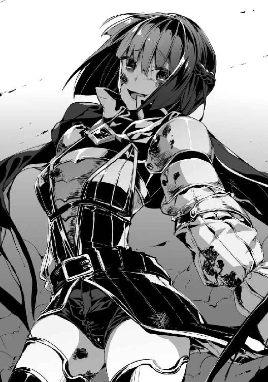

| 異世界魔王の後継者(サクセサー)2 異世界魔王の後継者(サクセサー)シリーズ (ビギニングノベルズ) | |
| 市村鉄之助 | |
| 株式会社キルタイムコミュニケーション (2017) | |
※本作品の全部あるいは一部を無断で複製・転載・配信・送信したり、ホームページ上に転載することを禁止します。本作品の内容を無断で改変、改ざん等行うことも禁止します。また、有償・無償にかかわらず本作品を第三者に譲渡することはできません。
※本作品は電子書籍配信用に再編集しております。
「ご苦労さまでした、叶海麻人様」
姉のように慕った少女の声が、兄と慕った少年を裏切った。
視界いっぱいに埋め尽くされた魔力の炎が、大切な人を焼いていく。
なぜ、こんなことになってしまったのだろうか、と思わずにはいられなかった。つい、さっきまでお互いのことを守り、労わりあっていた二人が、なぜ──。
姉の裏切りを止めることができず、兄を救うこともできないことが、情けなくて腹立たしい。
手も足も動かすことができず、声を発することさえ封じられた哀れで幼い少年は、信じてもいない神に助けを求め祈る。
しかし、少年の祈りが届くことはなかった。
「──アニキッ！」
岩陰で体を休めていたトラスト・ランディは、自らの叫びで目を覚ました。
少し休憩するはずだったのだが、溜まった疲労のせいで気づけば眠っていたようだった。
嫌な夢を見たせいか、心臓の鼓動が早く、汗をかいている。額に張りつく青い髪を汗ごと手で拭い、悪夢を振り払うように、トラストは立ち上がると帝国領土を力なく歩きだした。
鞘をなくした抜身の剣を杖代わりにしながら、土で汚れ、傷ついた体を引きずりながらただ前に向かって歩き続ける。
アンナ・エルミートによって兄と慕い続ける叶海麻人と引き離され、抵抗することもできず軟禁された。
ひどい扱いをされたことは一度もなかったが、トラストは麻人に会いたかった。
安否を確かめ、自分は裏切っていないと声をだして伝えたい。
あのとき、麻人がアンナに裏切られた瞬間に居あわせながら、声ひとつ発することもできなかった不甲斐ない自分を思いだすたびに悔しさがこみ上げてくる。
きっと自分も同じように裏切ったのだと勘違いされているのだろう。だけど、そんなのは嫌だ。
誤解されたままでは嫌だ、という一心でトラストは前進し続ける。
体力はすでに限界だった。
軟禁から抜けだすことができたのはよかったが、頼ろうとしていたシャナリヤ・ウェルカーは行方知れず。追手をかわしながらたどり着いたエルフの集落は無残に焼かれ、遺体が放置されていた。
中には見知った顔や、言葉を交わしたことがあるエルフもいて、あまりにもの惨状に嘔吐を繰り返したことは未だ忘れることができない。
トラストにできたことは、遺体を放置することができず、埋葬したことだけ。
なぜエルフの集落が焼かれなければならなかったのかもわからないまま、トラストはただサンディアル王国から離れようと自然と帝国へ向かった。
それから数日歩き続けた。かつては麻人たちと歩いた道をたったひとりで進み、ときに追手から隠れることも、戦うこともあった。
帝国領土へ入ると、魔物の数が増えて戦いが増した。しかし、相手が人間ではないので少しだけ気が楽だった。
だが、魔物はサンディアル王国兵と違って容赦なく殺そうとする。殺し、食らうつもりで襲いかかってくる。
死に物狂いで抵抗した。どれだけ今まで仲間のお荷物であったのか痛感しながら戦い続けた。
正直、生きているのが不思議なくらい死にかけた。そのたびに、負けてたまるか、と歯を食いしばって剣を振るった。
魔物の命を奪うことで自分が生きているのだと実感できた。迫りくる危機から脱した瞬間だけ、生を噛みしめることができた。
何日もまともに眠っていない。先ほどのようにうたた寝ができればマシなほうだ。食事だってわずかに持っていた金で干し肉をポケットに入る程度しか買えなかった。あっという間に食料が尽きれば、殺した魔物の肉を食らった。
まるで自分が魔物になったような錯覚に陥りながら、ただ仲間に会いたいという気持ちが心を人間のままでいさせてくれた。
少しでも気を張り詰めていないと意識が遠のいてしまいそうな疲労の中、鉛のように重い足を引きずりながらアンナのことを考える。
笑顔を絶やさず、誰にも優しい聖女の名にふさわしい人。
孤児で盗みを働いていた自分が麻人に捕まったとき、しかるべき場所へ突きだしてしまえばおしまいだったはずなのに助けてくれた恩人。
王族だとあとから知って大きく驚かされたが、それでも出会ったときから態度を変えることなく優しくあり続けたアンナ・エルミート。
一年以上続けた旅を思い返せば思い返すほど、なぜアンナが麻人を裏切ったのかわからなくなる。
麻人を犠牲にしなければいけないほど魔王は倒さなければならなかったのか、自分には理解しようがない事情があったのかもしれない。だが、それなら話してほしかった。話してさえくれれば、大切な兄を犠牲にしようとする姉の行動を止められたかもしれない、と何度目になるかわからない悔しさを覚える。
しかし、もうそれも終わりかもしれない。
「はははっ......ちっくしょう......」
眼前には狼の群れが広がっている。ただの狼ではない。魔力によって突然変異した狼たちだ。
魔物に分類されてはいないが、人間にとって十分すぎるほど脅威である。
万全な状態で数体ならトラストでも乗りきれたかもしれない。だが、満身創痍の現状では無理だ。
まだ幼さが残る体から悲鳴があがり、動くことが苦痛でしかない。杖代わりにしている剣を持ち上げる気力も、構えて振るう力もなにも残っていなかった。
死にたくない、と思った。だが、それ以上に麻人たちに会いたかった。
死は恐ろしいはずなのに、恐怖はない。胸の内にあるのは、ただ家族のようだった仲間を思う気持ちだけ。
狼たちが低い唸り声をあげる。トラストを獲物と定め、牙をむきだしにして威嚇し続ける。
抵抗する力が残っていないトラストだったが、最後まであがこうと決めた。
狼たちがいっせいに駆けたそのときだった。
トラストと狼の間にひとりの少女が音もなく現れた。
「──え？」
いつ、どのタイミングで少女が現れたのかまったく気がつくことができなかったトラストは、危機的状況にもかかわらずに間の抜けた声をあげてしまった。
狼たちも突然の乱入者に警戒したのか足を止めている。
少女はトラストとあまり歳が変わらないように見えた。少女のほうが少しだけ年上かもしれない。伸ばされた黒髪は櫛を通していないのかボサボサで、美少女といっても過言ではないかわいらしい容姿が台なしになっている。
スカート姿の上から汚れた白衣を羽織った少女はトラストに視線を向けてわずかに微笑むと、狼に向かって人差し指を突きだした。
威嚇する狼に向けた指先から魔法陣が幾重にも展開されていく。
魔術に詳しくないトラストだったが、少女から立ち昇る魔力に思わず息を呑む。
はっきりと視認できるまで高まった魔力が魔法陣を介して指先に集まっていく。
「ばーん」
まったくやる気を感じさせない鈴を転がすような声が響くと同時に、指先から放たれた魔力が赤い閃光となり、狼の群れの真ん中に放たれた。
刹那──、轟音が鳴り響き、鼓膜が痛いほど揺れる。
熱波が襲いかかり体が焼かれそうになる。
爆風に体が吹き飛ばされそうになるのを地面に剣を突き立てて必死に耐えた。
土砂が宙を舞い、雨のように降りそそいできたので、思わず目を閉じてやり過ごす。
しばらく経ち、熱も衝撃も降ってくる土もすべてが落ち着きを取り戻していくと、恐る恐る目を開けたトラストの眼前には、
「嘘、だろ？」
巨大なクレーターが作られていた。
周囲にはわずかに残った狼たちの一部が申し訳ない程度に落ちているだけ。
草木も、岩も、すべてが少女の放った魔術によって薙ぎ払われ、地形すら変えてしまったのだと受け入れることに時間が必要だった。
「やりすぎちゃった......音が聞こえてたら姉上に怒られる。でも、その前にお風呂入りたいかも」
トラストが食らえば塵ひとつ残らないであろう強力な魔術を放っておきながら、特別なにかを気にした様子を見せない少女に警戒心さえ抱くのが馬鹿らしくなる。
きっと不意打ちを狙って剣を振り降ろしたとしても今のトラストでは少女を倒せない。倒せなければ、怒りを買って先ほどの魔術を放たれるだけだ。
おそらく死んだこともわからないほど簡単に殺されてしまうはずだ。
「やってらんね......」
自分がどれだけ苦労してここまできたと思っているんだ、とトラストは自分勝手だと承知で不貞腐れる。
何度も死にかけ、死を覚悟し、抗おうとしたというのにひとりの少女が簡単に状況を覆した。
もしも彼女が命を狙ってきたとしても、抗うのも無駄だと本能が抵抗を放棄してしまった。
好きにしてくれといわんばかりに食いしばっていた顎から力を抜いて、強張っていた体を弛緩させる。
重力に従うまま地面に倒れると、嫌味なくらい真っ青な空が見える。
「おーい。だいじょうぶ？」
少女が近づき声をかけてくれる。
声に敵意はなく、土を被った髪と茶色く染まった白衣がどこか間抜けで笑みがこぼれた。
「どうして笑ってるのかな？」
興味を抱いたように見下ろす少女を視界に入れたまま、トラストは静かに意識を手放すのだった。
魔王リオネ・シュタインは執務部屋の窓を開けて、冷たい風を感じて大きく深呼吸する。午前中の書類仕事を終えた彼女は体を大きく伸ばして、こった肩や腰をほぐしていく。長い日など一日中椅子にしばりつけられてしまう日もあるが、やはり本質は魔術師であるため体は適度に動かしたいと思っていた。
日差しこそ暖かいが冷たい風が本格的な冬が近くまできていることを感じさせる。
帝国は大陸北部に位置するため、冬になれば雪が積もり街から街への移動も困難になってしまう。外部の敵から身を守るのに最適なのかもしれないが、食料の備蓄、避難民を迎えるにあたっても雪のせいで困難になるため問題は多い。
帝国領土すべてに雪が降るわけではないので、作物は育つし、狩猟もできるのだが、春夏に比べれば物資は不足する。それでなくても今までの戦争のせいで決して帝国は豊かではないのだ。
帝国は、作物も育つし、家畜も多い。山や川も多いので自然の実りをもらうこともできる。しかし、人材が足りていない。人間と違い、魔族の中には狩りに向かない種族もいるのだ。
「やることはたくさんあるね」
同盟国と貿易があり、魔族は基本的に助けあうので民が飢えることも、生活に困ることもない。それでも冬になれば民の生活を考え、行動しなければならないのだ。
幸い、支えてくれる仲間がいるので不安はない。今までやってこれたのだから油断しなければいいとわかっているが、毎年冬を乗りきるまでが大変なのだ。なによりも、リオネは寒いのが嫌いなので冬は好きじゃない。
魔族の中には冬眠してしまう種族だっている。
今、手がけている書類も冬に備えてのものだ。つい先日、保護した避難民たちにも冬の準備をさせなければいけない。やるべきことはたくさんあるが、すべてが魔王の仕事ではない。帝国軍や各種族の長が魔王の指示を受けて各々の領地を守るのだ。リオネは国全体を見なければいけないが、指揮するのは帝都が主となる。
書類をめくっていると、庭から楽しそうな声が聞こえる。同居人たちが洗濯物を干しているのだろう。ここ数日ですっかり慣れてしまった。
いいことだ、とリオネは思う。
ここのところ、エルシュノン王国と戦い、勇者叶海麻人と一騎打ちの果てに九死に一生を経て、冒険者と戦い、さらに堕天使と死闘を繰り広げた。
だから、穏やかな日々が続くことはありがたい。
椅子に再び座り、冷たくなった紅茶を飲むリオネはとても機嫌がよかった。
それもそのはず、母の死後疎遠とまではいかないが決してよい関係と言えなかった父親イグナシオ・シュタイン前魔王と関係が修復したのだ。お互いに歩み寄ることができてから三日が経ったが、執務を終えるとリオネは甲斐甲斐しく父のもとへ足を運び、ときには食事を一緒に取ることもあった。
早くに母を亡くし、家族がバラバラだったせいもあって家族愛に飢えていたリオネ。魔王として帝国の民を家族として愛していたが、それ以上に本当の家族からの愛情も必要だった。
そんなリオネと父親の仲を修復させたのは地球からこちらの世界イシュタリアへ召喚された叶海麻人だ。
亡き母前原梨香子が自分たちのために残してくれた手紙があったのだが、地球人である母の文字はイシュタリア人であるリオネやイグナシオにはどう頑張っても読むことができなかった。諦めてしまったリオネと、諦めることができずに長い時間を費やすも成果を得られなかったイグナシオだったが、同じ地球の日本を出身とする麻人のおかげで手紙の内容を知ることができた。
父は憑き物が落ちたように穏やかに、そして彼の中で止まっていた時間が動きだした。リオネは、母のことしか考えていなかった父を呆けていると勘違いしていたが、誤解だと知り、和解できた。
リオネもまた停滞していた時間が動きだしたのだ。
今までの時間を取り戻そうとリオネとイグナシオは時間を作って会い、話をした。惜しむならそこへ妹が参加してくれなかったことだ。それだけが残念だった。
今日も夕方に麻人とともに父の屋敷を訪れて母の残した手紙を読んでもらうことになっている。だが、きっと妹はこないとわかっていた。
妹のことを考えると、気が沈んでしまう。
「おや？」
執務机の上にある手紙の束の中に、見知った名前を見つけた。
ヘルティー・シュタイン。つい今まで考えていた妹の名前だ。
「あの子が私に手紙をくれるなんて珍しいね......なにかあったのかな？」
記憶を掘り起こしてみても、妹から手紙をもらったことなどまだ母が生きていたころ遊びとしてやり取りをしたくらいだ。
魔術研究を行っているヘルティーはあまり自分の屋敷からでてこようとはしない。とくに、母が亡くなってからは放っておけば食事や睡眠さえ疎かにしてしまうほどだ。年ごろの少女でありながら、女であることを放棄しただらしなさは姉として頭が痛くなる悩みのひとつであり、一週間に一度はメイドとして有能なクラリッサ・ルルクセンを派遣しなければ心配で気が気でないほどだ。
魔術の実験と称してときどき外出しているようなのだが、基本的に妹は単独行動ばかりなのでリオネもクラリッサもその場を見たことがなかった。
もしかすると避けられているのではないかと不安になるも、誰に対しても同じなようで胸を撫でおろしたことは記憶に新しい。
先日も、母の手紙の内容を伝えたいと思ったリオネが使いをだすも、「やることがあるから」と父の屋敷にこようとはしなかった。リオネの記憶ではヘルティーは自分と同じ以上に母を慕っていたのを鮮明に覚えている。
確かに母が生きていたのはずいぶん前ではあるが、妹の中で母の思い出が風化しているのなら寂しいことだ。
関係がうまくいっていない妹から送られてきた手紙に興味が湧く。いったいどのような内容なのだとはやる気持ちを抑えて手紙の封を切る。
「──は？」
そして、リオネは目を疑った。
『わたし結婚します』
手紙の内容は簡潔な一言だけ。しかし、内容が信じられない。いや、受け入れがたいと言うべきなのかもしれない。
驚愕と絶望で足が震えるのを抑えられず、気を抜けば床に崩れ落ちてしまいそうだった。
気丈にもリオネは負けるものかと歯を食いしばり、視界を滲ませていた涙を拭う。そして、大きく息を吸うと、
「先を越されたぁああああああああっ！」
悔しさを込めて絶叫した。
＊
叶海麻人はクラリッサ・ルルクセンと叶海ルリと一緒に、魔王リオネの屋敷の中庭で洗濯をしていた。
かわいらしいフリルのついた洋服を着せられて、歳相応のかわいらしさを取り戻したルリは楽しそうに洗濯物を広げて走り回っている。クラリッサは最初こそ叱ろうとしたが、ルリの笑顔を見ると苦笑して見守ることにしている。
ルリと暮らすようになって、もう三日が経っていた。麻人はルリと実の兄妹のように仲よくなり、大切に思いあっている。一緒に食事を取り、時間が許す限り今日のようにこうして色々なことをして過ごしている。夜になればひとつのベッドで眠り、初日こそルリと二人だったが、次の日からクラリッサとここにはいないエリザヴェータ・ロヴナーの四人で並んで眠りもした。
誰かと一緒に眠らないと安心できないようで、魘されてしまうことを病院から聞かされていたので心配していたが、この三日間でルリが魘されたことはなかった。
自分と一緒に眠ることで安心感を覚えていてくれるならそれでいい。ただ、夜に肉体関係を持つことができず欲求を持て余したエリザヴェータが肉食の目でこちらを見ていることが少しだけ怖い。そろそろ襲われてしまうのではないかと思っている。
エリザヴェータもルリを妹としてかわいがっているため、目の前で行為に及ぶことはないと信じているが、よくも悪くも欲望に素直なので少しだけ不安だった。
そんなエリザヴェータはストレス発散のためか、狩猟本能を満たすためかわからないが、近くの森に夜が明ける前にでかけてしまった。
突然起きたと思えば、クラリッサを叩き起こし、弁当を作らせて嬉しそうにしていたことを思いだす。
睡眠を邪魔されたクラリッサだが、美容がどうこうと不機嫌に文句を言いながらもしっかりお弁当を作りエリザヴェータを見送るあたりは彼女の元来の優しさが感じ取れる。
お弁当はおにぎりと漬物という、日本人である麻人にとって懐かしく感じるものだった。さすがは初代魔王草薙健流だ。しっかり日本人の魂ともいえるおにぎりを帝国に根づかせていた。
ついクラリッサにお願いして、朝食をおにぎりにしてもらってしまった。クラリッサにだけ用意させるのは悪かったし、作ってみたかったので麻人も手伝った。
朝食の席でリオネやドルノワ・バルトも平然とおにぎりを食べていたことに少しだけ違和感を覚えて苦笑してしまった。
しかし、ルリだけは握られた米をしげしげと眺め、どう食べていいのか不思議そうにしていたのが印象的だった。麻人が食べ方を教えると、満面の笑みでぺろりと平らげて「美味しい！」と言ってくれたことは嬉しかった。
「おにいちゃーん！」
ルリが洗濯物を干し終えると、褒めてと言わんばかりに大きく手を振ってくる。麻人も笑みを浮かべて手を振り返す。
「麻人さま、お手伝いしてくださってどうもありがとうございます」
「気にしないで、これもいい魔力の勉強になるよ」
申し訳なさそうな表情を浮かべているクラリッサに気にしてないと応じる。クラリッサとルリが洗濯物を干すのに対して、麻人は洗う係なのだ。
洗濯といっても手洗いではない。さすがに女性たちの下着があるのだから、やれと言われても困ってしまう。麻人は桶に張られた水の中に洗濯物と一緒に腕を突っ込んでいるだけ。もちろん、それだけでは洗濯にならない。そこで魔力が必要となる。桶の中に一定の魔力を流すと、仕組みは不明だが地球では定番の洗濯機と同じように水が回転するのだ。
リオネの妹が日本人の母親前原梨香子の話を聞いて考案した『魔力式自動洗濯機』というのがこの桶の名前だ。
魔力を流していると水が勝手に左右に回転して洗濯をしてくれるのだ。そこに洗剤を投入すれば泡立ち、しばらく回し続けると、綺麗な水に交換してすすぐ。まさに洗濯機だ。
しかし大きな欠点もある。それは、リオネやクラリッサ、エリザヴェータの下着が腕に絡みつくことだ。洗っている最中とはいえ、使用済みの女性の下着に触れるとなんだかいけないことをしている気分になってしまう。
そばにいるクラリッサはとくに気にした様子もなく、リオネもエリザヴェータも洗濯をしていることに礼を言ってくれるのだが、麻人はモヤモヤした言葉にできない気まずさを覚えていた。
下着のみに興奮を覚える特殊な性癖はなかったはずなのだが、目の前に腕に絡みつく下着を身につけた女性がいると思うとゾクゾクした興奮のようななにかが胸の内でくすぶっているのを自覚してしまう。
「どうかしましたか、麻人さま？」
「な、なんでもない。別に俺はなにも変なことは思っていないから大丈夫！」
「......ええと、本当にどうもしていませんか？」
「全然問題ないよ！」
クラリッサと共有している魔力を介して邪な感情がバレてしまったのではないかと慌てるも、彼女は不思議そうにしているが気づいた様子はなかった──と、信じたい。
特殊な性癖を持っていると勘違いされて嫌われるのだけはごめんだ。
誤魔化すように大げさに声をあげて笑う。だが、無理があったので話題を投入することに作戦を変える。
「と、ところでさ、この魔力式自動洗濯機だっけ？ 作ったのはリオネの妹だって聞いたんだけど？」
「ヘルティーさまですね」
「そうそう。そのヘルティーって子とは一度も会ったことがないんだけど、どんな子なの？」
同じ日本出身の前原梨香子の血を引くのなら、リオネ同様にもう一年以上目にしていない日本人の面影があるのかもしれない。
会って話をしてみたいと思っていたのだが、イグナシオ・シュタインとリオネのために前原梨香子の手紙を読み伝える場にヘルティーは一度も顔をださないため、機会に恵まれなかった。
残念だと思う以前に、母親の手紙の内容を知りたくないのかと疑問に思えてならない。
「ヘルティーさまですか......そうですね、一言で表せば『魔術馬鹿』ですね」
「へ？」
「あと『引きこもり』ですし、『生活能力皆無』でもあります」
「いや、ちょっと待って」
「どうかしましたか？」
「どうかしましたかって、言われても......」
麻人はヘルティー・シュタインがどのような人物なのか聞きたかっただけなのだが、クラリッサのヘルティーに対する言葉に驚いてしまう。
仮にも魔王つきメイドが魔王の妹を散々な言い草だ。だが、クラリッサの言葉に悪意は感じず、親しい人物に対するゆえの辛辣さに思えた。
麻人の戸惑いを察したようにクラリッサは苦笑する。
「言いすぎと思いますか？ でも本当なんですよ。あの子は昔からひとつのことにのめり込むとそればかりで他を疎かにしてしまうのです」
「やっぱり昔からの知りあいなんだ？」
もちろんです、とクラリッサが頷く。
「魔王さまの妹ですので、自然と妹のようにかわいがってきました。ドルノワだって同じですよ」
「へえ、みんな昔からの付きあいなんだな」
先日ドルノワが幼少期にクラリッサよって育てられたことを教えてくれたのを思いだす。以前、リオネの言った通り、帝国はひとつの家族なのだ。少なくともリオネの周囲は家族として成り立っていると思えた。
現にクラリッサもリオネたちを家族だと思っていることがよくわかる。ドルノワだって同じだ。
願わくは、その家族に自分とルリも加えてもらいたい。
「だからでしょうか、顔をあわせればつい小言ばかり言ってしまいます。ヘルティーさまは少々変わった子ですが、魔術研究が趣味であり魔術開発も行う優れた魔術師なのです。魔王さまの魔術も、大半がヘルティーさまのオリジナルなのですよ」
「......さすが魔王の妹、と言うべきなのかな？」
「言ってあげてください。きっと喜びます」
リオネの使う魔術はどれも強力なものばかりだった。魔力量が多く、魔力そのものが強くなければ十全に扱えないものだと聞いたことがあった。
エルフである師匠のシャナリヤが使う魔術とは別の、人間が使う魔術とは威力もなにもかも違うリオネの魔術の正体が、まさか彼女の妹が開発したオリジナルだとは思っていなかった。
「好きなことを頑張るのは構わないですし、応援したいのですけど、いくらなんでも食事を抜いて倒れるまで没頭するなんてメイドとして許せません」
ただし、クラリッサから話を聞く限りでは、魔術研究と開発には優れているが、それ以外は駄目らしい。
「魔力式自動洗濯機も梨香子さまから地球で日常に使われていた、『機械』というものの話を聞いて作ったそうなのですが、確かに洗いとすすぎはしてくださるのですが、正直全部が自動ではないですよね」
「確かに。しぼるのは手動でやらないと駄目だからね」
「量が多ければ助かるのですが、少ないなら手洗いをしてしまったほうが早かったりします」
そんな会話を続けながらクラリッサと一緒に洗濯物の水をきっていく。彼女の言う通り、名前こそ全自動だが、本当に全自動なわけではないのだ。
とはいえ麻人的には助かっている。洗濯物を干したことがあっても、手洗いなどはしたことがない。豊かで便利な時代に産まれた麻人にとって、一昔前の洗濯のように手洗いをする機会はあるはずもなく、必要があっても母親がしてくれていた。
洗濯の大変さをこの数日で学んだおかげで、改めて母親の偉大さがわかった。朝、洗濯をして、朝食の支度をしながらお弁当まで作ってくれていたことに感謝しきれない。親孝行できていないことが悔やまれてならなかった。いつかどこかで感謝の気持ちを伝える機会があればいいのだが、おそらくないだろう。そのことが少しだけ寂しい。
洗濯物をカゴに移し、物干し竿に干していく。クラリッサは自分の下着をいち早く確保して自ら干していた。
庭を走り回っていたルリも新たな洗濯物の到着に飛んできた。
「ほすぞー！」
「ルリさま、あまりはしゃいで転んだりしないでくださいね」
「はーい！」
ルリが楽しそうにシーツを広げて物干し竿に広げていく。身長が低いため、麻人が背後から手伝いながらだが、一緒になにかができることが嬉しいのだろう。ルリの笑顔が途切れたのをこの三日間で一度も見たことがない。
できることならいつまでも笑顔でいてほしい。
そんなことを思っていたとき──屋敷の中からリオネの悲鳴のような叫び声が聞こえた。
思わず三人は顔を見あわせてしまう。
「今のリオネだよな？」
「ええ、とても残念なことに魔王さまの声でしたね」
手を止めた麻人の問いに、クラリッサが嘆息して答えた。
「ねえねえ、さきをこされたってどういう意味なの？」
「どういう意味なんだろうねえ......」
同じく動きを止めていたルリが麻人に尋ねてくるが、正直こちらが知りたかった。予想がまったくできないわけではないのだが、かなりデリケートな問題かもしれないので適当なことは言えない。
間違いなく屋敷から聞こえてきた悲鳴のような叫び声はリオネのものだった。本来ならなにが起きたのか確かめるために駆けつけなければならない。しかし、叫び声が「先を越された」というものだから、行動よりも先に疑問が浮かんでしまったのだ。
「あのさ、クラリッサ。俺の中でもしかしたらって答えが浮かんでるんだけど当たってほしくない」
「奇遇ですね。わたくしもです」
はぁ、と揃って重々しい息を吐きだした。
「......おそらく、ご友人かお知りあいからの結婚報告が届いたのでしょう。年齢イコール恋人いない歴の魔王さまは自身が行き遅れであることをもの凄く気にしていますから」
呆れた表情を隠そうとしないクラリッサに麻人は笑うしかない。
「いきおくれ？」
「若くてかわいいルリさまは気にしなくてもいいことですよ」
「はーい！」
「いい子です。あとでフルーツを食べさせてあげますね。では洗濯の続きをしましょう」
「やったー！ つづき、つづきー」
ルリが『行き遅れ』の意味を不思議がるが、クラリッサが笑顔でうまく誘導して興味を逸らすことに成功する。麻人は安堵した。帝国を治める魔王が行き遅れを気にしているのだと幼いルリに説明できるはずがない。
麻人も二人に倣って手を再び動かし始めたが、
「おいおい、リオネを放っておいていいの？」
叫び声こそ今は聞こえないが、すすり泣くような声とずるずるなにかを引きずる音が近づいてくるのが正直怖い。
「触らぬ神に祟りなしですよ、麻人さま」
「いや、リオネは魔王だけどね」
長い付きあいのクラリッサが放っておいていいのだと判断したのなら平気か、と麻人もリオネの放置を決めて洗濯物を次々干していく。
三人がかりで動いたおかげであっという間に洗濯物を干し終えることができた。ルリはすでにフルーツが食べたくて「フルーツ、フルーツ！」と歌っている。
だが、麻人たちは屋敷に戻りたくなかった。
なぜなら──屋敷の中から黒い瘴気のようなものを放ちながらこちらを窺っているリオネがいるからだ。
いっそ声をかけてくれればなにかしらの対応ができるのかもしれないが、ただ見つめられているだけなのでどうするべきか、と脳裏に浮かんだ数ある選択肢から最良のひとつが選べない。
「はっきり言いましょう。邪魔だ、と」
「ごめん。俺にはそんな勇気がないよ......っていうか、リオネも結婚を気にしたりするんだな。ちょっとだけ驚いた」
「魔族としては十分に若いのですが、リオネさまは長年魔王として自分自身のことをあとまわしにしていましたから。感謝していますし、お手伝いできていることは誇りに思っています。ですが、一度ああなってしまうと実に鬱陶しいと本気で思います」
付きあいが長いだけあってクラリッサの言葉には遠慮がない。
「でも、さすがにかわいそうだから声をかけてあげようよ。ほら、ルリ。あそこにいるお姉ちゃんも一緒に誘ってお茶にしよう」
「うん！」
打てば響くように返事をしたルリがリオネに向かって駆けていく。ルリと言葉を交わすとリオネが手をつないでこちらにやってきた。心なしか足取りが重そうに見える。
「......やあ、麻人。クラリッサ。洗濯物を干してくれてありがとう。私の心は洗濯物と違って真っ黒だよ」
「なに言ってんだ？」
「世の中の理不尽を味わったのさ。神なんてものは信じていないけど、もしも神がいるならきっと私のことが大嫌いなはずだよ」
虚ろな目をしておかしなことを言いだすリオネに麻人は冷や汗を流した。
「駄目です、重症です。かつてないほど壊れていますね。さて、どうしましょう」
「放っておきたい俺がいる」
関わりたくないと思ってしまった麻人が素直に本音を吐露する。クラリッサも同感なのか苦笑いを浮かべて頷いている。すると、リオネがゆっくりと懐から一枚の手紙を取りだす。
「なにこれ、手紙？ いや、俺に渡されてもこっちの世界の文字は読めないんだけど......」
「ではわたくしが......あら、差出人はヘルティーさまなのですね」
「その名前って、リオネの妹だよな？」
「ええ、そうなのですが、ヘルティーさまが手紙とは珍しいですね。内容を拝見してもよろしいですか、リオネさま？」
ルリに服を引っ張られながら「だいじょうぶー？」と声をかけられているリオネが弱々しく頷くのを確認すると、クラリッサは手紙を開く。
「──え？」
そして、まるで信じられないものを見たかのように、驚愕の表情を浮かべた。
「え？ なに、どうしたの？ そんな思いきり目を見開いて体を震わせるほど酷いことが書いてあったの？」
「そうだともっ！」
突如、くわっと目を見開いてリオネが大声をあげる。
「姉にこんな仕打ちができる子だったなんて思ってもいなかったよ！ 私の心はガラス細工のように砕けてしまった！」
「その割には元気そうだな。ついさっきまで落ち込んでいたくせに、どうしたんだよ急に......っていうか、説明してくれ。俺には手紙の内容がわからないんだから」
いい加減に説明のひとつくらいしてもらいたいと心底思った。リオネは少し鬱陶しいし、クラリッサはなぜか硬直している。ルリは突如大きな声をあげたリオネに驚きはしたが、元気になったと判断したのか嬉しそうににこにこしていた。
「ならば聞いてくれ麻人。私の妹、ヘルティー・シュタインが──結婚することになった」
「ん？」
「だから！ 私の妹が結婚することになったんだ！」
大声をあげるリオネに対し、
「いや、おめでたいことじゃないか。よかったな、おめでとう」
祝福の言葉をかける麻人。しかし、リオネはそうでもないらしい。妹が結婚するんだから少しは喜んでやれよ、と突っ込みたくなる。
「めでたくなどないよ！ あの魔術馬鹿の引きこもりが結婚するんだぞ！ 相手は誰だい？ まさか異次元から召喚した怪物じゃないだろうね？」
「酷いこと言うなよ、お前の妹はそんなのと平気で結婚できるのか？」
「できる。あの子はいつも予想よりも斜めなことを平気でする子なんだ......」
どんな子だよ、と突っ込みたいが我慢する。もうこの話はどうでもよくなってしまった。
「駄目だ、麻人はこの事態がちゃんとわかっていない。クラリッサ、ショックなのはわかるがしっかりするんだ！」
「り、リオネさま......」
未だ驚愕に固まっていたクラリッサが恐る恐る声を絞るように呟く。
「大丈夫か、クラリッサ？」
「引きこもっていても出会いがあるのですね」
「いつも通りのクラリッサで安心したぞ！」
「ルリ、先に食堂にいこう」
「うん！」
リオネだけではなく、クラリッサに関しても放置することこそ最善だと判断した麻人はルリの手を握って離れようとする。
「待ってくれ、麻人！ 妹に先を越されて悲しんでいる女二人を残してどこへいく？」
「あのさ、悪いけど、正直に言うよ」
「構わない、言ってくれ」
「どうでもいい！」
「な、に......」
信じられないとばかりに大きく目を見開くリオネ。
「姉なら妹の結婚を祝ってやれよ。せっかく妹が幸せになるんだから、リオネがそんなだと悲しむかもしれないぞ」
「ぐぅ......正論を言うじゃないか。若い麻人には私たちの気持ちなどわからないようだね。だけどクラリッサならわかるだろ？」
「いえ、わかりません。麻人さまのおっしゃる通りです。ヘルティーさまの幸せを素直に喜びましょう」
「まさかの裏切りだ！ 今までショックを受けていたくせに、麻人の言葉を聞いてあっさり意見を変えたな。そうか、所詮キミも愛する男ができた人生勝ち組だったね。妹だけではなく、姉妹のように育ったクラリッサにも突き放されていくなんて、女としての自信が木っ端微塵だよ」
「リオネさまは、女としての自信があったのですね。知りませんでした」
悲しみにくれながら地面に膝をついたリオネに、麻人は面倒だと言わんばかりの視線を向ける。妹の結婚ひとつでここまで愉快な行動を取るとは思っていなかったが、普段は魔王として非の打ちどころがないリオネの違う一面が見られたことはよかったと思う。こういうリオネが見られたのも、それだけ彼女が打ち解けてきた証拠だろう。
麻人は結婚というものに焦りはない。いつかはするのかもしれない。以前、ドルノワ・バルトと話したように地球に戻れないならこちらでの生活を真剣に考えなければいけないのだ。愛するクラリッサとエリザヴェート、そしてルリがいる。こちらの世界に永住することも覚悟している。
今回の一件で、少し先の未来まで考えて見るべきかもしれないと思った。まだ十代の麻人にとって結婚というのは未知なるものだ。子供ができて父親になる。守るべき家族ができる。自分に務まるのかと不安もある。
今だって妹のルリと一緒に過ごす日々が新鮮で、学ぶことの多い日々なのだ。大変だとは思わないが、ルリのために失敗したくないと思っている。
だから、もう少し未来を考える猶予がほしいと思ってならない。
「どうかしたの、お兄ちゃん？」
「いや、なんでもないよ」
ルリからどこか心配するような感情を宿した瞳を向けられてしまった。
もしかすると魔力を介してクラリッサにも今考えていたことが伝わってしまったのではないかと不安になるが、幸いリオネに声をかけていたので気づいてないようだ。
「あ、麻人に頼みがある」
クラリッサの手を借りて立ち上がったリオネ。
「俺にできることなら別にいいけど」
「妹の様子を見にいきたんだが、幸せオーラ全開だったら私の心はきっと折れてしまう。強大な敵と立ち向かうためにも、キミについてきてほしい」
「知るかっ！」
「つ、つれないことを言わないでくれ、クラリッサはもちろんきてくれるだろ？」
「魔王さまのご命令とあらば──たとえ、どのようなくだらない命令であったとしても従います」
「凄く嫌そうな顔をしてるぞ、クラリッサ......リオネ、無理強いはやめてやれよ」
「いつもは笑顔でついてきてくれるのに......」
心底嫌そうな顔をしているクラリッサにショックを隠せないリオネ。
おそらくヘルティーに会いたくないのではなく、この暴走しているリオネに付きあいたくないのだろう。気持ちはよくわかる。
ただ、このままでは埒が明かない。
大げさにため息をついた麻人はクラリッサと視線をあわせる。彼女は口もとに手を当ててリオネに隠れて微笑んでいた。きっと、リオネの反応を楽しんでいるのだろう。
「わかったよ。一緒にいけばいいんだろ？」
「本当か！」
「本当だよ。正直言うと、ヘルティー・シュタインのことが少し気になっていたんだよ」
リオネとイグナシオが何度か誘っても一度も母の手紙の内容を知ろうとしなかったヘルティーがなにを思っているのか気になっていた。
特別ヘルティーが母親に悪感情を持っているわけではないのだということはわかっている。ならばなぜ、と疑問に思うのだ。
純粋にリオネの妹に会ってみたいという感情と、ヘルティーが母親に対してどのようなことを思っているのか知りたかった。
「それで、いつ妹に会うの？」
「今日だよ」
「早いなっ」
「こういうことは早ければ早いほうがいい。主に、私の精神的に」
「お前なぁ、妹に会うだけでどうしてそんなことになるんだよ」
呆れを隠せない麻人だったが、リオネは至極真剣な面持ちだ。
「まだ若い麻人には私の気持ちはわからないんだね。クラリッサならわかるだろ？」
「いいえ、わたくしにもまったくわかりません」
「口ではそう言っても強がりだとわかるよ。いいか、麻人？ ヘルティーはね、姉の私が言うのもなんだけど、かわいらしい容姿をしているんだ。もちろん、その容姿を台なしにするほど色々と駄目なんだけど、それでもかわいい妹だ。もちろん祝福してやりたい！」
「じゃあ、してやれよ」
「だけど素直にできないのが女心なんだよ。妹に幸せになってほしい気持ちと、自分よりも先に幸せになってしまう妬ましさ......そんな感情を抱えて妹に会う勇気が私にはない！」
惜しげもなく自分の感情を打ち明けるリオネに麻人は頭が痛くなった。
初めて戦ったときのことが酷く遠い出来事に思えてならない。
裏切られて途方にくれていた自分に優しい声をかけてくれたこと、魔族と人間の共存という夢を語っていたこと、ともに堕天使に立ち向かったことが脳裏に浮かんでは消えていく。そして、思うのだ。
──こいつ、偽物じゃね？
気さくなところは以前からあったが、妹の結婚に女として不安になり暴走する一面を見てしまうとそう思わずにはいられない。一国を治める王がこれでいいのか、とも思う。だけど、このようなリオネだからこそ親しみやすさを持てることも確かだ。
「凄いです魔王さま......ご自身の本心をよくもまあそこまで嘘偽りなく言えますね」
「褒めないでくれ」
「いいえ、褒めてなどいません」
そんなやり取りが聞こえていても、聞こえないふりをして魔王リオネの活躍を必死に思いだすことに専念する。そんな麻人をルリが引っ張る。
「だれが結婚するの？ ルリのしってる人？」
キラキラと瞳を輝かせているルリ。名もない孤児であった過去を持ち、まともな教育さえしていなかった彼女が結婚を知っていることに安堵した。
「リオネお姉ちゃんの妹が結婚するんだって」
「うわー、うわー！ いいなぁ！」
「その人に会いにいくんだけど、ルリも一緒にくる？」
「うん、いきたい！」
「じゃあいこうか。それにしても、いつの間にリオネとクラリッサは言い争いにまで発展してるんだ？」
聞くに堪えないとは言わないが、年ごろの女性がお互いの黒歴史を暴露しているのは正直どうかと思う。二人は自分とルリの存在を忘れているのではないだろうか。ルリはなにを言っているのかわからないようだが、許されるなら耳を塞ぎたいと麻人は心底思った。
「相変わらず騒がしいところだな、ここは」
「うん？」
聞き覚えのない声が突如背後から聞こえた。
咄嗟にルリを抱えて数歩下がり魔力を体内に循環させて金剛力を発動すると拳を構えた。
「誰だよ、お前？」
「うわぁあ！ すごくカッコいいおにいちゃんだぁ！」
麻人の目の前には、ルリの言葉通り美しいとしか表現できそうもない人物が不機嫌な顔をして立っていた。
まるで少女漫画から飛びだしてきたような驚くほどの美少年だった。柔らかそうな癖のあるハニーブロンドの髪は耳を隠す程度に伸ばされ、二重で大きな瞳は青空のように澄んでいる。軍服に似た上下青の衣服に身を包み、腰にはサーベルを吊るしていた。
背丈こそ小柄だが、年ごろは麻人とそう変わらないように見える。だが、おそらく魔族なので実年齢はもっと上だろう。
感じ取れる魔力量はリオネに近い。なによりも麻人を驚かせたのはまったく気配を感じさせずに近づかれたことだ。
帝国で保護されてから麻人は常に周囲を警戒し続けていた。リオネたちを信じていないからではない。帝国の民がいい人たちだということもわかっている。しかし、信頼していたアンナ・エルミートの裏切りは麻人の心に傷とトラウマを残していた。
気を張り続けているわけではないが、自分の周囲の気配を気にかけるように無意識にしていたのだ。ルリを妹として迎えてからは意識的に警戒をしていた。もちろん、ルリを守りたい一心からだ。
今だってそうだ。クラリッサと洗濯物を干しているときでも、リオネの行動に呆れていたときでも、常に警戒心が麻人の中にあった。
だが、その警戒心を目の前の人物はくぐり抜けたのだ。今、こうして対峙しているにもかかわらずうまく気配を感じ取ることができない相手に戸惑っている。幸いと言うべきか、魔力知覚がクラリッサと魔力共有してから敏感になったおかげで魔力だけははっきりと感じることができている。
それでも目の前に立つ美少年が、ここにいることに自信が持てない。
「ボクはティリウス・スウェルズ。不本意ながら、あそこで醜い言い争いをしている女どもの幼なじみだ」
ティリウスと名乗った少年は、苦虫を噛み潰したような表情を浮かべて、そろそろ掴みあいに発展しそうなリオネとクラリッサを指さした。
「幼なじみ？」
「そうだ。魔王リオネ・シュタインに用があってきたのだが、あの馬鹿はなにをしているんだ？」
「そんなの俺が知りたいよ。ヘルティーって知ってる？」
彼の言う幼なじみが本当か確かめるためリオネの妹の名をだしてみる。
「リオネの妹だな。あの魔術馬鹿の引きこもりがどうかしたのか？」
「結婚するらしい」
「......引きこもっていても出会いがあるんだな。きっと相手はよほどの物好きか、変態か、もしかしたら別世界からヘルティーが婿にするために召喚された異形だろう」
少なくとも嘘はついていないとわかった。ただ、クラリッサとリオネが言ったようなことを、すべてひとりで言い切った口の悪さに絶句する。幼なじみを名乗るティリウスにとってもヘルティーの印象は魔術馬鹿の引きこもりらしい。少しだけ会うのが怖くなってしまった。
「引きこもりの話はどうでもいい。それよりも、貴様はいつまでボクに敵意を向けているつもりだ？ リオネの幼なじみと言っただろ。わざわざ無駄話に付きあってやったんだ。早くあの馬鹿二人の争いを止めてこちらに連れてこい」
ティリウスの上からの物言いに少しムっとするが、腕の中にいるルリがいる手前余計なことを言わず素直に従うことにした。
「おい、人間。いい忘れていたが、リオネとクラリッサにお祖母様からの命を受けてきたと言え、そうすれば話を聞くだろう。それでも無理ならボクが許すから殴り飛ばせ」
「お祖母様？」
「貴様が気にすることではないが、どうせリオネから聞くことになるのだろうな。ボクの祖母は、この帝国の建国者である初代魔王草薙健流の妻ツェリア・スウェルズだ」
「──まじ、かよ」
初代魔王の妻がまだ健在だということに心底驚く。そのツェリアの命を受けて現れたティリウスの存在に麻人は不安を抱くのだった。
＊
「久しぶりだね、ティリウス。何年ぶりだろう？ 会えて嬉しいよ」
今までの醜態をなかったことにしてリオネがティリウスに微笑む。幼なじみというだけあって、彼女からティリウスへの態度は気安さを感じさせる。
しかし、ティリウスはそっけなく鼻を鳴らす。
「ずいぶん会っていなかったのは確かだが、ボクはお前たちになど会いたくなかった。お祖母様の命がなければスウェルズ領から帝都まででてくるはずがない」
「相変わらずだね」
ティリウスの態度に気を悪くすることなく、むしろ懐かしそうに目を細めるリオネ。彼女だけではない、麻人の隣でルリと手をつないでいるクラリッサもまた同じだった。
「クラリッサたちって付きあいが長いの？」
「そうですね。わたくしとリオネさまは幼少期から今までずっと一緒ですが、ティリウスさまは幼少期こそ一緒に過ごされましたが、少しずつ会うことが少なくなってしまいました。手紙のやり取りは続けていましたし、年に数える程度ですがお会いになっていましたが、ここ数年は顔をあわせることはありませんでした」
話をしているリオネたちの邪魔にならないようにクラリッサと会話を続ける。
「ティリウスさまはスウェルズ領で生活していますので、帝都で暮らすわたくしたちではどうしても都合があわないことが多いのです」
「スウェルズ領っていうのは？」
聞き慣れない言葉に麻人は疑問符を浮かべる。
「そういえば、麻人さまにはそのあたりのご説明がまだでしたね。帝国に暮らす魔族と言っても多くの種族が暮らしています。わたくしたちのような混血種族からエルフ、精霊、鬼、吸血鬼、人間と把握するだけでも大変な数の種族がいます」
「クラリッサは混血種族って言うんだ？」
魔族という種族がいないことは知っていたつもりだったが、改めて多くの種族が魔族として扱われているのだとわかる。クラリッサに関しても、今まで混血種族という名を聞いたことがなかった。
リオネは初代魔王草薙健流の子孫であり、日本人前原梨香子の娘だ。確かに混血と言えばそうなのだろう。実を言うと人間とハーフくらいにしか気にしたことがなかった。
思い返せばクラリッサもリオネの従姉妹なのだ、初代魔王の血を、日本人の血を引いている。
「はい。リオネさま同様に異世界人の初代魔王さまを先祖に、父は混血種族で母はエルフですので、私もまごうかたなく混血種族なのです」
「知らなかったよ」
「便宜上の種族ですから、知らなくて当然です。帝国建設前ならいざしらず、現代では混血は珍しくありませんよ」
確かにルリも魔族と人間のハーフだ。ドルノワだってそうだ。
帝国という多くの種族が暮らす国では自然と血が混ざっていくのだろう。
「話を戻しますと、帝国を建国し魔王として君臨した初代魔王さまですが、彼に協力した種族はたくさんいました。妻となり支えた吸血鬼一族のツェリアさまが人間たちにも有名です。初代魔王さまは力を持つ一族たちの長に領地を与え、ご自身は帝都で最低限の指示しかしませんでした」
「スウェルズ領っていうのは、じゃあそのツェリアっていう初代魔王の奥さんをはじめとした吸血鬼の領地なんだ？」
「そういうことになります。もちろん、帝国を治めているのはリオネさまですが、ひとりでは帝国すべてに手が回りません。ですので、各種族の長の協力は必要不可欠なのです」
麻人は国の運営などはっきりいってわからないので、リオネを総理大臣に、各領地のトップを県知事という形で自分なりに飲み込んだ。
「ティリウスに言われたんだ、初代魔王の奥さんツェリア・スウェルズの命令できたって。それってまだ初代魔王の奥さんが健在ことだよね？」
「もちろんご存命です。ティリウスさまのお祖母様であられるツェリア・スウェルズさまは純血の吸血鬼ですので、帝国に暮らす一般的な吸血鬼よりもはるかに寿命は長く、そしてお強い方です。わたくしも大変かわいがっていただきました」
改めて魔族が人間と違うと言われる理由がわかった気がした。
魔王でありながら人間だった初代魔王は昔に他界している。だが、彼の妻は現在も生きている。この寿命の違いは大きすぎる。
「ツェリアさまは吸血鬼一族の当主としてスウェルズ領を治めていますが、実際は相談役という形でして、次期当主であるご子息さまにお任せする形で半ば隠居しておられます。ティリウスさまはツェリアさまにとてもかわいがられていて、次期当主になるのではないかと噂されることもあるのです」
「そんな人からの使いって、きっと大ごとなんだろうな」
「ティリウスさまご自身が直接リオネさまにお会いになられるほどのなにかが起きている──のかもしれませんね」
麻人は不安になった。堕天使と戦ったときよりもずっと嫌な予感がして心がざわつくのを抑えられない。
「麻人！」
リオネが麻人の名前を呼んだ。表情は固く、どこか緊張しているようにも見える。彼女の隣のティリウスは変わらぬ不機嫌な顔をいているが、雰囲気が先ほどと少し違った。
「どうした？」
「屋敷の中でゆっくり話そう。少々厄介なことになってしまった」
やっぱり、と思ってしまう。自分の不安も、クラリッサの予想も、すべて当たってしまったようだった。
＊
大人しいと思っていたらルリは麻人とクラリッサに手をつながれながら立ったまま眠っていた。
器用だ、と苦笑しながら麻人は抱きかかえる。
フルーツを食べることを楽しみにしていたのにかわいそうなことをしてしまったと反省しながら、起きたらたくさん遊んであげようと思う。
クラリッサがお茶の支度をするため一足先に屋敷の中に戻っていく。
「そういえば、貴様はリオネが保護した人間だったんだな」
隣を歩いていたティリウスが不機嫌な声をかけてきた。
「そうだけど、なにか？」
「聞けば堕天使を屠ったそうだな。人間にしては相当の戦闘力を持つようだが......リオネ、本当にコイツにも話をしなければいけないのか？」
品定めをするような視線を受けて苛立ちが湧き上がってくる。ルリを抱えていてよかったと思った。
ティリウスの言葉からは、かつて敵対していた勇者叶海麻人に対する感情ではなく、人間そのものにマイナスな感情を持っているように感じた。
「先ほども言ったけど、麻人がいたからこそ先日の堕天使も倒すことができたんだ。キミの人間嫌いは相変わらずだからしかたがないとしても、麻人を見下すような態度は許せないよ」
「......悪かったな」
それだけ言うとティリウスは麻人とリオネを置いて先にいってしまった。
「すまない」
「別にリオネが謝ることじゃないだろ」
「ティリウスは私の大切な幼なじみだからね。あの子は人間が嫌いだが、心から嫌いなわけじゃないんだ。その、私からは言えないが、色々あったんだ。もしかすると不愉快に思うことがあるかもしれないけど、できれば我慢してほしい」
「別にいいよ。ああゆうツンケンした奴は初めてじゃないから」
思いだすのは、まだアンナたちと旅していたころの記憶。貴族の家系に生まれ、騎士として育った少女は、異世界人の自分を信用できないと言ってよく突っかかってきたものだ。
彼女は今どうしているのだろうか、と心配になる。
麻人の仲間で、アンナが裏切ったあの場に居あわせなかった彼女は、死んだことになっている自分のことをどう思っているのだろう。悲しんでくれているのか、それとも清々したと笑っているのか、もしかすると勝手に死んだと怒っているのかもしれない。
よくも悪くも真っ直ぐだった少女のことを思いだしていると、前を歩いているティリウスが突如倒れた。
「ティリウスっ？」
「お、おいっ、どうした！」
慌てて駆け寄り、リオネがティリウスを抱き起こす。彼の顔は真っ青だ。具合が悪いのは一目瞭然で、呼吸も荒い。
「おいおい、どうするんだよ。医者か、それとも治療魔術が使える誰かを呼べばいいのか？」
ルリを抱きかかえながら慌てだした麻人の足を顔色の悪いティリウスが掴む。
「うるさいぞ......人間......静かに、しろ」
「だけど......」
「構わなくていい......いつものことだ」
「まさか、ティリウス、もしかしてキミは......」
原因に気づいたらしいリオネの呟きに整った眉を歪めると、
「クソッ、お前の考えている通りだ。そうだ......血が足りない。血をよこせ......」
弱々しくも不機嫌な声でティリウスは小さく呟いた。
＊
「吸血衝動を我慢して倒れるなんて、キミは相変わらず強情というか意地っ張りだね、ティリウス。一言血を用意しろと言えばいいのに」
「うるさいっ......この程度大したことはない！」
客室のベッドに力なく横たわるティリウスだが、口では強がりながらも真っ青な顔は相変わらずだ。
「麻人がここまで運んでくれたんだ。あとで礼を言うことをお勧めするよ」
「誰が、人間などに」
「相変わらずだね。以前はあれほど人間を愛していたのに」
リオネは困ったように笑う。
「なにか勘違いしているようだが......ボクは昔も今も人間など大嫌いだ」
「わかったよ。そういうことにしておこう」
黙り込んでしまった幼なじみを気づかうようにリオネも口を閉ざす。まだ心も体も幼いころのティリウスを思いだす。当時のティリウスは人間を愛し、人間の親友もいたのだ。
性格も今よりも柔らかく笑顔を絶やさない子だったのが変わってしまったのも、やはり人間がきっかけだった。
よいことも悪いことも魔族は人間に影響されているのだと思わずにいられない。
人間を嫌いだと公言しながら、誰よりも人間を気づかい守ろうとしているのもまたティリウスであることをリオネは知っている。
実を言うならリオネは麻人とティリウスを会わせたいと思っていた。自分やクラリッサ、そしてエリザヴェータが変わったように、ティリウスも麻人と接することで変化があるかもしれないと期待していたのだ。
数年ぶりに会った幼なじみの態度は頑なで、麻人が印象を悪くしていなければいいと思う。
「リオネさま、血液の準備ができました」
思考にふけっていると、グラスを持ったクラリッサが部屋の中へ入ってくる。
血の匂いが鼻孔を刺激しリオネは眉をしかめた。
「この匂いだけは好きになれないね。よくキミたち吸血鬼は血液を飲めるものだと感心してしまうよ」
「ボクだって好きで飲むわけじゃない。だが、飲まなければならない種族なのだからしかたがないだろ」
ベッドから体を起こし、ティリウスは忌々しげに顔を歪めた。
「吸血鬼の血を引きながら、吸血衝動がないお前たちが羨ましくなる」
「キミを見ていると吸血衝動がなくてよかったと心から思うよ」
「わたくしも同感です」
「同じ初代魔王とお祖母様の血を受け継ぎながらこうも体質に差がでるとはな......」
クラリッサからグラスを受け取り、口をつけようとして手を止めた。
「クラリッサ、この血は誰ものだ？ まさかとは思うが、あの人間のものじゃないだろうな？」
「安心してください。わたくしの血液です」
「この屋敷に血液提供者はいないからね、クラリッサに頼んだんだよ」
「......すまない」
短い感謝の言葉とともにグラスに入った血液を、喉を鳴らして飲んでいく。あっという間にグラスを空にすると、みるみる血行がよくなっていくのが目に見えてわかった。
青白かった顔に赤みが差していく。
「改めて吸血鬼という種族が面倒だということを確認できたよ」
「うるさい！ お前たちだって吸血鬼の血を引いているじゃないか！ 吸血衝動がないくせに、吸血鬼の身体能力と魔力のいいところだけ持っているのはあまりにも不公平だ！」
「うん、それだけ大きな声をだすことができるならもう大丈夫だね」
リオネもクラリッサもそしてティリウスも、初代魔王草薙健流とその妻であり純血の吸血鬼であるツェリア・スウェルズの血を引いている。しかし、リオネとクラリッサには他の種族の血も混ざっており、ゆえに混血種族と呼ばれるのだが、ティリウスは違う。
人間の血こそ入っているが、ティリウスの両親はともに吸血鬼だ。純血ではないが、吸血鬼としての血は二人に比べるとだいぶ濃い。そのため吸血衝動という厄介なものまで引き継いでいるのだが、吸血鬼特有の強力な魔力と再生能力も兼ね揃えている。
一方、リオネたちは吸血鬼としての血は濃くないが、強力な魔力と身体能力、そして回復力だけを都合よく引き継いでいる。不公平だ、とティリウスが言うのも無理もない。
「おい、クラリッサ」
「なんでしょうか？」
「体調でも悪いのか？ 血の味が以前と比べて変わったように思えるんだが」
「どのようにでしょうか？」
ティリウスは腕を組んで言葉を探す。
「そうだな、血液中の魔力濃度が若干薄くなった、いや、血の味そのものが変わったように思えるな。なにか特別変わったことでもあったのか？」
「そ、それはですね......」
気づかうティリウスの問いかけにクラリッサは口ごもる。ここ数年で変わったことといえば心当たりはひとつしかないのだが、それを口にするのはいささか躊躇いが生じてしまう。
「魔力共有をしたんだよ。つまり、クラリッサは初体験を終えて大人の女に進化したのだ！」
「ちょ、ちょっと、リオネさま！ なにを勝手に言っているのですか！ 仮にも人のプライベートをそんなあっさりと！」
「構うものか！ 帝国の主要人物はほとんど知っていることじゃないか！」
「ほとんど知っているのですか!?」
顔を真っ赤にして抗議するクラリッサは、自分の初体験が予想以上に伝わっていることに目を丸くして驚いた。
すると、笑い声が部屋の中に響く。
「お前たちは昔のままだな。リオネがクラリッサをからかい、クラリッサはすぐムキになる。それで結局、いつもクラリッサが武力行使にでてリオネが泣くんだ」
「いつもではありません！ それに、リオネさまが魔王になってからは極力暴力に訴えることは控えています」
「極力控えているだけであって何度かやられているぞ。クラリッサは魔力も身体能力も規格外なんだから加減というものを覚えてほしい」
「やはりお前たちは変わらないな。少しだけ鬱陶しいが、毎日が楽しそうでなによりだ」
「鬱陶しいは余計だよ」
「それにしても、なるほど、クラリッサが初体験を終えたのか、しかも魔力共有とは古い婚姻の儀式だったな。血液の味が変わるのもしかたがない──ん？」
リオネの屋敷にきてから初めて笑ったティリウスが笑顔のまま凍りついたように動きを止めた。
次の瞬間、
「ちょっと待てぇえええ！ クラリッサが初体験を終えて、魔力共有までしているだとっ？」
「だからそう言ったじゃないか。なにを今さら」
真っ赤になって大声をあげるティリウスにリオネが呆れた声をだす。
「よくよく考えればとんでもないことではないか！ あ、相手は誰だ？ 仮にもクラリッサは初代魔王と吸血鬼の王族の血を引いているんだ。どこの馬の骨ともわからない相手だったらただじゃおかないぞ！ ま、まさかあの異世界人じゃないだろうなっ？」
「さ、さあ、どうなのでしょうね」
問い詰めてくるティリウスの視線から逃げるように横を向くと、吹けもしない口笛を吹こうして、ひゅーひゅーとむなしい音を立てる。
わかりやすく誤魔化そうとするクラリッサの態度にティリウスの額に血管が浮きでた。
「誤魔化すな！ 認めないぞ！ いくら異世界人とはいえ、人間に体を許しただけならいざしらず、魔力共有までするなど！」
「まったく......キミの人間嫌いはいつになったら直るんだろうね」
「病気みたいに言うな！」
声を荒らげるティリウスを落ち着かせようとリオネが言葉をかけるも、逆効果になっていることに気づいていない。
「いいじゃないか人間だって。まさかとは思うけど、キミは麻人が勇者だったことを責めるつもりじゃないだろうね？ 戦場に立たなかったキミに彼を責める権利はないよ」
「ふざけるな！ あの男の事情を知っているボクがそんな恥知らずなことをするわけがないだろう！ 人間は嫌いだが、叶海麻人の境遇には同情している。だが、それとクラリッサとの関係は別の話だ！」
「まったくヘルティーと同じで引きこもりのくせに、貴族意識だけは高いのだから困り者だね」
「あんな引きこもりと一緒にするな！ ボクは領地からでないだけだが、アイツは家からでないじゃないか！ 断じてボクは引きこもりではない！」
「どちらも大差はありません」
引きこもり扱いされて激昂するティリウスにクラリッサが毒を吐く。
クラリッサにとって愛する麻人が人間という理由だけで関係に文句を言われるのは面白くなかった。
息を切らせたティリウスが呼吸を整えると、クラリッサに対して真面目な顔をして言葉を放つ。
「はっきり言えば、人間だから駄目だと言いたくはない。愛しあっているならなおさらだ。だが、いつか人間はボクたちの心を裏切るぞ。どれだけこちらが想っていても、人間にはその想いを受け止めることができない」
「麻人さまは違います！」
「ボクもかつてはお前と同じように思っていた。だが、実際はどうだ。お前も知っているはずだ、ボクは裏切られた。人間が嫌いだから言うのではなく、お前が傷つかないために忠告しておく、引き返せるなら引き返せ」
「引き返す気など毛頭ありません」
断言するクラリッサに、鼻を鳴らしてティリウスは不機嫌な表情を浮かべた。不貞腐れた顔をすると、
「なら勝手にしろ！」
と、言ってベッドに横たわり毛布にくるまってしまう。
「おい、ティリウス」
「しばらく眠る！ 帝都にくるのに一晩馬を走らせたんだ、ボクは疲れた！」
感情むきだしのティリウスに、キミも昔と変わらないよ、と内心呟きながらため息をつくリオネだった。
＊
「キレイなおにいちゃんが突然倒れたから、びっくりしちゃったね」
「そうだね。でも、クラリッサたちが言うには貧血みたいな──って難しいか、えっとちょっと気分が悪くなっただけだから少し寝てれば大丈夫だって」
「そっかー。ならよかったねー」
目の前で倒れたティリウス・スウェルズを客室のベッドに運んだ麻人だが、クラリッサとリオネに食堂で待っていてほしいと頼まれ部屋をあとにしていた。
麻人自身、ルリを食堂に残していたのでいつまでも客室に留まるつもりはなかったのだが、なぜそんなことを言われたのか不思議に思えた。もしかしたら大事な話があるのかもしれないし、種族特有のなにかがあるのかもしれない。
しかし、言葉にはできない複雑な感情が胸の中で渦巻いているのを自覚していた。
美少年としか言いようがないティリウスのそばにクラリッサがいる。もちろん、リオネだっているのだが、それでもおもしろくないと思っているのだ。麻人は自分が嫉妬心を抱いていることに驚きながら、改めてクラリッサに入れ込んでいるのだと知った。
幼なじみであることはわかっているし、気心の知れた仲なのかもしれないが、倒れたティリウスを心から心配していたクラリッサの姿が脳裏から離れない。そして、誰にでも親切で優しい彼女のことを好きでありながら、そんな彼女を独占したいと思っている自分の願望に気づき、呆れてしまった。
「俺には独占する資格なんてないのに......」
クラリッサだけではなくエリザヴェータのことも愛して関係を持っている自分が嫉妬心を抱くのはあまりにも身勝手だと思えてならない。
傲慢さを確認してしまい、思わずため息をついてしまう。
「どうしたの、おにいちゃん？」
「なんでもないよ。ほら、これも食べて」
「ありがとう！」
ルリは約束通り、フルーツを食べて満足そうだ。先日、山で取れたと聞いた葡萄は日本で食べていたものと遜色なく美味しかった。ぺろり、と平らげてしまったルリの前に麻人はほとんど手をつけていない葡萄の皿を移動させる。
「食べていいの？ でも、おにいちゃんのがなくなっちゃうよ？」
「俺はお茶があればいいから、気にしないで食べて」
「うん！ ありがとう！」
嬉しそうに葡萄を食べ始めるルリを見て麻人の表情がほころぶ。ルリが笑顔でいてくれるだけで、自分も自然と笑顔になる。嫉妬心と自己嫌悪感を和らげてくれる作用がルリの太陽みたいな笑顔にはあるのだ。
さらさらした黒髪を撫でるとくすぐったそうにルリが身をよじる。食べているのに邪魔かな、と思い手を止めると、ちょっと不満そうな表情を浮かべて、
「もっとなでてほしいのっ」
「はいはい、お姫さま」
ルリの要求通り、再び髪を撫でると、満足しながら葡萄を食べ続けた。
片手で紅茶を飲みながら、妹っていいなぁと思っていたそのとき、
「おまたせしました、麻人さま、ルリさま」
「あっ、おねえちゃん、お帰りなさーい！」
食堂にクラリッサが戻ってきた。リオネとティリウスの姿はない。まだ具合が悪く、リオネがつきそっているのだろう。
「葡萄は美味しいですか？」
「うん！」
「それはよかったです。わざわざエリザヴェータに取りにいかせた甲斐がありました」
「取りにいったのはエリザヴェータだったんだ......」
基本的に自由気ままに行動しているエリザヴェータなので驚きはしない。今日、狩りをしているのも、もしかしたら山にいったことで狩猟本能が刺激されたのかもしれない。
「あとでお礼を言っておかないとな」
「うん！ お犬のおねえちゃんにありがとうって言うの！」
きっと「お犬のおねえちゃん」と言われてしょぼくれるのは目に見えている。ルリにとってエリザヴェータは狼ではなく犬だという認識が定着してしまっている。エリザヴェータはなんとか間違いを正そうと奮闘しているのだが、未だ改善される見込みはない。
「ティリウスはどう？」
「あの子ならもう大丈夫ですよ。血を飲ませたのですっかり元気です。今は少し不貞腐れて寝ていますが、話さなければならないこともあるようですのでリオネさまがそのうち叩き起こすでしょう」
「血を飲ませたって、どういうこと？」
麻人の問いかけに、クラリッサが説明し忘れたことに気づき説明をはじめた。
「麻人さまも初代魔王さまの奥さまが吸血鬼であることは存じていると思いますが、孫にあたるティリウスさまも同じく吸血鬼です。吸血鬼には吸血衝動というものがあり、定期的に血液と血液中に含まれる魔力を摂取しなければなりません」
「吸血衝動を我慢したからティリウスは倒れたってこと？」
「そうです。初代魔王さまとツェリアさまの血を引いているのはリオネさまだけではなく、わたくしも同じです。しかし、あくまでもわたくしたちは混血種族ですから、他の種族も受け継いでいます。そのおかげか、吸血鬼特有の吸血衝動はありません。ですが、ティリウスさまは違います。四分の一は初代魔王さまの人間の血を引いていますが、吸血鬼の血が濃いため衝動が定期的に起きてしまうのです」
吸血鬼の血が濃いためティリウスは吸血衝動が起き、吸血鬼の血が薄いためリオネとクラリッサには吸血衝動がないということだ。
「とくにティリウスさまは潜在能力だけなら純血の吸血鬼を優にしのぎ、現当主であるツェリアさまに匹敵しています。それゆえに吸血衝動も強く、不安定なのです」
「彼も大変だな」
「──え？」
吸血鬼という種族なのだから血を吸うことは予想できるが、まさか吸血衝動があることや、我慢すると倒れてしまうことを考えると厄介な体質だと心底思った。
そんな麻人になぜかクラリッサが驚きの声をあげる。
「どうしてそんなに驚くの？ 俺、変なこと言った？」
同情したわけではないが、もしかすると言い方がまずかったのかもしれないと反省した。種族によって体質が違うのはこちらの世界では当たり前だ。草食系の獣人が野菜を好み、肉食系の獣人が肉を好むように、吸血鬼が定期的に血を摂取することは自然なのだ。それを大変だと思うのは失礼に当たるのかもしれない。
しかし、
「いえ、その、麻人さまはなにか誤解されているようです」
「誤解って？」
「ティリウス・スウェルズさまは彼ではありません、彼女です」
「へ？」
「ティリウスさまは女性ですよ！」
「え......うそ？」
麻人はクラリッサの言葉が信じられなかった。
少女漫画から飛びだしてきたような、ブロンドの美少年がまさか美少女だったとは思いもしなかった。あまりにも容姿が整いすぎていて、女性だとわからなかったのだ。
思い返せば、倒れたティリウスを抱きかかえたとき、あまりにも体が華奢だった。客室に運んだあとも部屋から出るように言われた理由も女性なら納得だ。
「カッコいいおにいちゃんっておねえちゃんだったの？ ルリ、ぜんぜんわからなかった！」
ルリの声を聞きながら、判断材料があったにもかかわらず気づくことができなかった自分が酷く間抜けに思えた。
＊
昼も近くなりそろそろリオネもくるだろうと、クラリッサが焼き菓子を用意してくれた。
焼き菓子を頬張るルリの口まわりを手ぬぐいで拭きながら、麻人も一緒に食べる。濃厚なバターの味とナッツの食感が絶妙で美味しかった。
とはいえ、いつまでも食べているわけにもいかない。とくにルリはもう葡萄を食べているのだ。昼食が待っているのでこれ以上はお腹いっぱいになってしまう。
クラリッサにこっそり目配せして、ルリに気づかれないように焼き菓子を遠ざけてもらう。
紅茶を飲みながらリオネたちを待っていると、足音が近づいてきた。ひとつは軽やかな足取り、リオネだ。もうひとつはブーツの踵を鳴らして機嫌が悪い足音が聞こえる。おそらくティリウスだろう。
「待たせてしまったね、すまない。ティリウスが駄々をこねるので手を焼いていたんだ」
「ボクを子供のように言うな！」
「まったく、騒がしいですね」
「元気いっぱいだね！」
青い軍服風の服を纏う美少年──いや、美少女ティリウス・スウェルズがリオネに噛みつくも、先ほど倒れたときに見た青白かった顔も今は血行よく赤みが差している。
麻人はじっと彼女を観察した。
一度見たら忘れられないだろう整いすぎた美しい容姿、二重の大きな青い瞳、ハニーブロンドの柔らかい髪はショートに揃えられている。わずかにしか見えない肌は穢れを知らないように白かった。
服のせいで少年という印象を抱いてしまったが、小柄な体躯は細く、じっくり見つめればわずかに、本当にわずかにだが胸にも膨らみがある。
「おい、人間。なにを見ている？」
「あ、いや、なんでもない」
不機嫌なハスキーボイスとともに睨まれ、咄嗟に目を逸らす。よくよく思えば、女性の体を観察するのは失礼だ。
「キレイなおにいちゃん......じゃなかった、おねえちゃんはもうぐあいわるくないの？」
「ボクのことか？」
「うん」
「大丈夫だ。心配してくれたのなら礼を言う」
ルリのそばに寄り、目線をあわせたティリウスは感謝の言葉とともに頭を撫でた。くすぐったそうにするルリは嬉しそうで、釣られてティリウスもまた頬を緩ませた表情はまさに少女だった。
優しい表情もできるんだな、と麻人はつい見とれてしまった。
「素直にありがとうと言えばいいいのに」
「うるさい！ いや、ちょっと待て。今、ボクのことをお兄ちゃんと言わなかったか？」
「あのね、わたしもおにいちゃんも、キレイなおねえちゃんのことをカッコいいおにいちゃんだと思ってたの。まちがえてごめんね」
「ちょっと待ってルリ、さらっと俺のことまで暴露しないで！」
慌てる麻人だがすでに遅い。
笑顔を浮かべていたティリウスは一変して麻人を睨み殺せそうな眼光で射貫く。
「ほう......貴様はボクを男だと思っていたのか......」
「いや、その、だって、自分のことボクって言っているし、服装だって軍服みたいだし、顔だって整いすぎていて性別がわからなかったんだよ！」
ルリを撫でていたティリウスの右手が麻人の肩を掴み、ミシミシと音を立てる。彼女の細い体のどこにこれほどの力があるのか不思議なほどの痛みに声をあげたくなるが奥歯を噛みしめて堪える。
悲鳴を必死に噛み殺すのは、不思議そうにこちらを窺っているルリがいるからだ。
「よく声をあげないものだ......今回は許してやるが、次はないぞ」
「あ、ありがとうございます」
「ごめんね、おねえちゃん」
「いいんだ。誰にでも間違いはある。気にしなくていい」
「俺とルリとでずいぶんと態度が違うな、おい！」
抗議の声をあげると、肩が砕けるのではないかと思うほど力を込められてしまうが、すぐに緩んだ。
ティリウスは麻人の肩から手を離すと、ハンカチを取りだして手を拭き始める。
あまりに酷い扱いにもう一言くらい文句を言ってやろうと思ったが、剣呑な眼光で睨まれてしまい言葉を飲み込んだ。
「すっかり仲よくなってくれたみたいでなによりだよ」
「ええ、妬けてしまいますね」
微笑むリオネとクラリッサだが、彼女たちには本当に自分たちが仲よく見えているのか疑いたくなる。
「ところでリオネさま、ティリウスさまが倒れてしまったので先延ばしになっていましたが、ツェリアさまのご用件をお聞きにならなくてもよろしいのでしょうか？」
「実は、ここにくる前に聞いたよ」
「リオネ、ボクが話そう」
リオネの言葉を遮るティリウス。彼女は空いている席に座ると、リオネたちにも座るように言う。クラリッサは二人分のお茶の支度だけすませるとルリの隣に腰をおろした。
「強硬派が動きだした」
「......それだけ？」
「他になにをどう言えと言うんだ！」
簡潔すぎる一言につい麻人は言葉を挟んでしまった。もちろん、ティリウスは不機嫌に声を荒らげる。
「きょーこーはってなに？」
しかし、ルリが尋ねると丁寧に説明をはじめる。
「強硬派とは魔族の中でも過激な思想の持ち主だ。現魔王、つまりここにいる行き遅れのリオネ・シュタインは人間と手を取りあい和平を叶えようとしている。これは歴代の魔王が叶えようとしていたことなので民も賛成している。だが、徹底して人間と戦うべきだと声を荒らげる者もいるんだ。強硬派と言えば聞こえがいいのかもしれないが、ボクに言わせれば魔王に従わない反乱分子だ」
「......ルリ、わかんない」
「そうだな、わかりやすく言えば、みんなで決めたことなのに嫌だとわがままを言っている悪い奴らがいるということだ」
「おおっ、なるほどー！ みんなといっしょがいいよね。わがままはだめだよ！」
「ほらな、子供でもわかることがわからない者がいるのだ。今まではお祖母様が強硬派を抑えていたが、ここにきてそろそろ抑えもきかなくなった」
「なぜでしょうか？」
クラリッサの問いに、ティリウスは麻人を睨む。
まさか、と嫌な予感が脳裏をよぎった。
「この人間を馬鹿な魔王が引き入れたからだ」
「俺のせいかよ......」
嫌な予感は的中した。思わずうなだれてしまう。
落ち込まずにはいられない。リオネが救い、クラリッサによって助けられた自分のせいで厄介事を引き起こしたとわかったのだ。二人の顔をどう見ればいいのかわからない。
帝国に留まったことは間違いだったのではないかと思ってしまう。
「馬鹿か貴様は？ 誰が貴様のせいだと言った？」
「いや、だけど......」
麻人に声をかけたのは、リオネやクラリッサではなくティリウスだった。
「確かに敵対国の勇者であるお前を魔王が引き入れたことがきっかけだった。しかし、きっかけはきっかけでしかない。強硬派の連中は理由になればなんでもいいのだ。たまたま人間の元勇者というわかりやすい理由ができたから行動を起こした、それだけだ」
「ティリウス、お前の言い方はわかりづらい。はじめからそう言ってやれないのかい？」
「うるさいっ！ いいか人間、強硬派などと下手に名前がついているからそれらしく聞こえるが、先ほども言った通り所詮、国に従わずわがままを言っているだけの奴らだ。貴様が気にすることではないし、いずれ戦うときがくれば遠慮なく叩き潰せばいい」
慰めでもなく激励でもなく、ティリウスはただありのままを述べてくれた。下手な気づかいなど一切ない彼女の真っ直ぐな感情は少しだけ麻人の心を軽くしてくれる。
「ティリウスさま、ツェリアさまはわざわざ強硬派の動きを教えるためだけにあなたをよこされたのですか？」
「それもある。だが、お祖母様はリオネを手伝えとも言った」
「キミが、私を？」
「光栄に思え。無能で行き遅れの魔王が手こずっている反乱分子をボクが片づけてやろう」
胸を張って自信満々に宣言するティリウスに、リオネが頬を引きつらせる。
「キミが力になってくれるのは実にありがたいよ。だけどね、さっきから私のことを行き遅れ、行き遅れと連呼しないでくれるかな？」
「だが事実だ」
「いいだろう......本当に私が無能な魔王かどうか見せてあげようじゃないか。久しぶりに手あわせをしよう、ティリウス」
「ふんっ。構わないぞ、だがボクに負けて泣くなよ、行き遅れ」
揃って椅子から立ち上がると、睨みあうリオネとティリウス。
行き遅れと言われて怒り心頭しているリオネの体を、音を立てて紫電が走る。
「魔王の力を見せてあげよう」
「吸血鬼の力を舐めるなよ」
互いに敵意むきだしのまま食堂をでていってしまった二人を呆然と見送ると、困ったようにクラリッサに視線を向けた。しかし彼女は呆れたように首を横に振るだけ。
「ふたりは仲よしだねっ」
唯一ルリだけが笑顔のまま、手を振ってリオネたちを見送っていた。しかし、麻人もクラリッサも同意はできなかった。
＊
リオネとティリウスの戦いは決着がつかなかった。双方全力をだしたわけではないが、周囲に被害を及ぼさない限り本気で戦っていた。そして、今、二人は息を荒らげて庭で倒れている。
麻人の目にはティリウス・スウェルズがリオネに匹敵するほど実力を持っているように映った。無論、全力ではないし、命の奪いあいをしているわけでもないので、本当の意味での実力までは把握できないが、それでもクラリッサと魔力共有する前に自分と遜色ないのではないかと思えた。
「おねえちゃんたちはつよいんだね！」
「ああ、強いね」
リオネは有する強大な魔力を生かした魔術を得意とし、ティリウスは吸血鬼特有である身体能力と再生能力を駆使した戦い方だ。距離があればリオネが、近づけばティリウスが有利だろう。だが、ティリウスも何度か魔術を使おうとしている場面があったので魔術が使えないわけではないはずだ。
なぜ使わなかったのかまではわからないが、吸血鬼は魔力保有量が多いらしいので彼女もまた相応の魔術の使い手だと見て取れた。
「ティリウスさまは吸血鬼の中でも当主のツェリアさまに継ぐ潜在能力の持ち主です。いずれは超えるとまで言われているその力は、同じ血を引き継ぐわたくしたちには受け継がれていません」
「傷が一瞬で治ったりするのも能力？」
「はい。能力といいますか、吸血鬼の体質です。吸血を怠らず万全な状態であれば腕一本を切り落とされた程度では大したことではありません。ですが、わたくしたちやリオネさまにそこまでの再生能力はないのです。せいぜい他の方々よりも傷の治りが早いくらいでしかありません」
腕一本斬り落とされれば十分すぎるほど致命傷になる。だが、ティリウスは、いや吸血鬼は種族特有の体質のおかげで再生できる。戦闘面においてこの再生力の強さはあまりにも有利だ。
「ところでさ、こんなことしていていいの？」
「強硬派のことを気にしているのですか？」
「気にしないわけにはいかないだろ、だって俺が原因なんだから」
「ティリウスさまも言いましたが、麻人さまのせいではありません。彼らは麻人さまの存在を体よく利用しただけです」
「わかってる。わかってるんだけど......」
麻人も頭ではわかっていた。あくまでも行動を起こしたかった強硬派が自分の存在をきっかけにしただけだということを。それでも、自分さえいなければ、と思ってしまわずにはいられなかった。
「考えるだけ無駄だぞ」
悩む麻人に起き上がったティリウスから声がかかる。リオネも同じように起き上がり、揃ってこちらにやってくる。
「どうせ貴様は強硬派に対してなにかしらの備えをしなければならないとでも思っているんだろうが、はっきり言って今ボクたちにするべきことはなにもない」
「なんでだよ？」
「それはね、強硬派と言ってもまだ誰も表立った行動をしていないからなんだ」
「正確には、お祖母様がさせなかったんだがな」
そのティリウスの祖母がもう抑えるのを限界だと思ったからこそ彼女がリオネのもとに遣わされたのだが、彼女たちに焦りはない。
「強硬派、反乱分子たちは集会を開き、計画を練っている者たちだ。奴らは完全に魔王の意向に逆らう反逆者となりえるが、まだ行動を起こしていない以上なにもできない。現時点でも捕縛はできるが、不満を解消するために計画だけ考えることで鬱憤を晴らしていたと言われればそれまでだ」
「強硬派と言っても、中には街で暮らす人たちだっている。彼らの場合は人間に対する恐怖から共存など無理じゃないかと考えてしまい、強硬派の意見に安心するだけの者たちばかりだ。いざ強硬派が行動を起こしてもそういう人たちは追従しないだろうね」
「だからこそ本格的に動いてもらわなければすべてを把握するのは難しいんだ。なによりも一度でもこちらがミスをすれば強硬派も慎重にならざるをえない。そうなれば二度と尻尾を掴めないかもしれない」
強硬派という存在がわかっていながら、彼らが行動するまでなにもできない。そんなジレンマを抱えながら待たなければいけないのだ。
「強硬派を潰すには、奴らのトップを叩かなければならない。トップさえ残れば何度でも強硬派はしつこく行動し続けるだろう。だからこそ、今は堪えなければならないのだ」
「私だって早く解決したいと思っているよ。でもね、短慮な行動は民に被害を与えてしまう。それだけは避けなければいけないんだ」
「ボクも善良な民を傷つけたいとは思っていない。しかし、強硬派というふざけた反乱分子に属する民は構わないと思っている。このあたりがリオネとボクの違いだな」
リオネは強硬派含めて民をすべて傷つけたくない、ティリウスは強硬派に属している者は反乱分子として考えているのでしかたがないと割り切っている。麻人にはどちらの考えも間違っていないと思えた。だけど、できることならリオネの意見で物事が進んでほしいと思わずにはいられない。
「強硬派だって大切な民だ。話す機会があればわかってくれる可能性だってあるはずだ」
「だからお前は甘いんだ。歴代の魔王たちが少しずつ結果をだしてきた人間との共存はあまりにも難しく、失敗は許されない。そのことを承知しながら反抗しようとする輩をボクは絶対に許すつもりはない」
不機嫌に表情を歪ませてティリウスはリオネを睨む。
「そんな甘いお前のことがボクは大嫌いだ」
「本当は優しいくせに冷たくあろうとするキミのことが、私は嫌いだよ」
「ふんっ、お互い様だ」
揃って嫌いだと言いながら本心からの言葉ではないことは麻人にもわかった。
ティリウスはリオネを気づかい、リオネもまたティリウスの気持ちを理解しているように感じた。
「正直言ってしまえば、ボクだって人間は嫌いだ。和平ができないならそれでもいいと思っている。しかし、帝国は人間と友好的じゃなければならない。すべての国と同盟国になれとは言わないが、味方を増やしておいて損はない」
「言われなくてもわかってるよ。幸いなことに、魔族を受け入れてくれる国はある。残念なことに徹底して拒否する国もあるけどね......」
「生き物同士なのだから、それもしかたがないことだ。ボクたちが考えなければならないのは、国のこと、そしてこの国で暮らす民のことだ。民が傷つかず、幸せに暮らすために最良の選択をしなければならない。ゆえに、反乱分子はこの国にいらない」
はっきり断言するティリウス。彼女もまた帝国と民を心から思っていることが伝わってくる。
「だから貴様にも言っておくぞ、人間」
麻人に向かってティリウスが鋭い視線を向けた。
「リオネやクラリッサはどう思っているかわかっているが、ボクは違う。人間の醜さを知っているし、信用だってしていない。だから貴様のことも信用しない」
「ティリウス！」
「ティリウスさま、いくらなんでもそれは......」
「黙ってろ！ なによりもリオネとクラリッサはボクの大切な幼なじみだ。もしも裏切ったり、悲しませたりしてみろ、誰に止められようと必ず殺す。いいか、覚えておけ、ボクはいつでも貴様のことを見ているからな」
非難するリオネたちの声を鋭く遮り言い放った言葉は、幼なじみを思いやる真摯な感情だった。
麻人は彼女の視線を受け止めて、
「約束する。俺は裏切らない」
はっきりと断言する。
「ボクはしばらくここに滞在する予定だ。貴様が本当に信用できるのかどうか見極めさせてもらう、覚悟しておけ！」
強硬派の動きがない以上、麻人たちにできることはなかった。
すでにドルノワをはじめとする強硬派に属していないとはっきりわかっている者たちが、いつでも動けるように準備だけはできていた。
そして、麻人たちはリオネの妹ヘルティー・シュタインの屋敷の前にいる。
麻人をはじめ、リオネ、クラリッサ、ルリ、そしてティリウスがいる。当初、ドルノワを誘ったのだが、「魔王さまとクラリッサだけでも恐ろしいのに、さらにティリウスさまもいるだと！ そんな悪夢のような面子に加わることなどできない！」と絶叫し、リオネたち三人におしおきされたためこの場にはいない。
彼は万が一に備えてリオネの屋敷に待機している。今ごろ、クラリッサが用意した昼食に舌鼓をうっているはずだ。
リオネたちの幼なじみであるティリウスともドルノワは面識があるようだが、少し苦手意識があるように感じた。いや、リオネたちが集まることに関わりたくないようだったと言うべきだろうか。
そんな経緯ののち、麻人たちはヘルティーの屋敷にいるのだが、彼女の屋敷はこぢんまりとしていて、なによりもくたびれていた。
「その、なんていうか色々と消耗した家だね」
「はっきりとボロいと言ってくれて構わないからね」
なんとか言葉を選ぼうとした麻人にリオネが困ったように笑った。
「ヘルティーさまは魔術研究をしていますので、よく魔術を失敗させては爆発を起こしているのです。当初は屋敷の修復をしていたのですが、内面はともかく外面はもうきりがないので諦めました」
「諦めちゃったんだ」
「おうちボロボロー」
説明を聞いて呆れる麻人と楽しそうに笑うルリ。
幸いというべきか今日は実験していないのだろう静かだ。爆発もなければ特別魔力も感じない。自分たちならまだしも、まだ幼く自衛手段を持たないルリがいるのだ、魔術実験の爆発だけは勘弁してもらいたい。
「あのさ、クラリッサ......リオネの妹のことは置いておくとして」
「どうかしましたか？」
「なんで俺、睨まれてるの？」
麻人の背中にはティリウスからの視線が突き刺さっていた。
正直、居心地が悪い。悪意こそないが、見張っていると宣言した通りに見張られているのだ。ここまで馬鹿正直に見張らなくても、と思ってしまうのだが、それほどティリウスにとって信用されていないのだと思うと我慢できないこともない。
監視というよりも値踏みされている気分にもなる。信用できるできない以前になにかあるのかもしれない。
「お気になさらず。そういう生き物だと思って放置してあげてください」
「おいっ、クラリッサ、それと人間！ 貴様たち、今、ボクの悪口を言っただろう！」
「突っかかってくるけど......」
「多感なお年ごろなので放っておいてあげてください」
「子供扱いをするな！ ボクはもう百六十歳だぞ！ いくらお前のほうが年上でもそこまで変わらないじゃないか！」
「──ん？」
麻人は聞き逃してはいけない言葉を聞いた気がして、ティリウスに振り返る。彼女は綺麗な顔を真っ赤にして怒っていた。元来感情的になりやすいタイプなのだろう。いや、今はそれよりも気になることがある。
「ちょ、ちょっと待った！ 今、お前なんて言った？ 百六十歳って本当かよ？」
「どうしてボクが嘘をつかなければならないんだ！ だいたい、貴様は二十歳にも満たない子供なんだからボクを敬うべきだ！」
「えっと......百六十歳のティリウスよりもクラリッサが年上ってことは、え、あれ？」
クラリッサが長寿である魔族だから自分よりも年上だと承知していたが、想像以上に年齢が離れていたことを知ってしまい驚いてしまう。
正直なところ年齢差は気にしていない。驚いたには驚いたが、そのくらいでクラリッサへの好意が変わるほど薄っぺらな想いを抱いてはいない。
しかし、彼女がいったい何歳なのか気になることもまた事実だ。外見こそ二十歳くらいなのに、いったいどれくらい生きているのだろうと、この機会に年齢の話題を続けたい衝動に駆られた麻人だったが、
「余計なことを言ってしまいましたね。今夜はティリウスさまをもてなすために大好物のフルコースにして差しあげます。わたくしの愛情のこもった料理を心ゆくまで召しあがってくださいね」
目にも留まらぬ速さでティリウスの頭を片手で鷲掴みにしたクラリッサの暗い笑顔を目にしてしまい、両手で口を塞いで声をださないように堪える。
ミシミシとティリウスの頭部から軋むような嫌な音が聞こえ、麻人の頬が引きつった。改めてクラリッサに年齢の話をしないと誓う。
「痛いっ、痛い！ この怪力女！ なにが大好物だ、どうせボクの嫌いなにんにくとネギのフルコースに決まってる！ この性悪陰険年増女！」
ティリウスの暴言にクラリッサの頬が引きつったのを麻人は目撃した。余計なことを言わなければいいのに、とティリウスの短慮を嘆かずにはいられない。
「あら、ティリウスさまは自殺願望があるのですね。初めて知りました。もっと早く言ってくださればすぐに楽にして差しあげましたのに」
「待て、待ってくれクラリッサ！ これ以上はまずい、本当にまずい！ いくらボクが再生能力を持つ吸血鬼でも頭部を破壊されたら再生できるかわからないんだ、やめ、やめて！」
ティリウスの体がクラリッサのか細い片腕だけで宙に浮く。足をバタつかせながら必死に抵抗するも無理だと判断したのかやめてくれと懇願するティリウスの頭部から耳を塞ぎたくなる嫌な音が響いてくる。クラリッサがどれほどの力を込めているのかわからないが、再生能力を持つ吸血鬼が痛みと不安で涙を浮かべているのだ、想像したくない。
さすがにクラリッサも幼なじみの頭を握りつぶすことはしないだろうが、念のためを考えてティリウスからそっと視線をずらし、笑顔を浮かべてクラリッサを応援しているルリの目を塞ぐ。
「麻人、さすがにクラリッサもこんなところでティリウスの頭を潰したりしないから大丈夫だよ」
苦笑したリオネが麻人に声をかけ、ヘルティーの屋敷を指さす。
「二人は長くなりそうだから放っておこう。好きなだけ遊ばせておけばいずれ飽きるはずだよ」
それに、とリオネは麻人の耳元でそっと呟いた。
「キミがここにいたらティリウスがクラリッサに謝れないと思うんだ。プライドの高い吸血鬼のためだと思って先にいこう」
「なるほど。じゃあ、先にいこうルリ」
ルリの手を引き屋敷の中へと向かう。
「えー、ルリもっとみていたいのに......」
「また別の機会に見せてあげよう。だから今はおねえちゃんと麻人と一緒にいこう？」
「うーん......わかった！」
「いい子だな、ルリは」
「うん、ルリはいい子です！」
リオネはルリの頭を撫でると、麻人と手をつないでいない手を握る。二人に挟まれたルリは嬉しそうにジャンプする。
「麻人に一応言っておくけど、好きな相手に年齢を知られたくないと思ってしまうのは長寿な魔族ゆえだよ。だから、クラリッサに聞かないであげてほしい。いつか教えてくれるはずだからね」
「無遠慮に聞いたりしないよ」
「なら結構。ちなみに、私も年齢の話をされるのが大嫌いだから気をつけるように」
「......はい」
リオネに念を押されてしまい、麻人はただ返事をすることしかできない。ちょっと気にしすぎだろ、と思わずにはいられないが年ごろの女性なので今後話題には気をつけようと固く誓う。
「ちょっと待て！ ボクをこのまま置いていくつもりか！ 死んだら化けてでてやるからな！」
ティリウスの叫びを聞こえないふりして麻人たちは屋敷の扉を開けた。
＊
ヘルティーの屋敷はリオネの屋敷に比べると最低限の物しかなかった。その最低限の物の大半がシーツを被されて埃が溜まっている。しばらく誰も使っていないのがよくわかった。
使用人の姿も見えず、人の気配も麻人たちの近くにはない。
「リオネの妹ってひとりで暮らしてるのか？」
「基本的にはそうだね。クラリッサが定期的にメイドを派遣してくれているんだけど、この屋敷の様子を見れば門前払いを食らっていたのかもしれないね。今日、クラリッサを連れてきてよかったよ」
「わたくしもついてきてよかったと思っています」
ティリウスを引きずりながら遅れて屋敷に入ってきたクラリッサは、屋敷の惨状に眉をしかめていた。
「相変わらずだらしのない奴だ」
襟首を掴まれたままのティリウスが不快そうに吐き捨てる。
見ればルリも埃の匂いが嫌なのか鼻をつまんでいる。
屋敷の主を探して各部屋を覗いていくが、どこにも見当たらない。ほとんどの部屋が物置として使われているようで、魔導書をはじめとする書物が所狭しと積み重なっていた。
「あの子が結婚するのはいいんだけど、屋敷がこんな状態で結婚ができるのかな？」
「旦那さまとなる方がよく気になさいませんね」
「ふんっ、片づけられない女に嫁にいく資格はない。ボクでさえ家事はできるぞ！」
遠慮のない物言いをする幼なじみ三人組に対して、麻人はあえてなにも言わなかった。会話に入りづらいからという理由もあるが、屋敷に入ってからずっとおかしな感覚に陥っていたからだ。
どこか懐かしいような気配がするのだが、その気配がどこから感じられるのかわからない。屋敷の中は魔術実験を行っているせいか至る所から魔力を感じる。平然と廊下に魔導具や魔石も転がっているので、気配だけを探るのはなかなか難しい。
ただ、帝国に懐かしいと感じる気配を持つ人はいないはずだ。再会したシャナリヤも今日は保護された集落の仲間に会いにいっているのでこの場にいるはずもない。
「リオネさま、わたくしは別行動をしてよろしいですか？」
「構わないけど、どうしたんだい急に？」
リオネが問うとクラリッサが苦々しい表情を浮かべた。
「わたくしは何度もメイドを派遣しました。ですが、屋敷はこの惨状です。とてもメイドが仕事をしたとは思えません。派遣したメイドに関してはわたくし自身が問い詰めるとして、おそらく同じような惨状になっているキッチンくらいは綺麗にしなければお茶も入れられないでしょう」
「あー、確かにキッチンも同じなんだろうね。いいよ、クラリッサに任せるよ」
「ありがとうございます。メイドとしてこの現状に我慢することができません！ では、いってまいります！」
「ルリもいく！ おねえちゃんのお手伝いする！」
意気込んでいざいかんとしたクラリッサにルリが手を上げて主張する。クラリッサに感化されたのかルリもやる気に満ちていた。
「おにいちゃん、いってもいい？」
「えっと、クラリッサは平気？」
「大丈夫ですよ。ルリさまがお手伝してくだされば百人力です」
「お姉ちゃんの言うことをちゃんと聞いて、危ないことはしないって約束できるか？」
「うん！」
「なら頑張っておいで。クラリッサ、悪いけど頼むよ」
ルリの頭を撫でながらクラリッサに頼むと、彼女は微笑んでルリの手を握る。
「お任せください。ではいきましょう、ルリさま。メイドの必殺技を教えて差しあげます」
「ひっさつわざー？ おおー、なんかすごいね！」
おそらく必殺技の意味をよくわかっていないルリだが、お手伝いを許されたことを嬉しそうにしている。
二人は手をつなぐと麻人たちから離れ、キッチンへ向かっていった。
「さて、向こうはクラリッサに任せればいいとして、いい加減にヘルティーを見つけないとね。ほら、ティリウスも立ち上がって一緒に探してくれないかな」
「まったくいい迷惑だ。屋敷に引きこもっているだけでは飽き足らず、部屋の外にもでないつもりか、あの魔術馬鹿は！」
立ち上がったティリウスはズボンの埃を払うと、不機嫌な顔を隠すことなどせず悪態をつく。
ぶつくさ文句を言い続けるティリウスを放置して部屋をひとつひとつ覗いていく。屋敷の規模こそ大きくないが部屋数は多い。だが、やはりどの部屋も物置と化していた。
「改めて聞くけどリオネの妹ってどんな子なの？」
「ヘルティー・シュタインは魔術馬鹿の引きこもりだ」
「いや、そうじゃなくて、他にはないの？」
口を揃えて魔術馬鹿と言う幼なじみ三人だが、他のことはあまり言わない。クラリッサから聞いたことも少なく、リオネの使う魔術を開発したことと、洗濯に麻人が使用した『魔力式自動洗濯機』を作ったくらいしか知らない。
「そうだね、ヘルティーを一言で例えるなら研究者かな」
「強いて褒め言葉として表してやるなら適切だな」
「研究者？」
「戦いは苦手だけど、魔術の開発と解析に関しては天才としか表現する言葉が見つからないよ。歴代の魔王たちでさえ、開発と解析に関しては私も含め太刀打ちできないほどだからね」
「あとは各種族の生態にも詳しかったな。あの引きこもりが屋敷をでるときは決まって魔術実験か、新しい種族を調べにいくときばかりだ」
好奇心を抱いたことに関しては貪欲で、興味のないことには無関心。そんな印象を二人の言葉から麻人は感じ取った。
実際、屋敷の惨状を見ても、掃除をはじめとした家事の類もできるとかできないではなく、やろうとした形跡が見つからない。おそらくヘルティー自身がする必要がないと判断したのだろう。
少々極端な子だとは思うが、誰かに迷惑をかけているわけではないので悪い印象はない。
「母が亡くなる前に好きなことを頑張りなさいとヘルティーに言ったんだ。だからだろうね、ヘルティーは母に言われた通りに好きなことを頑張り続けている。母の死後引きこもり、延々と研究を続けているのもきっと悲しみを乗り越えるあの子なりの手段なのかもしれないね」
「本当にたまにだが、ボクにも手紙がくることがある。まあ、大体が魔導書や魔導具の催促の場合がほとんどだが、まったく連絡がないよりはマシだ」
「私にも手紙はくるけど、たまにではなく可能な限り顔をあわせたいとは思うよ。食事に誘っても必ず断られてしまうからね」
「やはり引きこもりだな」
ティリウスが珍しく苦笑する。
亡き母と交わした言葉を守るために好きな研究を続けるヘルティーだが、父イグナシオに前原梨香子の手紙を読み聞かせる場にきたことはない。そこに矛盾を感じた。
「私だけではなく父にも顔を見せず、魔術ばかり研究している。もしかすると母の死から逃避するための手段として魔術に入れ込んでいるんじゃないかと不安になるよ」
姉としてヘルティーに対する心配は尽きないようだ。
魔術研究に逃避することで母の死を認めないのであるなら、亡き母が残した手紙の内容も知りたくないはずだ。知ってしまえば母の死を否応なく認めなければならないのだから。
「だけど結婚相手が現れたくらいなんだから、リオネが心配するようなことはないんじゃないか？ 仮にそうだったとしてもその相手が支えてくれるはずだろ」
「正直、ヘルティーから結婚する報告があったときには目の前が色々な感情で真っ赤になったけど、支えてくれる誰かが側にいてくれるなら姉として安心できる」
「おい、ちょっと待て、血の匂いがするぞ」
そんなとき、ティリウスが足を止めて麻人とリオネを制した。
「血の匂いって、物騒だな」
「本当なのか、ティリウス？」
「間違いない......血の匂いがする。埃の匂いで邪魔されているが確かだ」
鼻を動かし廊下の奥にあるまだ調べていない部屋を指さした。
「ほとんどが埃の匂いしかしないが、わずかに血の匂いがした。昨日今日流れた血じゃない、もっと前に流れた乾いた血の匂いがしたぞ。あの部屋だ」
「まさか、実験に失敗して怪我しているなんてことはないよな？」
麻人がまさかの事態を口にすると、リオネが駆けだした。麻人とティリウスもあとに続く。
「ヘルティーっ！ 無事か!?」
扉を蹴破って部屋の中へ飛び込んだ麻人たちは、視界に映った光景に衝撃を受けた。
「いいよぉっ、気持ちいいぃ！ もっとぉ、もっと激しくぅっ！」
「ヘルティーッ、ヘルティーッ！」
麻人たちの目の前で、黒髪を伸ばした少女が犬立ちになって、海色の髪の少年に激しく突かれていた。
腰と腰が打ちあう音と、二人が求めあう声のみが部屋の中に木霊している。
麻人だけではなく、リオネとティリウスも揃って口を開けて呆然としてしまう。
無理もない。ヘルティーが怪我をしているのではないかと思って部屋へ飛び込んだら、見ず知らずの少年と営みの真っ最中だったのだから。
今まで覗いてきた部屋の中でももっとも広いこの部屋は、ベッドと複数のテーブルの上に魔導書などが所狭しと置かれていた。おそらくこの部屋を住居スペース兼研究部屋にしているのだろう。ベッドがある理由もそれなら納得できる。
「へ、ヘルティー？」
なんとか声を絞りだしたリオネだが、妹の名を呼ぶ声は震えている。動揺はよくわかる。麻人もティリウスも目の前でなにが起きているのか理解できないのだ。
しかし、姉の声には気づかずヘルティーは嬌声をあげ続ける。肢体をくねらせ、背後から突かれれば突かれるほど愛液を結合部から垂れ流して喘ぎ続けた。
「嘘、だろ......」
麻人はヘルティーと交わる青毛の少年から目が離せず、同時に動揺していた。
ヘルティーが性行為の真っ最中だったことも十分すぎるほど驚きに値するものだが、麻人にとってそれ以上に驚きだったのが、ヘルティーの相手をしている少年なのだ。
「どうしてお前がここにいるんだ、トラスト・ランディ！」
かつてともに戦った大切な仲間であり、兄貴と慕ってくれたトラスト・ランディ本人だった。
先日再会した師匠のシャナリヤ・ウェルカーの話からアンナ・エルミートによってエルシュノン王国で軟禁されているはずの弟分がなぜここにいるのかわからない。
なによりも、
「どうしてメイド服を着てるんだよっ」
本来、女性が着るべきメイド服を身に着けながら腰を振り続ける弟分に戸惑いの中、大声をあげた。
「え？ ちょっと、ヘルティー！ お客さんがきてるよ！ て、え、ええええええっ、なんでアニキがここにいるのッ？ えっと、ちょっと待って、これはその、事情があって、説明したいんだけど、今は見ての通りそれどころじゃなくて......ヘルティーッ、待って、お願いだから腰を動かさないで──うぐッッ！」
麻人たちに気づいたトラストが驚きと羞恥から腰の動きを止めようとするが、未だ来訪者に気づかないヘルティーは夢中で腰を振り続けている。
「射精ったな」
「でちゃったようだね......」
「そのようだな──じゃなくて、誰かあの引きこもりから変態に進化した馬鹿女を止めろ！ いつまでこんなものを見せつけられなければいけないんだ！」
射精感に震えるトラストに三者三様の感想を抱くが、いち早く正気に戻ったティリウスが顔を真っ赤にして怒鳴った。
すると、トラストが射精したにもかかわらず快楽に身を任せて腰を振っていたヘルティーが、麻人たちに気づいて動きを止める。
「あれ、姉上？ どうしてここに？」
「やあ、久しぶりだね、ヘルティー。クラリッサに続いてキミまで私よりも大人になってしまったんだね。私の味方はもはやティリウスだけだよ」
リオネは力なくティリウスの肩に手を置くが、不愉快極まりないと言わんばかりに払われてしまう。
「行き遅れ魔王は黙っていろ。他に言うところがないのか！ ヘルティー・シュタイン。仮にも貴様は初代魔王とお祖母様の血を引いているにもかかわらず、昼間から情事にふけるとはなにごとだ！ しかも、年端もいかない人間の子供を相手にするなど、恥を知れ！」
ティリウスはベッドに近づくと、未だ合体している二人を無理やりに引き離した。トラストは足首に引っかかっていたショーツを引き上げ、はだけていたメイド服を整えていく。
「あ、ティリウスもいるんだ。久しぶり」
マイペースなのかわからないが、トラストと違って羞恥に体を隠すこともせずに堂々としているヘルティーは、姉と幼なじみに手を振る。
「ボクの話を聞いていたのかっ？」
「ティリウスは相変わらずうるさい」
「なんだと！ だいたい貴様は、魔王の妹でありながら昼間から破廉恥なことをしていてみっともないと思わないのか！」
「思わない。わたしはトラストと愛を確かめあっていただけ。ティリウスにとやかく言われる筋合いはないから」
そっぽを向くヘルティーに声を荒らげるティリウス。二人のやり取りが続くと思われたが、麻人に気づいたヘルティーがティリウスを制して、じっと見つめる。
「あなたは誰？」
「俺は叶海麻人だ。リオネのところで世話になってる人間だ。そして、君と一緒にいるトラスト・ランディの仲間なんだけど、どうしてここにトラストがいるのか教えてくれないかな？」
「あなたが、叶海麻人なの？ トラストが帝国にやってきた理由の叶海麻人。つまりわたしにとって運命の赤い糸なのね」
「はい？」
幼さが残る肢体を隠そうともせずベッドに立ち上がると、ヘルティーは目を輝かせた。
「いいわ、あなたには恩があるから教えてあげる」
一応、礼儀として目を逸らす麻人に気づかないまま、ヘルティーは語り始めた。
「トラストとの出会いは、わたしが開発した魔術を実験するために数カ月ぶりに外出したときだったの。狼の群れに襲われながら、傷ついた体でもう死んじゃいそうなのに、瞳だけはギラギラして最後まで抵抗するんだって伝わってきた。気づいたら魔術の実験なんてどうでもよくなってトラストを助けたの。初めてだった。いつも魔術実験だけがわたしにとっての最優先事項なのに、魔術がどうでもよくなったのは百六十五年生きてきて初めてだった。意識を失う間際のトラストの笑顔に心を奪われて、ああこれが運命の出会いなんだなって思えたの。別に恋人がいないことを気にしたことはなかったけど、彼に会うために今まで異性と出会わずに生きてきたんだって理解したの。わたしはトラストを屋敷に運んで手当をしたわ。幸い、わたしの知識と技術で助けることができたのは本当によかった。目覚めるまで一睡もしないでそばにいたのよ。だって目覚めたときわたしがいないとかわいそうでしょう？ その甲斐があって三日後にトラストは目を覚ましてくれたの。まともな食事もしていなくて、安心して眠ったこともしばらくなかったみたいね。大変な思いをしてきたトラストのために生まれて初めて料理をしたのよ。たまにきてくれるメイドがやってくれると言ったけど、わたしはトラストの奥さんになると決めていたから、これからはこなくていいって言ったの。もともと最低限の事しかさせてなかったけど、夫婦になったのならわたしは自分で夫のために尽くしたいから──」
「待て待て待てっ、長いっ、長すぎるっ！ いつまで続くんだ、この話は？ 事情の説明ではなく、お前の気持ちを述べているだけじゃないか！ そこの人間の子供との出会いはなんとなくわかったが、こちらが知りたいこととお前が話したいことが噛みあっていない！ というか、お前はただ自分たちの馴れ初めを自慢したいだけだろうがっ！」
麻人もヘルティーにツッコミを入れたかったのだが、あまりにも表情を恍惚とさせて話すものだから邪魔するのが悪いと思ってしまっていた。ティリウスが話を遮ってくれたことに心から感謝している。
「ねえ、リオネ」
「なにかな？」
「リオネの妹ってさ......個性的だね」
「正直に少し病んでいると言ってくれて構わないよ。私自身、ヘルティーがこんな子だったか首を傾げているんだ。恋は女性を変えると聞いたことがあるけど、変わりすぎだよ......」
揃って盛大にため息をついた。
どうやら弟は厄介な相手と恋愛をしたようだ。
「あの、アニキ......」
「麻人、私はヘルティーとティリウスを止めるからキミが気にかけていた弟と話すといい。私も妹とは色々と話さなければならないことがあるからね」
気を遣ってくれたリオネが妹たちの仲裁に向かうと、ずっと安否を気にしていた弟と向きあった。
「無事でよかった。トラストがどうしていたかずっと気になってたんだ」
「それはこっちの科白だよッ！ アニキがアンナさまに裏切られて、俺とシャナリヤさまは捕らえられて......みんなはアニキが魔王と相打ちになって死んだって言ってるし、もう誰を信じていいのかわからなくて！ でも、よかった！ 生きていてくれてよかった！」
胸の中に飛び込んでくるトラストを受け止めると、お互いを確認しあうように強く抱きしめる。
「ごめんな、心配かけて」
再会した兄弟は涙を流しながら再会できたことを喜びあう。
「でも、どうしてアニキは助かったの？」
「リオネに──お前には魔王って言ったほうがわかりやすいかもな、彼女に助けてもらったんだ」
「魔王がアニキをッ？」
「驚くよな。だけど俺だって驚きだよ、お前がセックスしていた相手、誰だかわかってるのか？」
「せ、セックスってはっきり言わないでよ！ っていうか、相手はヘルティーだけど、なんで？」
「あの子、魔王の妹だぞ」
「──゛え」
知らなかったんだろうな、と察した。
少し話をしただけだが、ヘルティーが自分から魔王の妹だと言うとも思えなかったので予想はしていたが、トラストがこうもあからさまに驚くと笑いが込み上がってくる。
「お、俺、知らなかった。ヘルティーって魔王の妹だったんだ」
「別に魔王の妹だからって関係が変わるものじゃないだろ」
「それはそうだけど、驚くなってほうが無理だよ！」
「だよな」
唖然とするトラストに麻人は苦笑する。
もう少しだけトラストとヘルティーの関係を聞きたいが、それよりも気になることが山のようにあった。
「あのさ、再会できたのは本当に嬉しいんだけど──どうしてお前、メイド服着てるの？」
「......話せば長いんだ。たぶん、俺が帝国へくるまでの道中を話すよりも。だから聞かないで、お願い」
「わ、わかった」
いきなり落ち込み始めたトラストにそれ以上尋ねることはできなかった。
もしかしたら女装という特殊な性癖に目覚めたのかもしれないと不安になるが、大切な弟にカミングアウトされるとしてもまだ心の準備ができていないので麻人としてもちょうどいい。
いつか話してくれるかもしれないが、それまでは兄としてそっとしておこうと誓った。
「じゃ、じゃあ女装は置いておくとして、どうやって帝国にきたのか、どうしてヘルティーと一緒だったのかとか聞きたいことはたくさんあるけど、こうして再会できたからいつでも話はできるよな」
「まさか俺もこんなに早くアニキと会うことができるとは思わなかったから、なにをどう話していいのか言いたいことがまとまってないんだ。それに、シャナリヤさまのこともあるし......」
「エルフの集落のことか？」
「知ってるの!?」
驚くトラストに頷く。
「師匠から聞いたんだ。シャナリヤは今、帝国にいる」
「本当ッ......よかったぁ......」
安堵の息を吐きだしながら、トラストは床へ尻もちをついた。
まだ幼さを残す少年がどれだけ自分やシャナリヤのことを案じてくれていたのか痛いほど伝わってくる。だからこそ、こうして再会することができたことを感謝せずにはいられない。
救ってくれたリオネ、身の回りの世話どころか魔力共有までしてくれたクラリッサ。彼女たちがいなければ自分はシャナリヤやトラストと再会することはできなかった。いや、死んでいただろう。
「それでシャナリヤさまはどこにいるの？」
「魔王の、リオネの屋敷にいる。俺も今世話になってるんだ。ここと同じ王都に住んでるんだぞ」
「知らなかったよ。俺は屋敷からでないほうがいいって言われてたから、それにまだ病み上がりだったし」
「下半身は元気みたいだけどな」
「ちょっと！ アニキ、やめてよ！」
からかうと顔を真っ赤にして恥ずかしがるトラスト。旅をしているときは子供だったのに、少し会わない間に大人になってしまったのだと少しだけ寂しく思った。
「もうッ！ 話を戻すけど、シャナリヤさまは元気なの？ 集落のことがあるから俺、ずっと心配だったんだ」
「再会したときは体力を消耗していたけど命に別状とかはなかった。ただ......」
「ただ？」
シャナリヤがアンナによって魔力を封じられてしまっていることを話すべきかどうか迷う。
トラストは純粋にアンナを姉として信頼し慕っていたことをよく理解していた。もちろん麻人も信頼していた部分に関しては同じだが、裏切られている。しかし、アンナはトラストを裏切ったわけではない。こうして生きているのがその証拠だ。
「トラストはさ、俺とリオネが戦っているとき、師匠がアンナになにかされたのを見てるよな？」
「うん。見たこともない魔術を使って、アンナさまがシャナリヤさまの胸に手を......」
やはりトラストはシャナリヤが語ってくれたように、すべてを見ていた。
「あのときのアンナさまはまるで別人だったよ。いつもと変わらない笑顔を浮かべていたけど、あんな酷いことをしながら笑える人なんていないはずだ」
「トラスト、よく聞いてくれ。師匠はアンナの魔術のせいで魔力を封じられて魔術が使えなくなったんだ」
「......そんな」
「気持ちはわかる。あのアンナが、馬鹿みたいにお人好しで、自分のことを蔑ろにしてまで他人を優先していたあの人が、俺を裏切って、師匠の魔力を封じて、エルフの集落を襲ったなんて未だに信じられないし、信じたくない」
「アニキ、でも」
「わかってる。俺は裏切られて殺されかけた。リオネたちが助けてくれなかったらここにはいない。師匠の魔力は奪われ、エルフの集落が壊滅したのは変えられない事実だ」
もしかしたらなにか理由があったのかもしれない。だが、もう許せるとか許せないかという感情論ではすまないほどアンナは行動してしまった。
自分を殺そうとしたことだけならまだ許せた。生きているから、事情を聞くことができれば──おそらく納得はできないだろうけど、受け入れることができたかもしれない。
だけど、アンナのせいで多くの人が死んでいる。苦しんだ人も悲しんだ人もたくさんいる。もうアンナは引き返せない一線を超えてしまったのだ。
麻人は覚悟している。いずれアンナ・エルミートと戦わなければいけないことを。
できることならトラストをその戦いには巻き込みたくないとも思っている。
トラストも当事者であることはわかっている。わかっていないながら、わがままだと承知で戦わないでほしいのだ。トラストには姉と慕ったアンナと戦ってほしくなかった。
「明日にでもお前の都合がよければ師匠に会ってみたらどうだ？ 今日はでかけているけど、明日は屋敷にいると思うぞ」
「会いたい！ シャナリヤさまに伝えなきゃいけないこともあるんだ」
おそらくはエルフの集落についてだろう。トラストがどういう経緯でなにを見たのかわからない。心の整理ができていない彼から無理やり話を聞くつもりは麻人にはなかった。
もちろん、詳細を訪ねたい気持ちはある。だが急いてしまってはいけないとわかっていた。
「きっとお前の無事を喜んでくれるさ。心を整理して話すべきことをまとめておいてくれ」
「うん。アニキにも伝えたいことはあるから、今日のうちにちゃんとしておくよ」
お互いに準備することなく訪れた突然すぎる再会は嬉しかった。だが、問題はたくさんある。
アンナの真意、エルフの集落について、トラストがどうやって帝国までやってきたのか、知りたいことも多い。
だけど今だけは、また弟の笑顔を見ることができたことに感謝するのだった。
「......ねえ、アニキ。ところで、さ」
「なんだよ？」
「あの人たちを止めなくていいの？」
「気づかないふりをしてたんだけどなぁ」
麻人とトラストの視線の先には、ヘルティーを中心にティリウスとリオネがいつの間にか口喧嘩に発展していた。
二人を止めにいったはずのリオネまで参加している理由は不明だが、頬が引きつっているのを見ると、止めようとして反撃されたのだろう。
ティリウスは不機嫌な表情がさらに悪化していて、ヘルティーに関してはよくわからない。無表情ではないのだろうがマイペースな印象もあってかわかりづらい。
「貴様が人間と恋愛をすることは百歩譲って認めてやろう。だが、まだ幼い少年と体を重ねるだけでは飽き足らず、女装させて昼間から変態行為にふけるのは女として恥ずかしくないのか！」
「私も個人の恋愛感情に小言を並べるつもりはないのだけどね、少々倒錯的ではないかい？」
「ティリウスと姉上には関係ない。わたしは大人だから放っておいて」
「貴様のどこが大人だ！ 興味があるかないかでしか判断しない子供ではないかっ！」
リオネはまだ冷静だが、ティリウスは駄目だ。激昂している。
人間が嫌いだと公言するティリウスにとってやはりヘルティーとトラストの交際は許せないのかもしれない。もっとも、怒っている理由の多くはトラストの女装が理由の気がするが。
「トラストだってメイド服を喜んでくれてるよ。その証拠に朝からとっても元気」
「そんなことボクたちが知るかっ！」
「というか、朝からしていたのか......」
知りたくもない弟の情報が伝わってくる。
「トラストくん......」
「な、なんですか？」
「朝からお盛んですね」
「ごめんなさいッ！」
顔を真っ赤にするトラストだが、メイド服と幼さを残す少女のような容姿が相まって本当に少年なのか不安になる。一年間、一緒に旅をしていたときには少年らしい格好をしていたので気にしたことはなかったが、今のように女装していると初対面の人には少女にしか見えないかもしれない。
似合っているから構わない、と思えてしまうのはきっと脳がおかしくなっている証拠だ。
「ヘルティー、仮にもキミはトラスト・ランディよりも年上なんだからもっと大人の女性としての振る舞いをしたらどうかな。髪だって、一応は整えているようだけど、寝癖があるよ。好きな少年を目の前にしているんだから身だしなみもしっかりしないと」
「男がいない姉上に言われたくないし」
「......ほう」
「それに、トラストはこんなわたしでもかわいい、好きだって言ってくれる。わたしはトラストに愛してもらえればそれでいいの」
ヘルティーのトラストに対する入れ込みようは相当のものだと感じた。二人の馴れ初めが気になる発言だ。
よくよく考えれば、トラストと再会できたことがあまりにも嬉しくて忘れていたが、いつ帝国にたどり着いていたのかも麻人は知らない。
後日、心を整理したら話してくれると言っていたので、そのときにまとめて聞けばいいとわかっているが、ヘルティーとの関係を見ると結構前から帝国にいたのではないかと思えた。
もっとも麻人とクラリッサのように、理由があったとはいえ出会ってすぐに行為に至ってしまう場合もあるのでなんとも言えない。
「キミやトラストは構わないかもしれないが、周囲の目を気にしなさいと言っているんだよ。結婚するつもりがあるなら父上や親戚にも挨拶は必要だ。子供ができれば理想の母親でありたいと思わないのかい？」
「ヘルティー・シュタインが母親になるだと──はっ、笑わせるな」
「姉上、わたしのことを心配してくれるのは嬉しいけど、そのくらいわたしだって考えてるから安心して。トラストと子供を十人以上産む約束をしているし、わたしだって頑張っていこうと思ってる」
トラストに視線を向けると、思いきり首を横に振っている。子供十人はヘルティーが勢いで言っているだけなのだろう。
「頑張っているとはなにをだ？」
「最近、掃除をはじめたんだよ......トラストが」
「結局お前はなにも頑張ってないじゃないかっ！」
ティリウスが怒鳴り、リオネが盛大にため息をつく。
「ほら、わたしがたくさん働いてお金を稼いで、トラストはわたしの世話と将来的には子供の面倒を見てくれればそれでいい。わたしの開発する魔術の凄さは姉上がよく知っているはず。今までも開発すればお金をもらっていたけど、今後はもっと請求するよ。家族価格はもうだめ」
「トラスト、キミはそれでいいのか？ 確かまだ成人前なはず。ならばやりたいことも多いだろう？」
「えっと、急に言われても......」
矛先を向けられて慌てるトラストを守るように、ヘルティーはリオネの視線を遮るように間に立つ。
「トラストを困らせないで。トラストはわたしが幸せにするからいいの」
「ちょっと待ってくれ！」
「......ん。どうしたの？」
大きな声をあげたトラストはヘルティーを体ごと振り向かせると、肩をしっかりと掴んだ。そして、
「ヘルティーの気持ちは凄く嬉しい。俺はもう幸せなんだ。だけど、俺も男だから結婚するならちゃんと働いてヘルティーを幸せにしたい！」
「トラスト......わたし、嬉しい」
男らしいトラストにヘルティーが感極まって瞳を潤ませる。
麻人は弟に眩しさを感じてしまう。自分はクラリッサとエリザヴェータに今のような科白を言ったことがあっただろうか。いや、ない。
関係を持ち、愛していると言っているにもかかわらず中途半端な自分に落ち込んでしまう。
「......別に反対するつもりはないんだが、よりにもよって麻人の弟分が私の妹の毒牙にかかってしまうとは思ってもいなかった」
「そういえば、あの人がトラストの探し人なんだよね。なら今日から兄上と呼ぶことにする」
「私が言いたいのはそういうことじゃない！ 結婚するには準備が必要だ。結婚資金の蓄えからはじまり、するべきことがたくさんあるだろう」
「愛があればそれでいいと思うの」
ヘルティーの簡潔だがある意味真理である一言にリオネだけではなく、ティリウスまでも言葉を失ってしまう。
これで三人の話はヘルティーの勝利で終わったと思いきや、
「さっきから思っていたけど、姉上もティリウスも心配してくれるのは嬉しいけど、わたしに先を越されて悔しいのがまるわかり......」
よせばいいのに追い打ちかけるように、言わなくていいことをヘルティーが言ってしまった。
「そそそそっ、そんなことはない！」
「おい、なぜ動揺する！ まさか本当に悔しいのか？」
呆れたような視線を向けるティリウスにリオネが慌てだす。
「キミは私の味方じゃないのかティリウス！」
「いつボクがお前の味方になったんだ！」
今度はヘルティー抜きで口論に発展するのではないかとハラハラして見守る麻人とトラスト。しかし、またもやヘルティーが余計なことを言った。
「所詮、二人とも男女の愛を知らないお子さまでしかない......」
姉と幼なじみに向かって胸をはり勝ち誇った笑みを浮かべた。
次の瞬間、リオネから紫電が発し、ティリウスの口もとから牙が伸びる。
「言ってくれたなヘルティー・シュタイン。そんなに破瓜したことが、愛する男を手に入れて幸せロードを進むことが偉いとでもいうのか！」
「ボクに対する数々の暴言、もう我慢できない......幼なじみだから耐えてやっていたが、もう限界だ。その勝ち誇った笑みを斬り裂いてやる！」
恐れていたことが起きた、と麻人は防御態勢をとる。トラストは机の陰に逃げだした。
今にも戦闘がはじまってもおかしくない。リオネもティリウスも発する魔力が本気だった。
「トラスト、お前、止めてこいよ！ お前の嫁さんだろ！」
「俺、結婚するから死にたくない！ アニキが止めてよ！ 自慢の『金剛力』を今こそ使うべきだよ！」
「いままで戦ったなによりも怖いから嫌だ！ ていうか、ここから逃げだしたい！」
「俺も！」
下手に関わるよりも放置したほうが懸命かもしれないと麻人は心底思う。
一触即発の三人をどちらが止めるべきか、弟と押しつけあっていると、部屋の扉がゆっくりと開いた。
「皆さま、なにをしているのですか？」
＊
「まったく困った人たちですね」
クラリッサが呆れてため息をついた。
「この三人が揃うと必ず喧嘩に発展してしまうのです。その度に止めなければいけないわたくしの身にもなってもらいたいものです」
言い争いが悪い方向に発展しかけたそのとき、ちょうどよく現れたクラリッサは事態をすぐに把握すると問答無用でリオネたちの頭にモップを降りおろした。
リオネたちは仲よく頭を押さえて床に転がって呻いている。
麻人はクラリッサが身内に割と容赦がないということを知っていたが、初対面のトラストは彼女の行動に逆らうまいと思ったはずだ。
「クラリッサ、食堂の掃除はもういいの？」
「ええ、実は他の場所はとにかく食堂と調理場だけは思っていた以上に綺麗でした。使用した形跡もありましたので、少し片づける程度ですみました」
「あ、使ったの俺です！」
手を上げたのはトラストだ。よく思えば、この屋敷で生活しているのだから食事は必要だ。ヘルティーが今までどうしていたのか知らないが、麻人の記憶にはトラストも簡単な料理ができていたので、屋敷からでることができなかったのなら自然と自炊していたはずだ。
「あなたは......トラスト・ランディさまですか？」
「あ、はい。あれ、どこかで会ってましたっけ？」
名前を知られていることを不思議に思ったトラストに、麻人はクラリッサを紹介する。
「ルリ、こっちにおいで！」
「はーい！」
床にうずくまっている三人を楽しそうに眺めていたルリも呼び、紹介をはじめる。
「トラスト、この人は俺がすごく世話になっているクラリッサ・ルルクセンだ。覚えていないか？ リオネと俺が一騎打ちをしたときに控えていたメイドがいただろ、そのメイドが彼女だったんだけど」
「ああっ！ 覚えてる、覚えてる！ あのときの人か！」
「俺が今こうしているのもリオネはもちろん、クラリッサが助けてくれたおかげなんだ」
「そうなんだ......。クラリッサさん、アニキを助けてくれてありがとうございました！ 俺はトラスト・ランディ。どうぞよろしくお願いします！」
慕っている兄を救ってくれたクラリッサに対し、背筋を伸ばして大きく頭を下げるトラスト。クラリッサはそんなトラストに微笑む。
「あなたのことは麻人さまからよくお聞きしています。偶然とはいえ、こうしてお会いできて嬉しいです。こちらこそよろしくお願いしますね」
「一応言っておくと、お前が結婚するヘルティーとは幼なじみになる人だから」
「トラストさまがヘルティーさまのお相手だったのですか？」
目を大きく見開いて驚くクラリッサにトラストは恥ずかしながらもはっきり頷いた。
「あの子のことをよろしくお願いします。魔術馬鹿で、生活能力皆無で、困った子ですが、根はいい子ですので。幼なじみとして、従姉妹としても、あの子には幸せになってもらいたいのです」
「俺はまだ子供だけど、ヘルティーを好きな気持ちは誰にも負けません。だからヘルティーが俺と一緒に幸せになれるように頑張ります！」
「そう言っていただければ安心できます。いつでも頼ってください。ヘルティーの夫となるなら私にとっては弟も同様ですので」
「はい！」
家族がいないトラストにとって姉が増えることは喜ばしいことだろう。嬉しそうな笑顔を浮かべるトラストにつられて麻人も笑顔を浮かべてしまう。
「そして、この子はルリだ。叶海ルリ。俺の妹だ」
「カナミルリです！」
「アニキの妹？」
異世界人である麻人に妹がいることを不思議に感じたのかトラストが尋ねようと口を開くも、なにかを察したのかなにも言わずにルリの頭に手を置いて撫でた。
「俺はトラスト。トラスト・ランディだ。麻人のアニキの弟だ、よろしくなルリ！」
「おにいちゃんの弟？ ならルリのおにいちゃん？」
「お、お兄ちゃん、だと......なんか凄くいい響きだ。うん、俺、ルリのお兄ちゃん。アニキの弟でルリのお兄ちゃんなんだ」
ルリの「おにいちゃん」発言に感じることがあったのかくすぐったそうに、だけど嬉しそうにトラストが身をよじる。おそらく今までずっと年下だったから、兄と呼ばれるのが新鮮だったのかもしれない。
麻人はトラストを実の弟のように大事に想っている。だからこそ、ルリのことを受け入れてくれて、ルリもまたトラストを受け入れてくれたことに安堵する。
「やったー！ ルリにもうひとりおにいちゃんができた！ かぞくたくさん！」
今にも駆けだしそうなほど喜んでいるルリを慈しむように見守っていたクラリッサと目があい、揃って安心した笑みを浮かべあう。
すると、トラストが驚いたような表情を浮かべてこちらを見ていた。
「あのさ、アニキってその、魔王とクラリッサさんとどっちが彼女なの？」
「な、なんだよ急に？」
「だって、魔王と仲がいいからあれ、って思っていたら、今はクラリッサさんと通じあってる感じだし」
「おにいちゃんはクラリッサおねえちゃんと、お犬のおねえちゃんとエッチなことしてるよー！」
「──ちょっとルリさまっ？」
麻人の代わりになぜか返事をしたルリだが、内容が内容だったのでクラリッサが慌てて口を塞いだ。
呆れたような視線を弟から向けられて、兄としての尊厳が消えていくのを麻人は感じた。
「アニキさ、子供に見せちゃダメだろ。っていうか、二人とかないわー」
「違う！ いや、違わないけど！ ルリにそういうことを見せたことはないし、そもそもルリはそこまで子供じゃないんだ。見た目こそ幼いけど、お前とそう変わらないから！」
「でも、クラリッサさんだけじゃなくて、お犬のおねえちゃんっていう人ともそういう関係なんでしょ？」
「確かにそうだけど、俺は真剣に二人を愛しているんだ。二人には申し訳ないと思っているけど、クラリッサのこともエリザヴェータも大切なんだ」
「麻人さま......」
慌てながらも真剣だということをトラストに宣言すると、クラリッサが潤んだ瞳で見つめてきた。頬は赤く染まり、女としてのクラリッサが顔を覗かせているのがわかった。
この場にトラストやルリがいなければ迷わず抱きしめていただろう。
「幸いと言うべきか、帝国は一夫多妻制だから俺だってお前に負けないように二人を幸せにしたいと思ってる」
「おにいちゃん！ ルリも！」
名前が呼ばれないことに不満を抱いたルリが手を挙げて自分もと主張する。
「もちろん、ルリだって同じだよ。一緒に幸せになろう」
「うん！」
「あ、アニキ......こんな小さい子にまで毒牙を？」
「毒牙とか言うな！ 違うから、家族としてって意味だよ！」
「俺はアニキのように器用じゃないからヘルティーだけを愛するよ！ やっぱり愛情はひとりに注がないとね」
親指を立てて輝くような笑顔を浮かべるトラスト。
「女装している奴に、そんな正論を言われたくねえよっ！」
ずっと我慢していたが、メイド服を装備して愛を語る弟にどうしても我慢できずに麻人は叫ぶのだった。
＊
クラリッサにモップで殴打されたリオネたちが回復するまで、麻人とトラストは離れていた時間を取り戻そうと色々なことを話した。その多くは思い出話だが、トラストは麻人に気を遣ったのかアンナのことには触れなかった。
弟の気づかいに感謝しつつ、気づいていないふりをしながら始終楽しい時間を過ごすことができた。
ルリとトラストが打ち解けることができたのは麻人にとって嬉しく安堵するべきことだった。
クラリッサは麻人の弟なら自分も姉と呼んでほしいと一度だけ口にしたが、エリザヴェータがいないところで抜け駆けのように感じてしまったのだろう、照れて姉とは呼んでくれなかったトラストにそれ以上願うことはしなかった。
そうこうしているうちにあっという間に時間が流れ、痛みが引いてゆっくり立ち上がったリオネたちを引きずって屋敷に戻ることになった。
明日、リオネの屋敷でシャナリヤを交え、改めて再会を約束した麻人は、後ろ髪を引かれつつヘルティーの屋敷をあとにしたのだった。
そして翌日、
「なぜトラストは女装しているのだ？」
「ほっといてくださいよ、シャナリヤさま......」
シャナリヤと再会を果たしたトラストだったが、服装を指摘されて思いきりへこんでいた。
リオネの屋敷にヘルティーを伴い現れたトラストを麻人たちは歓迎した。彼の身を案じていたのは麻人だけではなく、ともに旅をしてアンナによって幽閉されたシャナリヤも同じだった。
無事に再会できた喜びに破顔してトラストを抱きしめたシャナリヤだったが、なにか違和感を覚えて数歩離れると、メイド服を装備しているトラストに冷めた視線を向けたのだった。
「彼の女装も含めて色々尋ねたいことはあるんだろうけど、まず落ち着いた場所に移動しよう」
リオネの提案で麻人たちは食堂へ移動した。
食堂ではクラリッサが紅茶と焼き菓子を準備しており、堅苦しい雰囲気はない。今回、もっとも重要な件はトラストが知るアンナ・エルミートの情報だ。しかし、まだ子供のトラストに情報をよこせというのも酷な話だ。ゆえに、できるだけリラックスした状態で麻人と別れてから昨日までの出来事を語ってほしいとリオネたちが配慮したのだ。
今日、この場にいないのはルリだけ。彼女は病院の職員に預けていた。いつもなら麻人のそばを始終離れたくないと言うルリだったが、珍しいことに素直に言うことを聞いてくれた。もしかしたら空気をよんでくれたのかもしれない。
麻人は今日の埋めあわせは後日しっかりすることをルリと約束している。数日麻人たちとともに過ごしたことで、ルリにも安心と余裕が生まれていればいいと思う。
他にも昨日は狩りにでかけていたエリザヴェータ・ロヴナーも麻人の弟に会えることを楽しみにしていた。すでに彼女の中ではトラストは自分の弟になっている。
強硬派の対策として部隊をいつでも動かせるように準備していたドルノワも、今日は指揮を副官に任せてきてくれた。
しかし、なぜかトラストに対する視線が熱いのは気のせいだろうか。トラストはドルノワと戦場で相対したこともあるので初対面ということはないのだが、敵意などはもちろん感じないので麻人は首を傾げてしまった。視線を向けられているトラストも少し居心地が悪そうにしている。事情を把握しているのか、リオネ、クラリッサ、ティリウスはドルノワに呆れた視線を向けていた。
トラストの横に座って書物を広げているヘルティーが、トラストを庇うように片腕を広げてドルノワを睨むと、彼が咳払いをしてなにごともなかったように笑顔を浮かべた。
正直、なにがなんだかわからない麻人、トラスト、シャナリヤだが、リオネたちがなにも言わないためこちらから聞きづらかった。
そうしているうちに、紅茶が全員に配られクラリッサが席につく。
「ありがとう、クラリッサ」
リオネが短く礼を言う。そして、彼女はトラストに視線を向けた。
「ようこそトラスト・ランディ。そしてヘルティー。ご足労感謝するよ」
トラストを緊張させないように気を配りながらリオネが安心させる笑みを浮かべて話を進めていく。
「妹のヘルティーが結婚するという手紙からはじまった、今回の一件。私を含めみんなが驚いただろう。まさか妹の最愛の人が麻人の弟であるトラストだとは夢にも思っていなかったからね」
もちろんトラスト本人も思っていなかっただろう。突然すぎる麻人とトラストの再会はあまりにも衝撃だった。
「たった一日しか時間をあげられなかったことはすまないと思うけど、話したいことはまとまったかな？」
「ちゃんと伝えられるか不安だけど、まとまっています」
「ならお願いするよ。時間はかかってもいい、キミの言葉でゆっくり語ってほしい」
トラストは自分に視線が集中する中、緊張に負けるものかと麻人とシャナリヤに力強く頷くと口を開いた。
「シャナリヤさまからどこまで聞いているかわからないけど、アニキがアンナさまの魔術の中に閉じ込められたあと、俺たちは転移魔術で帝国からアニキを置き去りにしたんだ」
シャナリヤが先日語ったように、トラストもまたエルシュノン王国兵に捕縛され、アンナによって彼女の生家に軟禁されていたと明かした。
一室に閉じ込められ、何度も抜けだそうと暴れるも監視役として部屋の外に在駐していた近衛騎士に押さえつけられては、再び暴れることを繰り返したらしい。これも帝国に残した麻人を助けにいきたい一心からだった。もちろん、それだけではなく、一緒にアンナに捕まったシャナリヤの身も案じていたのだ。
トラストはなんとかしようと抵抗し続けたが、王族の近衛に選ばれた騎士数人を相手に勝てるはずもなく結局最後まで自力で脱出することはできなかった。
しかし、どれだけ抵抗しても、ときには騎士に唾を吐きかけても一度として乱暴されることはなかったという。それどころか、騎士たちは全員与えられた命令を聞き続ける人形のようで不気味だったとトラストは思いだして身震いする。
何度かアンナがトラストのもとを訪れたが、まるで別人のような代わりように心底驚いたらしい。
「変わったってどのあたりが？ 俺は、魔術にハメられてから一度も顔を見てないからわからないんだけど......そんなに変わるものなのか？」
「私も軟禁されてから顔を見ていないので予想もつかないのだが......」
一年以上ともに生活した麻人と、それ以上の付きあいがあるシャナリヤが疑問の声をあげるが、トラストが嘘をついているとは微塵も思っていない。それでも、自分たちの知るアンナ・エルミートが別人のように変わるという想像ができなかった。
「まったく別人だったよ。外見も内面も、軟禁されてから初めて顔を見せたとき、俺はアンナさまをアンナさまと思えなかったんだ」
トラストもアンナと一年以上過ごしている。時間的なことをいえば、麻人とそう変わらない。そんなトラストが一度たりとも見たことがない毒々しい派手な化粧と、虫けらでも見るような見下した瞳を忘れることができないと言う。
いつでも優しく慈愛に満ちていたはずのアンナ・エルミートはもういないのだとトラストはわかってしまった。
言葉遣いこそ代わりはなかったが、耳から伝わる声は不快であり、聞いていて吐き気がするほど陰気な感情が宿っていた。
「アンナさまの姿をした別のなにかが、アンナさまの身を勝手に使って話しているようだった」
おぞましいものを思いだしてしまったトラストは、豹変したアンナ・エルミートを脳裏に浮かべて再び体を震わせた。
トラストの尋常ではない様子に誰もが息を呑む。
アンナ・エルミートとはいったい何者なのか、と疑問が浮かんだ。
麻人たちが知る、聖女と呼ばれ慈愛に満ちた少女が擬態で、裏切りを平然とした挙句かつての仲間を軟禁することができる彼女が本当の姿だったのだろうか。
言葉を発することなく麻人は考え込んでいた。いや、麻人だけではない。話を聞いたシャナリヤもまた自分の知るアンナを思いだしているはずだ。
「思い返せば、アンナが兵を率いて集落に現れたときにも別人のようだったな。少なくとも、私たちの知るアンナではなかったと思える」
なぜ別人と思えるほど豹変したのかまで理解できないが、変わってしまったアンナを見ているシャナリヤとトラストたちは戸惑いを隠せない。
話を聞いている麻人だってそうだ。別人のようなアンナと言うが、どのように変化したのか想像ができなかった。自分を裏切ったときですらいつもと変わらない笑顔と態度だったのだから。
「こういうことは言いたくないんだけど、アンナ・エルミートはずっと本性を隠していたと考えるほうが無難なのかもしれないね」
「ですが、一年間も麻人さまたちと寝食をともにしながらまったく気づかれないというのは不可能ではないでしょうか。少なくともわたくしにはできそうもありません」
可能性を口にするがリオネだがクラリッサに反論されて眉をしかめて、「確かに」と思い直す。
どんなに他人を騙すことができたとしても一年間、それも日夜ともにいながらではあまりにも難しい。とてもじゃないが成功するとは思えない。しかし、実際麻人たちはアンナが裏切りの行動を起こすまで──いや、起こしても信じられない気持ちがあるのだから、疑問が尽きないのだ。
「私は思うんだが、自分に暗示をかけたりするのはできないのか？ 私は魔術に関してさっぱりだが、心を閉ざしたり、操ったりすることは無理なのか？」
ずっと黙って話を聞いていたエリザヴェータが思いついたように疑問を発した。
彼女の発言に魔術を使える一同が複雑な表情を浮かべた。
「ないことはないんだけどね......シャナリヤは知っているだろう？」
「ああ。魔術と言うべきかどうか判断に困るが、人の精神に作用するものは確かにある」
「師匠も使えるの？」
「できない。というよりも、使いたくないというのが正直なところだ」
長寿の魔族とエルフには心当たりがあるようだが、歯ぎれが悪い。
「使いたくない？」
「精神を操る魔術は確かにある。だが、それは『禁術』と呼ばれる類のもので、魔術には魔術なのだが魔術の範疇を超えていると言うべきか......言葉に困るな」
「そうだね。禁術は基本的に代償を支払わなければいけないリスクが高いものなんだ。使われた者への負担はもちろん、使用者だって相応の覚悟がなければ使わないよ。なによりも使うことも難しいため、使える者も限られているんだよ」
「そもそも魔術と違い、知識や文献もほとんど残っていない。リスクが大きく、代償も大きい禁呪はある意味魔術の失敗作とも言える。ゆえに、禁術は廃れて魔術が反映していった」
「ちょっと待って」
リオネとシャナリヤの禁術に対する説明に、傍観していたヘルティーが待ったをかける。
「確かに禁術はリスクが大きくて廃れてしまったけど、それは問題じゃないと思う。エリザヴェータは精神に関わる魔術があると聞いたけど、その答えは確かにあるのよ。禁術は悪手ではあるけど、使えないことはないと思うの。とくにアンナ・エルミートだっけ？ 彼女が王族なら文献を持っていてもおかしくないはず」
「待ってくれ！ みんな精神がどうこう言ってるけど、ってことはつまりアンナは誰かに操られてるってことか？」
麻人が声を荒らげて問うが、リオネたちは揃って首を横に振った。代表してもっとも魔術に明るいヘルティーが続ける。
「わたしが思うのは、可能性だけどアンナ・エルミートがあなたたちを偽るために、自ら禁術を自分に使った可能性が高いということ」
「そこまでしなければいけない理由ってなんだよ？」
「さあ。わたしは本人じゃないからわからないし、そもそもそういう可能性があるというだけだから答えだと思わないほうがいいと思う」
でも、とヘルティーはエリザヴェータに視線を向けると、
「禁術にもリスクが少ないものあるし、エリザヴェータが言ったみたいに精神を操ることはできなくても、自己暗示をかけるくらいならそう難しいことじゃない。確か、姉上は『天炎』を召喚したと聞いたけど、きっと天炎召喚よりも自己暗示程度のほうが簡単だと思う」
「......この話はここまでにしよう。アンナ・エルミートがいないここではどれだけ推測しても答えがでるはずもないからね。すまない、トラスト。話を区切ってしまって」
「いいんです。気にしないでください」
「続きを話してくれるかな？」
トラストは頷き、再び口を開く。
軟禁されて数日が経ち、食事が運ばれてくる度に脱走を試みるも失敗を続け、次第にアンナも姿を見せなくなる。軟禁状態では情報も入ってこないので、麻人のことやシャナリヤのこともわからず不安が大きかった。
しかし、ある日、突然屋敷から見張りが消えて、施錠されていたはずの部屋の鍵が開けられたという。最初こそ罠かと思ったが、軟禁されている自分に罠をはる理由も思いつかなかったので、もしかしたらチャンスかもしれないと考えて一か八かの行動にでた。結果、無事に屋敷を抜けだすことに成功した。
「もしかしたら王国にいる協力者か、アンナをよく思わない誰かの行動かもしれないね」
「誰が俺を助けてくれたのかわからないけど、屋敷を抜けだしたあとは、誰を頼っていいのかわからなかったから、とにかくカーティアさまを探しました」
「カーティア・アロイージか！ トラストはカーティアがどうしているのか知っているのか？」
麻人が気にかけるのはカーティア・アロイージという少女だ。麻人にとってアンナたち同様に信頼していた仲間だったが、魔族との戦いの間に負傷してリオネとの一騎打ちになるよりも前に王都へ戻っていた。
生真面目で融通がきかない人物だったが、心優しい性格の持ち主で、誰よりも責任感が強かった。アンナの掲げた人間と魔族の共存に強く共感して、争いをなくすことを夢見ていた少女こそ、カーティアだった。
カーティアはおそらくアンナが麻人を裏切ったことを知らずにいるだろう。もしかしたら主張を変えて魔族を廃すること決めたアンナに持ち前の正義感からなにかしらの行動を起こしているのかもしれない。
アンナとカーティアは友人関係であると聞いていたので、できることなら彼女まで裏切られないことを願わずにはいられなかった。
「ごめん、アニキ。カーティアさまと会うことはできなかったんだ」
「お前が謝ることなんてないよ......ごめん」
カーティアは異世界人の麻人をなかなか信用してくれなかった。敵視されたことはなかったが、戦い慣れしていないことを理由に引っ込んでいろと言われたことは一度や二度ではない。彼女を見返したいと思って必死に魔物相手に戦った。今思えば彼女なりに麻人のことを考えてくれていたのだと思うこともできるが、当時はそこまでの余裕がなく、口を開けば喧嘩をしていた。
時間が経てば、戦いに慣れた麻人とカーティアは背中をあわせて戦うようになっていた。気づけば信頼しあい、口喧嘩がなくなったわけではなかったが、遠慮なく意見を言いあうことができる大切な仲間だったことに間違いなかった。
彼女の安否は気になるが、最後に別れたときの話では実家で療養すると聞いていたので無事だと信じたい。
「カーティア・アロイージに関しては王国の協力者に安否を確認してもらおう」
「いいのか？」
「もちろんだよ。彼女のことは覚えているからね、ドルノワを苦戦させたなかなかの使い手だった。もしかすればこちらの味方になってくれる可能性もあるかもしれないしね」
そう、カーティアを倒した魔族こそ、ドルノワ・バルトだった。
静かに話の進行に耳を傾けていたドルノワだったが、自分のことを言われると困ったような顔をする。
「だから争いは嫌なんだ。俺だって好き好んで相手を倒したわけじゃないからな」
「俺は別にドルノワが悪いなんて思ってないんだけど」
「麻人はそう言ってくれても、俺が嫌なんだ。甘いと思うかもしれないが、誰かを傷つければなにかしらの形で自分に返ってくる。早く戦いのない世の中になってほしいと心底思うぜ」
ドルノワの言葉に麻人は同感した。
誰だって戦いを好んでいるわけじゃない。少なくとも、この場にいる者たちはそうだろう。
しかし、中には戦いを率先して行う者もいる。彼らも戦いが好きなのではないと信じているが、手段がもう戦いしかないと思って疑っていない者が多いのも事実だ。
そういう意味では、今警戒されている強硬派も同じだろう。
「話を遮って悪い。お前の話の続きを聞かせてくれ」
「うん。カーティアさまに会えなかった俺はシャナリヤさまを探したんだ」
「私を探してくれたのか？」
トラストは頷く。
一緒に捕まったシャナリヤがどうしているのか気になり、屋敷の中を探すも無人だったので、何度か足を運んだことのあるエルフの集落を目指した。だが、たどり着いたトラストに待っていたのは目を疑いたくなる光景だった。
焼き尽くされた集落が視界いっぱいに広がり、焼けた木々と遺体の匂いに嘔吐を繰り返した。絶望してその場に膝を着き涙を流したトラストだったが、自分にできることをしようと放置された遺体の埋葬をはじめたという。
遺体の中にシャナリヤがいないか確認を続けるも、不幸中の幸いと言うべきか彼女の遺体を見つけることはなかった。だが、代わりにシャナリヤの父親の遺体を見つけてしまい、再度嗚咽をこぼしたのは言うまでもない。
麻人にとっていい人であったシャナリヤの父は、トラストにとっても戦いの指南をしてくれた人物でもあり、父親のいないトラストに父性を感じさせてくれた初めての人であったので、その悲しみはあまりにも大きすぎた。
墓を作り終えたトラストはシャナリヤの父親が握っていた剣を形見としてもらうと帝国を目指すことに決めた。シャナリヤはエルフである、つまり魔族だ。もしかしたら帝国を頼っているかもしれないと考えたのだ。確信はなかったが、麻人を帝国に残したことも考えるとトラストの向かうべき先は帝国しかない。
そう思わなければ前に進むことなどできなかった。
「父と仲間たちを埋葬してくれたこと感謝する。私は逃げだすことしかできなかったから、集落のことが気になっていたんだ」
「お礼なんていいです。俺ができたのはそれだけだったので......あ、剣を返しますね。俺、勝手に持ってきちゃって」
「いや、父の剣はトラストに使ってほしい。きっと父もそのほうが喜ぶだろう」
うっすら涙を浮かべるシャナリヤに、今にも泣きだしそうなトラストが力強く頷いた。
「トラストは帝国までたったひとりできたの？」
「もう誰を信じていいのかわからなかったから、少しだけ装備を整えてひとりで帝国に向かったよ」
ヘルティーの問いにトラストは簡単に答えるが、その道中は簡単ではなかったはずだ。
子供がたったひとりで誰も信じることもできず、つい先日まで戦争していた国に向かう。それも、仲間がいるかもしれないという確信のないわずかな希望にすがってだ。
そのときのトラストがどんな想いだったのか話を聞いていた麻人に想像することは不可能だった。必死になって自分を探しにきてくれたトラストに心から感謝することしかできない。
「サンディアル王国からの追手をかわしながらなんとか帝国に入ったんだけど、どこを目指していいのかわからなくて。とりあえずアニキが最後に魔王と戦った帝都を目指したんだ」
しかし、トラストは何度も魔物に襲われてしまったという。
辛くも勝利し続けたが、連戦による連戦は幼い少年の体力と精神力を確実に奪い続けた。
トラストは麻人のように金剛力という戦闘に特化した魔術が使えるわけでも、シャナリヤのように魔術に長けているわけでもない。ただ少しだけ剣を振るうことができる少年なのだ。むしろ、よく無事だったと言う他ない。
帝都に近づくことができたが食料も尽きかけ、まともな睡眠さえとっていなかったトラストの限界はとっくに訪れており、力尽きてしまった。そんな彼を救ったのこそ、魔術の実験をするために珍しく敷地の外へでていたヘルティー・シュタインだったのだ。
傷を手当してもらい、ベッドでゆっくりと休むことができた。もちろん、最初は魔族の少女に保護されたことに警戒していたが、不慣れながら熱心に手当と看病をしてくれた彼女にトラストは警戒心を解いていくことになる。
ずっと孤独だったトラストは誰かと接することを望んでいたのだ。
少女はヘルティー・シュタインと名乗り、自分の屋敷だからゆっくり休んでほしいと言ってくれた。人間を匿えばどうなるかわからなかったので、迷惑をかけたくないとトラストはでていこうとするも、回復しきっていない体では無理だった。
結局、ヘルティーに甘える形で滞在することにした。
保護されてから数日が経つと、トラストはすっかり回復することができた。ゆっくり休めたことや、体力と怪我を回復させる薬という虹色に発光する液体を強制的に飲まされたこともあったが、その甲斐あって万全──とはいえないがベッドから起き上がることができるまでになったのは想像以上に早かった。
ヘルティーはトラストにこのまま家にいてくれて構わないと言ってくれたので、結局甘えることになった。代わりになにかできることがないかと尋ねたトラストは新薬の実験台になったりしたのだが、麻人を失ってから久しぶりに心穏やかな時間を過ごすことができた。
ヘルティーがマイペースだが心優しい人だと確信したトラストは少しずつ、彼女に心を開いていった。
彼女を信頼して麻人とシャナリヤのことを尋ねると、調べてくれると快諾してくれたのだ。それどころか探し人が見つかるまで滞在してほしいとまで言ってくれて、トラストが感謝したのは言うまでもない。
代わりになにかヘルティーのためにできることがないかと思い、部屋をでたトラストは屋敷の荒れ模様に絶句する。そして、彼女は元来生活能力がほとんどなく、トラストの看病のために料理も初めてしたことを知る。そんな彼女のためにトラストは身の回りの世話を買ってでたのだが、色々と困ることもあった。
まず衣類がない。ボロボロになった服はヘルティーがとっておいてくれていたのだが、新しいのを用意したほうが早いと言われてしまう始末。針仕事ができないトラストは素直に頷くが、ヘルティーの屋敷に男性の衣類はなく、代わりに渡されたのは──メイド服だった。
「なんでメイド服なんだよッ！」
と、叫んだトラストは悪くないだろう。
満面の笑顔を浮かべたヘルティーと追いかけっこをした結果、少年トラスト・ランディは男の娘になってしまったのだった。
似合っていると感動していたヘルティーを放置して、掃除に取りかかろうとするトラストだったが、掃除の経験などほとんどなく右往左往してからとりあえず食堂から綺麗にしようとしたのだ。
まず食べることが必要だと判断した結果だった。台所はトラストのために料理してくれたヘルティーによって凄いことになっており、丸一日かけて使えるまでにした自分に賛辞を贈った。
屋敷の中の掃除もしようとしたが、ヘルティーの願いにより掃除よりも料理をちゃんと覚えてほしいと数冊の料理本を渡され勉強した。もともと簡単な料理は旅で学んでいたので意外とレパートリーが増えていき、美味しいと喜んでくれるヘルティーのために腕を振るうのは嬉しかった。
ただ、屋敷の中を自由に行動していいと言われたトラストだったが、ヘルティー以外の住人に会ったことがない。自分のために暇をだしたのかと勘ぐるも、ヘルティーの部屋と食堂以外に生活感がないのでもともと彼女以外に誰も住んでいなかったのだろうと察した。
屋敷の至る所が埃だらけになるほどの月日をひとりで女の子が暮らしている理由が気にならないといったら嘘になるが、それ以上に寂しくないのかとヘルティーの心情のほうが気になってしまう。だが、踏み込んだことを聞くこともできずもやもやした日々を過ごしていく。
いつの間にかメイド服姿にも慣れ、鏡に映る自分の姿がまんざらでもなくなったころ、王都が騒がしくなった。
「たぶん、姉上たちが堕天使を倒したときかな？」
「け、結構前からトラストは帝国にいたんだな......」
だが、気づかなかったのも無理はなかった。麻人はそもそもヘルティーのことを知らず、知っても会ったことがなかった。まさかリオネの妹の屋敷にトラストがいるなどと誰が思うだろうか。
「話に割って入ってすまないが、どうしてトラストと麻人はこうも再会が遅くなったのだ？ 話を聞いていれば、ヘルティーに私たちのことを探してもらうように頼んだのだろう？」
「それは、色々と深い事情があって......」
「事情？」
「シャナリヤ、実はね──」
言いづらそうなトラストを助けるように、リオネが苦笑しながら口を挟んだ。
「妹は屋敷からあまりでないんだ。魔術の実験などで外にでることはあるみたいだけど、そう多くはない。ヘルティーはヘルティーなりに調べようとしたのだろうけど、人見知りでもあるからなかなか情報を得ることはできなかったのだと思うよ」
「なるほど、俗にいう引きこもりという奴だな」
「こ、言葉を濁したのに身も蓋もないね......」
やんわりと説明したリオネだったが、シャナリヤは直球でヘルティーを引きこもりと判断した。実際、間違っていないので誰ひとりとして反論する者はいない。当の本人も自覚があるのか、気にもしていないのかわからないが平然としている。
「なにもヘルティーさまだけのせいではありません。まさかヘルティーさまがトラストさまを保護するなど誰も予想していませんでした」
ですが、とクラリッサが続ける。
「イグナシオさまの屋敷にこないヘルティーさまをリオネさまが気づかい、お会いになるか手紙を送るなどしていれば、ヘルティーさまもリオネさまにトラストさまを保護したと一筆でよいので連絡をしていれば再会はもっと早かったのでしょう」
「す、すまない」
「ごめんなさい。反省してる」
クラリッサの指摘に姉妹揃って謝罪した。
「実は、姉上にトラストのことや、探し人のことを手紙で一度は書いたんだけど......送るのを忘れてたの」
聞けば先日の手紙の内容はトラストのことと、麻人とシャナリヤを知っているかどうか尋ねるものだったらしい。だが、トラストと結ばれたことが嬉しく誰かに自慢したかったため、内容を変更した手紙がリオネに届いたのだ。その手紙が、まさか姉を絶叫させるとは予想しないまま。
「そうだ！」
ばんっ、とリオネが音を立ててテーブルを叩いて立ち上がる。
「トラストが保護された経緯やヘルティーと暮らしていた理由もわかったけど、私にはもっと知りたいことがある！」
「......おい、リオネ。貴様、まさかとは思うがくだらないことを聞くなよ？」
ずっと黙って話を聞いていたティリウスが口を挟むが、リオネは勢いに任せて続けた。
「どういった経緯で二人が結ばれたのか、是非教えてほしい！」
しん。と静寂が訪れた。
ティリウスは予想できたようだが、他の面々は予想していなかったようで唖然としている。
「いや、その、みんなは知りたくないのか？ 別に私だって興味本位で聞いているわけじゃないぞ。妹が結婚すると言ったのだ、もちろん反対はしていないけど、経緯を聞いておきたいと思うのは姉として当然じゃないか？」
空気を読まない発言をした自覚があるのか、慌てながら取ってつけたような理由を語るが誰も賛同してくれない。
「なぜ、こんな馬鹿が魔王なんかをやれているのかボクは心底不思議だ」
頭を掻いてたティリウスの呟きに、誰もが頷いてしまった。
「い、いいじゃないか！ キミたちだってヘルティーとトラストの馴れ初めが気にならないわけじゃないだろ!?」
自棄になってリオネが騒ぐが、白状してしまえば麻人もトラストとヘルティーの関係は気になっていた。
なにせ女装したトラストがヘルティーと交わっていたのを目撃してしまったのだ。兄として性癖を心配してしまうのはしかたがないことだった。
「わたしは別に話してもいいよ？」
「へ、ヘルティー？」
「だってとくに隠すことでもないと思うの」
「それはそうだけど......」
年ごろの少年にとって自分と好きな人の関係を語ることに抵抗があるのだろう。もしくは羞恥心といってもいい。ヘルティーにはないようだが、トラストは話そうかどうしようか迷っている様子だ。
「別に無理して話さなくてもいいんだぞ？」
思わず助け船をだしてしまう。麻人だってクラリッサとエリザヴェータとの馴れ初めを話せと言われたら正直困る。
知られて困るわけではないし、二人の関係は幸せだと思うが、率先して誰にでも話したいわけではない。
「トラストは話したくないみたいだから、わたしが話しちゃうね」
「ヘルティーッ!?」
トラストの叫びを無視してヘルティーがうっとりした表情を浮かべて話し始めてしまう。
「わたしの一目惚れだったの。剣一本で必死に戦う姿を見て、好奇心もあったけど、わたしの心にトラストは火をつけてくれた」
思いだすように頬を染めていく。
「二人きりで屋敷で過ごしていたせいもあって、わたしはトラストを意識し続けたの。だから告白したの。突然の告白に戸惑ったトラストだったけど、最後にはわたしのことを受け入れてくれた」
「でも、俺は最低なんだ。ずっと孤独だったから、その寂しさを埋めるようにヘルティーを受け入れたんだ。だけど今は違う！ 本気でヘルティーのことを愛してるんだ！」
関係を持ったのは寂しさからだと打ち明けたトラストを責めることはできない。きっかけはどうであれ、今はお互いにしっかりと想いあっているのだから、余計なことを言うのは野暮というものだ。
「なんていうか、もっと面白おかしく色々話を聞いてやろうと思っていたんだけど、真面目に進んでしまって困惑しているよ。しかし、なんだ、どこかで似たような話を聞いたことがあるな......さすが弟というべきかな」
にやり、とリオネが麻人とクラリッサに視線を向けて笑みを浮かべた。
自分たちの馴れ初めを知っているリオネに、麻人とクラリッサから揃って視線を逸らす。
「ちょっといいか？」
「どうしましたか、シャナリヤさま？」
「当人同士が好きあっているのだから余計なことを言いたくないのだが、魔王の妹が人間と結婚することに帝国としては問題ないのか？」
「まったくないよ」
シャナリヤの疑問にリオネは即答する。
「魔王の妹だからとか、魔族だからとかそういうのは帝国では気にしないんだ。だって思いだしてほしい、初代魔王は人間だよ？」
初代魔王が人間であり、歴代の魔王が人間との和平と共存を目指しているなら人間を否定することはできない。
たとえ魔王の血族であろうと、人間と結婚を許さないなど言えば、それは差別であり、魔王の意志に反すると取られる場合だってある。
「もちろん魔族の中には、人間になにかしら思うことがある者や、種族の血を濃くしたいために人間だけではなく他の種族と交わることを忌避する種族もいることは確かだよ」
わずかにリオネがティリウスを見るが、彼女は小さく鼻を鳴らしただけ。
「だけどそれが悪いと言うつもりはない。結婚は大事なことだからね。産まれてくる子のことまで考えて、その上でしっかり結論をだすべきだ。私やヘルティー、クラリッサは混血種族であるゆえ今さら種族の違いを気にして結婚を躊躇ったりはしないさ。だけど、種族の違いを気にする者たちを咎める気はないよ」
「すまない。私は血が交わることを否定したいわけではない。ただ、私たちエルフの中でも混血に関しては賛否が分かれているため気になってしまったのだ。嫌な思いをさせたなら謝罪する」
頭を下げたシャナリヤに慌てたのはトラストだ。
「俺は気にしてないから頭を上げてください！ シャナリヤさまの疑問は俺の疑問でもあったんです」
「トラスト？ どういうことなの？」
「俺はヘルティーのことを魔族だと知っていて惚れたけど、魔王の妹だとは思っていなかったんだ。俺は人間だ。それも親の顔もまともに知らない、孤児だ。アニキたちに拾われなかったら路地裏で死んでいた可能性だってある。そんな俺が、ヘルティーと釣りあうのかなって思わずにはいられないんだ」
唇を噛みしめたトラストは、おそらく身分の差というものを感じるのだろう。
魔王の血族であるヘルティーは人間で言ってみれば王族だ。孤児である少年が結婚できる相手ではない。だが、ここは人間の国ではない。魔族の国なのだ。シャナリヤが疑問として口にしたことだったが、トラストの言う通り彼自身がヘルティーの素性を知ってから悩んでいたのだろう。
「わたしは確かに姉上の、魔王リオネ・シュタインの妹だけど、自分のことを特別なんて思ったことはないよ。トラストとわたしに釣りあうとか釣りあわないとかどうでもいいの、愛しあっているんだからそれだけでいいと思うの」
ヘルティーは小さな体でトラストをしっかりと抱きしめた。
「わたしはトラストがそばにいてくれればそれだけで幸せ」
「俺もだよ......ッ」
愛情を確かめあうように互いを強く抱きしめあうトラストとヘルティーを麻人は祝福する。
純粋にお互いを愛している二人の未来が明るいものになるようにと願わずにはいられない。
「だ、そうだよ、まさかここで空気を読まずに人間は駄目だなんて言わないだろうね？」
腕を組み不機嫌な顔をしているティリウスにリオネが小さな声で問う。彼女に視線が集中すると、
「ふんっ。引きこもりで魔術馬鹿の挙句、惚れた男に女装させる変態には、この人間以外に二度と出会いがないだろう。好きに結婚でもなんでもして幸せになればいい。ボクの知ったことではない」
「素直じゃないな」
「なにか言ったか、人間！」
つい本音がこぼれてしまった麻人に鋭い眼光を向けるティリウスだったが、ふと考えるように睨むのをやめる。
「ところで、誰も気にしていないようだからボクから聞くが、種族の違いはいいとしてあまりにも離れている歳の差は気にしないのか？」
＊
ティリウスの悪意のない純粋な問いかけに、リオネ、ヘルティーのシュタイン姉妹と、クラリッサ、シャナリヤが硬直した。
ぶはっ、と吹きだしたのはドルノワだ。
麻人は女性に年齢を聞くことが地球だろうと異世界だろうと禁忌であることをよく知っている。トラストも同じなのだろう、顔を真っ青にして震えていた。
そもそもティリウスは先日クラリッサの年齢を暴露しかけて酷い目に遭ったというのにまるで懲りていないのか、それとも学習していないのか疑問に思えてならない。
「な、なにを言うんだい、ティリウス。私たち魔族が人間よりも少々年上であることはしかたがないじゃないか。それを気にするとかしないとか言っても誰も幸せにならないよ」
「そういうものなのか？ 確かに魔族全体は長寿だし、魔族同士であれば年齢の差はあまり気にしないかもしれないが、人間と魔族であれば別ではないのか？」
腕を組み首を傾げるティリウスはどうやら本当にただ純粋に疑問に思っているだけらしい。
ただし、年齢に触れられたくない女性陣は冷や汗を流している。マイペースさが目立つヘルティーでさえ年齢には触れられたくないのか、口を開こうとしているがなにを言うべきかわからないようでそのまま動きを止めている。
どれだけ年上なんだよ、と麻人は心の中で突っ込んだ。口にしたら命がなくなる可能性があまりにも大きいので決してそんな馬鹿な真似はしない。
彼女たちの年齢を知っているだろうドルノワに視線を向けるが、口を押さえて必死に笑いを堪えている──ようで、全然できていない。声こそだしていないが爆笑中だ。
「確か、あれだ、人間で言うとボクたちの年齢は──熟女と言うのだろ？」
今度こそドルノワが我慢できなくて床に倒れて声をあげながら爆笑してしまう。
麻人も手で口を押さえて堪えているが、笑いたくてしょうがない。
「違うぞ、ティリウス！ 私たちは断じて熟女じゃない！ 熟していないし、ピチピチじゃないか！」
「ええ、そうですね。どうやらティリウスさまは聞きかじった知識が偏っているようですね」
「む......だが、ボクたちがこの人間たちの数倍生きているのは事実ではないか」
「それはそうなのですが......」
「おい、人間！」
不意にティリウスに呼ばれ、麻人が身構える。
「貴様の意見を聞きたい」
「え、えぇぇ......」
矛先がこちらに向かったことに絶望する麻人。はっきり言って無言を貫きたかった。
いや、無理だろう。すでに女性陣が射貫くように麻人のことを見ている。視線で体に穴が開きそうだ。
「べ、別に気にしなくてもいいんじゃないかな？」
震える声をなんとか絞りだして言えたのはたったその一言だけ。しかし、麻人の勇気もむなしく、ティリウスは納得してくれていないようだ。
「はっきり言ってみろ」
「いや、俺は別に年齢は気にしないと言うか、そもそもみんなの歳を知らないし」
ティリウスだけが百六十歳だということは知っているが、彼女に女性陣の年齢が近いことくらい予想できている。
二十歳に満たない麻人の八倍以上生きている女性たちを前にして、年齢の話題はとにかく心臓に悪い。これなら堕天使相手に命懸けの戦いをしているほうが精神的にはマシだと思えた。
「まあ待て、ティリウス。麻人もこう言っているし、あまり困らせるものじゃないよ。トラストだってヘルティーの年齢が好みだったわけじゃないんだろう？」
「はい！ ぼくはヘルティーのすべてが大好きです！」
ぶんぶん首を縦に力強く振り続けながらトラストが返事をする。一人称がぼくになるほど怯えているのがよくわかった。
「もうトラストったらっ」
嬉しそうに微笑むヘルティーの様子を確認して、盛大に安堵の息を吐きだした弟に涙が流れそうになる。
「ふむ。年齢を知らなければはっきり言えないなら教えてやったらどうだ？ というよりも、なぜお前たちは年齢を隠すんだ？」
「それは──」
「それは？」
首を傾げるティリウスに対して、リオネは言葉がでてこない。彼女の代わりにクラリッサが割り込んだ。
「乙女は男性に年齢を知られたくないのですよ」
「はっ、おもしろいことを言うんだな、クラリッサ。百八十八年も生きていてまだ乙女と言うつもりか？」
自らを乙女と言ったクラリッサを鼻で笑ったティリウスが聞き逃せないことを言った。
「ひゃく、はちじゅう、はち？」
麻人が耳を疑ったのは言うまでもない。
外見こそ二十歳ほどに見えるクラリッサの年齢が自分よりも上だということは知っていた。人間よりも長寿である魔族である以上、そういうものだと思っていたし、気にしてもいなかった。しかし、実際に年齢を聞いてみると驚くなと言うほうが無理な話だ。
年上という一言ですませられるような年齢差ではない。そういう意味ではティリウスだってそうなのだが、想い人が想像以上に年上であったことに驚愕は隠せない。
ただ、クラリッサに対する麻人の想いに変化はまったくない。年齢に驚いても、別に年齢で惚れているわけではないのだから。
しかし、年齢をばらされたクラリッサにしてみれば違うのだろう。
共有している魔力がクラリッサに流れていくのがはっきりとわかった。どう考えても怒り心頭だ。
空気を読まずクラリッサの年齢を暴露したティリウスは気づいていないが、ドルノワやリオネ、そしてヘルティーとトラストは真っ青になっている。
おそらく自分も同じはずだ。
やや俯いているせいでどんな顔をしているのかわからないクラリッサが正直言って怖い。
「ティリウス」
「なんだ──ひぃっ」
ティリウスさま、とは呼ばずにあえて呼び捨てにしたクラリッサの顔を見てティリウスだけではなく、誰もが大なり小なり悲鳴をあげた。
笑顔だ。一片の曇りのない、笑顔だった。だが、その笑顔から感情は読み取れない。顔は笑っているのに目がまったく笑っていないのだ。
膝を震わせながら床に倒れ込んだティリウスは、ようやく自分のしでかしたことの大きさを自覚しているのだろう。
なんとか口を開こうとした彼女の顔をクラリッサの右腕がゆっくりと掴んだ。
「前々から空気を読まない発言が多いほうだとは思っていましたが、まさかここまでとは思いませんでした。久しぶりに会った従姉妹を前にしたくありませんでしたが──おしおきです」
ばたんっ、と音を立ててドルノワが失神した。おそらく以前話してくれた過去のおしおきという名のトラウマを思いだしてしまったのだろう。
リオネとシャナリヤもクラリッサを直視できず、口を押さえられたせいで助けを求めることができないティリウスをあっさり見捨てて保身に走った。
涙目のティリウスと麻人の瞳があう。言葉を発しなくても助けてくれと求めているのはわかるのだが、麻人は口だけを動かし「ごめん」と呟いて頭を下げた。
「んん──っ！ んんんっ！ んんん──ッ！」
おそらく助けを求める言葉か、見捨てた自分たちに対する非難や罵倒なのだろうが、はっきり言って自業自得なので巻き込まれたくない。
そもそも麻人は助けたくても助けられない。なぜなら、共有しているはずの魔力の大半がクラリッサに持っていかれてしまったのだ。これでは金剛力どころか身体強化すらできない。
「リオネさま、わたくしとティリウスは少しだけ席を外しますね」
「あ、ああ、構わないよ。もう話は終わっているしね。あとはトラストとシャナリヤに時間をあげたいと思っていたところだ」
「ならよかったです。では、中庭に向かいますが、できることなら近づかないことをお勧めします」
「もちろん近づかないよ！」
魔王の威厳もなにもなく、メイドのクラリッサに従うリオネ。隣にいるシャナリヤも同調するように何度も頷いている。
ティリウスを片手のみで持ち上げて部屋からでていこうとするクラリッサだったが、扉の前で足を止めると、
「そうでした。わたくしだけ年齢を暴露されてしまったので、あとで皆さまの年齢も同じように暴露させていただきますが、構いませんね？」
「もちろんだ！ 大切なクラリッサだけ年齢を暴露されて私が隠すはずがない。まったくティリウスは酷い奴だなぁ！」
「魔王に同感だ。儚い乙女の年齢を男どものいるところで言ってしまうなど、デリカシーにかけているにもほどがある。無論、私も年齢を明かそうではないか！」
「ありがとうございます。ではいってまいりますね」
必死に抵抗するティリウスを易々と連れていくクラリッサに魔王とエルフが手を振る。なんとも情けない光景だった。
「おしっこ漏らしちゃった......」
「俺も......」
静かだったヘルティーとトラストはクラリッサに怯えて失禁してしまったようで、床に水たまりを作っていた。
メイドに逆らえない魔王とエルフ、過去のトラウマを思いだして失神した帝国軍将軍、漏らした魔王の妹とその想い人が揃う部屋の中で、麻人はルリが今日この場にいなくて本当によかったと思った。せっかくクラリッサに懐いているのに、下手したらトラウマになっていたかもしれない。
想い人の恐ろしさをしった元勇者は、絶対にクラリッサだけは怒らせないようにしようと誓うのだった。
＊
ティリウスの悲鳴を聞こえないふりしながら、麻人たちは椅子に座り直していた。
クラリッサに恐怖して失禁してしまったトラストとヘルティーはリオネとエリザヴェータに連れられて体を洗いに向かった。失神していたドルノワも恐怖の元凶が遠のいたこともあり目を覚ましたのだが、小刻みに体が震えているのはきっと気のせいではない。
「クラリッサ・ルルクセンは恐ろしいな」
「だよね......俺は怒らせないって誓ったよ」
「賢明な判断だぞ、麻人」
シャナリヤの呟きに返事すると、真面目な顔をして大きく頷くドルノワ。
麻人たちに苦笑したシャナリヤは「そうじゃない」と言う。
「麻人なら気づいたはずだ。クラリッサの魔力が怒りによって跳ね上がったことを」
「それはもちろん。だって俺と共有している魔力がほとんど持っていかれたからね。っていうか、今も俺に魔力はほとんどないよ」
現在進行形で魔力が使われていて、ティリウスの悲鳴も響き続いている。いったいどんなおしおきがされているのか気にならないわけではないが、下手に近づき藪蛇になりたくない。
「怒りといっても親しい者に対する程度なのだと思うが、それでも私が感じた魔力量は魔王リオネを超えていたぞ。いったい、どれだけの魔力を持っているのだろうな」
魔力共有をしてもまだ余裕があることは麻人だけではなくシャナリヤも説明されているので知っている。魔術が使えなくなったシャナリヤだが、他人の魔力を感じることができるようだ。しかし、魔術に長けたエルフの中でも、群を抜いて優れていたシャナリヤであってもクラリッサの底が見えないらしい。
なぜクラリッサが魔王ではないのかと思ったことは一度や二度ではないはずだ。そのくらいクラリッサが抱える魔力は凄まじいのだ。
シャナリヤは麻人の金剛力を完成させるため訓練に付きあった経験があるため、彼の魔力からクラリッサの魔力に変わっただけで、金剛力の質が向上していたことに驚いたのは記憶に新しい。
魔力を失った麻人には口が裂けても言えないが、クラリッサと魔力共有をすることができたのは戦闘面だけを考えればプラスに考えることができる。
とはいえ不満もある。シャナリヤにとって麻人は初めての弟子であり、彼が死んだかもしれないと思ったときには二度と弟子は取らないと思ったほどだ。シャナリヤ自身が考えていたよりも叶海麻人という人間に入れ込んでいることに気づいたのだ。
その感情が愛弟子をかわいがるものなのか、異性としての感情があるのかまだわからない。ただ、言えることは、自分の知らないところで弟子が勝手に、しかも他の女のおかげで強くなってしまったのはおもしろくなかった。
「魔力で思いだしたけど、師匠の魔力は変わりないの？」
「残念なことに変化はない。何度か解放できないものか試みているのだが、アンナが施した術がわからない以上、解決策はないようだ」
麻人はかける言葉が見つからず黙り込んでしまう。そんなとき、部屋の外から声がかかった。
「あるよ」
声の主を探すと、着替えを終えたヘルティーだった。
「待ってくれ！ あるとは、どういうことだ？」
「シャナリヤ・ウェルカーの胸に施されている封印術はすごく珍しいから気になってたの。どこかで見たと思ってずっと考えていたんだけど、お風呂で思いだすことができた」
「それは本当か!?」
シャナリヤだけではなく麻人も驚きを隠せない。
魔術に長け、長い時間を生きるエルフであるシャナリヤがまったくわからなかったアンナの術に心当たりがあるというのだ。驚くなと言うほうが無理だ。
「断言できないけど、昔に滅びた国で栄えていた魔術系統に似ているからまったくなにもできないということはないと思うの。詳しいことはわたしの屋敷のどこかにある古い文献を探さなければならないし、あなたそのものを調べなければいけないけど構わない？」
「もちろんだ！ 私はこのままではいられない。あなたは魔術に秀でていると聞いている。そんな貴方に調べてもらえるのなら願ってもいないことだ」
「じゃあさっそく今日から屋敷にきてほしい。文献のほうも探すのを手伝ってもらうことになると思うけど、エルフなら古い言語もわかるでしょ？」
シャナリヤは力強く頷いた。真っ暗だった先にわずかとはいえ光が見えたのだ。心なしか表情も明るい。
「俺にできることは？」
師匠のためになにか手伝いたい麻人だが、ヘルティーは少し考えてから困ったように申し出を断った。
「なんで？」
「兄上の気持ちはわかるけど、文献を探すにしてもこちらの文字は読めないでしょ？」
「そうだった......って兄上ってなんだよ？」
「トラストの兄なら、妻になる私にとっても兄になると思うの」
「間違ってはいないと思うけど......」
自分の何倍も生きる少女に兄と呼ばれることに違和感を覚えるが、あえて口にはださない。
見た目だけならトラストと変わらないので違和感を飲み込むことにした。
「トラストの姉代わりで、兄上の師匠のためならわたしは喜んで力を貸すよ」
「ありがとうヘルティー」
「心から感謝する」
そう言ってくれたヘルティーに麻人とシャナリヤは感謝の気持ちを伝えるのだった。
「久しぶりにひとりだ」
そんな呟きとともに麻人は自室のベッドで寝転んでいた。
みんなで寝るために用意されたダブルベッドがいつもよりも広く感じる。
今夜、屋敷には麻人の他にリオネしかいない。トラストとヘルティーは自分たちの屋敷に戻り、シャナリヤも封じられた魔力を解放するために数日がかりで向こうに泊まることになっている。
しかし、埃まみれの屋敷の中でまともに生活できる部屋があるはずもなく、クラリッサが力仕事用にエリザヴェータを引きずって掃除に向かってしまった。預け先から帰宅したルリもおでかけしたいと言いだしたのでついていったのだ。三人が帰ってくるのは明日の昼ごろだと聞いている。
寂しい、と素直に思うことができるようになったのは少しだけ自分の気持ちに素直になれたおかげだろう。
ひとりで眠ることも久しぶりだと思う。
なんだかんだ言って、いつもクラリッサとエリザヴェータがいてくれた。怪我をしたときや体を休めなくてはならないとき以外はひとりで眠ったことは少ない。
ルリが屋敷にやってきてからは四人で並んで、クラリッサがルリのために絵本を読む声を子守唄にしながら麻人だけではなくエリザヴェータも眠りに導かれていた。
クラリッサたちがいつもそばにいてくれたおかげで温もりを感じることができていた麻人にとって、ひとりであることの寂しさは正直これほどとは思っていなかった。
心から大切な欠片がなくなってしまった──そんな錯覚さえ受けるのだ。
それほどクラリッサたちの存在は麻人の中で大きくなっていた。
もう麻人はあまりアンナに裏切られたことは気にしていない。もちろん、理由を問いただしたいと思う気持ちはある。だが、以前ほどではない。相対することになれば怒りと悲しみがぶり返すかもしれないが、今は過去よりも未来に進むことを決めたのだ。
生きていることが大事だった。
せっかくつないだ生命を暗い過去だけにしばられたくなかった。
すっぱりと忘れることができないことだけが女々しく思うのだが、人は誰しも簡単に痛みや過去を乗り越えることはできない。乗り越えたとしてもなにかしらのしこりは心に残るのだ。
麻人にとっては裏切られたことに対する恐怖と絶望が心の中にしこりとして残っている。
ありえないと思いながらも、クラリッサたちがいつかアンナのように急に裏切るのではないかと不安になることがある。
献身的に尽くしてくれるクラリッサであっても、隠しごとをすることがない真っ直ぐなエリザヴェータでも、兄と慕ってくれるルリを相手にしても不安を覚えることはあるのだ。
しこり、というよりもトラウマだと自覚している。
ありえないことをありえるかもしれないと今もまた、ひとりになったせいで考えてしまっている。
麻人はそんな自分に呆れながら、クラリッサと共有している魔力に触れる。
彼女の魔力はただ大きいだけではない。優しく、そして力強い。まるで海のようだ。
もう夕飯は食べただろうか、それとも食べずに忙しく動いているのだろうか。
魔力の揺れからクラリッサがわずかだが魔術を使用していることがわかる。普段の生活で魔力を必要としないクラリッサだが、意外と見えないところで魔術を使用していることを、魔力を共有している麻人は知っていた。
使っているというよりも、使わざるを得ないのだろう。
人は、いや、生物なら持っているものを使いたいと思うのは当然だ。
とくにクラリッサのように生まれながら規格外の魔力を保有しているなら、その魔力を使わなければならない。まだ魔力を失っていなかったころ、麻人は規格外と呼ばれる魔力を持ち、ときには魔力を消費したいという欲求に駆られることがあった。
魔力もまた体の一部だ。消費して減る以上、使わなければ蓄積されていく。蓄積された魔力が消費されることを求めるように体の中で暴れ、心を熱くする。
クラリッサの魔力を借りている今の麻人に衝動はないが、彼女にはある。麻人が消費したとしても、クラリッサが消費しているわけではないので、長い時間を生きてきた彼女は癖で魔力を使おうとする。
クラリッサの年齢を知った麻人だが、彼女の過去まで知ったわけではい。麻人はクラリッサが魔王軍に属していたはずだと推測している。リオネの信頼は幼なじみゆえかもしれないが、ドルノワに代わって兵を率いた姿はいくら戦いの最中でなかったとしても手慣れすぎていた。
女の過去を知りたいと思うのは男のわがままだと自覚している。だが、麻人はクラリッサの過去だけを知りたいのではない。リオネの歩んできた道も、エリザヴェータのことも知りたいと思っている。
なんてわがままな男だと自分のことを呆れてしまうが、大切な人たちのすべてを知りたいと思う欲求は止められない。
「意外と嫌な男だよなぁ」
自覚はしていた。
クラリッサの過去を知りたいというのは独占欲からきている。長い時間を生きている彼女にとって自分との時間はあまりにも短い。これからどれだけ一緒にいることができるかわからないが、人間である麻人がどれだけ生きようと、魔族であるクラリッサの人生の何割を一緒にいることができるだろうか。
おそらく、二割か三割だ。
不老不死に憧れはしないし、永遠の生もごめんだと思う。人間である以上、人間として生きて、人間として死にたいと思っている。それでも、愛を知った麻人にとって、いつか愛する人を置いて死んでしまうことが怖い。
クラリッサだけの話ではない。同い歳のエリザヴェータも魔族である以上、自分の死後も生きていく。ルリだってハーフであり魔族の血を引いているのでおそらく人間よりは長命だと診断結果を聞いている。尊敬する師であるシャナリヤはエルフでありやはり長寿だ。
地球で生活していたら考えることがなかった種族と寿命の違いを最近では気にするようになった。
もしかしたら人間が魔族と相容れないのは──羨ましいだけなのかもしれない。
百年も生きることができない人間に対し、その倍以上生きる魔族たち。魔族は人間よりも長く生きることで、多くのことを残すことができる。人間では百年かかっても無理なことを、魔族では二百年時間をかければ可能にしてしまうかもしれない。
考えだしたらきりがないが、人間は大なり小なり劣等感を魔族に抱いているのではないかと思えてならない。
麻人自身、魔族に対してまったくなにも感じないわけではないのだ。
異世界から現れ、魔族という種族を知ってから一年ほどしか経っていない麻人でさえなにかしら思うことはあるのだから、長年魔族という優れた種族がいる世界で過ごしてきた人間がどんなことを思うのか想像するのは簡単だった。
ただし、全員が全員、魔族に劣等感を抱いているとは思っていない。羨ましいと思う程度の者たちがほとんどかもしれない。だけど、嫉妬や劣等感を一度でも魔族に対して抱いてしまったからこそ、この世界から種族に対する争いがなくなっていないのだと思う。
──ならばどうすれば戦いを終わらせることができる？
そう考えていたとき、
「麻人、少しいいかな？」
扉の向こうからリオネの声が聞こえ、思考が途切れ現実に戻ってきた。
「入っていいよ」
「失礼するよ。お邪魔じゃなかったかな？」
「別にひとりでなんにもすることがなかったから──って、ちょっと！」
言葉を止めてしまうほど麻人は驚いた。
無理もない。リオネの姿はあまりにも無防備だった。薄手のガウンこそ羽織っているが、その下は豊満な肢体が透けるほど薄い生地の寝間着だったのだから。
「どうした麻人？」
驚き慌てた麻人の姿にリオネが不思議そうに問う。
「どうしたじゃないから、なんだよその格好は！」
「な、なにかおかしいのか？ 普段から寝るときはこの格好なのだが、どこか変なのだろうか？」
「普段からそんな格好してるのかよ......。ったく、年ごろのお嬢さんなんだからそんなはしたない格好をしたら駄目だろ」
薄手の寝間着からリオネの豊満な肢体がはっきりと見える。
腕を組んでいるせいで強調されている大きな乳房も、淡い桃色をした乳輪もはっきりと確認できてしまう。
乳首が上に向かいツンと立っており、乳房全体が上に向いている──俗に言うロケット型おっぱい──に、目がいってしまい思わず唾を飲み込んでしまった。
おそらく今まで親しい従姉妹や弟と暮らしていたためのラフな格好なのだろうが、麻人にとってはあまりも目に毒だった。
「麻人はおもしろいことを言うね。私の年齢は知ってしまったじゃないか、それでも年ごろの娘なんて言ってくれるのかな？」
ティリウスがクラリッサの年齢を暴露してしまったせいでリオネの年齢も道連れにされてしまい百七十一歳だと明かされてしまった。
結局、一番年上はクラリッサでしたとオチがついて彼女が大いに落ち込んだのは言うまでもない。しかし、彼女たちの年齢を知った上で「気にしない」と言った麻人のおかげで事なきを得たのだ。
「魔族と人間だと寿命そのものが違うんだからそんなに年齢を気にするなよ」
「女に年齢を気にするなというのは無理な相談だよ」
頑ななリオネに苦笑してしまう。気持ちはわからないでもない、と思っていた麻人にリオネから艶のある視線が向く。
「だけど、麻人は本当に年齢を気にしないことがよくわかったよ」
「え？」
「さっきから私の胸から目を離してくれないからね、あまり大きな胸は好きじゃなかったんだけど、少しだけ好きになれたよ」
つい胸から視線を外すことができなかった男と悲しい性を見抜かれてしまい麻人は焦った。
「いや、ちょっと待って、確かに見ちゃったけど薄着しているリオネだって悪いんだぞ。そんな大きな胸っていうか、リオネは綺麗だし、そんな無防備にしてたら男は見ちゃうから、ごめんなさい！」
「そんなに見たいなら直接見てみるかい？」
からかうような声に驚く麻人を他所に、リオネは羽織っていたガウンを外して椅子にかけた。彼女はそのままベッドに座る麻人の横に腰をおろした。
リオネから甘い葡萄の匂いがする。
「もしかして少し酔ってるだろ？」
「ふふふっ、どうなんだろうね。ワインは少しだけ飲んだよ、でも酔っているかどうかは秘密にしておこうかな」
「絶対酔ってるな」
ならばこの行動にも納得できた。いつものカラッとしたリオネからは想像できない艶やかさを感じるのは酒のせいだろう。
豊満な胸を腕に押しつけてくるのも酔っているせいだと自分に言い聞かせる。
「気持ちよくないか？ 貧乳のクラリッサはもちろん、それなりに大きいエリザヴェータにだって負けていないと自負しているんだよ？」
「リオネ、あのさ、ちょっとこのままだと冗談ですまなくなるぞ」
普段と違うリオネに興奮を覚えないはずがなく、すでに麻人の股間は痛いほど腫れ上がっている。いくら二人の女性と経験したといっても思春期真っ盛りの麻人に今のリオネは刺激が強すぎる。
「それはつまり、私に興奮しているということかな？」
「そ、それは」
「だったら嬉しい。私も実は今、興奮しているんだ」
彼女の言葉に驚き異常に心臓が鼓動する。
酔っているせいでからかわれているのかと思ったが、麻人から見たリオネに酔いが回っている様子はない。
どういう意図があってリオネがこんな行動を取っているのかわからず、麻人は発するべき言葉に迷い、なにも言えないままだ。
「困らせてしまったならすまない。だけど、麻人も薄々私の気持ちに気づいてくれているのだと思っている」
「気持ち？」
「そう、私の気持ちだ。私、リオネ・シュタインは叶海麻人を好きだということだよ」
驚きに絶句する──ということはなかった。
なぜなら、リオネの言う通り彼女の好意には気がついていたのだから。ただし、どの程度の好意なのかまでははっきりとわかっていなかっただけに戸惑いは大きい。
なんとか言葉を探す麻人の唇をリオネが指で塞ぐ。
「なにも言わないで、今はただ私の話を聞いてほしい」
潤んだ瞳で訴えるリオネに頷くことで返事をする。
「私の麻人への気持ちは女としての好きだ。でも、クラリッサの愛情に勝るかと問われればきっと負けてしまう。エリザヴェータの一直線な好意も真似できない。それでも私は私なりに麻人のことを大切に想っているし、女として愛してもらいたい」
まさかリオネがそこまで自分のことを想っていてくれたとは麻人は予想もしていなかった。
「クラリッサがそうであったように、私もキミのことを監視していたことは知っているよね？ 異世界に放りだされて苦難を乗り越えるキミを見て、パートナーにしたいと思った。力になってあげたいと思った。本当だよ」
それに、と少しだけ悔しげな表情を浮かべつつもリオネが微笑む。
「クラリッサが無駄な行動力を見せなければ、魔力共有は私が行ってもいいと考えていたんだ。わかるかな？ つまり私は結構前からキミのことが好きだったんだよ」
麻人はリオネの手を掴んで、口を自由にすると「知らなかった」と呟く。
「無理もないよね。クラリッサが麻人を全力で愛したから私はキミと距離を置くことにした。もちろん、異性としての距離だよ。そのあとはパートナーとしてともに歩めればいいと思っていたんだ。だけど、麻人は私に希望をくれた、ずっと悩んでいた父との関係も修復してくれた。キミはなにもしていないと言うかもしれないけど、私にとっては感謝しかない」
「リオネだって俺を助けてくれた。俺もずっとリオネに感謝していたよ」
「あのときは、まだ想いは今ほど大きくはなかったよ。だから身を引こうとも思えたし、クラリッサの幸せを願った。だけど、エリザヴェータがキミと結ばれ、嫉妬してしまった。今も麻人の胸に巣くうアンナ・エルミートにも嫉妬している」
「俺はアンナのことは別に」
「わかっているよ」
アンナのことを好きではないと言おうとした麻人の言葉をリオネは遮る。
「アンナ・エルミートを愛していないことは知っているよ。麻人の一番はクラリッサだからね。でも、キミはアンナ・エルミートに囚われている。おそらく彼女に対する感情に言葉をつけることは難しいのかもしれないけど、想いは強いはずだ。だから私は嫉妬してしまう」
「嫉妬深いんだな」
「自分でも驚くほど、私は嫉妬深いらしい。クラリッサのように麻人が幸せならそれでいいとも言えないし、エリザヴェータのように前向きなだけでは生きられない。だけど、それでも、私は麻人を我慢しようとしていたんだ。でも、どうして行動に移したかわかるかい？」
少し考えてもわからず首を横に振る。
「ひとつは父に後悔するなと助言をもらったんだ。想いも伝えず初恋を終わらせたくないとも思った。そして、もうひとつはクラリッサたちだ」
「クラリッサたち？」
「今日、どうしてこんなに都合よく私と麻人だけしか屋敷にいないのか考えなかったかい？」
「そういえば......」
思い返せば変だと思っていた。クラリッサがヘルティーの屋敷に向かう際、麻人は手伝いを買ってでようとしたのだが、クラリッサにやんわりと断られてしまった。
メイドの仕事を取られてしまっては困りますと言われて、少しだけ寂しかったが、ゆっくり休んでほしいとも言われてしまい受け入れた。
だが、現状を考えると、クラリッサはリオネの想いを知っていて、それでいてなお行動するきっかけを与えたのではないかと勘ぐってしまう。
「その困った顔を見ればなにを考えているのかよくわかるよ。クラリッサは私の想いに気づいていたよ。まあ、途中からあまり隠そうとしなかったから気づかれることは覚悟していたけどね。だから打ち明けたよ。私も麻人を想っていると、クラリッサに負けるかもしれないけど、私なりに真剣なんだと、そうしたら──」
そのときのことを思いだしたかのようにリオネが笑う。
「麻人さまを幸せにするにはわたくしだけでは足りません。リオネさまが本気で麻人さまを愛しているならご一緒に麻人さまを愛しましょう──と言われてしまった。いくら帝国が一夫多妻制だったとしても驚いたよ。でも同時に合点もいった」
「どういうことだよ？」
「クラリッサは本気で麻人の幸せを願っている。だけど、麻人をもとの世界に帰したくないんだよ」
「俺を地球に帰したくない？」
「本人は無自覚かもしれないけどね。まあ、簡単に言えば、クラリッサと私とエリザヴェータの三人でこれでもかというほど愛して愛されて、この異世界で麻人が寂しくないように、この世界にいたいと思えるようにしたいんだよ」
「未練があるのは認めるけど、俺はもう帰ろうとしていないよ」
帰る手段が見つかったとしても、大切な人たちを残してこの世界から去ることは麻人にはできない。
「うん、そのことも気づいていたよ。麻人の覚悟を知っていても不安なんだ。だから、クラリッサは愛を増やそうとした。私も麻人を帰したくないから行動することに決めたんだ」
麻人の唇にリオネの整った唇が重なる。
触れあう程度のキスを終えたリオネが満足して唇を離すと、決意のこもった声ではっきりと告げた。
「リオネ・シュタインは叶海麻人を愛している。だから、私を受け入れてほしい」
＊
突然すぎるリオネの告白に、麻人の身体は硬直した。
しかし、リオネは待っていたとばかりに動きを止めた麻人の唇に自らの唇を押しつける。
数秒ほどそっと口づけをして、そっと離れるとリオネは頬を紅潮させて微笑んだ。
「自慢ではないけどファーストキスだよ。好きな相手とできてよかった」
どこにでもいる娘のように、はにかんだリオネはかわいらしく、普段の魔王としての気を張った印象はない。
それどころかいじらしさを感じさせ、駄目だとわかっていても興奮を覚えてしまう。
「リオネ......」
痛いほど腫れ上がっている肉棒がズボンのなかで猛りを主張している。
いくら性行為を経験したからといっても、まだまだ未熟であり、精神的にも大人になりきれていない麻人にとってリオネの行動が理性を奪うには十分すぎた。
「私のことが嫌いか？」
「そんなこと、あるわけないだろ」
「なら受け入れてくれ。私を受け入れても浮気ではないんだ。クラリッサとエリザヴェータも認めているし、なによりも帝国は一夫多妻制だ」
リオネの細くて長い指が、麻人の太ももを撫でていく。
「麻人の慎重なところや、一途なところは好きだ。でも、その想いが私に向いていないのは寂しいよ」
「そうじゃない。俺だってリオネのことは好きだよ。だけど、わからないんだ」
「わからない？」
「リオネだけじゃない。クラリッサも、エリザヴェータも、どうして俺なんかを好きになってくれたのかわからないんだ」
三人の気持ちは心底嬉しい。だけど、なぜ自分なのかがわからない。
人の気持ちに答えなどないことなどはわかっていても、明確な答えがないため不安になってしまうのが止められない。
みんなのことを大切に想っているからこそ、怖いのだ。
「アンナ・エルミートのせいで麻人は臆病になっているんだね。だから、あれだけ献身的なクラリッサや、真っ直ぐで嘘をつくことができないエリザヴェータの気持ちが信じきれないんだね」
信じたいし、信じている。だが、「しかし」「だけど」と不安になる。
「どうすれば麻人の心は本当に癒えるんだろう？」
傷ついた子供を慰めるように、リオネが頬や額にキスをする。
「麻人の子供を孕めば信じてくれるかい？ いっそ、身体に入れ墨を入れようか。麻人の名前を私たちに刻むんだ」
「そんなこと......」
「きっとクラリッサもエリザヴェータも喜んでしてくれるはずだよ。私たちの気持ちは変わることはない。その証明をするためにその程度ですむなら軽いものだよ」
身体に入れ墨を刻むことを簡単だと言い切るリオネにゾっとする。
「大丈夫。私たちの抱く麻人への愛情は深く大きい。言葉で伝えることができないことが残念なほど愛しているんだ」
ついばむように首筋や頬にキスしながらリオネは続ける。
「麻人がどうして自分のことを私たちが好きなのかと疑問を持っているのはわかるよ。でも、私たちがどれだけ言葉で伝えてもきっと安心できないだろうから、行動で示そうと思う」
「行動？」
「うん。行動だよ。クラリッサはすでに行っているよ。献身的な態度、麻人の世話、はたから見ているとメイドじゃなくて奥さんだね。でも、クラリッサがもっとも気をつけていることがある。わかるかい？」
わかるはずもなく麻人は首を横に振る。
「他の女を近づけないことさ」
「え？」
驚いた声を出した麻人にリオネが苦笑する。
「やっぱり気づいてなかったみたいだね。帝国軍にだって女性はいるよ。それに、メイドだって麻人が想像している以上にいるんだよ。仮にも魔王である私の屋敷にクラリッサ以外がいない理由がわかるかい？ 簡単だよ、他の女を麻人に見せたくないんだ。そういう意味ではクラリッサも麻人と同じように自分に自信がないんだね」
「でも、変じゃないか？」
「と言うと？」
「他の女を見せたくないのはわかった。俺だってクラリッサたちに他の男を見てほしくないって気持ちは少なからずあるから。でも、一夫多妻を認めているのはクラリッサだろ？」
麻人のもっともな問いかけに、リオネが小さく吹きだした。
「クラリッサはね、麻人のことだけを考えているんだ。だからクラリッサの独断と偏見で麻人にふさわしくない者は近寄らせない、近づけない。私は合格したようだから今夜ここにいる。エリザヴェータに関しては、彼女のほうがクラリッサよりも行動力が優っていたね。判断する前に麻人と結ばれてしまったけど、エリザヴェータの存在は麻人にとってもプラスになってくれたから問題ないんだよ」
クラリッサの考えを伝えられ、驚きで言葉もない。
重い、とまで言うつもりはないが、少々想いの強さにびっくりしたことは事実だった。
「エリザヴェータも本能で動いているけど、麻人のことを第一に考えているよ。私たちほど年齢を重ねていないから子供っぽいところは目立つけど、最近では色々クラリッサや私に相談してくれることが多くなった。今までは猪突猛進だったあの子が考えて行動することを覚えたのは、麻人の役に立とうと考えているからだよ」
「知らなかった......」
「ふふふっ、女は努力しているところをあえて見せたりしないのさ。だけど、そのせいで麻人が不安になってしまったことも事実だから、改めて行動するよ。話が脱線してしまったけど、もう我慢しない。伝えたい想いは伝えた。麻人だって心から嫌がっていないことはわかっている。だから、荒療治だと思って強引にいくからね」
とん、とリオネが麻人の肩を押してベッドへ押し倒す。
「孕ませてほしい。きっとかわいい子が生まれるよ」
「魔王が孕んでいいのかよ？」
「構わないさ。後継はいる。それに、私がするべきことを行うのに、妊娠は関係ない。戦えなくなるが、赤ちゃんができればパパが守ってくれるだろ？」
「当たり前だ」
「ならやっぱり問題はないね。色々とクラリッサとエリザヴェータに先を越されてしまったから、孕むのは私が一番がいい」
そう言って仰向けになっている麻人の腰にまたがると、リオネが薄手の寝間着を脱いだ。
羞恥で頬を染めながらも堂々と隠すことなく、乳房と恥部を見せびらかすように大胆に晒している。
思わず生唾を飲み込んでしまう。
真面目な話をしたせいで理性と落ち着きを取り戻していた股間が再び固くなっていく。
「あんっ、私の下で麻人のあそこが固くなったのがわかったよ」
艶のある声で、自分の身体に興奮してくれたことを嬉しそうにしながら、リオネが体身を預けてくる。
麻人の腕をとり自らの胸に持っていく。
「ほら、触ってくれ。もうこの胸は麻人と将来産まれてくる子供だけのものだ」
弾力のある胸の感触に我慢できず手に力が入る。
クラリッサよりも大きく、エリザヴェータよりも柔らかな胸の揉み心地は手が敏感になったように気持ちがいい。
尖ったように主張する乳首をいじると、わずかにリオネが身悶える。身体を動かす度に、ズボン越しにだがリオネの腰が股間を刺激するため硬直した肉棒の硬さが増していく。
「ようやく受け入れてくれたようだね、嬉しいよ。さあ、麻人、私の初めてを奪ってくれ」
吐息が触れるほど近くで囁かれた言葉に対し、麻人は返事の代わりにリオネの唇を奪った。
＊
リオネの唇は甘い香りがした。おそらく飲んでいた葡萄酒のせいだろう。
ついばむように唇を重ねあわせるが、次第に言葉を交わす必要もなく濃厚なものに変化していく。
互いの舌が絡み、歯茎を含める口内すべてが性感帯になったような感覚になりながら、むさぼるようにお互いを求め続ける。
「んちゅっ......んむっ、あむっ、むちゅる......」
唾液を口からこぼすまいと、リオネが懸命に吸いついてくる。
キスだけでは物足りず、麻人は我慢できずリオネの豊満な乳房を鷲掴みにして強く揉んだ。
「──あんっ」
突如、乳房に刺激が走ったリオネから甘い吐息が漏れる。その吐息すら逃したくないと、麻人は唇を塞いだ。
部屋の中には、唾液が絡みつく音に交じり、リオネの喘ぐ声が響き続ける。
仮にも一国を支配する魔王であるはずのリオネだが、今は男の愛情を一心に求めるただの女になっていた。
唇を吸われる度に、リオネの体身には快楽による刺激が走り、わずかに達してしまう。
愛する人との交わりがこれほどまでに気持ちがよく、幸福感に満たされるものだとは、長い人生を送っていたが一度として知らなかった。
リオネの下で麻人の肉棒が硬さを増していることに気づく。女を求めているように、躍動しているのをズボン越しに感じていた。
リオネの秘所は濃厚なキスと、下腹部に当たる肉棒からの刺激からすでに蜜をあふれさせていた。
押し倒す形になっているので気づかれていないが、もし麻人に痴態が知られてしまえば火がでるほど恥ずかしい思いをするんだろう。だが、その恥ずかしさを味わいたいと望んでいる自身もいる。
長年溜まっていた性への衝動と、愛しい人に自らを見てもらいたい欲求に抗えず、リオネは麻人の腰の上で足を広げて濡れたショーツを見せびらかすような体勢をとる。
「はしたない私を見てくれ。麻人のことを考えるだけで、こんなにも濡れてしまっているんだ」
恥ずかしくて死んでしまいたくなる衝動に駆られながら、麻人の視線が自らの秘所に釘づけであることが嬉しくてたまらない。
リオネは恥じらいと快楽が混ざりあった感情を持て余しながら、震える指で自らの秘所を広げた。
見なくても濡れていることがよくわかる恥部を、誰かに見せたことなど一度もない。
麻人だからこそ見せることができたし、彼以外の異性には今後も見せることなど絶対にありえない。
麻人の脳裏に焼きつけてほしいと願いながら、秘部をさらに広げる。
「私からは見えないけれど、処女膜が見えるかな？」
「......見えるよ」
「私の初めての証拠だ。今夜、これから麻人が破るんだ。きっと痛いかもしれないけど、その痛みこそ私が麻人のものだと刻んでくれる。生涯忘れられない思い出となり、絆になるんだ」
おそらく、破瓜の痛みすら快楽となるだろう。わずかな恐怖以上に、リオネの胸には期待が渦巻いていた。
このままでは麻人に見せびらかすように自慰をはじめていまいそうだ。だが、そんなことよりも麻人に直接触ってほしい。
「麻人、私のあそこを好きにしてほしいんだ......」
欲求を素直に口にすると、麻人に腕を掴まれ、くるりと体身を入れ替えられてしまう。
やや強引だったが、その強引さが胸をときめかせてくれた。あとにも先にも魔王に強引になれる男など麻人だけだとリオネは運命を感じた。
今まで誰一人として異性に魅力を感じなかったのも、口では不満を言いながら恋人を作らなかったのも、すべては麻人と出会い今日を迎えるためだったのだと思えば、納得ができた。
「私を麻人のものにしてほしい──あんっ、こら、突然すぎるっ。もっと優しくしてくれっ」
言葉の途中で麻人が覆いかぶさってきたことに、口では文句を言いながらも、内心は歓喜に満ちあふれていた。
一度はクラリッサを想い、身を引こうとしたからこそ、荒々しさの中に優しさを感じる麻人の愛撫を受け、天にも昇る気持ちになる。
唇と唇が触れあい、舌が首をなぞりながら乳房に届く。赤子のように乳房を吸われたと思えば、男の欲求のままに甘噛みをされてしまい、快楽が再びリオネの体身を駆け巡った。
好きなだけ胸を愛撫されると、舌が腹やへそに伸び蹂躙されていく。まるでマーキングをされるかのように丹念に行われるのを嬉しく思う一方で、早く秘部に触れてほしいという欲求が、今か今かと狂わしいほど暴れている。
わざとじらされているのではないかと疑いたくなるほど、丁寧を通り越してしつこいとも思える愛撫に、気が狂ってしまいそうだった。
「麻人っ......そこじゃなくて、もっと下を、あそこを、お願いだっ──もっと気持ちよくなりたいっ」
懇願ともとれるリオネの言葉に、麻人は言葉ではなく、
「──ひうっ、ああああっ！ あうっ、んあっ、んんっ！」
舌を秘部に這わせることで返事をした。
愛液によって濡れに濡れている秘部が、さらに蜜を噴きだしていく。
触れられることを通り越して、いきなり舌による愛撫だ。舌から伝わる麻人の体温が熱く、秘所の外側だけでは飽き足らず内側まで侵入されてしまい、腰が抜けそうな快楽が容赦なく襲いかかってくる。
これだけでも、どうにかなりそうだというのに、麻人はリオネを責め続ける。
舌が割れ目の上に触れると、かつてない刺激が体中に伝わり、軽く絶頂した。
肉芽に触れられたのだとわかったときには、すでに遅く、腰を浮かせて悦ぶリオネの反応を見た麻人がさらに刺激を与え続ける。
「待って、駄目だ、駄目だ、麻人っ！ お願いだ、まっ──ひぐぅっ！」
抵抗したことを叱られるように、敏感な肉芽を唇で甘噛みされてしまう。刹那、今までの比ではない絶頂が襲い、腰がさらに浮く。
だが、腰を浮かせるために強張っていた身体が、絶頂が収まると同時に弱くなり、ベッドに腰をおろしたと同時に体中が弛緩するのを感じた。
「──あ」
まずい、と思ったときには、止めることができなかった。
──ちょろちょろちょろちょろ。
勢いこそあまりないが、リオネの股間から尿が漏れていく。
「み、見ないでくれ、麻人っ。お願いだっ！」
口では見ないでと言いながら、熱い視線を向けたまま決して目を逸らさない麻人を前に、見られていることへの快感を覚えてしまう。
親しい相手にさえ見られたことがない失禁を直視されることに羞恥と罪悪感、そして興奮を覚えてしまったリオネは、
「見ちゃ駄目だ──っっんんんっあああっ！」
再び絶頂した。
失禁しながら果てたリオネは、恥ずかしさから手で顔を覆ってしまうが、股は開きっぱなしだった。
足腰に力が入らないリオネができる唯一の羞恥から逃れるための行為だったが、麻人の目には失禁し股を広げたまま顔を隠すリオネが卑猥に見えた。
尿によってできた水たまりを乗り越え、リオネと身体を密着させると彼女の手を取って、紅潮した顔を露わにさせるとキスをする。
頬、額、唇に続けて口づけを降らせながら、気にしていないと伝えるために愛撫を続けていく。
甘い吐息がリオネの唇から漏れるようになっていくと同時に、キスを返してくるようになった。
「麻人......すごく大きくなっているな。私のみっともない姿を見ても、まだこんなに大きくしてくれるなんて......嬉しい」
「みっともなくなかったよ。むしろ、その、かわいかった」
「──なっ。な、なな、なんてことを！ キミは変態だな」
「変態でも構わないよ」
照れ隠しなのか、それとも本気で変態扱いなのかわからないが、動揺しているリオネは新鮮でかわいらしいことは確かだった。
リオネのあられもない姿を見続け、愛撫を繰り返していた麻人の肉棒はすでに破裂寸前になっていた。
男は小さな絶頂を味わうことができないため、かなり我慢し続けていた。だが、その我慢も限界を超えている。
「リオネ、俺はもう我慢できない」
「......うん、わかっているよ。私も早く麻人がほしいんだ」
リオネがそっとズボンに手をかけてずらしていく。
下着越しにそそり立った肉棒のせいで脱がしづらそうにしながら、勢いに任せてずらした。
「──うわっ」
眼前で勢いよく跳ねた肉棒に驚きの声をあげたリオネ。未知なるものを見るように、限界まで勃起した肉棒をまじまじ見つめる。そして、恐る恐る手を伸ばす。
細くしなやかな指が亀頭に触れた。
「ひぁっ、ビクンってしたぞ！」
大人の女性というよりも好奇心旺盛な童女のように、触れては驚き声をあげるリオネは心なしか楽しそうだ。
だが、亀頭に続けて、竿のつけ根や睾丸まで確かめられるように触られ続ける麻人にはたまったものではない。
我慢し続けた欲望が飛びだしてしまいそうな欲求を我慢しながらリオネの興味が尽きるまで耐えようとしていた。
しかし──、
「先端から汁があふれてきたぞ？」
肉棒をいじられたせいであふれた先走り汁を人差し指で触れる。敏感な亀頭は触れるだけで肉棒全体が跳ねてしまうが、そのことを学習したリオネは片方の手でしっかり掴むと、先端に指を這わせ続ける。
「すごくぬるぬるする......これも、精液なんだな」
頬を赤く染め、うっとりしながらもリオネは手を止めようとしなかった。
このままでは射精するまでいじられ続けると思った麻人が、彼女の手を取ると、いたずらをやめさせる。
少し不満げに頬を膨らませたリオネに向かい、次のステップに進もうと伝える。
「リオネ、もう我慢できない。これ以上されたらでちゃうよ」
「そ、そうだったな。すまない。つい、好奇心旺盛が抑えられなかった。だが、言ってくれてよかった。だすなら私の膣内にしてほしい」
肉棒を掴んでいた手を離したリオネが、潤んだ瞳で見つめてくる。しかし、彼女にわずかな不安があるのを麻人は見逃さなかった。
そして、リオネも自身の不安が麻人に見抜かれたのを察し、うわずった声をだす。
「お、女は度胸だというが、こんなに大きなものが私の膣に入るか不安なんだ......よく、クラリッサもエリザヴェータも平気だったな......」
「やめるか？」
「嫌だ。ここまできて私が怖じ気づくと思ったかな？ それとも、いじわるで聞いたのかな？」
「ちょっといじわるしたかった」
いつもからかわれることが多い麻人が少しだけ仕返しを兼ねていたことを伝えると、ムッと口を釣り上げてからリオネが肩を掴んで強引に唇を奪う。
「んちゅっ、んちゅる......んんっ、んくっ──ぷはっ。お返しだ」
不意打ちでキスをすると、イタズラが成功したようにはにかんだ。
麻人はリオネとの関係を心地よく感じていた。ただ、欲を求めあうのではなく、お互いのすべてを求めながらもときには遊ぶような楽しさを感じることができることが嬉しかった。
欲望に身を任せて体身をむさぼりあえば快楽に支配されて心地いいかもしれない。だが、麻人は肉欲だけではなく心も求めている。
一緒にいて安心できる人と体身を重ねたいと、体身だけではなく心のつながりも欲していた。
「リオネ、大好きだ」
「──っ、麻人っ、私もだっ！ 私も、大好きだ。愛している！」
突然の告白に驚きながらも、心底嬉しそうに言葉を繰り返すリオネ。
二人はもう一度深く、唇を交わした。
もう言葉はいらない。求めているものがわかっているので、自然と体身が動いた。
麻人ははちきれんばかりに勃起した肉棒を支えて、リオネの秘所に亀頭をあてがう。
「──んあっ」
ぬるりと亀頭に愛液が触れ、入れてもいないのに痺れるような快楽が襲う。
押し寄せる快楽の波に飲み込まれてなるものかと、必死に奥歯を噛みしめて肉棒をリオネの奥へと進めていく。
リオネもまた、快感と戦いながらも破瓜の恐怖がいつ訪れるのかと身体を強張らせていた。
腰を押し進めると、亀頭の侵入を阻害する壁とぶつかる。
「──ひうっ」
処女膜に肉棒の先端が触れたことで、甘くも不安が混ざった声がリオネから漏れる。
麻人はもちろん、リオネもここまできてやめるつもりは毛頭ない。安心させるように瞳をあわせると、ついばむようなキスを交わす。
「入れるよ？」
「うん。私を女にしてくれ、麻人のものにしてほしい」
麻人の首に手を回し、引き寄せるように力を込める。リオネへの膣内へ、返事の代わりに肉棒を突き入れた。
ミチミチと音を立てて肉棒が処女膜を破ると、膣壁を抉り進んでいく。
「──はっ、あああっ」
痛みに声を漏らしながら、必死に堪えようと力を込めるリオネ。首に回された腕には痛いほど力が入る。
ゆっくりでは痛みを長引かせる可能性があるため、麻人は気を遣いながらも一気に腰を進めた。
「んぁああああああああっ！」
処女膜を貫かれたリオネのさらに膣奥へ、肉棒が突き刺さる。
悲鳴とも思える大声をあげたリオネだが、感じているのは痛みだけではない。
膣内は内側から焼かれたように熱を発していた。破瓜の痛みだけではなく、麻人の肉棒が発した熱を直接感じることに嬉しさを感じていた。
亀頭が膣の奥へぶつかると、痛みを超える甘い痺れが子宮を中心に身体全体へ走る。
荒い吐息を漏らしながら、腕に込めていた力を抜く。リオネの目には、力を入れすぎたせいで赤くなった麻人の首筋が見えた。申し訳なくなり、彼の首を撫でようと身体を動かすと、
「──あっ、んんあっ」
膣内に収まっていた肉棒が膣壁を擦り甘い声があがる。
動くことは無理だ、とリオネは心底思った。痛みは我慢できるが、痛み以上に快楽が強い。痺れるようで甘い、とろけそうな快感が呼吸する度に体中を支配する。
身体中が敏感になっているリオネには、自分が呼吸する度にわずかに動くだけでも、甘い快感が走るのを確かに感じた。それ以上に、麻人が動くことを我慢しているせいか、密着する腰から振動が快楽の痺れとなって伝わってくる。
リオネは幸福感に包まれていることを自覚していた。
愛した相手とひとつに体身を重ねることができただけではなく、初めてを捧げることができてよかったと思うだけで小さな絶頂を迎えてしまう。
だが、知識として男性が射精をしないと満足できないと知っている。リオネ自身も、麻人の子種を子宮に放ってほしいという欲求があった。
「麻人、動いてほしい」
「いいのか？」
「──私に麻人を刻んでくれ」
「リオネっ！」
我慢していた反動で腰を大きく動かしたため、肉棒が膣壁を奥から入り口をひっかくように抉った。
「んぁあああああっ、ああっ、あっ、あっ......んんっ！」
魂まで引き抜かれてしまうのではないかと思うほどの快感がリオネの膣内を襲う。こんなに気持ちがいいものがあるなど、長い人生を送りながら一度も知ることがなかった。もっと早く麻人と出会い、体身を重ねたかったと思いながらも、必死に腰を動かす愛しい少年を見守りながら、リオネは刺激と快感をすべて受け入れ続けた。
必死に腰を動かす麻人を愛しく感じながら、リオネは破瓜の痛みを忘れてしまいそうになるほど襲いかかってくる快楽におかしくなってしまいそうだった。
麻人も肉棒を包むリオネの膣壁が別の生き物のようにうねり、刺激してくるため、あっという間に果ててしまいそうになる。
肉棒で膣内を犯すだけでは飽き足らず、麻人はリオネの豊満な胸にしゃぶりつき、乳房や乳首を甘噛みしていく。
自分のものだと主張するように、執拗にリオネの肌に痕をつけていった。
「麻人っ、私の、身体はっ、気持ちいいかっ？」
「すごく気持ちいいよ」
「嬉しいっ、ああんっ、んんっ！」
膣奥を亀頭によって責められ喘ぎ声をあげながら、リオネの身体は歓喜に震える。
喜びもまた快感となり、秘所から止めどなく蜜があふれ肉棒にまとわりつき潤滑油となっていく。
リオネの秘所はふやけたようにトロトロになり、愛蜜をあふれさせ、麻人の股間だけでは飽き足らずシーツにさらなる染みを広げていく。
痛くなるほど吸いつかれ、噛まれ続けた乳房は赤くなっており、うっ血していた。
それほどまでに求められていることが嬉しくて、短い絶頂が乳房だけではなく下腹部まで広がっていく。
二人がひとつに溶けあってしまいそうな感覚におぼれながら、ずっとこのままつながっていたいとリオネは願う。
赤子のように乳首にしゃぶりついている麻人の顔を強引に動かすと、唾液で濡れた彼の口まわりに舌を這わせていく。
「んちゅ、ちゅるっ、んんちゅっ、ちゅっるるるっ、んむっ、ぷぁっ、んちゅるぅ......」
息継ぎさえすることがもったいないとばかりに舌を絡め、お互いの唾液で喉を潤していく。
美しさはなく、書物で知っていた性行為とは全く違い、貪欲にお互いを求め続ける獣のような行為に感じてしまうが、間違いなく愛情があった。
恥も外聞もなく、すべてを曝けだしたリオネは拒絶されることなく受け入れてくれた麻人への愛情が深くなっていくことを自覚していた。
「あしゃと......んちゅっ、んむちゅ、んちゅ、んむ、んむっ、ちゅるっ......あしゃとの唾液っ、おいひいっ......」
呂律がおかしくなるほど舌を絡め続けたリオネだが、決して麻人の舌を離そうとはしない。
麻人が求めている以上、応えるのが女としての役目だと言わんばかりに、受け入れ続ける。だが、彼女は気づいていない。求めているのが自分であることを。
舌の痺れを感じるほど舌を絡めながら、麻人は腰を動かしリオネの膣壁を抉り続ける。
柔らかく包み込むクラリッサや、ぎゅっと締めつけるエリザヴェータとはまた違う、生き物のように動きヒダが粗い膣内は強い快楽を亀頭越しに腰まで伝えてくる。
亀頭が膣内をかき回せばかき回すほど、また違った感触と快感が襲いかかり、いつまでも肉棒を膣の中に収めていたくなる。
だが、快楽の波のせいで、もうすでに麻人の股間は限界が近い。
もっとリオネを感じ続けていたいと奥歯を噛みしめて、必死に我慢すると、腰をさらに奥へと突き動かす。刹那、
「──はぐぅっ......あ、ああ......と、届いたぁ、麻人のおちんちん、わたひのいちばん大切なところへ、届いひゃったぁ......」
降りてきていたリオネの子宮口に麻人の亀頭が届いてしまった。
感じたことがない生まれて初めての感覚に、リオネは驚くも、それ以上に身体が砕けそうなほどの快楽に襲われ、また失禁する。
「......でちゃう......またぁ、でちゃうよぉ......」
ちょろちょろ、と音を立てて尿があふれて結合部を濡らしていく。
失禁を繰り返した羞恥から顔を隠してしまうが、麻人はそんなリオネがかわいらしくてしょうがない。
これでもかと固くなっていた肉棒がさらに固くなるほどの興奮を覚える。
リオネが身体を震わせて尿をすべてだし終えたことを確認すると、顔を覆っている手を取り、掴むと、腰を一度引き再び勢いよく突く。
「──おぐぅぁっ」
快楽によって完全に降りきった子宮口にめがけ、亀頭を突き上げるとリオネの整った唇から彼女のものとは思えない低く短い悲鳴があがる。
子宮ごと腹部を突き上げる勢いで腰を動かし肉棒を突き動かすたびに、リオネから未知なる快楽による恐怖が混じった甘い悲鳴が漏れる。
「もっとぉ......おぉっ、もっとぉ、やさしくぅっ！ ふうっ......おぅっ、ふぁっ......こわれるぅ、こわれちゃうっ、こんなにいじめらたらぁっ......アソコがこわれちゃうぅっ、ひぐぅっ！」
「痛いの？」
「ちがうっ、ちがうのっ、こんなのはじめてだからっ......んあっ、んんんっ、もうっ、おかしくっ、なっちゃうっ！」
甘くも辛い声をだしたリオネに対して、麻人は動かしていた腰をピタリと止める。
「──え？」
「もうこれでおかしくならないでしょ？」
動きを止めた麻人に、信じられないとばかりに驚いた顔をするリオネ。まさか、こんな結果になるとは思っていなかったようだ。
「もう動かさないほうがいい？」
「そんなこと、違う、違うの、麻人......私は......」
「私は？」
リオネは麻人がわかっていて聞いていることを察した。
快楽にまみれていながら、求めることに恥ずかしさを覚えるのは今さらなのだが、一度冷静さを取り戻してしまったリオネにとって、快楽を求める言葉を口にすることが怖かった。
求めて応じられたら、次は元に戻れるかどうかわからない。それほど強い快楽だったのだ。
しかし、
「ひぁっ、ああっ......どうして、急にっ、動くんだっ？」
再びリオネの身体の芯まで快楽が襲いかかり、抗議を含めた声をだす。
「俺は動いてないよ？」
「──え？」
そして気づいた。麻人ではなく、リオネ自身が小刻みに腰を動かしていることに。
「そ、そんな......違う、ああっ、違うんだっ、あんっ、んあっ......私の意思じゃないんだっ、勝手に身体が......動いてっ、あああっ！」
お預けを食らったせいでリオネの身体が勝手に快楽を求めて動いてしまう。
しかし、組み伏せられている状態では満足に身体が動くことはなく、子宮の奥が物足りないと疼いている。
どれだけ身体を揺すっても、今までの気持ちよさが味わえないことが苦しくなっている。
間違いなく快楽はあるのにもかかわらず、もどかしさのせいでおかしくなってしまいそうだった。
「お願いっ、動いてっ！」
我慢できず口から言葉が飛びだした。次の瞬間、膣の浅い場所に収まっていた肉棒が一気に奥まで潜り込む。
「──かっ、は......あ、ああ、あああああっ！」
子宮部を中心に突如襲いかかってきた快感に、頭を真っ白にさせながら、愛する人が身体の中に戻ってきた喜びを深く噛みしめる。
もう二度とお預けを食らいたくないリオネは足を麻人の腰に回し、しっかりとホールドすると絶対に放すものかと力を入れる。腕を麻人の首に回し、抱きつくように身体を固定する。
逃さないとばかりにリオネに力を込められてしまい痛みが走るが、いじわるをしすぎたと反省した麻人は甘んじて痛みを受け入れる。
「もっと、もっとぉ......麻人のおちんちん、もっと深くしてぇ......」
リオネの懇願に応じて、繰り返し膣奥のさらに深い場所に亀頭を擦りつけるように動かす。卑猥な水音が部屋中に木霊し、獣のように喘ぐリオネの声が響く。
「あああっ！ んあっ、んんんっ......あうっ、ああっ、すごいっ、すごいよっ、奥に響いちゃうっ！」
今まで以上にしがみつく力を込められ、必要以上に身体が密着していく。
今までも十分すぎるほど子宮口に届いていた亀頭がより深く刺さり、リオネの口からさらなる甘い悲鳴があがる。
「届いてるっ！ 届いちゃってるよぉっ......わたしの、リオネの大事なところにっ、女の子の一番大事なっ、赤ちゃんの部屋に、おちんちんが届いてるっ......ああっ、ああああっ！」
普段とは違う、子供のような口調で喘ぎ身体を震わせるリオネの膣はこれでもかと肉棒を締めつけてくる。
今まで堪えていた快楽の波が腰に集中する。
今にも爆発してしまいそうな射精感が、早く解き放たれたいと暴れだしている。
「リオネ、もう、でそうだ！」
「だしてぇ！ リオネ、赤ちゃん生みたいのぉっ......ママになりたいっ、ママになりたいのぉっ！」
赤ちゃんという単語に、麻人の男としての本能がリオネを孕ませたいと奮い立つ。
より腰が激しく動き、肉棒が膣壁との摩擦で溶けてなくなってしまいそうな錯覚になりながらも、止めることはできない。
「リオネ、ママになるのぉ......あしゃとが寂しくならないようにっ......たくさんっ、家族を、いっぱい産むからぁっ......ママしてぇっ！」
「リオネっ！」
こんなときまで自分のことを気づかってくれていたリオネの子宮口に亀頭を押しつけ、今まで耐え続けていた精液を解き放つ。
──びゅるっ！ びゅるるるっ！ びゅるるるるるるっ！
一度ならず、二度、三度とリオネの子宮に向かい大量の精液が放たれる。
脳まで痺れる快楽に身体を震わせながら、すべての精液を子宮に押し込もうと射精しながら亀頭をさらに奥へと突かんとする。
「熱いよぉ！ すごくでてるぅっ！ 赤ちゃんの素っ、リオネ、ママになっちゃうっ！」
「ママになってくれ！」
「うん！ なるっ、ママになるからぁ！ ずっとそばにいてぇ！」
すべての精液を解き放った麻人は、息を切らせながら余韻に浸る。額や鼻の頭から汗が落ち、リオネの濡れた肌に落ちる。
精をすべて子宮で受け止めたリオネも同じく絶頂に達したようで、強張っていた身体が弛緩しきっている。
お互いに息を切らせながら、自然と求めあうようにキスを交わす。
舌を絡めるような性的なキスではなく。愛情を表現する優しいキスを何度も繰り返した。
「......こんな初体験をしてしまったら、絶対に忘れられないぞ」
「口調、戻ったね」
「わ、忘れてくれ、そのあまりもの刺激のせいで変になっていたんだ」
「嫌だよ。すごくかわいかったから」
「......麻人はエッチのときになると人が変わったようにいじわるになるなっ。いつか復讐してやるから覚えていろ」
怒っているわけではないようだが、恨めしそうな視線を向けられてしまう。確かにいじわるをした記憶があるため、笑って誤魔化した。
「一度、抜くよ？」
「ああ、でも、麻人と離れるのは寂しい。できればずっとつながっていたいと思ってしまう」
名残惜しそうにするリオネの頬にキスすると、腰をゆっくりと引いていく。
「んっ......あっ、んあっ」
肉棒が膣から引き抜かれるとリオネから甘い声が漏れる。そのせいで、収まっていた肉棒に血が集まってしまう。
大量に精液を出したにもかかわらず、まだ物足りないとばかりに主張する自分の分身に呆れてしまう。
「ま、まだ大きいな......もっとしたいなら、私はかまわないよ。ただ、優しくしてくれるなら、と条件をつけさせてもらうけどね。さっきまでの勢いでもう一度交わったら、きっと死んでしまうよ」
「今日は初めてだったから無理はしないにしよう。それよりも──」
リオネの隣に身体を横たえ、彼女の温かい身体を抱きしめる。
「こうしてゆっくりしたい」
「うん。私もこうしていたいな。麻人は温かい。ちょっと疲れてしまった」
「眠っていいよ。俺も、眠るから」
「手をつないでていいかな？」
伸ばされた手を取り、指を絡める。
「きっと帰ってきたクラリッサに怒られてしまうな。その、少々、粗相をしてしまったから......」
「俺も一緒に怒られるよ」
「約束だぞ？」
「約束だ」
リオネの身体を引き寄せ、腕の中に収めると首や肩に口をつけてくる。
「甘えん坊だな」
「最近、自分でも知って驚いてる」
「大丈夫。私はここにいる。安心していいぞ」
「ありがとう、リオネ」
リオネの体温に包まれながら、安心感を覚えてまぶたが重くなっていく。甘えるように彼女の肌の温もりを確かめながら、ゆっくりと意識を手放した。
＊
ぴちゃぴちゃと水気を帯びた音が聞こえ、麻人が目を覚ます。
ふと、隣を見ると夜をともにしたリオネがいない。身体を清めにいったのかと思い、麻人も動こうとすると、下半身が重い。というよりも、気持ちいい。
「なにやってるんだよ、リオネ」
「おひゃよう、あしゃと、んちゅっ......むちゅ、んむっ、んん......ぷぁっ......はぁはぁ......」
シーツをめくると、股の間に潜り込んで肉棒を咥えるリオネがいた。
水気を帯びた音は彼女の口淫によるものだった。道理で気持ちがいいはずだと納得する。
麻人の肉棒は、昨夜リオネの膣内に大量に精液をだしたにもかかわらず、硬くそそり立っていた。
艶めかしいリオネの薄く形の整った唇が肉棒を咥え歪んでいる光景は起き抜けにもかかわらず興奮を覚えさせる。
「ああっ、もっと大きくなった......っちゅ......」
愛しげに亀頭にキスをして、再び肉棒を咥えると竿のつけ根まで飲み込んでいく。
喉の奥まで肉棒が届いてしまいえずきたくなるが、麻人の大切な一部を咥えておきながらそんなことはできないと必死で我慢する。リオネが自身で思っていた以上に麻人を愛しているのだと、肉棒に唾液を絡ませながら自覚する。
「んんっ......んちゅ、んむ、ちゅる、ちゅるっ......ぬちゅる、んむあ......」
ただ咥えるだけではなく、口内を膣に見立てて肉棒をしごくように出し入れする。口をすぼめて吸いつきながら、少しでも気持ちよくなってほしいと奉仕を続けていく。
麻人が小さく短い声で喘ぐ声を耳にするだけで、リオネの秘所からは愛液があふれてくる。
昨晩のように肉棒で膣と子宮を犯してほしい衝動に駆られるが、クラリッサから初夜のあとは無理したらいけないと、きつく言い聞かせられているので我慢しなければならない。
幼なじみの従姉妹を怒らすのは怖いので、今はただ麻人に気持ちよくなってもらうことだけを考えて奉仕に力を入れる。
肉棒を咥え、唇をすぼめて卑猥な音を立てる姿はきっと下品に見えるだろう。もし、麻人からそのように見られたらどうしようと不安になる一方で、もっと今の自分を見てもらいたいという願望もあった。
麻人が起きる前に興味本位から肉棒の色々なところを触ってみた結果、亀頭がもっとも反応が強いことを知ったリオネは、しなやかな指で竿のつけ根をしごきながら先端を中心に口淫に力を入れる。
ちゅぼじゅぼ、と卑猥な音が響くほど、麻人が気持ちよさそうにしている顔が見ることができ、幸せになる。
「気持ちいいか？ んちゅっ、んむ、んあっ、ちゅるっ、ちゅるるるっ......」
「気持ちいいよ、もうでちゃいそうだっ」
麻人が目覚める前からずっと刺激を与えているので限界がすぐにくることはリオネも想定済みだった。
昨晩はしてもらうばかりで、奉仕らしい奉仕をなにもできなかったことを悔やんでいたリオネは挽回せんと吸いつきを強くしていく。
すでに鈴口からは苦みと粘り気のある汁があふれていた。先走り汁という気持ちがよくなるとでてくる、女でいうところの愛液のようなものだと書物で予習したリオネは知っていた。
実は、麻人との初夜を迎えるにあたってクラリッサが色々教えてくれると言ってくれたが、リオネにも女のプライドがあるので丁重に断った。
内心、少し早く麻人に抱かれたからといって偉そうに、と嫉妬を覚えたが、クラリッサもリオネと同じように知識だけは書物のおかげで豊富であることを知っている。従姉妹が知識のおかげで麻人と初夜を無事に過ごせたのだから、自分にもできると思っていたが結果は惨敗。
年上のお姉さんとして色々してあげたかったのだが、麻人になされるがままにされてしまい失禁さえしてしまう始末。
そのリベンジもあって、モーニングフェラなるものに挑戦していたのだ。
「んちゅ、じゅるるるっ......ちゅあっ、ちゅぅっ、んちゅる......」
吸いつけば吸いつくほど亀頭の先端から苦い汁があふれでてくる。
もっと嫌な味かと最初こそ恐れていたが、意外と平気だった。むしろ、もっと味わいたいとさえ思えてくるのはきっと麻人のものだからだと思う。
舌を肉棒に絡める度に汁があふれ、快楽で麻人の腰が浮く。その都度、亀頭が喉を突き苦しさを覚えるが、その苦しさもまたリオネにとっては愛しい人を気持ちよくできている証拠であり、喜ぶべきものだった。
早く精液を解き放ってほしいと願いながら、肉棒にさらなる刺激を与えていく。
麻人の限界がもうすぐそこまで迫っていることに気づいていたリオネの口奉仕の勢いは、止まることを知らない。
しかし、
「麻人、すまないが、リオネを知ら、ない、か......」
突然、部屋に現れたシャナリヤ・ウェルカーに麻人だけではなく、リオネも驚いた。
きっと一番驚いたのはシャナリヤだったのかもしれない。だが、まさか口淫の真っ最中にでくわすとは、タイミングが悪いのかいいのかわからない。
口をパクパクさせて言葉が見つからないシャナリヤを一瞥すると、麻人の肉棒の無事を確かめる。驚いた拍子に噛まなくてよかったと安堵すると、リオネは奉仕を再開した。
「んちゅる......んむ、んちゅ、ちゅるるるっ......ちゅるっ、っむちゅっ......ぷあっ......麻人、シャナリヤではなく私を見てほしい。せっかくお口で奉仕をしているのに他の女を見られるのは腹立たしい」
「あっ、ごめん......じゃなくて！」
「お、お前たちはなにをしている！ 朝からそんな、は、破廉恥なことをするなんて！」
羞恥と怒りで顔どころか身体まで真っ赤にしたシャナリヤが怒鳴るのを見て、彼女はリオネと麻人が昨晩一緒に過ごしたことを知らないのだろうと察した。
おそらくクラリッサも言わなかったのだろう。言えば潔癖なところがあるエルフゆえに、もしかしたら邪魔しにきたかもしれない。いや、お互い同意なので気を利かせてくれた可能性だってあっただろうが、結局のところ知らなかったゆえにこうして鉢あわせてしまったのだから正直困る。
それでもリオネには口奉仕をやめるという選択肢はなかった。愛しい人を射精に導けていないのに、いくらアクシデントがあったとはいえ放りだすことなどできない。
「あむっ......んむ、んちゅ、んちゅる......ちゅるるるっ......」
「リオネっ、やめっ、師匠が見てるから！」
麻人が抗議の声をあげるが、肉棒の硬さは先ほどよりも硬い。
「っぷあ......やめろと言いながら、硬さが増しているぞ？ もしかして、シャナリヤに見られて興奮しているのか？」
「──なっ!?」
驚きの声をあげたのはもちろんシャナリヤだった。彼女もまさか自分が見ているせいで麻人が興奮しているなどとは思わなかったはずだ。
もちろん、リオネは面白くない。麻人にとってシャナリヤは尊敬すべき師匠なのかもしれないが、彼女に情事を見られたからといっても、気持ちよくしているのはリオネなのだ。
「よそ見できないようにしてやる──んむっ、ちゅるるるっ......んちゅっ、んちゅる、ちゅぅっ」
「駄目だっ、リオネ、もう......でるっ」
「だひてっ、ちゅるっ、にちゅっ、じゅるるるるっ......」
潔癖なエルフに見られながら魔王の口奉仕を受けた麻人の興奮は一気に高まり限界を迎えた。
そして、こみ上げてきた射精感を我慢することができず、食いつくような視線をシャナリヤから受けながら大量の精液をリオネの口内に解き放った。
──びゅるるっ、びゅるっ！ びゅるるるるぅっ！
「んむぅんんんんっ......んんくつ、んむ、ぷあっ」
口内に広がる苦く粘り気のある液体を受け止めたリオネは、躊躇うことなく嚥下する。
喉に引っかかる固形に近いゼリー状の体液を飲み込む姿は淫猥で、美しい。
射精直後にもかかわらず、リオネに釘づけになった麻人の肉棒の硬さは衰えることがない。
「たくさんでたけど、まだ元気みたいだね。もっとしたい？」
「そ、そこまでだ！」
「おや、シャナリヤ。まだいたのかい？」
「いたのを知っていて訊いているだろ！ そうではなく、そういう破廉恥なことは駄目だ。それに、麻人にはクラリッサとエリザヴェータがいるのに、魔王まで......ハーレムでも作るつもりか？」
未だ顔を紅潮させたまま怒りを露わにするシャナリヤ。彼女の言いたいことはわかるが、帝国では一夫多妻が認められているので今さらだ。
彼女も知っているはずだが、潔癖であるエルフである以上やはり抵抗があるのかもしれない。しかし、リオネの目にはシャナリヤが純粋に怒っているわけではないと見抜いていた。
その証拠に彼女の短いスカートから、雫が太ももを伝って流れている。シャナリヤ本人は気づいていないのか、それとも気づいていながらなかったことにしているのかわからないが、性的に興奮しているのは明らかだ。
エルフは心から愛した相手でなければ性的に興奮できない。リオネ自身もエルフの血を引いているためよくわかる。
つまり、シャナリヤは異性として麻人を愛しているのだ。
師匠という立場のせいか、それともクラリッサたちに出遅れたせいかわからないが、想いを隠しているのだとわかる。心は隠せても、身体の反応までは隠すことができていないのだから。
「私たちは麻人を愛すると決めた。麻人をたくさん愛して、傷を癒やし、家族になろうと決めたんだ。シャナリヤ・ウェルカー、キミも麻人を愛しているんだろう？」
「──っ」
「麻人に戦うすべを与え、育ててくれたキミならこれからも支えていくことができると私は思う」
麻人の身体を抱きしめながら、リオネがシャナリヤに手を伸ばす。
「私たちと一緒に麻人を愛そう」
まるで悪魔の誘惑のごとく甘い声を出したリオネに、シャナリヤは潤んだ瞳で麻人を一瞥すると、ゆっくり手を伸ばす。
リオネが微笑む。シャナリヤの登場はあまりにも予定外だったが、いずれ彼女を仲間に加えようとクラリッサが企んでいたことを知っていたので、ちょうどいいと思う。
放っておけば無茶をする麻人に鎖を増やすため、ひとりでも彼を愛する者は多いほうがいい。麻人が寂しさを覚えないように、地球に帰れなくても平気でいられるように、愛情で包んであげたいと思っている。
だが、誰でもいいわけではない。麻人を愛し、愛される資格がなければ駄目だ。その点、シャナリヤは文句なしに資格がある。
なによりも、エルフは生涯にいつ恋ができるかわからない生き物だ。長い生のため、親愛は抱いても深い愛情を異性に抱くことは滅多にない。だからシャナリヤの想いを叶えてあげたいという気持ちもある。
「私は......」
身体を揺らしながらベッドへ近づきリオネの手をシャナリヤが握ろうとした──次の瞬間、
「おにいちゃーんっ！」
ルリの大きな声が玄関から聞こえ、場の雰囲気に飲み込まれていたシャナリヤが正気に戻る。
黙って状況を眺めていた麻人も同じだったようで、顔を真っ赤にしていた。
「その、なんというか、このように流されては駄目だと思う！ 失礼する！」
羞恥にこれでもかというくらい肌を真っ赤にさせたシャナリヤは、腕で身体を麻人から隠すように抱きしめると、小走りで部屋からでていってしまう。
「残念」
「り、リオネ......師匠を巻き込むなよ」
「遅かれ早かれだと思ったんだけど、少々急ぎすぎたようだね」
「ええ、本当ですね、魔王さま」
若干呆れた声をだす麻人にリオネが笑う。だが、突如放たれた冷たく威圧感のある声に、二人が揃って身を硬直させた。
「く、クラリッサ？」
「はい。クラリッサ・ルルクセンです。ヘルティーさまの屋敷から戻ってきましたが、まさか初夜を終えたことで調子にのってシャナリヤさままで巻き込もうなどと、少々おしおきが必要ですね......わたくしがタイミングを窺っていたのに台なしです」
「待て、クラリッサ、今最後にボソッとなんか言わなかったかっ！」
「気のせいです。さあ、麻人さまはお風呂に入ってきてください。すっきりされたあとでご飯を用意しますから、楽しみにしていてくださいね。魔王さまは少々懲らしめておきますので」
「は、はい。じゃあ、失礼します」
シーツで腰を隠すと、そそくさと麻人が部屋からでていこうとする。
「麻人、見捨てないでくれ！」
「麻人さま、魔王さまを庇うのはご自由ですが、ご一緒におしおきされるのと、お風呂に入るのはどちらがよろしいですか？」
にっこりと笑うクラリッサに、
「お風呂に入ってきます」
ごめん、と内心リオネに謝りながら、風呂場に逃げることにした。
風呂に入るとルリが一緒に入ると飛び込んできたため、お互いの体を洗いっこして穏やかな時間を過ごし、さっぱりした麻人たちは食堂に向かう。
同じタイミングでクラリッサとお尻を擦りながらぎこちなく歩くリオネも合流した。
「ひ、酷い目にあったよ」
「魔王さまの自業自得です」
「嘘だね。自分の予定が狂ったことと、麻人をひとりじめにしたことへ対する嫉妬もあったよね？」
「では、少し遅いですが朝食にしましょう。簡単なものしか用意できませんが、ヘルティーさまのお屋敷ではまともに食事ができませんでしたので、量はご用意いたしました。たくさん召しあがってください」
「無視しないでくれないかな！」
リオネを無視して、クラリッサが手際よく朝食を並べていく。
食堂には麻人とルリ、リオネとクラリッサだけではなく、ティリウスとドルノワ、そしてシャナリヤがいる。
シャナリヤと視線があうと、彼女は燃えたように肌を真っ赤にしてそっぽを向いてしまった。
同じく麻人もシャナリヤを直視できない。リオネとの性行為を見られたこともそうだが、もしかしたらシャナリヤが自分に愛情を持っているかもしれないと聞かされてしまったせいで、内心動揺しているのだ。
少しずつ時間をかけて関係が修復できればいいと思いながら、クラリッサが用意してくれたものを食べつつルリの話と会話を楽しんだ。
一通り食事を終え、クラリッサたちはもう一度ヘルティーの屋敷に戻るそうだ。ティリウスは、なぜ自分がこうも手伝わなければいけないのだ、と不満をこぼしていたが、手伝うには手伝うらしい。
ドルノワはクラリッサやリオネたちに使われることに慣れきってしまっているので、とくに思うことはないようだ。こっそりと、クラリッサとエリザヴェータだけではなくリオネまでも女にしてしまった麻人に尊敬さえ覚えると感動していたが、どう返事をしていいのかわからず曖昧に笑っておいた。
先日、ドルノワから言われたように、クラリッサたちを悲しませるつもりはない。関係を持ったこともそうだが、ひとりの男として責任を取りたいと思う。
「そういえばエリザヴェータはまだ戻ってこないの？」
「エリザヴェータでしたら、お使いを頼んでしまいました。昼には戻ってくると思うのですが──おや、戻ってきたみたいですが、少し早いですね」
クラリッサが耳を傾けてそんなことを言ったと同時に、屋敷の玄関が壊れるのではないかと思うほどの音を立てて扉が開けられたのがわかった。
大きな足音が食堂に近づいてくる。バン、と勢いよく扉が開かれると、息を切らしたエリザヴェータが顔面を蒼白にしていた。
「大変なことになってしまったぞ！」
「落ち着きなさい、どうしたというのですか？」
「ティリウスが言っていた強硬派を部下に調べさせていたんだが──動きがあった」
「なんだとっ、どうして奴らがこんなにも早く動くんだ！」
エリザヴェータの言葉を聞き、声を荒らげたのはティリウスだ。
彼女はエリザヴェータに歩みよると、説明しろと大声をだす。
だが、
「一度落ち着くんだ」
リオネの決して大きくはないが有無を言わさぬ声に、慌てていたエリザヴェータも感情的になったティリウスも落ち着きを取り戻す。
「いきなり大きな声をだすからルリが怯えてしまっているじゃないか。エリザヴェータ、キミらしくない。それに、ティリウスも感情的になりやすいのは知っているけど、もっと冷静に行動してもらいたい」
「......すまない。だが、強硬派が理由もなく動くのはおかしい。いや、理由なら腐るほどあるが、奴らも一枚岩ではない。強硬派全体が足並みを揃えて動く目的が今までなかったからこそ大きな問題になっていなかったんだ。それでも、最近組織がまとまる動きがあるのではないかと危惧していたためお祖母様がボクを遣わせたんだぞ」
「エリザヴェータ、なにが起きたのか説明できるかい？」
クラリッサに促されて空いている席に腰をおろしたエリザヴェータは、リオネに頷くと口を開いた。
「私もすべてを把握しているわけじゃないが、敵が現れたらしいぞ」
「敵？」
「今は部下に引き続き見張らせているが、主だった強硬派の幹部たちが全員集結している。このままでは、たとえ相手が私たちじゃなくても、大きな争いになってしまう」
「なら、止めるべきだね」
誰も反対の声はあげない。
強硬派は現在の魔王リオネ・シュタインに不満を持つ者たちが集まった組織だ。それ以前から強硬派は存在するが、リオネが魔王になってから組織は大きくなった。
理由は簡単だ。人間との共存を望んでいない魔族も決して少なくないのだ。
リオネは初代魔王の意志を継ぎ、今までの魔王以上に人間と魔族の共存に力を入れていため、自然と反乱分子は多くなっていく。覚悟していたことだが、やりきれないとリオネは思いながらも、争いのない未来を作るために意志を貫いていた。
この場にいる者たちや、リオネに従う者たちは魔族と人間が争わなくてもいい未来を望んでいる。
魔族全体で見れば、反乱分子はわずかでしかない。しかし、そのわずかな反乱分子のせいで事態が悪化することもある。
リオネは、帝国の民であることに変わりがない強硬派を、時間をかけて説き伏せようとしていた。ティリウスはそんなリオネを甘いと言ったが、今回のように行動されてしまうと彼女の言葉のほうが正しいかもしれないと思えてならない。
「エリザヴェータ、場所を把握しているのか？ ボクもおおよその隠れ家は知っているが、本格的に動きだしたのであれば、どこにいるのかわからない」
「問題ないぞ。部下が見張っているが、反乱軍の数は多く動きも遅い」
「それで、どこにいけばいいのかな？」
「王都から南下したキザムイの森の近くだ」
「また面倒なところに集まったな」
キザムイの森にドルノワが苦い顔をする。
「あそこは獣が多く、迷いやすい。少し道をそれれば崖に真っ逆さまだ。住人たちが近づかないように注意を促していたんだが、そのせいで反乱軍にとっては隠れ家として都合がよかったみたいだな」
「ドルノワの言うこともそうだが、そんな場所にわざわざ現れた敵というのは何者だ？ ボクは強硬派とぶつかるような馬鹿は知らないぞ」
「私もよくわからないんだが、どうやら相手は──人間のようだ」
今まで黙って聞いていた麻人がため息をつく。また人間か、と嫌になってしまう。
ルリとシャナリヤたちが襲われていたときも、人間の冒険者だった。本人たちは悪いことをしている自覚もなく、魔族やハーフを生き物として見ているかどうかさえ怪しかった。
生まれ育った世界は違ったとしても、同じ人間である麻人にはどうして種族の違いだけでこうも酷いことができるのかと疑問に思う。
たとえ姿形が違えど、文化や寿命の違いがあったとしても、意思疎通ができるのであれば敵対ではなく友好的に考えるべきだと思う。
甘い考えなのかもしれないが、少なくともルリのような幼い少女が悲しく辛い目に遭わないならそれでいい。
だからこそ、今回強硬派と敵対する人間がどんな目的を持っているのかわからないが、いたずらに混乱と争いを招く人物を麻人は許せそうもなかった。
「大事になる前に急いだほうがいいだろうね。クラリッサはルリと一緒に屋敷で待機していてくれ。屋敷の前には万が一に備えて護衛を置く。ドルノワは兵を率いて、王都の守護を固めてほしい。同時に、各町や村へ警戒するように伝令を。エリザヴェータは反乱軍のもとに案内を頼む。話して止まるなら、説得を試みたい。麻人とティリウスは戦いになったとき、双方を止める戦力としてついてきてくれ」
リオネの指示に、誰ひとりとして反対しない。
麻人ももちろん、人間だろうと誰だろうと戦うことに異論はなかった。
そんな麻人の服をルリが不安そうに掴む。
「おにいちゃん、すぐ帰ってくる？」
「もちろんだよ。悪い奴らを倒して、すぐに帰ってくるからクラリッサのお手伝いしていてくれるかな？」
「ルリさま。わたくしと一緒に、麻人さまのために美味しいごちそうを作りましょう」
「うん！ ルリがんばる。だからおにいちゃんもがんばってね。怪我しないで、ぶじに帰ってきてね！」
「ああ、約束だ」
笑顔になったルリの頭を撫でながら、約束通りに戻ってくることを決意した麻人は、リオネたちと反乱軍のもとへ向かうのだった。
＊
キザムイの森は帝都クサナギから南に馬を使い二時間ほどの場所にあった。
森と言われているが、廃墟とも呼べる建物が点々としており、そこに強硬派が生活していたと思われる。
「強硬派はどこだ？」
馬上からティリウスが周囲を見渡すが誰ひとりとして見当たらない。
今、この場にいるのは、案内のため先行しているエリザヴェータと、一体の馬に一緒に乗るリオネと麻人、そしてティリウスの四人だ。
リオネはまず民の安全を確保しようとした。そのため、多くの兵を帝都のみならず各地に派遣しなければならない。
エリザヴェータの部下が二十人ほど強硬派を見張っているようだが、麻人たちを含めて三十人もいないので戦うとなれば人数的には不利だ。しかし、魔王をはじめ強力な力を持つ面子が揃っているため、よほどの強敵でない限り負けはしないだろう。
「森の中か？」
「そんな馬鹿なことがあるか。逃げるならまだしも、戦うのなら森の中ほど戦いにくい場所はない。だが、種族によっては有利な者もいるか......おい、エリザヴェータ！ お前の部下はどこにいる？」
「うーん。匂いがこのあたりで途絶えているのだ。深追いはするなと言ってあったんだが......」
鼻を動かして匂いを嗅ぎ取ろうとするエリザヴェータだが、部下の匂いを嗅ぎ当てることができず、馬から降りて廃墟へ近づいていく。
すると、廃墟の中から傷ついた兵士が現れた。
「お前たち！ どうした、その傷は？」
駆け寄ったエリザヴェータに続き、麻人たちも馬を降りて近づく。
鎧を着こんだ男女が十数名、負傷していた。重傷ではないが、決して軽い傷でもない。
中でも比較的怪我が軽い兵士が代表してエリザヴェータだけではなく、リオネたちの前に膝を着き報告をする。
「......申し訳ございません。エリザヴェータさまに言われた通りあくまでも見張るだけに徹していたのですが、強硬派の中に鼻が利く者がいたようでこちらに気づかれてしまいました。死者こそでませんでしたが、強硬派を追うこともできず......」
「無事ならいいんだ、しっかりしろ！」
傷を押さえながらも報告をする部下に言葉をかけると、エリザヴェータは救急箱を取りだして手当をはじめる。麻人とティリウスもエリザヴェータを手伝い始めた。
「辛いところをすまないが、強硬派はどこへ移動したかわかるか？」
「......奴らは森の奥へ進みました。人数こそ百人程度しかいませんが、強硬派の主だった幹部は全員揃っています」
「森の中に入ったんだね？」
「はい。だいぶ前からこの森で暮らしていたようで、森を進み崖の近くに開けた場所があるようです。そこで人間の少女を迎え撃つと......」
「すでに戦いははじまっているということか？」
兵士が頷くと、リオネが苦い顔をする。
彼女だけではなく、エリザヴェータもティリウスも同様に森の奥を見つめて不安な様子を隠せていなかった。
「なんだよ、戦いがはじまっているなら、どうしてこんなに静かなんだ？」
彼女たちがなにを思っているのかわからず、麻人がただ疑問を口にすると、
「まさにそれが疑問なんだ。ボクたちがここへたどり着いてから、一度として戦いの喧騒はもちろん、金属のぶつかる音も、魔術を使った気配もない」
「じゃあ、戦っていないってことか？」
「お前は、馬鹿か。そんなはずがないだろ！ いいか、人間！ ボクだってこんなことは考えたくないが、──もうすでに戦いが終わっているということだ」
エリザヴェータがリオネの屋敷に現れてから優に二時間以上が経過している。戦いが終わったと言われても驚きはしない。
だが、気になる点もある。人間がどれほどの人数だったとしても、魔族と人間が戦えば勝者がいるはずだ。生き残った者たちがいなければおかしい。しかし、森からは何者の気配も感じない。
生き物が動いて木々を揺らす音も、誰かの声もなにも伝わってこないのだ。
「どうする、リオネ。魔王であるお前が決めろ」
「......ここまできて様子を見ないで帰るわけにはいかないよ。まず、兵士たちの手当をしてしまおう。戦いが終わっている可能性があるのなら、急ぐ必要もない」
応急処置であるが兵士たちの手当を済ませた麻人たちは、深手を負っている者たちを馬に乗せて王都へ引き返させた。
幸いというべきか、全員が引き返すだけの体力を残していた。もしかすると、戦闘になるかもしれないと考慮されたため、この場に残って力を貸したいと言う兵士たちを説得して戻ってもらうと、麻人たちは森の奥へ進んだ。
「迷いそうだな......同じような木々が並んでいるし、頭上も葉に覆われているから方向もなにもわかったもんじゃない」
草をかき分けながら進む麻人がぼやくが、全員同じ意見なのだろう、とくになにかを言われることはなかった。
黙々と進み続けると、風の音が強くなっている。
「もう少しで森を抜けるな。エリザヴェータの部下の話が正しければ、この先に開けた場所があると思うのだが、どうだ？」
「......血の匂いがする」
「血、だと？ ......確かにするな。濃い森の匂いのせいでわからなかった。おそらく強硬派がこの森に身を寄せていたのも、森が匂いを消してくれるからだろうな」
狼雅族のエリザヴェータでさえ、今までわからなかった血の匂いが足を進めるたびに濃くなっていく。
人間の麻人でさえはっきりと感じることができる、むせ返るような血の匂い。いったい、どれだけの血が流れたのかと、想像するだけで気分が悪くなってしまう。
「おい、見ろ。血だ。至る所に飛び散っているぞ」
ティリウスが指さす方向に目を向けると、草木はもちろん、木々の至る所に血の飛沫が飛び散っている。
このあたりで戦闘があったのだと言われるまでもなくわかる。
「明るくなってきたね、これで開けた場所にでることが──っ」
先頭を歩いていたリオネが絶句し足を止めた。
続くエリザヴェータもティリウスも同じように、言葉を失い立ち止まる。
「いったい、どうしたんだ？」
最後尾を歩いていた麻人が三人に声をかけてから、彼女たちの前に進みでると、
「うそ、だろ......そんな、馬鹿な」
目の前に広がる光景に息を呑む。
森を抜け、開けた場所は真っ赤に染まっていた。
ひざ下にも届かない草花や、広場を取り囲む大木たちすべてが真っ赤に染まり、風に揺れている。
数えきれないほどの体の一部が地面に散乱し、無情にも瞳を開いたままの生首もそこら中に転がっている。
すべてが魔族だった。
「いったい、なにが起きたんだ！」
「......まだ、生き残りがいたのか？」
「──っ」
目を覆いたくなる凄惨な光景に麻人が叫ぶと、血の海の向こうで赤い戦闘衣を纏ったひとりの少女が立っていることに気づいた。
片手に神々しく光る剣を持った少女は、麻人たちに背を向けて、広場の向こうにある崖の下を眺めていた。
「お前が、お前がこんなことをしたのか？」
震える声で問う麻人に、少女は振り返ることさえしない。
「そうだ。魔族はすべて殺すべきだ。私から大切な人を奪った魔族は、大人も子供も、男も女も、すべて平等に死ぬべきだ」
「貴様っ、ボクたちが初代魔王の眷属だと知っても、なおその口を開くことができるのか！」
激昂したティリウスが、魔力の塊を少女に向かって撃った。
少女の小さな体を優に飲み込む大きさの魔力光が直撃すると思われたが、
「無駄なことだ」
少女が体ごと振り返り、光る刀身を一閃させただけで容易く斬り裂かれてしまった。
「──なんだとっ」
ティリウスが驚きの声をあげ、麻人が絶句する。
麻人だけではない、リオネも同じように少女の顔を目にして信じられないとばかりに目を見開いていた。
「なんで......なんで、お前が、こんなところで、こんなことをしてるんだよ！」
悲痛な叫びとともに、麻人が叫ぶ。
少女が麻人に気づき、視線を動かすと、憮然としていた顔に花開くように笑みが浮かぶ。
「ああっ、麻人！ 会いたかった！ お前が魔族に籠絡されたと聞かされ、私がどれだけ心を痛め悲しんだかわかるか？ アンナ様が私に力を授け、お前を取り戻せと言ってくださったんだ。まさかこうも早く再会できるなんて......嬉しいよ、麻人」
「お前はこんなことをするような人間じゃないだろ、答えろ、カーティア・アロイージ！」
歓喜の涙を流しながら、麻人と再会できたことを喜ぶのはカーティア・アロイージ。
赤い髪をショートボブに切りそろえ、凛とした容姿を持つ──麻人の大切な仲間だった。
＊
カーティア・アロイージは麻人たちの仲間であり、ともに魔族と人間の共存を願った同士だった。
エルシュノン王国の貴族であるカーティアは仲間に加わることこそ最後だったが、早くからアンナの理解者であり友人としてそばにおり、異世界から迷い込んできた麻人を警戒してもいた。
何度も意見を衝突させ、ときには戦いになるほど食い違うこともあったが、ひたむきで真っ直ぐなカーティアを麻人は好きだった。
正しいことを迷うことなく行える少女──それがカーティア・アロイージだった。
しかし、目の前にいる少女はまるで別人だ。
大量の魔族の遺体が散乱するこの場で涙を流しながら微笑を浮かべている。

正直、ゾッとする光景だ。
「さあ、麻人。一緒に帰ろう」
転がる遺体を踏みつぶしながらカーティアが近づき、剣を握っていない手を麻人に向かって差し伸べる。
死者を冒涜する行為に、思わず顔をしかめてしまう。少なくても、麻人の知るカーティアなら亡骸を踏みつけたりしない。
「いったいどうしたんだよ、カーティア？」
「なにを言っている？」
「殺した相手の亡骸を踏みつけるなんて、そんな騎士道に反する真似をするような奴じゃなかっただろ？」
心底不思議そうに首を傾げ、足元に目を向けてから、ああ、と合点がいったように頷くと、
「ゴミを足蹴にしてなにか問題でもあるのか？」
転がっていた頭部を蹴り飛ばした。
宙を舞った魔族の頭部はリオネに向かう。彼女の胸に当たると、腕の中に納まった。
リオネは心痛な表情を浮かべ、首だけとなった魔族の頭部を手に持つ。
刹那、轟と音を立てて、頭部が燃えた。炎はリオネの手からこぼれるように、地面に伝っていく。
血に染まった地面を、草木を、転がる遺体をすべて炎が呑み込んでいく。
「話に聞いていた人物とはだいぶ違うね、カーティア・アロイージ。あなたはもっと気高く、慈悲深い人だと聞いていただけに、とても残念だよ」
「......麻人を奪った魔族が軽々しく私の名を呼ぶな」
「どうやら麻人に執着しているようだけど、教えてくれないかな......なぜ、この者たちをこうも無残に殺した？」
炎の中でリオネとカーティアが睨みあう。
炎はリオネが燃やそうと思っているものだけを燃やし続け、余計なものには一切熱を与えていない。
本来なら、森で炎を使うことなど言語道断なのだが、さすがは魔王というべきか魔術の扱いが普通ではなかった。
「魔族は殺す。ただそれだけだ。しかし、私からしかけたわけではない。魔族が私を見つけて襲いかかってきたのだ。なんでも、反乱を起こすことを企んでいたようで、その景気づけに私を血祭りに上げたかったようだが、愚かな。襲う相手を間違えたな」
「そうか......ならば自業自得と言えるかもしれない。だが、殺した者を辱める行為はいただけない。遺体は踏むものでも蹴るものでもない。たとえ罪人だとしても供養してあげるべきものだ」
「愚かだな。遺体は遺体だ。とくに魔族の遺体など、供養する価値もない」
「本気で言っているのか？」
「本気で問うているのか？」
周囲を焼いていた炎が意志を持つかのごとくカーティアに集中した。しかし、カーティアが剣をなぎ払われてしまう。
傍観に徹していた麻人は息を呑む。麻人が知る限り、カーティアにこんな強大な力はなかった。
「ずいぶんと、おもしろいおもちゃを使っているんだね」
「授かった聖剣だ。お前たち魔族に多大な効果を与える業物だ。ただの剣と思わないほうがいい」
次は、カーティアからしかけた。地を這うように身を低くして疾走すると、
「やめてくれ、カーティア！」
麻人の声を無視して、リオネに肉薄すると剣を一閃する。
リオネの体は斬り裂かれることなく、意志を持つ炎が幾重にも防壁となって守っていた。
「っし──」
魔力を込めたリオネの突きが放たれ、カーティアが剣の腹で受けると、耳を塞ぎたくなるような耳障りな金属音が鳴り響いた。
一度の攻撃では飽き足らず、未だ存在する炎を手足のように操り、四方八方からカーティアを襲う。
剣によって炎を斬り裂かれるも、魔力を与えた炎はその量を増やしてカーティアを蹂躙すべく徐々に迫っていく。
痺れを切らしたカーティアは舌打ちをすると、
「──ふっ、ん」
炎を斬るのではなく頭上に剣を一度掲げてから地面に向かって思いきり降りおろした。
瞬間、彼女を中心に円状の光が衝撃波とともに放たれ、炎をすべてかき消していく。それだけでは飽き足らず、衝撃波がその場にいたリオネのみならず麻人たちをも襲い、平等に吹き飛ばす。
たった数度の攻防でも、反乱軍の亡骸が散乱していたこの場所が焼け野原となり、地面に亀裂を走らせていた。
地面に膝を着く麻人は目の前に広がる光景を受け入れられない。なによりも、カーティアが魔王であるリオネと対等に渡りあっていることが信じられなかった。
まだリオネが本気をだしていないのは戦った経験がある麻人自身がよくわかっている。この場でリオネが本気をだせば、間違いなく森に被害がでてしまうだろう。リオネがそれを望んでいないことは理解しているので、力を抑えているのもわかる。
しかし、カーティアの力は異常だ。もともとカーティアは剣の扱いにこそ長けていたが、魔力も特別多いわけではなく、最低限の魔力を使った剣士だ。わずかな魔力で的確に相手を捕らえ、最小限の力で敵を倒すテクニカルタイプだった。だが、今のカーティアはアンナから授かったという聖剣を振り回すパワータイプだ。戦いの中で、器用なこともしているのだが、カーティアをよく知る麻人にはどこか違和感があった。
「あの人間、いくら力を持った聖剣などというものを使っているとはいえ、よくもリオネと渡りあえる」
近くからティリウスが忌々しく声を発した。
彼女はカーティアが放った攻撃の余波で足を斬り裂かれていた。
「おい、大丈夫か？」
「気にする必要はない。すぐに再生するから放っておけ」
心配する麻人に鼻を鳴らしてなんでもないと言うが、いつまで経ってもティリウスの傷が再生する気配がない。
麻人だけではなく、他ならぬティリウス本人がおかしいと自らの傷に触れる。
「先ほども言ったが、この聖剣は魔族に多大な効果を与える。その女が再生能力を持っていようと、この聖剣で傷つけられた場所はそう簡単には治らないだろうな」
「......くそっ」
「これで足手まといがひとり。さあ、どうする？ 麻人を返してくれれば、今は見逃してやってもいい」
「今は、か。ということはいずれ殺すつもりかな？」
「当たり前だ。麻人と私を引き離す魔族は、滅ぼしておかなければ安心できない。必ず殺す。絶対に殺す。どんなことがあっても、殺してやるっ」
大声をだして唾を飛ばすカーティアはとてもじゃないが正気とは思えない。
「──麻人」
カーティアから目を逸らすことなく向かいあっているリオネが、背中越しに声をかけてくる。
「少し手あわせをしてみて感じたんだが、カーティア・アロイージは正気ではない」
「そんなことはわかってる！ 俺が知ってるカーティアとはまるで別人だ！」
「そうじゃない。今のカーティアは操られている......いや、洗脳と言うべきだな」
「洗脳？」
誰がそんなことを、と口にだすことはしなかった。麻人の脳裏にはアンナ・エルミートの顔が浮かぶ。
またお前か、と唇を噛みしめる。
自分を裏切っただけならまだしも、友人であるはずのカーティアを洗脳したのかと思うと、沸騰しそうなほどの怒りがこみ上げてくる。
洗脳しただけでも許せないのに、カーティアに聖剣を一本持たせただけで帝国に送った暴挙にも腹が立つ。これでは捨て駒同然だ。
「麻人、カーティア・アロイージを助けるぞ」
「......いいのか？」
「構わない。強硬派のことは残念だと思うが......」
「どうせ戦って殺していた。結果は変わらない。ただ、同じく戦って散るにも奴らにもふさわしい散り方があったと思うが、強硬派は所詮反乱軍だ」
足を怪我しながらも立ち上がり、麻人の隣に並ぶティリウス。彼女の物言いは冷たいが、表情は硬い。言葉ほど強硬派を自業自得だとは思っていないのだろう。
「ティリウス、意外だな。人間を助けるのを手伝ってくれるのか？」
「ふん。人間は嫌いだが、洗脳する人間はもっと嫌いだ。あの女を助ければ背後で操っている何者かは悔しがるだろうな。その顔を拝めないのは残念だが」
「実にキミらしい」
ティリウスに続いてエリザヴェータも麻人の横に並ぶ。
「麻人、私は大変なことに気づいてしまった」
「どうした？」
「部下を戻すときに、大剣を馬に持たせたままだった。つまり武器がない」
「おい！」
まったく困った素振りを見せぬままエリザヴェータが平然とそんなことをのたまう。
「だが、安心しろ。私の肉体は万全だ。あの女の力には素手で戦うくらいがちょうどいい」
そう言われて思いだす。エリザヴェータが大剣を振るうのは本来のスタイルではない。彼女は自らの体躯を使うことで戦うのだ。武器を持つことは手加減することとなる。
エリザヴェータもまたカーティアを強敵として認識していた。
「おい、人間。貴様は戦えるのか？ もとは仲間だろ？」
「今も仲間だ。洗脳されているなら、止めてやらないと。変に生真面目な奴だから、あとできっと自分のことを責めるはずだ。だから、これ以上間違いを犯させない！」
「ならば、戦ってでも止めよう。麻人とエリザヴェータは前衛を、ティリウスは私と後衛だ」
「了解！」
「おうっ」
「ボクに命令するな！」
次々と返事をして、戦闘態勢をとると、
「いくぞ！」
未だ魔族を殺すと怒鳴り続けるカーティアめがけて、麻人たちがしかけた。
魔力を循環させて身体能力を極限まで高めた麻人と、狼雅族としてしなやかで強靭な体を存分に使ったエリザヴェータは、カーティアに肉薄すると同時に拳を振るった。
しかし、洗脳されているとはいえ本来剣士として数多の戦場を駆け巡ったカーティアの実力は高く、剣の腹で二人の拳を受け止めてしまう。
「麻人、なぜ魔族と？ 魔族がどんなものかお前だって知っているだろ？」
「ああ、知っているさ。とてもいい奴らだ！」
「嘘だッ！」
麻人とエリザヴェータの攻撃を同時に受けてもびくともしない頑丈な聖剣も忌々しいが、一歩も後退することなく平然としているカーティアの力もどこからきているのかと疑問に思う。
「嘘だ、嘘だ嘘だ嘘だ嘘だッ！ 麻人なら、そんなことは言わない！ だって、麻人は、麻人はっ......」
当てのない言葉を叫びながらも、カーティアは的確に攻撃を繰り返す。
麻人の拳をさばき、エリザヴェータに向けて剣を振るう。後方からリオネの雷撃と、ティリウスの魔力の濁流が放たれたが、すべて聖剣一本で斬り裂き、カーティアは傷ひとつ負うことがない。
でたらめな強さに不安になる。聖剣のおかげかどうかわからないが、明らかにカーティアの力は異常だった。
「もうやめてくれ！ いい加減に正気に戻ってくれ、カーティア！」
「うるさいっ！ 私は麻人を取り戻すんだ。麻人を守ると決めたんだ！ 私の邪魔をするなら、麻人だって許さないっ！」
「......あまり声をかけたら駄目だぞ。支離滅裂になっている相手にどれだけ言葉をかけても、正気には戻らない。むしろ麻人の言葉がこの女を混乱させているぞ」
エリザヴェータの指摘に、言葉を発しようとしていた口を閉じ、代わりに拳を放った。
がつん、と衝撃と同時にカーティアの体が浮く。
麻人の拳は同じように聖剣に受け止められてしまうが、そのまま聖剣ごと吹き飛ばすように腕を振り抜いた。
しかし、吹き飛ばされても器用に空中で一回転すると静かに着地をしてカーティアは剣を構える。
「これで洗脳されて正気を失っているんだから、色々とずるいよな」
「まったくだぞ」
十全ではないにしろ、カーティア・アロイージという少女の実力が発揮されている以上、戦い辛かった。
それでなくても仲間に攻撃するということだけで麻人の精神はすり減っていく。
カーティアが明確な敵意を持って麻人と対峙していれば話は別だったが、彼女は誰かに洗脳されているのだ。
きっと本人はなにが正しくてなにが間違っているのかわかっていないはず。
今までの会話から察するに、カーティアの目的は麻人を取り戻すこと。そして、その邪魔をする魔族を排除することだ。
誰がカーティアをこのようにしたかはっきりとわからないが、実に意地の悪い洗脳をかけたものだと麻人は内心で毒づく。
「避けろ、麻人！」
エリザヴェータに突き飛ばされると、麻人が立っていた場所を聖剣の一撃が抉る。
魔力を帯びた斬撃は麻人のすぐ横を通過すると、背後にいたリオネたちにまで到達する。
二人は咄嗟に障壁を展開し受け止めるが、すぐに障壁にヒビが入り音を立てて砕けてしまった。
斬撃そのものは障壁が砕かれたと同時に相殺されたが、余波が衝撃となってリオネとティリウスの体を吹き飛ばす。
「──ぐっ」
「──あぁっ」
左右に吹き飛んだ二人が、木に背中を打ちつけて崩れ落ちる。
「くそっ！」
追撃を受ければ回避することが敵わない二人のためにエリザヴェータがカーティアへ突進する。
一撃一撃が渾身の力を込められたエリザヴェータの攻撃は、地面を揺らし、砕く。だが、カーティアにダメージを与えることができない。
真っ直ぐ向かっていくエリザヴェータに対し、半身に構えたカーティアは最小限の動きで攻撃を避けてしまうのだ。
攻撃を続けているエリザヴェータが体力的に疲弊していき、息を切らし始める。
麻人もエリザヴェータだけに攻撃をさせるわけにはいかず、とにかく聖剣をなんとかしなければならないと考える。彼女の手から奪おうとするが、少女の体のどこにそれほどの力があるのか不思議なほど容易く蹴り飛ばされてしまう。
続いて、聖剣によって腕を浅く斬られたエリザヴェータが、後退した。
わずかな攻防で、麻人たちは揃って地に膝を着いている。対して、四人を相手にしながらカーティアは呼吸さえ乱れていない。
立ち上がり再び攻撃をしようとした麻人の隣で、突如、エリザヴェータが崩れ落ちた。
「おい、エリザヴェータっ！」
聖剣によって斬られた腕を押さえるエリザヴェータの顔色は悪い。まるで毒に苦しんでいるようにさえ見える。
「ティリウス！ おい、しっかりするんだ、ティリウス！」
背後ではリオネがティリウスの名を大きく呼んでいる。
目だけを動かし窺えばエリザヴェータと同じように、力なくティリウスが倒れていた。
「カーティア、お前......二人になにをしたんだ？」
「私はなにもしていない。だが、魔族にとってこの剣は猛毒だ。言ったはずだ、魔族に多大な効果を与えると、な」
苦しむエリザヴェータを見て、カーティアが笑みを浮かべる。
戦った相手が苦しんでいるのを見て、心底嬉しそうにしているカーティアは、洗脳されているのだと言われて十分すぎるほど納得ができた。
同時に、彼女が悪くないとわかっていながらも、怒りがふつふつと湧き上がってくる。
「すまない、麻人......足を、引っ張ってしまった」
「気にすんな。ちょっと離れて休んでろ」
エリザヴェータを抱きかかえて、後方へ跳躍すると、リオネに問う。
「エリザヴェータを休ませたい。ティリウスは？」
「彼女も戦えないだろうね。本人は平気だと強がっているけど、蒼い顔をしているからまったく説得力がないよ」
「だろうな」
麻人の目には足から血を流しながらもなお立ち上がろうとして、できないティリウスが映っている。
彼女は歯を食いしばってなんとか動こうとしているが、気合や根性ではなく、根本的な部分を聖剣によって害されてしまったようで脂汗を流して辛そうだ。
負けん気の強いティリウスは決して弱音を吐こうとしないが、誰の目に見ても限界なのは明らかだった。その証拠に、すぐそばで麻人とリオネが彼女を戦えないと言っても、反論さえないのだから。
「二人を頼む」
「お、おい、まさか麻人がひとりで戦うつもりか？」
「だって、俺は魔族じゃないから剣で斬られても問題ないだろ？」
「そんなことを言っているんじゃない！ いくら洗脳されていようが、聖剣を持っていようが関係ない。カーティア・アロイージは私たち四人が同時に攻撃しても傷ひとつ負っていないんだぞ！」
そう。魔王と魔王の配下である四将軍の一角。そして、魔王と戦えるだけの力を持つ人間と、吸血鬼を相手にして、カーティアは傷つくどころかまともに攻撃さえ食らっていないのだ。
リオネが麻人を案じるのはわかるが、麻人も同じようにリオネたちを案じていた。とくに、聖剣が魔族を害すると目に見えてわかった以上、戦わせることは危険だと判断する他ない。
なによりも、情を交わした少女たちに万が一のことが起きることを麻人は恐れていた。
「カーティアは洗脳なんかには負けない。そう信じているんだ」
「そんなのは幻想だ。たったそれだけの理由で戦うのであれば私はキミを止めなければならない」
「だけどさ、どのみちカーティアを放っておけないだろ。カーティアが操られているなら、必ず帝国へ害を与える。操っているのが誰なのかわからないけど、悪意があることは間違いない。帝国のためにも、魔族のためにも、そして利用されているカーティアのために俺は止めてやりたいんだ」
「そんなことを言われてしまったら、私は麻人を止められない......」
目を伏せるリオネに、ありがとう、と伝えると体内に感じる魔力を最大限に高めて循環させる。
「お待たせ」
「ようやく私のもとへ戻ってきてくれたな、麻人」
「ああ、次はお前が俺のところへ戻ってきてくれ」
「だが、不愉快だ」
「なに？」
地面を蹴ったカーティアが麻人に容赦なく聖剣を一閃した。
「──ッ」
斬られたと思い、体を手で押さえるが不思議と痛みがない。いや、それどころか、傷ひとつ負っていなかった。
「......なにをした、カーティア？」
「......ずっと気持ち悪く感じていた。麻人と誰かが魂の領域でつながっていることに、身を焦がすような嫉妬さえ抱いていた。だけど、もう安心してくれ。今の麻人は──自由だ」
「どういう──」
意味だ、と問おうとして麻人は気づいてしまった。
体からなにも感じない。今まで体内を駆け巡っていた湧き上がる力が──クラリッサの魔力を微塵も感じることができない。
彼女から伝わる想いが、いつも案じてくれる心づかい、そして母のように深い愛情のすべてが感じられない。
共有していた魔力を通じて、お互いがつながり通じあえていたすべてがなくなってしまった。
麻人は──すべてを失ったのだ。
「なにを、した......」
声が震える。
クラリッサを感じられない寂しさと不安。そして、つながりが消えた恐怖。
「俺に、なにをしたんだ、カーティア・アロイージっ！」
叫ぶ麻人に対し、カーティアは微笑を浮かべると近寄りそっと手を伸ばして頬に触れた。
愛しそうに頬を撫でると、聖剣を地面に突き刺し麻人の体を抱きしめる。
「お前を解放したんだ」
「解放？」
「理由までは知らないが、麻人が魔力を失っていることは一目見てわかった。だが、別の誰かから魔力を渡される形でお前は戦っていた」
麻人は驚きに目を見開く。
まさかカーティアが魔力を失っていたことや、魔力共有に関して見抜いていたとは思ってもいなかった。
「力をなくしてもなお戦おうとするのはお前らしい。魔族から力を借りているのは、百歩譲って我慢しよう。だが、私以外の女から魔力を与えられているのは許せないっ」
「カーティア......」
改めてカーティアが正気ではないのだと思い知らされた。
洗脳されていることはリオネから伝えられており、行動もおかしかったため納得できていた。しかし、彼女はどこかで洗脳に抗っていると信じていた。
だが、彼女は麻人が願っていたように抗えていない。どうしようもないほど洗脳に染まっていた。
「私の気持ちがわかるか？ 麻人が戦えば戦うほど、私にはお前と誰かのつながりがはっきりと見えていた。まるで私では手が届かないのだと見せつけられているようで、どれだけ私が苦しんでいたと思う？」
痛くなるほどカーティアの腕の力が強くなる。
魔力共有を失った麻人には、カーティアの腕をほどく力すらない。
「でも、いいんだ。私は麻人を許すよ。別に怒っていないから安心してくれ。もう穢れた魔力とは切り離したから、心配いらない」
「......どうして、そんなことを」
「どうして？ もっと喜んでくれると思っていた。もう戦わなくていいんだぞ」
「嫌だ。俺は戦いたい」
「しようがない奴だ。私と会ったばかりのころは、戦いたくない、もとの世界に戻りたいと泣き言ばかり並べていたのに。だけど、たった一年で見違えるほど強くなったんだな。仲間として、誇りにも思う」
「聞いてくれカーティア」
「でも、もう戦わなくていい。これからは私がお前を守ってあげる。二度と、安否がわからない不安に押しつぶされないよう、悲しい思いをしないように、私が大切にお前のことを守り続けよう」
麻人の声はカーティアに届いていない。
彼女は自分の思うことだけを口にしているだけだ。
どれだけ必死に声をかけても彼女には決して届かない事実に、麻人が打ちのめされたそのとき、
「麻人っ！ なんとかしてでも、離れろっ！」
後方からリオネが叫んだ。
「カーティア・アロイージ！ お前に麻人は渡さない。長い詠唱をする時間をくれたことに感謝するよ──私のとっておきを食らわせてやるっ！」
麻人たちがいる森を覆うように空に暗雲が広がっていく。
雷鳴とともに雨が降りだし、次第に雨が叩きつけるような豪雨へと変わっていった。
肌を痛くするほどの雨粒に魔力が込められていることを感じた麻人は、リオネが限定的とはいえ天候さえ変えたことに驚きを禁じ得ない。
泣き叫ぶ悲痛な声のように雷鳴が響く。聞く者を悲しくさせる雷鳴の音に連鎖して、雨音さえ号泣する少女の泣き声に聞こえてきた。
カッ、と稲妻が頭上で暴れだした。
上空に想像もつかない魔力が集中していることだけはわかったが、リオネがなにをしようとしているのか麻人には予想することもできなかった。
リオネに言われたようになんとかカーティアから離れようとするが、身体強化すらできない麻人はカーティアの片腕に抱きしめられたまま逃げることができない。
「案ずるな、麻人。私が守ってやると言っただろ？」
聖剣を地面から抜き構えると、刀身から神々しい光を発していく。
「魔王よ！ 麻人は私が守る。貴様がとっておきを使うと言うなら、それさえ斬り捨ててやろう！」
「やれるものならやってみろ。私の全力をもってキミを倒し、洗脳から救ってあげるよ。そして、麻人を返してもらう」
互いが詠唱を終えると、リオネが静かに──だが、はっきりと響く声で唱えた。
「──紫龍の鉄槌」
刹那、轟音と閃光を纏い雷光となった龍が暗雲から堕ちてくる。
咆哮が大気を震わせ、カーティアめがけて顎を開く。
本物の龍ではない。しかし、龍と見間違えるほどの魔力を持った雷だった。
「その程度の魔術に私が──」
迎え撃とうとしたカーティアだったが、発していた声が止まる。
「やめろ」
そして、聖剣を振るおうとした腕を押さえる麻人に低い声をだした。
「なにをしている、麻人！ やめないか！」
ここにきて初めてカーティアの声に焦りが混じる。
どれだけ力を込められても、麻人は決してカーティアの腕から手を離そうとはしない。
「離せ、麻人！」
ゴッ、と抱きしめられていた腕で頬を打たれるが、意地でも離すものかと奥歯を噛みしめる。
魔力を失い身体強化ができなくなり、今はただの少年に戻ってしまった麻人だったが、それでもまだ意地はある。
なくしてしまったものは取り戻せなくとも、失っていないものはあるのだ。
何度も殴られながら、それでも麻人はカーティアの腕から手を離さない。
今までの戦いで、カーティアが恐ろしいのは洗脳されていることではなく、彼女が持つ聖剣にあることは痛いほどわかっていた。
魔術さえ容易く斬り裂き、攻撃も難なく受け止め、傷つけた魔族を弱らせてしまう聖剣さえ使わせなければ──勝機があるはずだ、とずっと機会を窺っていたのだ。
力を失ったおかげで、カーティアが麻人を戦力として数えなかったのも功を奏した。
「離せ、このままでは麻人さえどうなるかわからないのだぞ！」
「麻人っ！ もう魔術は放たれた、逃げろっ！」
カーティアだけではなく、リオネもまた麻人に声を荒らげて訴える。しかし、麻人はカーティアの腕を押さえることに全神経を集中させているため、逃げることなどできない。
龍が咆哮とともに近づいてくる。
魔力と雷の集合体である、意志を持つ魔術が、空気を斬り裂きながら振ってくる。
龍が近づけば近づくほど、魔力と雷によって体が破壊されてしまいそうな痛みを覚えるが、不思議と恐怖はなかった。
未だ聖剣を使い窮地を脱しようと抵抗するカーティアの腕を掴みながら、ともに麻人は龍に飲み込まれた。
＊
「......麻人さま？」
言葉にはできない胸騒ぎを感じたクラリッサ・ルルクセンは麻人の名を呼び、立ち上がった。
「おねえちゃん？」
一緒に夕食の下ごしらえをしていたルリが、急に麻人の名を呼ぶクラリッサを不思議がるが、彼女には答えている余裕がない。
クラリッサには、胸騒ぎの正体がわかった。わかってしまった。
つい今まで感じていた麻人の気配を微塵も感じない。
麻人がクラリッサと共有している膨大な魔力を使い、戦っていることはすべて伝わっていた。
自分のいない場所で戦う麻人に不安を覚えないと言えば嘘になるが、魔力のつながりで彼の安否がわかるからこそ我慢できていた。
しかし、そのつながりが不意に途絶えたのだ。
「おねえちゃん、どうかしたの？ もしかして、おにいちゃんになにかあったの？」
「──っ」
幼いが聡いルリは、クラリッサと麻人の魔力共有を知らずとも、二人がなんらかのつながりを持っていることは察していた。
そのつながりを持つクラリッサが明らかに動揺しているのは、ルリの目から見ても明らかだった。
ゆえに、尋ねる。少女もまた、不安を覚えていたのだ。
初めて出会ったときから戦い続けている血のつながらない兄が無事に帰ってきますように、と願い続けているのだ。
そんなルリだからこそ、周囲をよく見ていた。誰かが不安を顔にだせば、きっとよくないことが起こったのだとすぐにわかる。みんなが笑顔なら安心してルリも一緒に笑っていられる。
しかし、麻人の次に接点が多く、信頼しているクラリッサの表情は蒼白で、体は小刻みに揺れている。
なにもないと言われても嘘だとわかる。
「ルリさま、お願いがあります」
「......なに？」
「今からドルノワにあなたを預けてもいいでしょうか？」
「おねえちゃんは？」
「わたくしは──麻人さまのもとへいかなければなりません」
クラリッサは多くを語らない。
言えばルリが不安になることくらいわかる。今でさえ、自分の様子から麻人の身になにかがあったのではないかと感じさせてしまっている幼い少女に、これ以上の不安は与えたくなかった。
「うん。わかった。ルリ、ドルノワおにいちゃんといっしょにお留守番してるね」
「いい子ですね」
「だから、おねがい。おにいちゃんといっしょに帰ってきてね？」
健気な少女の願いに胸が締めつけられる。
クラリッサは無理をして微笑むと、少女の頭をそっと撫でる。そして、ルリの手を取ってつなぐと屋敷をでてドルノワのもとへと向かった。
兵を指揮して帝都の防衛を固めていたドルノワは、突如現れたクラリッサとルリに驚くも、「ルリさまを預かってください」という一言で状況を察したのか、なにも問うことなく承諾した。
よくできた弟に感謝を込めて一度だけ深く頷くと、手を振るルリにクラリッサも手を振り返し、魔力によって限界まで強化させた体を使い地面を蹴る。
城壁を飛び越え、魔力が高まっている場所めがけて走る。
眼前には、リオネが使う強力な魔術が展開されているのが見えた。つまり、そうまでしなければ倒せない敵がいるということだ。
魔王リオネ・シュタインと、彼女と同等に戦える叶海麻人。帝国軍四天王の一角エリザヴェータ・ロヴナー、そして初代魔王と吸血鬼の直系の子孫であるティリウス・スウェルズが揃っていてもなお、倒せない敵がいるということになる。
しかし、クラリッサには理解できない。
なぜ、麻人との魔力共有が切れてしまったのか、が。
かつては婚姻の儀式であった魔力共有は、第三者が容易くつながりを断ち切ることはできない。
肉体関係を結ぶことで魔力共有をすることができても、共有を解除するには相応の手順が必要だ。
仮に麻人が共有を解こうと思っても、その場ですぐにできるものではない。
だとすれば、なにかしらの力によって強制的に共有をなかったことにされたとしか思えない。
「ご無事でいてください、麻人さま」
何年も全力で動かすことがなかった体はすっかり錆びついており、全盛期の半分も速度がだせない。
距離など関係なく一瞬で地を駆けることができ、限定的であれば転移さえ可能だったころが懐かしくさえある。
戦いで失敗し、リオネを支えることに徹すると決めてから、前線に立たないことを後悔したことはなかった。しかし、今のクラリッサは違う。
なぜ、麻人とともに戦場に立っていなかったのかと後悔が津波のように押し寄せてくる。
魔力共有がなければ、麻人はただの人間だ。
アンナ・エルミートによって魔力を失ったことで、自前の力では肉体ひとつ強化できない麻人が戦場に立つことは自殺行為でしかない。
そんな麻人から戦闘中に魔力共有が途絶えた以上、彼の身になにが起きたのかクラリッサには察することしかできない。
半ば八つ当たりのように地面を蹴り砕きながら、麻人の無事を願い走り続ける。
「──っ！」
刹那、視界いっぱいに雷光が放たれ、龍が咆哮とともに暗雲から大地へ降り立つ。
ヘルティー・シュタインとリオネが共同で開発した、対堕天使用の魔術であり、リオネが得意とする魔術──紫龍の鉄槌、が放たれた瞬間だった。
クラリッサが知る限り、あの魔術を食らって五体満足だった相手はいない。周囲さえ巻き込む強力な雷撃は、得意であると豪語するリオネでさえ使うことを躊躇う威力を誇っている。
ならば、力を失いただの人間に戻ってしまった麻人は無事なのかだろうか。そう考えただけで、背筋に冷たいものが流れる。
一刻も早く麻人の無事を確かめたく、クラリッサの足が脚力を増していく。
そして、キザムイの森に入り、木々をなぎ倒しながら進むと、
──麻人の背中を見つけた。
「麻人さまっ！」
無事でいることに喜び、大きな声をあげた瞬間、
──目の前で麻人が倒れた。
「......えっ？」
音を立てて倒れた麻人から赤い液体が流れていく。
血だと理解したのは、クラリッサに流れる吸血鬼の本能が愛しい人の血に反応したからだった。
誰かが自分に声をかけているのか、名を呼ばれているような気がするがどうでもいい。
胸が騒ぐ。
脳が怒りで沸騰しそうだった。
ぴくりとも動かない麻人を視界に入れながら、クラリッサは涙を流す。
そして、なぜこんなことになってしまったのだと、原因となった者を見つけた。
麻人のすぐそばには忌々しく光る剣を持つ半裸の少女がいる。乱れた赤い髪の少女にクラリッサは見覚えがあった。
──カーティア・アロイージ。
麻人の仲間であった少女。
彼女の動向は不明だったが、現状がすべてを語っていた。
敵だ。
まごうかたなく敵だ。
そして、大切な人を傷つけたのは──あの女だ。
「うぁああああああああっ！」
まるで自分の口から放たれたとは思えない、理性なき咆哮と、解き放たれた破壊衝動に従い、クラリッサ・ルルクセンはカーティア・アロイージに向かって襲いかかった。
＊
龍の咆哮が森を消し飛ばす勢いで蹂躙する。
大地に堕ちた龍が、紫電を纏わせた尾を振り払い、木々をなぎ倒して暴れだす。
龍のごとく暴れ狂いながら、雷撃を放ち続け、一帯を白く染めていく。
この場で守られているのは龍を解き放ったリオネと、彼女が庇うティリウスとエリザヴェータのみ。
直撃を食らったと思われるカーティアと麻人がどうなってしまったのかは、リオネにさえわからない。
大地を破壊し尽くした龍が、次第に消えていく。まだ暴れ足りないといわんばかりに、大気に霧散するまで暴れながら消えていった。
「麻人っ！」
安否を確かめるべくリオネが大きな声をだして、麻人の名を呼ぶ。しかし、返事はない。
不安を覚えずにはいられない。
カーティアを倒すべく必要な魔力を放ったが、まさか麻人を巻き込むことになるとは思いもしなかった。
彼女の持つ聖剣はあまりにも厄介であり、魔術を斬り裂き、魔族に多大なダメージをあたえるため近づきたくはない。
ならばどれだけの力を持つか不明だが、リオネがこの場でできる最大限の攻撃で聖剣ごとカーティアを攻めた。
しかし、カーティアは聖剣で対抗しようとした。退くことなく、受けて立とうとした彼女の行動から、聖剣があればなんとかなったのかもしれない。
だが、聖剣が振るわれることはなかった。麻人が振るわせなかった。
その代償は大きく、麻人はカーティアとともに紫龍に蹂躙されてしまった。
リオネはショックを隠しきれず、ふらふらと未だ濃厚な魔力と、紫電によって視界が悪い爆心地に向かい歩いていく。
すると、
「やってくれたなっ......魔王リオネ・シュタイン！」
怒りの形相を浮かべたカーティア・アロイージが、怒りに染まる瞳を血走らせて現れた。
「......まさか、無事、だったのか？」
「この酷い体を見ても無事と言えるか？」
カーティアの言葉通り、彼女の体は酷い有様だった。
赤く美しい髪は焼かれ、体の大半が焼け爛れている。凛とした容姿もわずかに残っているだけで、顔だけではなく、上半身から下半身にかけての左側がすべて無残に爛れていた。
しかし、聖剣を握る右腕や顔の右半面は無事だが、無事な部分があるだけよりいっそう爛れた肌が痛ましい。
なによりもリオネを驚かせたのは、彼女の腕の中には傷ひとつ負っていない麻人の姿があった。
意識があるが、抵抗できず抱きかかえられている彼には火傷ひとつない。
「麻人を守ってくれたのか？」
「守るとも。私の麻人だ。私は言った。麻人を守ると、大切にすると。お前のように、危険な目に遭わせることなど絶対にしない！」
カーティアは聖剣を振るわせないために、己を犠牲にした麻人を庇い取り返しのつかない傷を負った。
洗脳されていようが、麻人に対する想いは本物であるとリオネに見せつけた。
しかし、
「麻人にはお仕置きが必要だ。私を裏切れば、どうなるか身をもって学ぶんだ。いいな？」
腕の中から麻人を解放すると、怒りの形相を浮かべ聖剣を振るった。
なぐように振るわれた剣が麻人の体を容赦なく斬り裂く。
魔力もなく、身体強化もできない麻人には、カーティアの一閃を視認することさえできなかった。
なすすべなく体から鮮血を吹きだし、麻人が地面に倒れ込む。
「麻人っ！ 貴様っ、よくもっ！」
「殺してはいない。大切な麻人を殺すはずがないだろ。だが、私の愛情を裏切った仕置きは受けてもらった。私だからこそ、麻人を守れる。私だからこそ、麻人を傷つけてもいいのだ──おや？」
カーティアがわずかに首を傾げると、麻人のかたわらにひとりのメイドが降り立った。
「クラリッサ、どうしてここに!?」
リオネの声を無視してクラリッサは麻人に触れる。
「麻人さま......ああ、どうしてこんなことに......」
彼から流れ出た血に手を染めて、絶望を浮かべたクラリッサは止血しようと麻人の衣類を破き傷口に当ててきつく縛る。
止めどなくあふれでる血は応急処置では間にあわない。一刻も早く医者が必要だった。
それでもできることを果たそうと最善を尽くすクラリッサの行動に、リオネは声をかけることができなかった。
代わりに、カーティアがクラリッサに危害を加えないように睨む。
すると、彼女の持つ聖剣が神々しい光を放ったと思えば、まるで再生するかのごとく焼け爛れた肌を癒やしていく。
「......回復能力まで持っているというのか？」
信じられないとばかりに驚くリオネの視界には、肌を取り戻し、髪さえもとに戻ったカーティアが整った容姿で微笑を浮かべる。
さすがに戦闘衣までもとに戻らないようで半裸となっているが、そのようなことはどうでもいい。
聖剣がある限り、たとえカーティアを傷つけても終わりはない。
やはり、彼女ではなく聖剣をなんとかしなければならないとリオネは改めて思う。
しかし、この場で戦えるのはリオネのみ。そして、戦って勝てる保証はない。
「あなたが、麻人さまをこのような目に遭わせたのですか？」
戦うべきか退くべきか迷うリオネの思考が止まる。
なぜなら、涙に頬を濡らしたクラリッサが、麻人から離れ拳を握っていたからだ。
「駄目だ、クラリッサ。落ち着け、落ち着いてくれ」
「あなたのことは存じています。カーティア・アロイージ。麻人さまの仲間であり、信頼されていた人物であるあなたがどうして？」
「殺していないから構わないだろう。私を裏切った麻人へ、少し仕置きをしただけだ」
「許せないっ......」
「お前に許してもらう必要などない。麻人は私のものであり、私は麻人のものだ。私は麻人の裏切りをこれで許した。あとは大切に愛し、守──がっ？」
カーティアの言葉は、クラリッサの拳によって阻まれた。この場にいる誰もが、彼女が動いたことすらわからなかった。
頬を押さえ、目を見開くカーティアに告げた。
「黙れ、耳障りだ」
静かだが、威圧感を放つクラリッサの声に、大気が震えた。
「わたしはお前を許さない。わたしの大切な人を傷つけた罪は重く、万死に値する」
「......ならばどうする」
「──死んで償え」
刹那、轟っ、とクラリッサを中心に魔力が立ち昇る。
近くにいたリオネが威圧感で立っていられず、地面に伏してしまうほどの高密度で攻撃的な魔力が放たれ、渦巻いていく。
聖剣を光らせ威圧感を避けていたカーティアが、剣を構える。
そして、
「うぁああああああああっ！」
獣のごとく喉から叫び声をあげると、クラリッサ・ルルクセンはカーティア・アロイージに向かい襲いかかった。
咆哮とともに飛びかかったクラリッサの拳が、聖剣を構えたカーティアに放たれる。
カーティアは聖剣で受け止めようとしたが、拳を受けた刀身にひびが入り、そのまま聖剣ごと地面へ叩きつけられた。クラリッサの拳を受けることができても、衝撃を殺すことができなかったのだ。
背中から地面に激突し、蜘蛛の巣状の亀裂を作りながら地面へと陥没させられたカーティアに向かい、両腕を掲げ魔力を集中させていた魔力の閃光を容赦なく放った。
悲鳴もなにもあげることができず、閃光に身を焼かれたカーティア。
地面の中で動くことができず、体中に裂傷を作り重度の火傷を負い、呼吸すら困難となる。しかし、聖剣が発光するとまたしてもカーティアの体が修復されていく。
「......やってくれたな......」
地面から飛びだし、憎悪のこもった目でカーティアがクラリッサを睨んだはずが、目の前にいたはずの相手がいない。
風を切る音が背後から聞こえ、振り返るよりも早く後頭部に衝撃が走り、前のめりに吹き飛んだ。
追撃は終わらない。今まで麻人に分け与えても余裕があった魔力をすべて己に注ぎ込み、宙を舞うカーティアの足を掴んで地面へ叩きつける。
一度、二度、三度──まるで癇癪を起こした子供が手当たり次第にものを投げるような感覚で、あまりにも一方的に何度も何度もカーティアの体は地面へと叩きつけられた。
傷を負う度に聖剣が傷ついた体を修復するが、その修復速度を上回る勢いでクラリッサの攻撃は続いていく。
たとえ体が修復しようと、攻撃を受ければ痛みがある。洗脳のせいで痛みに鈍くなっていたカーティアだったが、それでもなお尋常ではない力で押しつぶされれば相応の苦しみがあるはずだ。
カーティアの足から手を離し、宙に放り投げる。無抵抗のまま宙を舞ったカーティアよりも高く跳躍すると、渾身の力を込めて踵を振りおろした。
刹那、轟音とともに落下した体が地面を砕く。
体の骨という骨が砕かれたが、やはり聖剣により修復されていく。
だが、
「......動きが鈍くなったみたいね。よくもまあ、ここまで痛めつけられて死なないものだと感心するけど、早く死んでくれないかしら？」
修復したにもかかわらず、カーティアの動きは間違いなく鈍くなっていた。
重りを引きずっているような感覚になるほど足取りは重く、たとえ体が修復されたとはいえ、受けた痛みは残っている。
常人なら数回死んでいてもおかしくはないダメージを負いながら生きているカーティアは、間違いなく異常である。
聖剣の恩恵と洗脳によるせいかもしれないが、彼女に余裕はもうない。
「......クラリッサ・ルルクセン......お前は、戦えないはずだ」
「いいえ、わたしは戦わないだけ。戦うことを放棄しただけであり、戦えないわけではないの」
クラリッサからあふれでる魔力が陽炎のように揺れる。
濃厚な魔力に、その場にいるだけで酔ってしまう感覚を、見守っていたリオネは受けていた。
「──なぜ、クラリッサが戦っているんだ？」
「ティリウス......平気なのか？」
クラリッサの攻撃の余波から聖剣の傷で魘される二人を守るため、障壁を張りながら見守ることしかできなかったリオネに、ティリウスが青白い顔をしながら声をかける。
「聖剣に斬られた場所が、ボクを蝕んでいることはわかっていた。だから、ボクにしかできない方法で応急処置をした」
見れば、彼女のかたわらに肉片が落ちている。
説明されずともリオネにはティリウスが行ったことがわかった。
聖剣に斬られた患部を周囲の肉ごと抉り、吸血鬼の再生能力を使ったのだ。
無茶をしたものだ、と思いながらも感心せずにはいられない。いくら再生するからとはいえ、自らの傷を抉るなど普通はできない。
「それよりも、ボクの質問に答えろ。なぜクラリッサが戦っている。あいつはもう戦うことをやめたはずだ」
「麻人がカーティア・アロイージに斬られた。それをクラリッサは見てしまったんだ」
「そもそも、どうしてクラリッサがここにいる？」
「おそらく、麻人の魔力共有が断ち切られたことでなにかが起きたと察したんだろうね。それで、慌ててこちらにきたんだと思うよ」
リオネの説明に、忌々しげにティリウスが舌打ちをする。
「よりにもよって、初代魔王の直系であり、単純な戦闘力なら初代に匹敵する力を有するクラリッサを怒らせ、再び戦場に引き戻したのか......あの女がいくら聖剣という得体の知らないもの使っていたとしても──死んだな」
「だろうね、言葉遣いも昔に戻っている。だが、すべてが戻ったわけじゃない。戻りきる前に引き戻すさ」
「少し待て、ボクも手伝おう。仮にも従姉妹だ。望まない戦いをさせておきたくはない」
無理してでも立ち上がろうとするティリウスに、リオネは自らの手首を噛み切り差しだす。
「血をかなり使ったはずだと思ったんだけど、余計なことだったかな？」
「......感謝する、と言っておいてやろう」
リオネの血に口をつけ、嚥下するティリウスから視線を外すと、未だ戦い続けるクラリッサとカーティアに戻した。
戦いはあまりにも一方的に展開されている。
聖剣を振るい傷を負わせたにもかかわらず平然としているクラリッサに、カーティアは目に見えて動揺していた。
「なぜだっ！ この聖剣には魔族に対する効果があるのだぞ！」
「だからなんだと言うの？ 確かに、斬られた場所から魔力も力も奪われていくけど、それだけでしょう？」
もう数えきれないほど地面を転がされたカーティアが、また攻撃で地面に激突した。
それでも聖剣から手を離さないのは、彼女の意地か、それとも聖剣がそうさせているのかわからない。しかし、聖剣の恩恵がなくなればカーティアに待っているのは──死、のみ。
「く、くくっ、くあははははっ」
「気でも触れたのかしら？」
「ふふっ、いや、実におもしろいことがあるものだと思ってな。クラリッサ・ルルクセンの名は私の国でも有名だ。しかし、お前の名を知る誰もが夢にも思っていないだろう、魔王リオネを凌駕する力の持ち主だなどと！」
「言いたいことはそれだけ？」
倒れたまま笑うカーティアの胸に、クラリッサは勢いよく足を振りおろした。
あばらが砕ける音が聞こえ、口から血が吐きだされる。
「げほっ......っあ、どうして、お前が魔王になっていない？」
「わたしは二度と戦うつもりはなかったの。力ばかり強くても、仲間を守ることもせず、力におぼれて戦うことしかできない哀れな怪物──それがわたしの正体よ。初代に匹敵する力があると言われても、誰もわたしに魔王になれと言わなかったのは、わたしにはリオネと違い魔王になる器がなかったから」
聖剣がカーティアの体を修復させるが、全快するまえに、クラリッサによって新たな傷を負わされていくため処理が間にあっていない。
すでにカーティアの体は死に体だ。
立ち上がる気力さえ残っていないのか、彼女から動く気配はない。
「わたしは麻人さまと一緒に、慎ましくも幸せな日々を送りたかったの。本当に、ただそれだけしか望んでいなかったのよ。でも、お前が壊した！」
怒りの声とともに魔力の塊がカーティアにぶつけられる。さらに血を吐くも、傷だけは修復されていく。
「とてもありがたいわ。どれだけ痛めつけても死なない体なんて。わたしに宿る怒りをすべて受け止めてくれるかしら？」
「殺してやる」
「やってごらなさい」
「お前を殺し、魔王を殺し、麻人は連れて帰る」
「麻人さまを傷つけたお前がどの口で言うんだ！」
怒声が響き、大気が震えた。
怒りに身を任せたクラリッサから無尽蔵に放たれる魔力が、炎に変化して彼女の体にまとわりつく。
「お前なんかに、麻人さまを渡してなるものかっ！」
炎を纏った拳が、地面に横たわる少女の体に放たれる。
とっさに聖剣で受け止めようとしたカーティアだったが、クラリッサの一撃は今までどんな攻撃も受け止め斬り裂いてきた聖剣を容易く砕き、彼女の胸を貫いた。
ついでとばかりに拳が地面を陥没させ、一帯を衝撃で揺らす。
腹部に風穴をあけられても絶命しなかったカーティアから、大量に血が流れている。折れた聖剣が淡く光り、彼女の傷を修復していた。
「折れても厄介な力は健在なのね......」
半分に砕けた刀身を踏みつけ、粉々に砕き、カーティアの手から柄を蹴り飛ばす。
不幸中の幸いと言うべきか、クラリッサに開けられた風穴だけは修復し終わっていた。
もうカーティアには意識がない。度重なる攻撃を受け、蹂躙され、修復も間にあわず死に体となった彼女は、クラリッサの渾身の一撃で意識を飛ばしていた。
聖剣のおかげで死んではおらず、体だけ見れば軽傷がわずかに残っているだけだ。
ゆえに、クラリッサの気は収まらない。
「──死んでしまえ」
再び炎を纏い、歪んだ笑みを口もとに浮かべる。
聖剣を砕いた今なら、間違いなくカーティアを殺すことができるだろう。
麻人を傷つけた許しがたい存在を、この地上から跡形もなく消し去ろうと、黒い感情によって支配された拳を振りおろそうとする。
しかし、
「もういいんだ、クラリッサ！ これ以上、戦う必要はない！」
「その人間は洗脳されていただけだ。殺せば必ずあとで後悔するぞ！」
幼なじみの声に、クラリッサの体の動きが止まった。
「後悔する......ですって？」
「そうだ、クラリッサ。キミはいつでも笑顔を絶やさず、無意味な暴力とは無縁の女じゃないか」
「口は悪くとも、他人のために心をさくことができるお節介だろう？」
幼なじみの言葉に、笑う。
呆れたように小馬鹿にしたように、そして自嘲するような笑みを浮かべ、クラリッサは声をだす。
「後悔なんてしないわ。わたしが今までどんな女だったのか、リオネとティリウスなら知っているでしょう？ 戦いが好きで、敵を倒すことが好きで、力で屈服させることがたまらなく好きだったわ。そんなわたしをリオネは何度諌めたかしら？」
「そんなこともあったな。だが、私はクラリッサが生まれ持った力に悩み苦しんでいることを知っている。戦わなくなってからのキミは、本当に楽しそうであったことも」
「そう、ね。戦場から遠ざかっていた月日はわたしを変えてくれたわ。あんなに穏やかに暮らすことができたのは、きっと初めてだったでしょうね」
「キミは変わった。いや、戦いを捨てることで本来の自分になることができたんだ。そして、麻人が現れ、見ていて微笑ましいほどキミの心は安定していった。だから、昔に戻らないでくれ」
「ボクはお前と叶海麻人の関係を正直知らない。だが、数年ぶりに再会したお前が、見たこともない笑顔だったことに驚いた。同じくらい、安心したぞ。もうこれで、敵を倒す度にお前が傷つかなくていい、とな」
クラリッサの過去を知る幼なじみたち。
かつてのクラリッサは、帝国軍を率いて人間たちと戦っていた。
しかし、彼女は本当に帝国軍を率いただけであり、仲間を守ることは部下に任せ、自らは率先して戦う日々を送っていたのだ。
味方でさえ怯える力と容赦の欠片もない戦闘の光景に、リオネは何度も苦言を呈したことを覚えている。
敵を倒すなと言わないが自らを大事にしろと、口を酸っぱくして言っても彼女は聞き入れることなく戦い続けた。
初代魔王の再来とまで言われながら、決して魔王になってほしいという声は一切なく、恐れられるだけの孤独な少女。それがクラリッサ・ルルクセンだった。
しかし、そんな彼女が戦いを放棄する日がやってくる。
いつも通り、領土を犯そうとする人間と戦い、狂気に囚われ敵を残らず壊滅させた。そして、不意に気がついてしまったのだ。
味方であるはずの魔族たちが、自分を怪物のように恐れた目で見ていることに。
憎いはずの人間ではなく、味方であるはずのクラリッサに瞳が集中していた。彼らの視線には怯え、恐れ、そして、いつその力が自分たちに振るわれるのかという不安と恐怖があった。
クラリッサは殴られたような衝撃を受けることとなる。彼女は彼女なりに帝国のために戦っていたはずなのに、仲間を、民を、人間と同じように恐怖させていたのだと気づいてしまった。
戦いのせいで味方を巻き込んだことは一度や二度ではない。死者がでていないから構わない、敵を倒すためだからしかたがないと彼女は思っていた。しかし、仲間たちはそうは思っていなかった。
魔王の血を引くクラリッサが、自分たちに敵意を向けることはないとわかっていてもなお、彼女の力と戦いに酔いしれる姿は恐怖以外の何物でもなかったのだ。
そのことを不意打ちのように知ってしまったクラリッサは、戦いをやめた。戦場に立つことを放棄した。
彼女自身が驚くほど、あっさりと戦いを捨てることができたのもそうだが、誰ひとりとして引き止める者がいなかったことに、自分が間違っていたのだと痛感した。
以来、クラリッサは国のために、民のために役立てるように、戦闘ではなく守ることを求めた。
魔王直属となり、メイド服に袖を通して慣れない家事をはじめた。兵士たちへの炊きだしから、治療、多くのことを学び、再出発したクラリッサは信頼と尊敬を勝ち取った。
もう戦う必要はないのだと心から思うことができたのは、戦場から離れて十数年経ってから。
次第に、彼女は孤児を世話するようになり、戦場で生き残れるよう訓練もした。クラリッサを恩師と呼ぶ兵は多く、今でも慕われている。
魔王リオネ・シュタインが帝国の母であるならば、クラリッサ・ルルクセンは帝国の姉という存在だった。
しかし、今の彼女は、かつて帝国の民が恐れ、戦いに酔いしれて狂気を纏っていたころに戻りつつあった。
長い年月を生きてようやく出会えた最愛の人が、無残にも仲間だったはずの者の手で切り裂かれ、結んでいたつながりまで絶たれてしまったのだ。
「昔に戻るな、か。わたしだって戻りたくなかったわ。でも、リオネたちが弱いからしかたがないじゃない！」
クラリッサの心からの叫びに、リオネだけではなくティリウスも悔いるように唇を噛みしめる。そして、察した。
彼女は戻りたくて戻ってしまったのではない。戻らざるを得なかったのだ。
聖剣を持つカーティア・アロイージに手も足もでず、なされるがままにされていたリオネたちのせいで、クラリッサは再び戦わなければならなかったのだ。
エリザヴェータは未だ顔色を悪くして倒れている。ティリウスだって先ほどまではエリザヴェータと同じだった。リオネは強力な魔術を使いカーティアを倒そうとしたが、倒すことは敵わなかった。
そして、叶海麻人は──クラリッサと交わした魔力共有を絶たれ、仲間であったはずのカーティアに斬り裂かれて倒れている。
クラリッサが現れなければ、四人がどうなっていたのか容易に想像できた。
「麻人さまだって、どうして魔力がないのに戦ったの？ 戦うすべがないなら逃げればいいじゃない！ 逃げたって誰もあなたを責めたりしないわっ！」
涙を流しながら、クラリッサは怒声をあげた。
彼女の心中には、敵を倒せなかったリオネたちを責めること以上に、この場に最初から自分がいればよかったという後悔があった。
クラリッサは戦いを放棄しただけであり、戦えないわけではない。その気になれば、戦いから遠ざかり錆びついた体であっても麻人程度なら軽く捻ってしまえるだけの力は健在だ。
ならば、麻人に戦わせるのではなく、リオネやティリウス、そして妹としてかわいがっているエリザヴェータではなく、自らが戦えばよかったのだ。
そう思うだけで、みんなを信じて料理の下ごしらえなどしていた自分を殺したくなる。
「もういいわ。わたしのことを今ここで話してもなにかが変わるわけじゃないもの。でも、こいつだけは殺す。麻人さまを傷つけ、所有物扱いし、あなたたちを殺そうとしたこいつだけは許せない！」
「駄目だ！ カーティア・アロイージは洗脳されていたんだぞ！」
「だからなによ！ 洗脳されていようが、なんだろうが、戦場に立った以上敵は敵でしょ！」
「やめろ！ 貴様は、麻人の仲間を殺したいのか？」
「黙ってティリウス！ あなただって、人間が憎い、敵だと日ごろから言っているじゃない！ こんなときだけ善人ぶらないで！」
幼なじみたちの言葉はクラリッサに届かない。
大切な仲間を、最愛の人を傷つけられたクラリッサに冷静さなど残っていなかった。彼女の中にあるのは、ただカーティアを許せないという強く黒い感情だけ。
「やめてくれ、クラリッサ！」
「やめろ、馬鹿者！」
幼なじみの声を無視して、限界まで高めた魔力を炎と化す。
もう聖剣の恩恵がないカーティアが食らえば、灰も残らないであろう熱量がクラリッサの頭上に召喚された。
熱波がクラリッサの肌さえ焼き、リオネたちをも襲う。
熱から身を守るため、リオネは麻人を、ティリウスはエリザヴェータを障壁で守り動けなくなってしまう。
このままでは誰も彼女を止めることができず、カーティアを殺すことを黙認してしまうこととなる。
そうすれば、あとで傷つき悲しみ、悔やむのは他ならぬクラリッサ自身だ。
「消えてしまえ」
忌々しくカーティアに言葉を吐き捨て、炎をぶつけようとする。
しかし、
「──やめてくれ、クラリッサ......」
そんなクラリッサに弱々しい声が麻人の口からこぼれ、彼女の動きがピタリと止まった。
「麻人、さま？」
「カーティアを、殺さないでくれ......そんなことをすれば、きっとクラリッサが苦しんで悲しんでしまう。俺が弱いせいで、ごめん。俺のせいで、戦わせてごめん。だから、もう戦わないでくれ。苦しまないでくれ」
麻人の声を聞いたクラリッサが炎をゆっくりと消していく。
大粒の涙をこぼし、麻人のそばに駆け寄ると彼の無事を確かめて震える唇でそっとキスをする。
「よかった......麻人さま、本当によかった」
最愛の人の声を聞くことができたクラリッサは、最後の一線を超えることなく踏みとどまることができた。
「麻人さま、本当によかった。あなたになにかあれば、わたしは......」
「大丈夫......安心してくれ......」
「安心なんてできないわ。いつも、傷ついてばかりで！ 戦う力がなくなったのなら、逃げればいいのにっ」
「クラリッサ、その口調......そっか、過去に色々あるとは予想してたけど、前はそんな喋り方だったんだ。またひとつ、クラリッサのことを知れてよかったよ」
クラリッサの手を握り、力なく微笑む麻人だが、顔色は悪い。
斬られたことによる出血もそうだが、クラリッサとの魔力共有を断ち切られてしまったことで、酷使していた体が悲鳴をあげていた。
普通の少年に戻ってしまった麻人の体はあまりにも疲弊している。
クラリッサの応急処置により、出血こそ最低限に留められているが、早急な治療が必要なことに変わりはなかった。
麻人だけではなく、エリザヴェータも聖剣に斬られたことで体が蝕まれている。クラリッサが聖剣を破壊したことで効力がなくなればいいのだが、現時点では未知数だ。
「クラリッサ、どけ」
「ティリウス？」
「血が足りなくなるので正直嫌だが、その男に死なれてしまうとボクも困ることになる。だから、治療してやる」
「ありがとう」
麻人の手を握りしめたまま、体をどかしティリウスと入れ替わる。
「おい、人間。ボクの治療は荒いぞ。とくに魔力を失ったお前には痛みを伴うだろう。だが、死ぬよりはマシだ。我慢しろ」
「ああ、よろしく、頼むよ」
「──ふん」
鼻を鳴らしてそっぽを向いたティリウスだが、手を麻人の患部に近づけて淡く発光させる。
強い魔力が熱とともに体に流されていくのがわかった。彼女が言うほど痛みがないことにわずかに安心した、次の瞬間、
「──゛いっ」
熱を伴う激痛が走る。
「うるさい。我慢しろ。痛むと言っただろ」
「麻人さま、わたしが手を握っているから、我慢してね」
ティリウスのきつい物言いと、普段とは違うクラリッサの柔らかい声に励まされ、奥歯を噛みしめて激痛を我慢する。
じわじわと強くなってくる痛みに、悲鳴をあげたくなるが、そんな余裕すらなかった。
「治療と言えば聞こえはいいが、ボクたち吸血鬼の再生能力を疑似的にお前にも使わせているんだ。無理な肉体再生は体への負荷が大きいため、どうしても痛みは伴う。魔力があれば、すこしは和らいだかもしれないが、ないものはしかたがない。奥歯を噛み砕いても、クラリッサの手を握りつぶしても我慢し続けるしかない」
「ちょっと、ティリウス！ どうしてあなたは一言だけ我慢しろと言えないのよっ」
「うるさいっ！ というか、貴様はいつまで昔の口調で喋っているんだ？ その喋り方から〝ですます〟と言いだしたときには、正直失笑さえしたが、今は聞き慣れてしまったせいか違和感しかない。戻せ」
「......どうやって戻せばいいのかしら？」
「はあ？ なにを言っているんだ、口調を戻すだけだろ？」
眉を寄せて困った声をだすクラリッサに、ティリウスはただ呆れるだけ。
おそらくクラリッサも激昂して、戦いの中にいたころに戻ったものの、心と体の高ぶりが消えていないためメイドとしての自分に戻ることができないのだろう。
「まったく、幼なじみの私たちがどんなになだめても落ち着きを取り戻すどころか、痛いところばかりをついてきたと思えば、麻人の一言で落ち着いてしまうのだから。まったく、女同士の友情とは儚いね」
「......リオネ」
「キミからそう呼ばれるのは本当に懐かしい。もう何年と呼ばれていなかった気がするよ」
「わたし、酷いことばかり言ってしまったわ。ごめんなさい」
「謝らなくていいんだ。クラリッサの言葉は間違いなく事実だ。キミを戦わせなければいけない状況を作ってしまった私たちの力不足だからね」
懐かしむリオネに対して、クラリッサは小さな声で謝罪する。
「ティリウス、あなたにも酷いことを言ってしまったわ。許して、とは言わないけど、ごめんなさい」
「ふん。感情的になったヒステリー女の戯言などはじめから気にしていない。まぁ、ただ気にするなとだけは言っておいてやる」
「ティリウス......ありがとう」
言葉こそ乱暴だが、間違いなくクラリッサを気づかってくれているティリウスに感謝せずにはいられない。
感情に任せて暴言を吐いたにもかかわらず、簡単に許してくれた幼なじみの存在は、間違いなくクラリッサにとって大切なものだと確信できる。
彼女たちが無事であることを確かめると、戦わないと誓いながらも再び戦場に戻ったことに関する後悔はない。
「そういえば、あの聖剣という物騒なものを振り回していた人間の女はどうした？」
「これでもかというくらいに拘束したよ。聖剣を持っていないカーティア・アロイージには絶対に解くことはできないと断言できる」
リオネの視線の先には、拘束魔術によって雁字搦めにされて横たわるカーティアの姿がある。
意識は未だない。洗脳されていることは明らかなので、彼女のためにはこのまま眠っていたほうがいいのかもれしれない。
「聖剣、なのかわからないけれど、どこからあれだけ力を持つ剣を手に入れたのか疑問は残るわね」
「そうだな。カーティアの所属を考えれば──エルシュノン王国が、いやアンナ・エルミートが彼女に聖剣を与えたと思うのが妥当だね。......国の動きとは思えない」
「だろうな」
リオネの推測に、ティリウスが賛同の声をあげた。
「仮に、国が聖剣を所有していて、あの女に貸し与えたとしても不思議ではない。だが、そうだとすればあの忌々しい剣が本当に聖剣かどうかはさておき、国の遺産であるはずだ。そのような武器を与えておきながら、単身で帝国領土に踏み込ませるものか。それでは、ただの捨て駒だ」
「与えた物に対して、扱いが悪すぎるのね。なら、やっぱり......」
「考えるまでもない。お前らが大事にしているこの人間をいいように操った、アンナ・エルミートだろうな。聞けば、その女は王族なのだろ？」
ティリウスの指摘通りだと思う。
しかし、クラリッサはできればその推測が外れていてほしいと願う。
アンナ・エルミートの仕業であれば、また麻人の心が乱れてしまう。それでなくても、かつての仲間が洗脳されたとはいえ敵として現れたのだ。
まだ魔力共有していたときに、あまりにも大きな動揺と不安、そして悲しみが混ざった大きな感情が津波のように流れてきたので、麻人にとってカーティアの敵対がショックであったことはよくわかっていた。
聖剣をカーティアに与えたのがアンナであれば、洗脳したのも彼女であると考えるのが普通だ。
かつての仲間を裏切り、洗脳して捨て駒にすることを行うことができるアンナ・エルミートの考えが理解できない。
「......しかし、面倒なことになったな」
「どうかしたの？」
「こいつの傷の治りが遅い。もしかすると聖剣の影響があるのかもしれないな。人間であるため目に見えた害はなくても、クラリッサの魔力共有さえ断ち切ることができたのだから、傷口が魔族であるボクの魔術に抵抗しても不思議じゃない」
「どうすればいいの？」
「いや、時間をかければ問題ないだろ。治ってはいる。ただ、回復が想像以上に遅いだけだ。あと、問題があるとすれば治療を終えたボクが吸血衝動に襲われるだろう。定期的に血を摂取していたとはいえ、こうも魔力を消費すると衝動は大きいからな」
忌々しげに言葉を吐きだすティリウス。
吸血衝動を厄介に思っている彼女にとって、魔力を消費すれば否応なく吸血が必要となる体が不便でしかたがないと思わずにはいられなかった。
「血は止まっているのかい？」
「ああ。出血さえ止めてしまえば、時間がかかっても問題はないからな」
「なら、一度帝都に戻ろう」
「なに？」
「リオネ？」
リオネの提案に、二人が揃って疑問を浮かべる。
「この場で麻人を治療してしまいたいが、エリザヴェータも応急処置だけで具合が悪い。なら、一度帝都に戻り治療に専念させたい。そうすればティリウスの負担も軽くなるはずだよ。なによりも、回復魔術に長けた者もいる」
「しかし......それでは、麻人さまが」
死にこそはしないが、魔力を失ったこともあり痛みに苦しむ麻人を早く楽にしてあげたいと思っているクラリッサにとっては、素直に頷くことができない。
しかし、リオネの言うことにも一理あるので、反論はできなかった。
クラリッサが、承諾しようと声をだそうとしたときだった。
「リオネッ！ クラリッサッ！ ティリウスッ！ 麻人を連れて、逃げろッ！」
青白い顔をしたエリザヴェータが、焦ったように大声をだす。
なにごとかと思い、彼女に誰もが視線を向けた。
「私ではなく、空を見ろ！ 堕天使だ、堕天使が現れたんだ！ 早く、麻人を連れて逃げろ！」
勢いよく、空を見上げたリオネたちの目には、白一色に染められた翼を持つ異形が映る。
「しまったっ──このタイミングで」
「逃げろっ！」
「麻人さま！」
刹那、堕天使から放たれた高密度の魔力の閃光がリオネたちを捕らえた。
閃光は轟音を立てて、リオネたちがいたキザムイの森の一角を容赦なく崩壊させた。
＊
疼くような痛みに麻人が目を開けると、そこは洞窟の中だった。
「目が覚めたか......」
「ティリウス？ ここは、どこなんだ？」
「見てわかる通り、洞窟の中だ。お前は、自分が斬られてからなにが起きたか覚えているか？」
「ああ、クラリッサが現れて、俺の知るクラリッサとは違くて。でも、あのクラリッサもかわいかった......」
「そんなことは聞いていない！ まったく......だが、クラリッサのことを覚えているなら、記憶の欠損はないようだな」
的外れな麻人の返答に呆れた声をだすティリウス。
まだ麻人の思考はぼやけており、はっきりとしていない。自身が言ったクラリッサの名が脳内で反響する。すると、カーティアによって斬られてからなにが起きたのかフラッシュバックする。
「クラリッサは？ リオネは？ エリザヴェータはどうした？ ていうか、俺はどうしてお前と一緒に洞窟の中なんだよ！」
「急に起き上がるな！ お前はまだ病み上がりなんだぞ！ せっかく回復させてやったのに、傷が開いてしまえばボクの努力が無駄になってしまうではないか！」
怒鳴られ、麻人は体に痛みこそ残っているが、傷が消えていることに気づいた。
体中を手でまさぐり確認すると、驚いたようにティリウスに視線を向ける。
「......なんだ？」
「傷を治してくれたんだな。ありがとう」
「ふん。どうせすることがなかったので、いい暇つぶしだった。それに、貴様になにかあればクラリッサからなにをされるのかわかったものではない」
自分が斬られた姿を目にして激昂したクラリッサを思いだすと、笑うに笑えない。
大切に想われていることは理解していたつもりだったが、クラリッサの想いの深さは麻人の想像以上であった。
だが、そのクラリッサがそばにいないことを疑問に思う。
「教えてくれ、ティリウス。クラリッサたちはどうしたんだ？」
「......正直、ボクにもわからない」
苦々しく端整な顔を歪めてティリウスが呟く。
「お前を治療しているとき、不意打ちのように堕天使が現れた。ボクだけならまだしも、リオネやクラリッサまでもまったく気づくことができずにただ攻撃を受けた。それぞれの無事を確認しているから、安心はしていい。だが、あの場所が崩れてボクたちは崖の下だ」
「......みんなは無事か、ならよかった」
「よくない！」
「え？」
「だいたい、貴様はどうして自分が無事だと思っている？ 答えを教えてやろう。このボクが、ティリウス・スウェルズが崖から落下していくお前を助けてやったからだ！ それでも、破片で体を斬り、衝撃で意識を失ったので安全な洞窟にお前を運び治療してやったからこそ、こうしてお前は無事なのだ！ 感謝しろっ！」
言われてみれば、洞窟で目が覚めた以上、運んでくれた人物がいるに決まっている。そして、この場にはティリウスしかいない。なら、彼女の言う通りなのだろう。
しかし、まさか堕天使があの場に現れて不意打ちをしかけてくるとは思わなかった。
このタイミングだと、まるでカーティアごと麻人たちを亡き者にしようと企む誰かがいてもおかしくないと考えざるを得ない。
だが、まさか、と思い直す。誰も堕天使は操ることができないはずだ。そもそも、堕天使が何者かすらわかっていないのだ。操りようがない。
「本当に、どうもありがとうございました」
「死ぬまで感謝し続けるんだな。ボクはお前の命の恩人なのだからっ」
口調こそきついティリウスだが、彼女がいなければ本当に死んでいたはずだ。
カーティアによってクラリッサとのつながりを断ち切られ、魔力共有がなくなり、ただの人間に戻ってしまった麻人はとてもじゃないが、傷を負った状態で崖から落ちて平然としていることはできない。
彼女は間違いなく命の恩人だった。
「しばらくおとなしくしていろ。正直、ここがどこなのかすらわからん。外は雨が降っているし、空も暗い。このような状況で帝都に戻ろうとするのは自殺行為だ。必ずリオネとクラリッサたちが捜索隊を派遣してくれるだろうから、ボクたちは動かないほうがいい」
「そうだな。迷惑をかけるけど、今の俺には無茶する力もないから、みんなを待つよ」
「懸命だな。なら、しばらく休んでいろ。無理やり回復させた体は休息を必要としているはずだ。一応、近くに小川があるので飲み物には困らないが、食べ物はない。無駄な体力を使って腹を空かせないようにしておけ」
「ああ、ありがとう」
「ふんっ」
ティリウスの助言に従い、麻人は背を洞窟の壁に預けると目を瞑る。
体力的にも力ない人間に戻っていた麻人は、消耗していることもあり、あっという間に睡魔に揺られて眠りについた。
＊
「──はぁ、はぁっ」
眠っていた麻人は、苦しげな息づかいで目を覚ました。
眼前には覆いかぶさり、口を大きく開けているティリウスがいた。
「......ティリウス？」
「──っ。頼む、ボクを突き飛ばすなり、なんなりして、お前から遠ざけてくれ......」
犬歯を伸ばし、暗闇の中でもはっきりとわかるほど頬を紅潮させているティリウスが弱々しく願う。
しかし、麻人には苦悶の表情を浮かべている少女を突き飛ばすことなどできなかった。
玉のような汗をかき、荒い呼吸を繰り返す少女を心配して手を伸ばすが、
「ボクに触れるなっ！」
大きな声で拒絶されてしまった。
「......吸血衝動が限界なんだっ......このままでは、お前の血を吸ってしまう......」
「必要なら構わないけど......」
「駄目だっ！ 吸血鬼にとって吸血は神聖であり、異性の血を吸うことは性行為と同等、いや、それ以上の意味を持つ。だから、お前からの血は、いらない。こんな形で、吸血したくないんだ！」
「どうして急に吸血衝動なんて......」
尋ねた麻人自身が、思いだす。
吸血鬼は定期的に血液を摂取しなければいけないこと、そして魔力などを消費すれば吸血衝動が起こることを。
「俺のせいか？」
「お前の、せいではない」
「俺のせいだろ。俺の傷を治すために、吸血衝動に襲われるってわかっていながら治療してくれたんだろ？」
「少しでもボクに感謝しているなら、突き飛ばせっ！ 頼むっ！」
「ごめん」
どん、と少女の胸を両手で押して、突き飛ばした。
魔力もなにも持っていない今の麻人にとって、力強く少女の体を押したはずだったが、ティリウスは尻もちをついただけ。
「......ボクは突き飛ばせと言ったんだぞ......少し、離れることができたから、マシだが」
「悪い......力がでないんだ」
「そうか、魔力共有が途絶えているせいで、膂力もただの人間に戻っているんだったな」
膝の上に頭を置いて、ティリウスが背を丸める。
未だ顔色が悪く、汗をかき続けている少女は苦しそうだ。
「おい......なにか話せ。吸血衝動を紛らわせたい」
「なにかって、急に言われてもなぁ。医療行為と思って、吸血してもなかったことにすればどう？」
「貴様っ、神聖な吸血を、なかったことにできるわけがないだろ！ というか、吸血から離れた話題にしろ！」
吸血衝動の苦しさは麻人にはわからない。
だが、ティリウスの様子を見ていれば、相当辛いことであると察することができる。ならば、医療行為と割り切るべきだと思うのだが、彼女はそれができないらしい。
吸血鬼のしきたりなのだろうが、苦しんでまで守るべきなのか疑問に思ってしまう。
「言っておくが、吸血鬼が異性に初めて吸血するということは、その相手と婚姻を結ぶという意味を持つ。無論、古いしきたりだが、ボクたち吸血鬼はそのしきたりを今でも大事にしているんだ。ボクに誰かしらの相手がいれば、医療行為と割り切ってお前の血を吸い尽くしてやりたいが、そうはいかない」
厄介なしきたりを持つ種族だ、と苦笑する。
「お前がどうしてもボクに妻になってほしいと願うのなら、吸血衝動を我慢しないで噛みついてやるぞ？」
にやり、といじわるく少女が笑った。
「そうなれば、ボクもお前も揃ってクラリッサに殺されるだろうな。あの女はずいぶんお前に入れ込んでいるようだし、昔に戻っている以上、口よりも先に手がでることは間違いない」
「......クラリッサってそんな感じだったんだ」
「お前が知るクラリッサは、戦うことをやめる決意をした女だ。ボクたちは付きあいが長いので、今のクラリッサになったときはずいぶん戸惑ったが、やはり本質は変わっていない。あの激昂すると手がつけられないところなど、昔のままだ」
麻人も朦朧とした意識の中でクラリッサの戦いは見ていた。
怒りのせいもあったのだろうが、容赦がなく、麻人が使い切ることができなかった魔力の大半を消費していたクラリッサの一撃一撃に驚きを隠せなかった。
単純な戦闘力であれば、麻人はもちろんリオネよりも上だろう。
「あのクラリッサを相手にしてでもボクに吸血してもらいたいなら、してやるぞ......冗談でボクがこんなことを言うほど、衝動が大きくなっている。早く、もっと違う話題をだせ......」
「無茶言うなよ」
「早くしろ」
「なんでもいいの？」
「構わない」
「なら、どうして人間を嫌ってるんだ？」
「ボクが人間を嫌う理由か......そんなことを知ってお前になんの得がある？」
「いや、気になっていただけだよ。ティリウスは人間が嫌いだと言いながら、俺に嫌悪がない。ハーフのルリやドルノワにだって同じだ。なのに、口を開けば人間が嫌いだと言う。そりゃ、疑問に思うさ」
「......」
「まあ、いきなり踏み込んだこと聞いた自覚もあるから、答えなくたっていいけどさ。話題変える？」
黙り込んでしまったティリウスに、麻人は失敗したと感じた。
いくら話題を探すのが難しかったとはいえ、いささか配慮に欠ける質問をしてしまったことを反省する。
だが、気になっていたのは事実だった。
ティリウスが人間を嫌いだと公言しているのは会ったときからだが、自分はもちろんトラストにさえ嫌悪を持っていないように見えた。口調こそ強いが平然と話しかけてくるし、会話も成立する。
本当に人間が嫌いなら、話しかけなければいいし、存在も無視すればいい。
もっとも、すでに口にしてしまったが、ティリウスのプライバシーに関わる内容だからということもあり、今まで触れずにいたのだった。
「......かつて──」
「ん？」
「かつて、ボクには親友と呼べる人間の少女がいた。スウェルズ領に住んでいたあの子は、いつも笑顔で活発で、ボクが魔王の眷属だと知ると離れていった奴らとは違い、その子だけはそばにいてくれたんだ」
ティリウスが過去を語りだしてくれたことに驚きながらも、口を挟まずに麻人は耳を傾けた。
「楽しかった。ボクは自覚があるほど天邪鬼で、言葉にも険がある。だが、あの子はそんなボクのことを受け入れてくれていた。そう──思っていた」
「思っていた？」
「......そうだ。ボクはその日、少しでも早く親友に会いたいと、必ず飲まなければならない血液を飲まず、少女と会った。そして、吸血衝動が起きてしまった」
過去を思いだすように、ティリウスは苦い表情を浮かべる。
「あのときのことは、今でも忘れることができない。姉妹のように思っていた少女の首筋に牙を突き立て、本能のまま血を吸ったことを......あまりにも甘美で、永遠に味わいっていたいとさえ思ってしまった」
「......お前」
「異変に気づいた大人がボクたちを引き離してくれたから、大事にはならなかったが、ボクたちの友情は終わった。怯えた目でボクを見た少女が化物と叫び、後悔と恐怖、そして親友を傷つけ失ってしまった絶望から──ボクは逃げだした」
想像を絶する少女の過去に、麻人は言葉がでない。
なにをどう、声をかければいいのだろうか。気にするな、しかたがない、などとは口が裂けても言えなかった。
「しかし、ボクは存外女々しいようだ。化物と呼ばれながら、ずっとあの子のことが気になっていた。謝りにいく勇気もなく、できることは......ただ見守ることだけ」
「......見守っていたのか？」
「ああ、おかしいだろ？ ずっと見守ってきた。あの子が美しく成長し、恋をして、結婚し、子供を産み、家庭を築いた。孫が生まれ、幸せそうにしている姿を遠くからずっと眺めていたんだ」
「親友を見守ることを、おかしいなんて思わない」
「......そうか。そう言ってくれるなら、少しは救われる」
少女は端整な顔立ちに疲れたような笑みを浮かべた。
「あの子の娘が流行病になったときボクは人間の国にまで薬を求めた。それでも、あの子に直接渡すことができず、家の前に置いただけ。結婚式の費用がないと聞けば、用意してあげたかったが、化物の金であの子は喜ぶだろうかと疑問に思いなにもできなかった」
「......今でも大切なんだな」
「そうだ。ボクがスウェルズ領からあまり離れたくないのは、大切なあの子とその家族が住んでいるからだ。今だって、お祖母様からの使いを頼まれていなければ、すぐに戻りたい」
「そうまでひとりの親友を大切に思うティリウスが、どうして人間嫌いになったんだ？」
話を聞けば聞くほど、理解できない。
ティリウスが人間を嫌っていないことは早い段階でわかっていた。だが、彼女は人間が嫌いだと言い続ける。その言葉が、親友である少女に伝わる可能性だってあるにもかかわらず、人間が嫌いだと公言し続ける彼女の真意が知りたかった。
「簡単なことだ。ボクが人間を嫌いだと言っていれば、誰も近づこうとはしない。人間がそばに近づかなければ、吸血衝動のせいでボクに牙を突き立てられることもない」
「たったそれだけのために？」
「お前にとってはそれだけでも、ボクにとっては違うんだ。人間は好きだ。かつて親友だったあの子が人間の素晴らしさを教えてくれた。だけど、人間は守るべき存在であって、対等にはなれないのだと思い知らされた。だから距離を置くんだ」
「それって、寂しくないのか？」
「寂しい、か......そんな感情は、とうに忘れた。人間を嫌いだと公言し、距離を置けば、二度と人間と親しくならなくていいんだ。もし、また辛い思いをするくらいなら、離れていたほうが賢明だ」
実に寂しい考え方だと麻人は思う。
人間が好きで、未だ親友を大切に思っていながら、離ればなれにならなければいけないティリウスの不器用で繊細な想いを考えるだけで、胸に熱いものがこみ上げてくる。
「──どうしてお前が泣く？」
「え？」
問われて、頬に手を当てると涙を流していることに気づく。
「ボクを哀れんだのか？ なら、気にすることはない。六十年も前の話だ」
「それでいいのか？」
「......構わない」
「まだ、親友は生きてるんだろ、ならもう一度会ってみることだってできるんじゃないのか？」
当時は子供だった少女も長い年月を重ね、母になり、祖母となっている。
今なら、ティリウスのことを受け入れることだってできるかもしれない。
帝国に暮らしているのなら、様々な種族が存在し、種族によって特徴や抗えない衝動があることも知ったはずだ。
ならば、少女だってティリウスを悪く思っていないかもしれない、と希望を抱いてしまう。
「......お前は優しい奴だな。クラリッサやリオネと、あのお転婆なエリザヴェータが慕う理由がわかった気がする。だけど、いいんだ。あの子の人生にボクはわずかに関わり傷を残しただけだ。今さら、のこのこと会いにいくことなどできない」
「それでも！」
「もし、また、拒絶されたらボクはきっと立ち直れない。なによりも、大切な親友を二度も怯えさせたくないんだ」
気づけばティリウスも涙をこぼしていた。
麻人は自身の目もとを拭うと、涙を流す少女を抱き寄せる。戦う力を失っても、泣いている女の子を慰めることぐらいはしたかった。
胸に抱かれ嗚咽を漏らし始めたティリウスを強く抱きしめ、彼女の戦う理由を知った麻人は、願わくはかつての親友と友情を取り戻すことができますように、と祈った。
＊
知らぬうちにティリウスを抱きしめたまま眠ってしまった麻人は、身体に違和感を覚えて目を覚ました。
「ティリウス？」
腕の中で少女が動いていることに気づき、声をかけるも返事はない。
しかし、返事の代わりに彼女の赤い舌が首筋を這った。
「お、おい......なにを......」
まるで愛撫するように舌を這わせ続けるティリウスに、戸惑いの声をださずにはいられない。
だが、彼女から返事はなく、首筋に丹念に舌を這わせ続けた。
「ティリウスっ！」
正気とは思えない少女の行動に、無理やり身体を離す。
すると、理性を失っていた瞳に光が宿ると同時に、ティリウスは苦しげに息を吐きだす。
「......ボクが愚かだった。昔の感傷に浸って、お前なんかに身を預けてしまうなんて」
荒い呼吸を繰り返しながら、触れてしまいそうなほど近くまで端整な顔が近づいてくる。
「吸血衝動のことを忘れることができたが、所詮は一時的だ......もう、限界なんだ」
「だからさっき、割り切ってでも血を飲めって言ったのに」
首筋を舐めるのは、すぐそこに血管があるからだと悟る。
すでにもう噛みつきたい衝動に支配されていながら、ティリウスが必死で耐えているのだとわかると、するべきことはひとつだけ。
「飲んでくれ」
「......それが、どういう意味なのか、わかっているのか？」
「そんなに苦しそうにしながら無理するな。今はただ、衝動を抑えてくれ。どうせ逃げたって追いかけられたら捕まるんだから、もう割り切ってやってくれ」
シャツのボタンを外し、首だけではなく肩まで曝けだすと、ティリウスが生唾を飲み込む音が聞こえる。
少女の震える手が、ゆっくりと伸びて麻人の肩を掴んだ。
「すまない......もう限界なんだ。過去の話をしておきながら、偉そうに人間と距離を置くと言っておきながら、恥ずべきことだが......本能には抗えない！」
謝罪の言葉とともに、麻人の首筋に舌を這わせていたティリウスの、大きく開けられた口には鋭利に尖った犬歯が牙と化していた。
少女の口内を見ていたのはわずかな時間であり、次の瞬間、首筋に牙が突き立てられ──味わったことがない快感が麻人を襲った。
「──あっ、ああああああああっ」
自分の声とは思えない、悲鳴が喉からほとばしる。
流れ出した血を、熱を帯びた舌で舐めとられていくのがわかった。
流血こそ少ないが、血を舐めとり嚥下する少女の姿は艶めかしい。
薄暗い洞窟の中でもはっきりとわかるほど、ティリウスの瞳はとろけ、一心不乱に血を吸い続けていた。
「──んちゅ、ちゅうぅっ......ああっ、ちゅるっ、ちゅっ、ちゅうぅっ......」
喘ぐように吸血を繰り返す少女の艶声に、身体を襲う快感のせいもあって興奮を覚えずにはいられない。
ボーイッシュな少女がこうも女の顔をするとは思っていなかったと、心底思う。
身体中から力が抜けていく感覚に陥りながら、快感と興奮で肉棒が硬くなっていくのを自覚する。
甘い吐息を吐きだしながら、吸血していた少女もまた快感を得ているようで、頬を紅潮させ、瞳を潤ませている。
「我慢、できない......ボクは、もうっ......ああああああああっ」
麻人の肩に吸いつきながら、ティリウスは大きく身体を跳ね上がらせて絶頂を迎えた。
口を離すと、血の混ざった唾液が糸を引く。
涙を流し、よだれと血を口からたらす少女の姿に、麻人の知る凛とした雰囲気はない。
今のティリウスは発情した女だった。
「......あさ、と......っんちゅっ......」
「──んんんっ」
噛みつくのではなく、唇に吸いついたティリウスに大きく目を開けて麻人は驚く。
少女の唾液と、血液の味が口内に広がると、舌が侵入してくる。求めるように伸ばされた舌に、麻人も自然と舌を伸ばしてしまう。
卑猥な水音を立てて、舌と舌が交わる。
「んちゅるっ、ぬちゅるうっ......ぬちゅるるるっ、んちゅっ、んちゅっ......」
もはや吸血行為ではなくなり、ただのキスとなってしまったことに気づかないまま、二人は呼吸すら忘れて舌を絡め続ける。
互いの唾液を嚥下し、むさぼりあう光景は飢えた獣のようだ。
ティリウスに牙を突き立てられた瞬間から、快感と興奮を抑えられない麻人は、少女に求められれば求められるほど応えてしまう。
抗うすべを知らないどころか、抗う必要などはないと言わんばかりにお互いを求めあった。
「んちゅっ、ぬちゅるるっ......んちゅっ、んちゅるっ......ああっ、ぬちゅるうっ、んあっ......気持ちいいっ......」
舌を絡めることにすっかり酔いしれてしまったティリウスは快感に身を任せ、麻人にしがみつく。
まるで恋人同士にさえ見える光景だが、本人たちには自覚がないまま互いの口内をまさぐり続ける。
少女の細くしなやかな指が、自らの下着の中に伸ばされ、すでに愛蜜にあふれかえっている秘所に触れる。
「あんっ、あああっ......あむぅっ、んちゅるっ......ひうっ......んちゅるっ、あさとっ......もっとっ」
人間と呼ぶのではなく、麻人を名で呼びながら、自らの秘所をまさぐり続ける。
軍服に似通ったボーイッシュなティリウスが、キスに酔いしれながら、自らを慰める光景はあまりにも卑猥だった。
少女の自慰行為に気づいていた麻人が、そっと手を伸ばす。少女の服のボタンを外していくが、抵抗はなく、早くしてと言わんばかりに艶のある笑みを浮かべた。
少女に促されるまま、ボタンをすべて外すと、病的に白い肌が露出させる。
膨らみこそないが、淡い桜色をした乳首は興奮により硬くなっており、指先で触れると、
「──ひあぁああっ」
甘い悲鳴が少女の口から漏れた。
唾液を顎からたらしながらも、舌を絡めあうことはやめず、少年の手がそっと少女の平らな胸を撫でまわしていく。
敏感となったわずかな膨らみを弄べば弄ぶほど、小刻みに少女が震えることに、より大きな快感を覚えてしまい、手を止めることができない。
すでにガチガチに勃起した肉棒が、ズボンの中で納まっているだけではあまりにも辛い。
だが、肉棒を解放するよりも、少女の身体を味わうことを優先させてしまうほど、ティリウスの唾液も、舌もなにもかもが甘美に思えた。
胸を愛撫するだけでは飽き足らず、麻人の手が、少女が自らの秘所をいじくる手にそって伸びていく。
愛液に濡れて大きな染みを作ったズボンをずりおろし、蜜の滴るショーツさえもはぎ取っていく。
「......ああっ、そんな......見ないで、くれ......」
胸をはだけさせ、下半身も露出してしまったティリウスは、わずかに残った羞恥の抵抗により、秘部を手で隠している。
だが、その姿が、麻人の興奮をより掻き立てている自覚はまるでない。
言葉もなく、舌を絡め続けると、ティリウスの身体から少しずつ力が抜けていく。
少女の手を取り、ゆっくりと動かすと、隠されていた秘所が暴かれた。
吸血鬼少女の秘所は髪の色と同じ、ハニーブロンドの陰毛に覆われていた。
ただし、その量は多く──剛毛と呼べるほどだった。
「みるなぁ......」
端整な顔立ちとは似つかない濃い陰毛に、ギャップを覚え興奮が掻き立てられる。
ハニーブロンドの陰毛は一本一本が太く長い。秘部を覆う剛毛は蜜にまみれていた。
「......みるなぁっ」
羞恥から声を大きくするティリウスの声には涙が混ざっている。おそらく、秘部を見られる以上に、濃い陰毛を見られたくないのだろう。
しかし、口こそ抵抗の声を出しているが、少女の身体に抵抗はない。麻人に握られている手にも、力が込められることはなかった。
「──あっ、ああああああっ」
抵抗がないことを確認すると、少女の秘所に手を伸ばす。
愛蜜にまみれた剛毛をかき分けて、割れ目に触れると少女の整った唇から甘い悲鳴があがる。
ゆっくり割れ目をなぞり濡れ具合を確認すると、そっと割れ目の中に指を入れた。
「ふぁああああああっ！」
またしても甘い嬌声があがり、細い肢体が仰け反る。割れ目から滴り落ちる蜜が増し、指を濡らしていく。
少年にまたがるように膝立ちとなった少女の秘所を、卑猥な水音を立てて責め続ける度に、熱い吐息と嬌声が漏れていく。
「んちゅっ......ぬちゅるうっ、んちゅる、ぬちゅるるるるっ......」
再び、唇を求められて応じると、舌を吸い取られてしまいそうな勢いで唾液が吸い取られていく。
熱にうかされたように身体に熱を持った少女の体温は火傷しそうだった。
「ひぁっ......んんっ、だめだっ......ぬちゅっ、んんんっ、ああああああっ」
舌を絡めながらも、秘所を愛撫する指を止めることができず、愛蜜をかきだすように続けていく。
指がふやけてしまいそうなほど、温かい蜜にまみれながら、麻人はティリウスの唾液を飲み続ける。
すでに股間は痛いほど勃起しており、触れていないにもかかわらず爆発寸前だ。
少女の蜜壺がとろけきっていることを確認するように愛撫を続けていたが、肉欲に抗うことが限界となった。
口内を求めあいながら、軽い身体を持ち上げると、そっと洞窟の地面へ押し倒す。
少女の身体が痛くならないように、脱ぎ捨てた衣服をクッション代わりに敷く。
膝を持ち上げて大きく足を開くと、愛液に濡れた大量の陰毛と、艶やかな光沢を放つ恥部が現れる。
羞恥に顔を真っ赤にして、身体を小刻みに震わせるティリウスだが、やはり抵抗はない。むしろ、期待する眼差しを麻人に向けていた。
生唾を飲み込み、次のステップに進もうとベルトを外し、ズボンをずり下ろすと硬く反った肉棒を露出させる。
「──ひ」
ティリウスは初めて見た肉棒に驚きの声をあげた。
今まで異性と関わることなどなく、リオネとクラリッサの弟分であるドルノワの面倒を見たことがある程度だ。それでも、男としての欲望を全開にした肉棒を見たことなどはない。
親友の男と関係を持つことに、まだわずかに残る理性が駄目だと叫ぶ。しかし、初めて異性の血を吸ったことで、発情してしまった本能が、麻人を求めていた。
なにも血を吸ったから抱かれたいと思っているわけではない。
もともと、ライバル視していたクラリッサが魔力共有という古い婚姻の儀式をしてまで愛する男に興味があった。続いて、リオネまでが想いを寄せているのだと気づき、いったいどういう男なのかと興味が深まった。
しばらくそばで見ていれば、優しいが甘い印象を持ってしまい、そして危なっかしく思ってしまったせいか、いつも目で追っていた。
そのたびに視界に入る幸せそうなクラリッサが羨ましかった。ティリウスには、自分が異性と恋愛をして、幸せになる未来を予想することができない。
人間の親友との別れは、人間に対する恐怖だけではなく、誰かと接することへの躊躇いまで生んでいた。
しかし、麻人に慰められ、傷が癒えたわけではないが、流れていた血が止まった気がしたのだ。下手にプライドがあるせいで、誰かに想いを打ち明けることもできず、ひとりで抱え込んでいたせいで重くなってしまった胸が、麻人に打ち明けることで軽くなった気がした。
そして、なぜクラリッサたちがこの人間の少年に惹かれたのか、わかったような気がした。どこまでも真っ直ぐな少年の心根が、眩しく見え、そして惹かれた。
吸血衝動に身を任せてしまったときでさえ、麻人なら構わないとさえ思ってしまった。
そのせいで、普段ならもっと我慢できたはずの衝動を抑えることができずに、気づけば少年の首筋を愛しく舐め、そして牙を突き立ててしまったのだ。
初めて飲んだ異性の血液は、果実のように甘く、禁忌を感じるほど甘美だった。
血液を飲めば飲むほど、下腹部が熱くなり甘い痺れが体中を襲い続けた。自然と、女として眠っていた本能が目覚め、身体が麻人を欲して快楽と興奮に流されるままにむさぼってしまった。
視界には、少年の硬くそそり立った肉棒が映っている。今なら、まだ引き返せるという声が聞こえるが、それ以上に女にしてほしいという願望があった。
隠しておきたかったコンプレックスである、秘部の剛毛さえ見られてしまったのだ。もう恥ずかしいことなどない。
一言、素直になればそれでよかった。
「......ボクを、お前の......麻人の女にしてくれ......」
短い言葉を言うだけで、心臓が爆発してしまいそうになる。まるで思春期の子供のようだと笑いたくなった。
震える声を絞りだした懇願に応えるように、硬くそそり立つ肉棒を、秘所にあてがわれる。
「──ああっ」
亀頭が蜜壺の入り口をなぞるだけで、甘い痺れが身体中を駆け巡り、自分の声ではないような嬌声があがってしまう。
信じられない快楽に戸惑いながら、様子を窺う少年に頷く。
「ボクとひとつになってくれ......」
少女の願いを叶えるため、返事の代わりに肉棒を押し進める。
蜜でふやけた膣肉は柔らかく、亀頭を飲み込むように埋没していく。
「あああっ、あああんっ......知らないっ、ボクっ、こんなのっ、知らないっ......」
肉棒が少女の膣壁をかき分けて進むと、快感が駆け巡っていく。それは少女も同じようで、甘くも切ない声をだす。
しかし、それもわずかな時間であり、少女の膣内の途中で亀頭が異物に触れた。
「──あっ」
おそらく少女にも、わかったのだろう。
亀頭の侵入を阻む処女膜があるということに。そして、破瓜の痛みをこれから迎えることに。
「心配しなくてもいいんだ......ボクは痛みに慣れている、それに、麻人が初めてなら......その、嬉しい......」
そんな愛らしい言葉を言われてしまい、さらなる興奮が少年の身体を駆け巡った。
もはや麻人には途中でやめるという選択肢はない。
吸血されたその瞬間から、甘く痺れる快感に支配されている自覚はある。だが、目の前で破瓜の痛みを迎え撃とうと深呼吸を繰り返す、不器用で心優しい少女が今は愛しい。
麻人の意思で、少女を抱きたいと思えた。
欲に支配されているからではなく、自らの意思でティリウスを自らの女にしたいと強く願う。
「入れるよ？」
「......うん」
一度、触れるようなキスを交わすと、一気に処女膜に向かって肉棒を突き立てた。
「──ああああっ、んあああああああっっ」
破瓜を迎えた少女が、身体を痛みに仰け反らせて悲鳴をあげる。
しかし、ただ痛みだけが襲っているのではなく、処女膜を超えて奥へと達した肉棒から刺激と甘い快感もまた少女を襲っていた。
高い戦闘能力と再生能力を持つティリウスにとって破瓜の痛みなど大したことはない。ただ、肉棒が誰も触れたことのない未知なる部分に触れる度に、甘い快感と切ない痛みが混ざったことにより、脳がくらくらしてしまう。
「はぁっ......はぁっ......」
肉棒によって広げられてしまった膣内に違和感を覚え、戸惑うティリウスだったが、どちらも動いていないのにもかかわらず切ない快感が襲う。
「──ひうっ、あああっ......どうっ、して？」
戸惑う少女の声を聞きながら、麻人もまた肉棒を刺激する快感に悶えていた。
動いていないことは間違いないが、少女の蜜壺が意思を持つように波打っているのだ。
男を誘うように膣壁が卑猥に動く度に、腰の抜けそうな快感が襲いかかってくる。
破瓜を遂げた少女を気づかい、腰を動かすことを耐えていたが、自然と与えられる快感の波にもう我慢の限界だった。
「──んなあああぅ......急にっ、動くなぁっ！ あああっ、ああっ、ああっ......だめぇ......強いっ、こんなっ、強いっ、刺激っ......ボクぅ、しらないよぉっ」
ゆっくりと大きく腰を動かすと、少女から嬌声があがる。声に痛みの色がないことを安堵した麻人は、肉棒を動かす勢いを増していく。
少女の膣壁をかき分けて、膣奥へ亀頭を押し込むたびに、秘所から蜜が噴きでてくる。
彼女を支配しているのは快楽のみだと判断すると、細い腰をしっかり掴んでより強く腰を打ちすえた。
「はぁああっ、あああっ、んああっ、だめぇ......だめだぁ......そんなに、らんぼうにっ、しないぇでぇ、あああっ......おまた、壊れちゃうっ」
凛とした声ではなく、子供が甘えるような声となったティリウスに興奮が増す。
玉のような汗を浮かべて喘ぐ少女は、あまりにも卑猥でありながらかわいらしい。
湧き上がってくる愛しさに、腰の動きが増す。処女の胎内を汚したい欲望が射精感となってこみ上げてくる。
狭い少女の蜜壺から与えられる刺激と、吸血されたせいで身体が敏感になっていることも相まって、限界は近い。
「ひぁあっ、んんっ、んなあっ......こんなのっ、しらないっ......ああああぅっ、だめぇっ......しらないよぉっ......」
荒い呼吸とともに吐きだされる艶声を聞くだけで、耳にさえも快感が押し寄せてくる。
腰を動かす度に、喘ぐ少女の声が強くなることで、より興奮して肉棒が硬さを増す。
硬くなった肉棒が少女の奥へと刺さり、さらなる嬌声があがった。
「んなあああぅっ、あああっ、んああっ、あさとっ......あさとぉっ......変なのぉっ、ボクのっ、あそこがぁっ、変なのぉっ！」
すでにティリウスは破瓜の痛みさえ忘れ、与えられる快感に飲み込まれていた。
自慰の経験すらない少女にとって、破瓜を終えてから味わう快楽は未知のものであり、恐怖さえ覚えてしまう。しかし、その恐怖も呼吸を荒くして腰を振る麻人の姿を見ているだけで和らいでいく。
入り口の浅いところからはじまり、膣奥の深いところまで丹念に肉棒で擦られていく刺激は、下腹部を甘く切なくしていった。
ひと突きされるたびに、視界が白くなる快感を覚えながら、我慢できずに恥ずかしい声が漏れていく。
自分が声をだせばだすほど、麻人の勢いが増していることに気づくと、堪えきれない喜びがこみ上げてくるのを自覚した。
恋愛などできないと諦めていたとは思えないほど、少年が愛しくてたまらず、自らの身体で気持ちよくなってくれているのだとわかるだけで、絶頂が襲いかかってくる。
気を抜けば、意識をどこかに飛ばしてしまいそうになりながら、今この瞬間を少しでも味わっていたいと懸命に堪える。
もう麻人の形になりかけている膣壁が意識せずに動くたびに、甘い声がティリウスのみならず麻人からも漏れていく。
年下の少年が一生懸命になっている姿が胸を締めつけられるほど愛しく、かわいらしかった。
いままでクラリッサたちが知りながら、自分が一切知ることができなかったことに不満さえ覚えてしまう。
もう絶対に、あと戻りできないと、人間の少年にのめり込んでいくことを自覚する。
同時に、人間を恐れ、自らも傷つくことに恐怖していた心にわずかな勇気が宿ったのを感じた。
麻人を愛しく思えば思うほど、温かい熱と勇気が胸に集まってくる。
「......あさとぉ......大好きぃ......」
魔王の眷属として強さを求め生きてきたにもかかわらず、女の声がこぼれることを止めることができない。
腰を振るい、気持ちよくしてくれる少年を抱きしめ、このまま溶けあいたいとさえ願ってしまう。
できることなら麻人を独占して、誰にも触れさせたくない衝動を覚え、それが叶わないとわかると、悔しくなる。
もっと早く出会うことができていれば、と叶わないことを考えながら、せめての抵抗とばかりに少年の首筋に牙を突き立てた。
「──んんんんんんっ」
甘い血液を舐めたと同時に、少年の肉棒が膣奥で跳ねた。
今までとは違う、深いところに届いた少年の肉棒から与えられた快感は今までよりもいっそう強く、意識が飛びかけてしまった。
異性の血を吸うことで、ティリウスも麻人も快感を覚えるとわかっていながら、さらなる絆と愛情を求めて血を吸い続ける。
「んちゅ、んちゅるっ......はむっ、ちゅるるっ......んんっ、んあああっ......」
再び吸血をされたことで、堪えていた射精感が強くなってしまった。
達するまであとわずかだと自覚すると、少しでも少女の膣内を味わおうと腰の動きが強くなっていく。
甘い嬌声をあげ、名を呼びながら、血を吸い続ける少女を痛いほどに抱きしめると、少女の膣内を染め上げようとより強く肉棒を突き立てた。
刹那、
「──んなああああああああっ！」
今までとは違う、甘くも切ない、そして快感に戸惑う大きな悲鳴がティリウスからあがる。
首筋から口を離し、身体を弛緩させた少女は、だらしなくよだれをたらし、焦点のあっていない瞳から涙を流す。
「いまぁ......当たったぁ......あたっちゃったぁ......ボクのぉ、女の子のぉ、大切なぁ、場所なのぉ......」
ティリウスの言う場所が、子宮口だとわかると、高まっていた興奮がより強くなる。
少女を孕ませたいという欲求が射精感とともに込み上げてくる。
「──ああああっ、だめぇっ、だめだぁっ......おくぅ、コンコンしたらだめぇ......そこはっ、赤ちゃんのっ、部屋なのにぃっ......」
赤ちゃんという単語に、より肉棒が硬くなった。
脳裏には腹を膨らませる少女の姿が浮かぶ。凛としているはずの少女が、母性をあふれさせた微笑を浮かべて腹部を撫でている未来を実現させるべく、肉棒を奥へ奥へと突き立てる。
「だめぇっ、だめだぁっ......強いっ、強いよぉ......ボクぅ、もうぉ、変になるっ......このままじゃぁ、ボクぅ、ママになっちゃうよぉっ......んっあああああああああっ！」
まるで麻人の脳裏に浮かんだことをティリウスもまた浮かべたような言葉に、射精感が一気にこみ上げて、より深く肉棒を突き立てて子宮口の中へと向かい欲望を解き放った。
──びゅるるるっ、びゅるるっ、びゅるるるるうるるっ。
「あああああああっ、熱いぃぃいいいいいっ、お腹のなかぁあ、火傷しちゃうよぉおおおおおっ！」
子宮内に広がる精液の熱を感じ、ティリウスもまた絶頂を迎えた。
身体を大きく痙攣させて、秘部の割れ目から蜜が噴きでる。
脈動を続ける肉棒と一緒に、二度、三度と身体を大きく跳ね上がらせると、だらしなく口からよだれをたらしながら、至福の瞬間を味わったティリウスは意識を失うのだった。
＊
「──この馬鹿者っ！」
ティリウスの怒声とともに、麻人は彼女から拳を食らう。
思いきり殴られたせいで、激痛が走る頬を押さえて麻人は謝罪した。
「いくら、ボクが吸血したせいで性的衝動が抑えられなかったとはいえ、激しすぎだ！」
目をあわせようとせず、衣類で体を隠すティリウスの顔はこれでもかと赤い。
昨夜、お互いをむさぼりあい、意識を失ったティリウスと体力の限界を迎えて眠りについた麻人は、つながったまま朝を迎えた。
はっきりと自分たちになにが起きたのか覚えていたティリウスは、頬を染めると彼女の体を抱きしめて気持ちよさそうに眠っている麻人を叩き起こした。
異性の血を吸うと性的衝動が起きると知識だけでは知っていたが、まさか理性が飛ぶほどの興奮と、快感に支配されてしまうとはティリウス自身が夢にも思っていなかった。
彼女に噛まれた麻人も同様であり、ティリウスと同じくらい性的衝動に襲われていたのだ。
とはいえ、ティリウスには後悔がなかった。自分でも驚くほど胸がすっきりしている。
今まで溜まりに溜まっていた想いのせいで、重くなっていた体が軽くなったとさえ自覚していた。
しかし、初めての経験が洞窟の中というのはどうなんだろうかと悩むと同時に、あまりにも激しくされたことで呂律もまわらず、子供のようになっていたことを思いだすだけで羞恥に身悶えてしまう。
なので、恥ずかしさと、麻人への照れなどを含め、目覚めた彼に八つ当たりしたのだった。
「......凄く、痛いんですけど......」
「当たり前だ。痛くなるように殴ったんだからな！」
服を着た二人は、洞窟の外が快晴であることを確認すると、できるだけ濡れていない枝を集めてたき火をはじめた。
リオネたちが捜索してくれているなら、煙でここにいると教えるためだ。
火を眺めながら、麻人とティリウスが地面に腰を降ろす。
二人の距離は、自然と近く感じた。
「なあ、昨日のことだけど──」
「もし、謝罪したら殺す。言い訳したら殺す。なかったことにしようとしても殺す」
「......どうしろっていうんだよ」
困り果てた顔をする麻人に、不機嫌そうに見えるが頬を硬直させたティリウスが告げる。
「悩むことはない。ボクも女だ、覚悟を決めている。責任をとってお前をボクの婿にしてやる、覚悟しろ！」
「──え？」
「なに、心配することはない。いずれ、領地はボクが継ぐのでお前は子育てに専念すればいい。うん。それが一番だ」
「ちょっと......」
「お祖母様も早く孫の顔が見たいと言っていたので、反対はしないはずだ。寿命に関しては、少し寂しいものもあるが、安心しろ。ボクは一途だ。お前以外をこれから愛することはない。ボクがお前を幸せにしてやろう」
なんだか男らしいことを言い始めたティリウスに麻人は唖然とする。
羞恥のあまり暴走しているのか、それとも素でやっているのかわからない。
ただ、ティリウスが自分のことを想ってくれているのだけは理解できた。少々、斜めな方に向かっている気もするが、そんな彼女がかわいらしく思えてくる。
「それとだな......お前に話を聞いてもらえてよかった。少しだけ勇気がでたから、今回の一件が片づいたらあの子に会いにいこうと思っている」
「......ティリウス」
「会ってどうなるのかわからない。あの子がボクに会いたいと思っているのかも、わからない。だが、きっとこのままではいつか後悔してしまうだろう」
六十年前の出来事であれば、ティリウスの親友だった少女も老人となっているだろう。
人間の寿命は魔族に比べて短い。ティリウスにとって六十年は長くないかもしれないが、人間であれば人生の大半となる。
嫌な考え方だが、早く寿命を迎えることになる親友に会っておかなければ、亡くなったときに間違いなく後悔するはずだ。
ティリウスもそのことをわかっていたからこそ、こうして決意できたのだと思う。
「それで、できれば、お前にもついてきてほしい。ひとりでは怖いんだ」
「俺でよければ一緒にいくよ。ティリウスの親友を俺に紹介してくれ」
「──っ、ああ！ そうだな、あの子をお前に紹介する。そして、ボクの婿だとあの子に教えたいな！」
どうしてもティリウスの中では麻人が婿になることは決定事項のようだ。
クラリッサからはじまり、エリザヴェータ、リオネと手をだしておきながら、ついにはティリウスとまで関係を持ってしまった。
後悔はしていない。ティリウスが吸血することは避けて通りないことだった。異性への吸血が大切なものであることをわかっていながら、彼女も麻人も必要だと思い、行ったのだ。
そして、予想していなかった性的衝動に襲われたことは事実だが、他ならぬ麻人とティリウスの意志で愛しあったことも確かだ。
節操がないと言ってしまえばそれまでだが、ティリウスのことも愛しく思えてならないのだ。
「あのさ、ティリウス......知ってると思うけど、俺はクラリッサや──」
「言わなくてもわかっている」
麻人の言葉を遮り、ティリウスは微笑む。
「クラリッサの想いは知っている。リオネとエリザヴェータがお前を大切に想っていることも。だからボクは、末席で構わない──とでも言うと思ったか？」
「はい？」
「麻人の言いたいことはわかっているつもりだ。大方の、クラリッサたちと関係を持っていることを含めて、ボクと関係を持ってしまったことがうしろめたいのだろう。だが、もう取り返しがつかないのだと覚悟しろ。無論、ボクだってあいつらに負けるつもりはない！ ボクが妻となることは決定事項なのだからな！」
覚悟を決めた女は強い、とつくづく思い知らされる。
「だが、クラリッサたちとは知らない仲ではないから、愛人くらいなら許してやろう！ ふはははははっ！」
豪快に笑うティリウスだったが、すぐに顔を青ざめさせて静かになる。
「......うん、間違いなくボクはクラリッサに殺されるな。最近までのあいつならいざ知らず、昔のクラリッサに戻ったままなら、泥棒猫よろしく惨殺されてしまう......」
「いや、さすがにそんなことはないだろ」
「お前は、昔のクラリッサを知らないからそんなことが言えるんだ！ 死神、鬼神、影の魔王、などと恐れられていたんだぞ！」
「......たくさん通り名があったのね」
「そうだ！ ボクやリオネがあいつの耳に入らないように、どれだけ苦労したことか！ なのに、当時のクラリッサはそんなボクやリオネの気づかいも知らずに戦場で好き放題暴れていたんだぞ！」
「おい、ティリウス......」
「なんだ！」
「クラリッサがここにいたり......して......」
「なに──あっ」
体を硬直させて、恐る恐る背後を振り向くティリウスに釣られて麻人も視線を向ける。
すると、メイド服に身を纏ってこそいるが、髪をほどいているクラリッサが頬を引きつらせていた。
彼女の背後にいるエリザヴェータが、かわいそうなものを見るような瞳をティリウスに向けている。
「無事でなによりよ。でもね、人のいないところで好き勝手に色々言うのは感心しないわね」
「......その口調、まだ昔のままなのか？」
「気持ちを切り替える時間もなかったのよ。おかげで、どうすればつい昨日までのわたしに戻れるのかわからないわ」
「......それは災難だな」
「ええ、そうね」
冷や汗を流すティリウスに対し、引きつりながらも満面の笑みを浮かべるクラリッサ。
見ているだけで胃が痛くなってきた麻人は、そっとティリウスから離れる。
「......まさかボクを見捨てる気か？」
「いい判断よ、麻人さま。ちょっとおしおきをしなければいけないから、待っていてね」
やはり口調の違うクラリッサに違和感を覚えるも、元気そうでよかったと思う。
「麻人、無事でよかったぞ！」
飛びついてきたエリザヴェータを受け止めると、彼女はこぼれんばかりの笑顔を浮かべる。
「エリザヴェータ、お前はどうなんだ？ 聖剣で斬られたせいで、具合が悪かったはずなのに」
「うん、実際に気持ち悪かったりと大変だったが、たくさん食べてしっかり眠ったら治ったぞ」
「......嘘だぁ」
「リオネが言うには、時間こそかかったが、クラリッサが聖剣を折ったから効力がなくなったのではないか、と言っていたぞ」
「ああ、そっちなら納得できるよ。なにはともあれ、無事でなによりだ」
すっかり回復しているエリザヴェータの姿に安堵の息を吐く。
こうしてお互いが無事に再会できたことが嬉しくてしかたがない。
「そういえば、堕天使はどうした？ あのあと、リオネたちはどうなったんだ？」
「堕天使ならクラリッサが倒してしまったぞ。麻人が行方不明になってしまったことへの八つ当たりをされて、敵ながら同情する最期だった。リオネは麻人の仲間の女を拘束して帝都に連れて帰った。ただ、洗脳は解けないみたいだぞ」
「そうか......でも、みんなが無事ならそれでいいよ」
堕天使が倒された安堵と、カーティアの洗脳が解けない不安が心中に同居する。
だが、カーティアもまた生きているのなら希望はある。
決して諦めなければ解決策は見つかると信じているのだ。
「おい、麻人！ 話はあとでもできるだろ！ 今はボクを助けろ！」
「あらあら、なんだか親しくなったみたいね。人間嫌いと言い張るティリウスが素直になれたのならわたしも嬉しいわ」
「大きなお世話だ！ とにかく、救出にきてくれたのなら助かった。部隊は？」
「......なんだか話を逸らされた気がするけど、まあいいわ。キザムイの森一帯は戦いの影響と堕天使の攻撃のせいで足場が脆くなっているから手前で待機させているわ。食糧、治療班も用意しているけど、崖の下には身軽な私とクラリッサのほうが効率はいいと思ったのよ。幸い、あなたたちのたき火をすぐに見つけることができたから、時間がかからなくてよかったわ」
たった一日でこうして救出にきてくれたことに感謝しか浮かばない。
「さあ、帰りましょう」
「ああ」
クラリッサが差しだした手を麻人が握る。
「あっ、またクラリッサばかりずるいぞ！」
「早い者勝ちよ」
「まったく、緊張感がない奴らめ......」
たき火を消して、いざ戻ろうとしたとき、不意にクラリッサの視線がティリウスに集中する。
「な、なんだ、そんなにジッと見て？」
「ティリウス、あなた......動きがおかしくないかしら。どこかぎこちないというか、なんとなく私も覚えがあるような......あっ」
なにかに気づいたクラリッサが、麻人とティリウスの顔を交互に見て、絶句する。
「まさか、あなたたち......」
「な、なんだ、クラリッサ、言いたいことがあるならはっきりと言え。ないなら、いくぞ」
「いいえ、待って。ティリウス、あなた麻人さまを吸血したでしょ」
「──な、なんのことだか、心当たりがないな」
そっぽを向くティリウスにクラリッサが嘆息する。
「嘘をつくならもっとちゃんとつきなさい。あと、その体のぎこちない動きは、麻人さまと肉体関係を持ったのね」
「......貴様、まさか心まで読めるんじゃないだろうな！」
「そんな能力はないわよ。わたしも同じ経験をしたからこそ、わかるのよ。でもまさか、あなたが麻人さまと......そう、そうなのね。姉として喜ぶべきか、女として悔しがるべきか複雑だわ」
「一応、麻人のために言っておくが、ボクが魔力の使い過ぎで吸血衝動を堪えられなくなったんだ。そして、吸血した途端──今度は性的衝動に襲われてしまった」
まさか異性への吸血にそんな作用があるなど、ティリウスとっても想定外だっただろう。
そもそも彼女が吸血衝動に陥ったのも、怪我を負った麻人を治療してくれたからだ。
そのことを説明しようとした麻人に気づき、ティリウスが手を上げて制す。
「後悔はしていない。ボクも麻人に惹かれてしまったのだからしかたがない。お前が麻人を愛しているのは知っているし、エリザヴェータとリオネも同じだということもわかっている。だから──」
「だから？」
「ボクが代表して妻になり、麻人を婿にするから安心していいぞ！」
「──それのどこが安心できるのか、説明してもらいましょうか？」
「それは私も納得できないぞ！」
胸を張るティリウスに対し、クラリッサが再び頬を引きつらせ、エリザヴェータが抗議の声をあげた。
しかし、ティリウスも負けていない。
「ふんっ、口だけではなんとでも言える。ボクはすでに麻人と婚姻の儀を交わした。文句は言わせない！」
「婚姻の儀──まさか！」
はっ、として「ごめんなさい」と一言告げると、クラリッサが麻人の胸に手を当てる。
そして、驚いた顔をしてティリウスに振り向くと、恐る恐る口を開く。
「あなた、魔力共有をしたわね」
「簡易的なものだが、帝都に帰るのに体の強化ができないと麻人が大変だろうと思ったんだ。もちろん、独占欲があったのも認めよう。つまり、これで麻人はボクのものだ！」
「わたしだって魔力共有をしたわよ！」
「だが、カーティア・アロイージによって断ち切られてしまったではないか。つまり、なかったことになったのだ」
「なんて暴論を......いいわ、そう言うのならわたしにも考えがあるわ。もう一度魔力共有をするから、あなたの魔力共有を解きなさい」
クラリッサの発言にティリウスが鼻を鳴らす。
「そんなことするわけがないだろ。だいたい、ボクは本来戦闘要員ではないのだから、魔力共有をしても問題はない。むしろ、再び戦うことを決めたのなら、クラリッサこそ魔力共有するべきではない」
「別にわたしはまた戦うことを決めたわけじゃないわ！」
「ふん、だからといってボクは魔力共有を解いたりしないからな！」
「いいわ、それなら自分から解かせてくださいと言いたくなるようにしてあげるから！」
クラリッサから魔力が立ち昇っていく。
口喧嘩だったはずが、まさか物理的な喧嘩にまで発展するとは思っておらず、麻人は慌てる。
もとをただせば、複数の女性に手をだしたのが悪いのだから、責められるのは麻人だ。
「おい、待ってくれ」
「麻人さまは──黙っていて！」
「麻人は──黙ってろ！」
「......はい」
二人に揃って口をだすなと言われてしまった麻人は膝を抱えて悲しむ。別に責められたかったわけではないが、当事者なのにこの扱いは酷いと涙した。
「遊んでいるだけだから気にするな」
エリザヴェータが麻人の頭を撫でる。
「きっと、今まではクラリッサが力を抑えていたからじゃれあうことができなかったんだろうな。だから、ティリウスもクラリッサも、半分は本気だが、もう半分はきっと楽しんでいるんだと思うぞ」
「だといいけど」
強化した膂力で掴みあうクラリッサとティリウスを見つめながら、麻人は自らの体内に新たな魔力を感じた。
クラリッサの海のようにどこまでも深くありながら優しい魔力ではなく、ティリウスの魔力は滝のように力強く勢いがある。
魔力ひとつだけでも違うのだと思いながら、その人物を表しているのだと改めて知ることができた。
ティリウスの魔力も大きく、膨大といわれた失う前の麻人の魔力とそう変わらない。だが、やはりクラリッサには敵わない。
それでも、こうして戦えるすべがとりあえずあるだけでも安心できた。
守りたいものがある以上、わずかな力でもあるに越したことはない。たった一日とはいえ、力のない人間に戻っていたことが麻人にとっては耐えがたい不安だったのだ。
今後、自分は戦えるのか、それとも守られるだけの存在になってしまうのかを考えながら、今はただ仲間たちが誰ひとりとして欠けていないことをただ喜ぶことにした。
帝都に戻った麻人は、心配で眠ることができなかったルリとシャナリヤ、そしてトラストとヘルティーたちに出迎えられた。
リオネはカーティアの洗脳を解こうと様々な試みを行っているため、魔王城にこもっている。ドルノワは警戒こそ緩めたが、配備した兵の指揮にあたっていた。
麻人は大切な家族たちを安心させると、ゆっくり体を休めるように言われていたので、甘えるルリを抱きしめて眠った。
そして、翌日、麻人はクラリッサとティリウスとともに魔王城を訪れていた。
目的はカーティアに会うためなのだが、シャナリヤとトラストは連れてきていない。洗脳されたカーティアの姿を見せたくなかったのだ。きっと、カーティアも洗脳された姿を見られたくないはずだ。
「リオネ」
「......麻人。無事でなによりだったよ。聞けば、ティリウスと仲よくなったみたいだね。従姉妹として嬉しい限りだよ。本当に、将来が心配なほど異性に関心がなかったからね」
「ふん。異性に関心があっても、身近に誰もいなかったお前よりはマシだ」
魔王城の一角、カーティアを監禁している部屋の前で、リオネが出迎えてくれた。
無事に麻人とティリウスが発見された安堵を浮かべながら、そっぽを向く幼なじみをからかう。
「心配させてごめん。でも、ティリウスのおかげで助かったんだ」
「うん、聞いているよ。ティリウス、よく麻人を助けてくれた。感謝している」
「ボクが勝手に助けたのだから礼を言う必要はない。それよりも、あの女の洗脳は解けたか？」
リオネは首を横に振って、未だカーティアの洗脳が解けていないことを明かした。
「かなり強力な魔術がかけられているようだね。正直、手がつけられない」
「ヘルティーでは駄目なのかしら？」
そうクラリッサが問うが、リオネは目を伏せてしまう。
「昨日のうちにヘルティーにも見せたが、強力な洗脳魔術がかかっていることだけしかわからなかった。ヘルティーに言わせると、かなり古い魔術らしいため、その魔術がどのようなものなのか特定しなければ解呪はできないらしい」
「......アンナ・エルミートはどこでそんな魔術を知ったんだ？」
「わからない。だが、お手上げた。ヘルティーがトラストとシャナリヤを連れて、手がかりを探してくれているが、期待しないでほしいと言われている」
カーティアの洗脳はリオネたちでは解くことができない。
つまり、カーティアに洗脳魔術を施した張本人でなければ無理だということになる。
お手上げの状態に、麻人は悔しさで拳を握りしめる。
「カーティアはどうしてる？」
「眠らせてある。洗脳がかけられている状態で起こしておくのも忍びないからね」
「ありがとう」
眠ってさえいればカーティアがおかしな行動を取ることはないだろう。
だが、一時的なものであり、問題を先送りにしていることには違いない。
「ボクに提案がある」
カーティアをどうすれば救えるのか頭を抱える麻人に、ティリウスの声が届く。
「ボクの祖母ツェリア・スウェルズなら、なんとかできるかもしれない」
「......本当か？」
「確証はないが、お祖母様は魔術に秀でた方だ。魔術馬鹿のヘルティーに大きな影響を与えた人物であり、帝国が建国された当時から生きておられるので知識もボクらを上回っている。頼る価値はあると思うぞ」
ツェリア・スウェルズ。ティリウスの祖母であり、初代魔王の妻だった人。吸血鬼一族をまとめるスウェルズ一族の当主でもある偉大な人物。
そして、リオネとクラリッサにとっても血縁者である。
「そうか、ツェリアさまを頼れば、なんとかなるかもしれない」
「でも、いいのかしら。ツェリアさまはほとんど誰とも会われないわ。隠居したからといって、ティリウス以外には滅多にお姿を現さないのでしょ？ わたしたちだって、ここ何十年で数える程度しか会っていないのに」
「麻人がいれば問題ない」
「俺？」
なぜ自分が、と疑問符を浮かべる麻人に、ティリウスが告げた。
「もともとお祖母様は、初代と同じ世界から現れた異世界人である麻人と会いたがっていたんだ。ボクは反乱勢力の一件を手伝うためにリオネのもとに遣わされたが、それ以上に麻人を見極め、お祖母様に会わせることが理由だった」
「......なら会いにいこう。カーティアも助けられる可能性があるなら、頼りたい」
「では、善は急げだ。すぐに転移魔術の準備をしよう。馬を使っても構わないが、今は時間がほしい。クラリッサ」
「ええ、準備してくるわ」
転移魔術の用意のため、クラリッサが魔王城の外へと向かう。
すると、ティリウスが不満をこぼした。
「リオネ、転移魔術をいつでも使えるようにしてくれないか？」
「転移魔術は緊急用だよ」
「知っている！ だが、領地から帝都を行き来するときくらいは許可しろ！ ボクは馬に乗ってきたんだぞ！」
「キミ以外もみんなそうしてるよ。今回だって、カーティアを連れていくのに馬車ではなにが起こるかわからないと考えた処置だよ」
「理解はしているが、ボク以外にも不満の声があがっていることを覚えておけ！」
口論をはじめたリオネとティリウスに、麻人は問う。
「なあ、カーティアと二人で会っていいか？」
「構わないけど、眠っているよ」
「言いたくはないが、洗脳とは心だけではなく体も蝕んでいる。憔悴した仲間を見ることはあまりお勧めしないぞ」
口論をやめたリオネとティリウスは、麻人の願いにあまりいい顔をしなかった。
それでも、麻人は会いたかった。
「構わないから、頼む」
「......しかたがないね、じゃあ、転移魔術の準備ができるまでだよ」
「ありがとう」
渋々頷いてくれたリオネと、それ以上口を挟まなかったティリウスに感謝の言葉を告げて、麻人はカーティアがいる部屋へひとりで入る。
部屋の中は薄暗い。部屋の中央部に、椅子に縛られ拘束されたカーティアが座ったまま眠りについている。
麻人の記憶にある凛としたカーティアの姿も、つい先日再会したときのような狂いながら覇気があった姿も今はない。
眠っていると聞いたが、体中から力を失ったかのようにうなだれているようにも見える。
「どうしてこんなことになったんだろうな？」
返事がないとわかっていながら、麻人は心中を口にした。
「はじまりは、俺たちがみんなで帝国を目指し、魔族と人間の共存を願っていたよな。戦いは大きく、戦争と言っても差支えがない戦いだったけど、俺たちは敵を倒すんじゃなく和平の道を探し続けた。だけど、俺はアンナに裏切られて、リオネたちに救われた。お前は洗脳され、拘束されて帝国に捕まっている。本当に、どうしてこんなことになったんだろうって思うよ」
カーティアの前に膝を着き、拘束された少女の手を握りしめる。
「力を失って自棄になった俺をクラリッサが救ってくれた。人間を嫌いだと言ったエリザヴェータも今は大切な人だ。魔王リオネも、俺たちが想像している以上に和平を考えてくれている。帝国将軍のドルノワはまるで兄のように優しく頼り甲斐があるんだ。それに、ティリウスっていう人間を親友に持ち、そのことで苦しんでいる女の子もいるんだ」
わずかな間に、多くのことがあったと思う。
この異世界に迷い込んでから、一年と少ししか経っていないのが不思議なほど濃密な日々を過ごしてきた。
「人間に色々な人がいて、それぞれの悩みを抱えているように、魔族も同じなんだ。ルリのように、人間と魔族の間に生まれた子供だっている。俺はさ、時間がかかってもいい未来が訪れる気がするんだ。戦いは必要だし、犠牲はでるかもしれない。だけどさ、少なくてもリオネたちのように未来を考えてくれる人たちがいる以上、決して悪い未来にはならないって信じてる」
願えるなら、その未来にカーティアもいてほしい。そのためには洗脳を解かなければならない。
「助けてやるから、我慢していてくれ。帝国には、シャナリヤとトラストもいるんだぜ？ それに、聞いてくれよ、トラスト結婚するんだって。驚いたよ。しかもリオネの妹のヘルティーって子なんだ。かわいい弟のためにも、いい未来にしてあげたいって思うだろ？」
返事はない。だが、きっと自分と同じように思ってくれると信じている。
カーティア・アロイージは、清く正しく、そして仲間想いだった。人間だけではなく、魔族のことさえも考え、アンナの人間と魔族の共存にいち早く賛同していた。
「カーティア、お前は知っているのかな？」
眠るカーティアに、ここしばらくの間、口にしなかった思いを問う。
「どうしてアンナは俺を裏切ったんだろう？ どうして、俺を殺そうとしたんだろうな？」
前を向くことを決めて進んでいる麻人だが、やはり心に負った傷は深く未だに血を流し続けている。
クラリッサの献身的な想いや、エリザヴェータの真っ直ぐな愛情、リオネから受けた恩義と好意、そして、出会った仲間たちによって傷は少しずつ癒えている。
だが、完治したわけではないのだ。未だ心は痛く、夜中に泣きだしそうになることもある。
きっとティリウスなどは心配しながらも情けないと笑うだろう。
「もし、カーティアを洗脳したのも、物騒な聖剣を持って単身で帝国に向かわせたのもアンナだとしたら、いったい誰が今そばにいるんだろう？」
友人であるはずのカーティアさえ捨て駒にした彼女の近くには誰がいるのか心配だった。
「もしかしたら、誰も信じてなかったのかもしれないな。俺だけじゃなくて、お前のことも、シャナリヤも、アンナ自身が救ったトラストのことも。だとしたら、寂しいよな」
たったひとりでなにをしようとしているのだろうか、と思わずにはいられない。
アンナの目的がわからず、なにをしてどこへいこうとしているのかさえわからない。
捨て駒として扱われた麻人は、怒りを抱いているわけではないのだ。ただ、いつも優しく笑顔を浮かべていたアンナが、心の中でなにを思っていたのか──知りたかった。
「......麻人、転移魔術の準備ができたよ」
「ありがとう。もう、いいよ」
リオネが気づかう声で、扉越しに声をかけてくれた。
カーティアから手を離すと、立ち上がって扉を開ける。
「話はできたかい？」
「たくさんできたよ。うん、すっきりした」
「ふん。なら、さっさとお祖母様に会いにいくぞ」
眠り続けるカーティアの拘束を解くと、ドルノワが現れ彼女を抱きかかえて運びだしてくれた。
魔王城の中庭でクラリッサが準備を整えた転移魔術を使い、麻人たちはスウェルズ領へ飛んだ。
＊
「......ここがスウェルズ領なのか？」
「と、言ってもここはボクの一族の屋敷だがな」
スウェルズ領は帝都に次ぐ領地面積を誇り、自然と水源に恵まれた土地だ。
昼間であることから、屋敷の中にまで領地の活気が聞こえてきている。
「久しぶりにスウェルズ領にきたね」
「本当ね。ツェリアさまはお元気かしら？」
同じく転移してきたリオネとクラリッサが懐かしげな表情を浮かべる。それはトラストと腕を組むヘルティーも同じのようだ。
そして、カーティアを担ぐドルノワと、初めての場所に興奮して尻尾を振るうエリザヴェータの総勢八名が転移し終えた。
シャナリヤは帝都に残り、ルリの面倒を見ている。ルリもきたがったが、また争いごとになってしまう可能性も考え残ってもらうこととなった。もちろん、今回の一件が片づけば再びスウェルズ領に、今度はルリも一緒に訪れることを約束して。
「では、お祖母様に会いにいくぞ」
「──いいえ、それには及びません」
さっそく目的の人物に会いにいこうとするティリウスの前に現れたのは、白く美しい初老の女性だった。
外見年齢は六十歳ほどに見え、雪のように白い髪と肌を持つ女性は若かりしころの美しさを残して年齢を重ねたのだろう。老いてもなお、息を飲むほど美しい。
「お祖母様っ！」
白髪を伸ばした女性にティリウスが声をあげると、リオネとクラリッサ、そしてマイペースなはずのヘルティーまでが揃って頭を下げる。
カーティアを抱えていたドルノワは、膝を着いていた。
「私にそのようなかしこまった礼をする必要はありませんよ。皆、かわいい孫なのですから」
雪のような外見に反して、彼女の声は暖かい。
これが初代魔王の妻ツェリア・スウェルズなのか、と麻人は無遠慮を承知でまじまじと見入ってしまった。
そんな麻人の視線に気づいたツェリアと視線があうと、彼女は目を細めて微笑を浮かべた。
「あら、ティリウス......あなた、どこか変わったと思っていたら、女になったのね」
「──な、なな、なにを......」
不意打ちのように声をかけられたティリウスが、口を大きく開けて言葉を失ってしまう。
かわいい孫の視線が麻人に向かっていることに気づいたツェリアが、そっと麻人へ歩み寄る。
麻人の頬に白い手を添えると、懐かしむような表情を浮かべた。
「あなたが叶海麻人ですね。ずっと会いたかったのよ」
「......俺のことを知っているのですか？」
「ええ、もちろんです。故郷が同じ世界だからかしら、どこか初代に面影が似ていますね」
彼女の言う初代が、初代魔王草薙健流であることに気づくも、どう返事をしていいのかわからない。なにせ、麻人にとっては会ったことがない人なのだ。
リオネとヘルティーの母前原梨香子のことは、イグナシオからの話を含め、肖像画も見ているので親近感があったが、草薙健流に関しては名前と帝国を建国したこと以外はあまり知らない。
「俺、似てますか？」
「似ているわ。複数の女性から好意を抱かれるところが、とくにかしら」
いたずらめいて笑うツェリアに、より返事がしにくくなる麻人。
クラリッサのみならずエリザヴェータとリオネ、そしてティリウスまでとも関係を持ってしまった負い目もある。
では、彼女たちとの関係をなかったことにしたいのかと問われれば、否だが、自分の節操なさに呆れているのも確かだった。その分、彼女たちを大切にしたいとは思っている。
「もっとも、私は初代を独占して他の女性を近づけませんでしたが、あなたたちは麻人と関係を持つことでより親しくなれたようですね」
ツェリアの言葉からは責める気配はない。
彼女自身は草薙健流を独占したようだが、同じことを孫たちに強いるつもりはないようだ。
「さて、かわいい孫たちが大人の女性へと成長できたことを確認できたので、どうして急に私を尋ねてきたのか聞こうかしら──いいえ、聞くまでもなく、そちらのお嬢さんのことね」
ツェリアの視線が、ドルノワが抱えるカーティアへ向けられる。
ゆっくりした歩調で歩み寄ると、そっとカーティアにツェリアが触れた。
そして、わずかに目を見開く。
「これは、洗脳されているようですね。しかも、古い禁術によって雁字搦めにされているようですね」
「禁術っ!?」
大きな声をあげたのはヘルティーだ。
魔術に関して知識を豊富に持つヘルティーが見ても、カーティアの洗脳は解けないと思われていた。だが、あっさりとツェリアが禁術だと見抜いたことに驚きの声をあげたのだ。
禁術の話は、先日話題に上がっていたが、まさか目の前に失われたと言っても過言ではない禁術の被害に遭った人間がいるとは夢にも思わなかったのだろう。
「そっか、禁術の可能性を考えてなかった......」
「無理もありません。現代で禁術を使うことができる者などいないはずですから、普通は考えません。しかし、いったい誰が禁術を使ってまで少女を洗脳したのか......」
「ご説明します、お祖母様──」
代表してティリウスが簡単なことのあらましを語る。
叶海麻人の仲間であるカーティア・アロイージが、アンナ・エルミートによって洗脳され単身で帝国に現れ、強硬派勢力をすべて殺してしまったこと。
そして、駆けつけた麻人たちと交戦したこと。
聖剣を持ち、手も足もでず敗北したものの、クラリッサが戦ったおかげで倒すことができたこと。
しかし、拘束するも洗脳は解けず、ツェリアを頼ろうとしたことを。
「そうだったのですね。禁術による洗脳、そして聖剣ですか。アンナ・エルミートが何者なのか気になりますが、まずはこの子にかけられている禁術を解除することからはじめましょう」
「できるんですか!?」
あまりにもあっさりと解除しようと口にしたツェリアに、麻人が大きな声をだした。
「ええ、時間こそかかってしまいますが、可能です」
「......よかった」
洗脳から解放されることに、心底安堵の息を吐く麻人にツェリアは微笑んだ。
「とはいえ、外で処置を行うわけにはいかないので、私の部屋に運んでください。お願いします、ドルノワ」
「はっ、ツェリアさま」
一礼して、抱きかかえたカーティアを運んでいくドルノワを見送り、ツェリアが麻人たちに向き直る。
「本当なら、あなたたちとゆっくり話をしたいのですが、今はその時間が惜しいので処置をはじめます。そのあとでゆっくりお茶にしましょう」
「あの、俺たちも立ち会っていいですか？」
「ええ、もちろんですよ。心配な気持ちはわかります。どうぞ、いらっしゃい」
ツェリアに招かれ、麻人たちも彼女の部屋に向かうのだった。
＊
ツェリアの自室に集まった麻人たち。
カーティアはツェリアのベッドに意識なく横たわっている。
彼女の額に手を当てて、目を瞑るのはツェリアであり、かけられた禁術を解呪しようと試みていた。
「ずいぶんと乱暴に術をかけられたみたいですね。お世辞にも、上品とは言えません。まるで、この子のことなどどうでもいいと思い、使い捨てのように扱われたとしか思えない、そんなぞんざいさを感じます」
目を開いたツェリアは、瞳に映るカーティアに哀れんだ視線を向ける。
理由こそ彼女の知る由もないが、まだ年端もいかない少女が使い捨てとして扱われたことに、静かな怒りを抱いていた。
「あの、それで、カーティアの洗脳は解けますか？」
「解けます。術者が適当に術を施したこともあり、問題はありませんよ。ですが、やはり時間がかかります。無理に急げば、この子への負担はあまりにも大きくなってしまうので、丁寧に行いたいのですが......構わないでしょうか？」
「はい。カーティアを気づかってくれて感謝します。お願いします」
深く頭を下げた麻人にツェリアは微笑むと、解呪を続けていく。
カーティアの額を淡く光る手で触れながら、時折難しそうな表情を浮かべるも、静かに時間だけが進んでいく。
なにもできず、ただ見ていることしかできない状況が麻人には歯がゆかった。
「麻人、ドルノワ、この子を押さえてください。早く！」
「はっ」
「は、はい」
急に大きな声をだし、カーティアを押さえるように指示された麻人とドルノワが、ツェリアの声に従う。
ベッドに横たわるカーティアの体を押さえつけたそのとき、
「いやぁああああああああああっ」
突如、カーティアが体を大きく仰け反らせて、絶叫した。
絶叫は一度だけではなく、二度、三度と続いていく。
体は大きく痙攣し、男二人がかりで押さえているというのに、余裕はない。
カーティアの細い四肢のどこにこのような力があるのか疑問に思う暇もなく、ただ麻人は彼女の体を押さえつけ続ける。
ティリウスが魔力共有をしてくれているおかげで、魔力による身体強化が使えるが、それでもなお暴れるカーティアを押さえることは難しかった。
「──あ、さと......」
焦点のあっていない瞳で、カーティアが麻人を見つめると、暴れていた身体から力が抜けていく。
意識を取り戻したカーティアが声をだしたことで、洗脳が解除されたのかと思い安堵の息を吐く。
「まだですよ。まだ、解呪は終わっていません」
しかし、ツェリアの言葉に、気を引き締め直す。
「あさ、と......わた、しは......あんなこと、したくなかった......でも、アンナ様が......デボラ様が、やれって、命じるから......」
「カーティア、いいんだ。俺は気にしてない。お前が無事でよかった」
「ごめん、あさと......お前や、お前の、仲間たちを、たくさん、傷つけて......ごめん、なさい」
謝罪するカーティアの手を握り、気にしていないと伝えるも、彼女は涙を流し謝罪し続ける。
そして、また再び目を閉じてしまった。
「カーティア？」
「心配しなくでいいですよ。気を失っただけですから」
「でも、どうして？」
「今は、表面的な部分を取り払っただけなので、一時的に正気に戻ったようですね。操られていたという意識もあったようですから、やはり時間さえかければ解呪は問題ないでしょう」
わずかな時間でも正気に戻ってくれたカーティアと言葉を交わすことができたので、ツェリアには感謝の言葉もない。
だが、操られている意識があったということは、過激派の魔族たちを殺したこともはっきりと覚えているはずだ。
カーティアがやりたくないと思っていても、洗脳により手を下してしまった。
そして、そのことを覚えているなら、彼女は自身を間違いなく責めるだろう。
そう考えると、胸が痛くなる。
「......アンナ・エルミートの名はともかく、デボラとは何者なのか、それが気になるね」
リオネはカーティアが口にした、知らぬ名に首を傾げた。
麻人も心当たりはない。
一年近く、アンナやカーティアと行動をともにしていたが、デボラという名前がでてきたことなど一度もない。
リオネだけではなく、クラリッサやティリウスたちも心当たりはないようだ。
「もしも、そのデボラが私の知る者であれば、ずいぶんと人間の国では厄介なことになっているようですね」
「心当たりがあるのですか？」
ティリウスの問いかけに、ツェリアが頷く。
「まだ、初代が帝国を建国する前のことです。私や吸血鬼の一族は、ひとりの人間に実験台として囚われの身になっていました」
「そ、そんな......初めて、聞きました」
知らなかった祖母の過去に、孫たちが絶句する。
だが、ツェリアは辛い話をするというよりも、懐かしむように続けた。
「その私たちを救ったのもまた人間──のちに魔王を名乗ることになる草薙健流でした」
「じゃあ、つまりツェリアさんが初代魔王に助けられたきっかけが、そのデボラってことですか？」
「ええ、そうです。彼女は、魔術師として素晴らしい知識と技術を持ちあわせていましたが、残念なことに、その力と知識を自分のためにしか使えない女性でした。不老不死を叶えようと、長寿である吸血鬼一族に目をつけ、捕らえ、研究の材料としていました」
そのような人物がいたなど知る由もないリオネたちはただただ驚きを隠せずにいる。
とくにティリウスなどは、吸血鬼一族が実験材料にされていたことに、怒りを隠すことができていない。
「すでに人間という殻を破っており、魔族よりも長く生きていたデボラでしたが、緩やかな老いといずれ迎える死を克服することだけはできません。なので、生まれながらに長寿であり、強い魔力と再生能力を持つ吸血鬼に目をつけたのでしょう」
「ということは、そのデボラが未だに生きている、そしてアンナとなにかしらの関わりがあると？」
「かもしれません。ですが、デボラは初代が──天炎を使い倒しました」
「え？ なら、もう──」
天炎の威力を知っている麻人だからこそ、あの炎に焼かれて生きているはずがないと思った。
いくら人間という殻を破った存在であり、不老不死を目指していた魔術師であっても、魔術という概念さえ超越したあの生きた炎に焼かれれば灰すら残らないはずだ。
「私は死んだと思っていました。ですが、デボラなら、天炎から逃れるすべがあります。彼女の肉体はとうの昔に滅んでおり、精神──魂が別の肉体に宿ることで、老いと死から逃れているのです。もし、天炎に魂が焼かれてしまう前に別の肉体に宿ることができていれば、生きながらえている可能性もないわけではありません」
「......本当に、そんなことができる人間がいるんですか？ ていうか、そいつは本当に人間なんですか？」
「人間です。ただし、人間という器から別のなにかになろうとしていましたが......」
だとすれば相当厄介な敵としていずれ目の前に現れることになるのだろう。
──初代魔王が倒せなかった敵を俺たちが倒すことができるのか？
そう、思わずにはいられない。
魔力を失い、クラリッサやティリウスから共有してもらわなければ身体強化さえできないのだ。
いくら天炎を使うことができても、戦えるかどうかさえ怪しい。そもそも、堕天使との戦い以降、一度も天炎を使ったことがないのだ。
不安だけしか抱くことができない。
「とはいえ、私が知るデボラと、この子を洗脳することに加担したデボラが同一人物であると断言できません。ですが、油断してはなりません。私も彼女が死んだと思いながら、そうであってほしいと願いながらも、どこかでまだ生きているのではないかと見えない影に怯えているのです」
「ですが、お祖母様。仮にそのデボラという輩が健在だとして、アンナ・エルミートと組む理由はあるのでしょうか？」
確かに、とティリウスの言葉に同意する。
カーティアは確かに、アンナとデボラの名前を言った。ならば、この二人になんらかの関係はあるはずだ。
考えたくはないが協力関係にある可能性だってある。
「わかりません。私はデボラの目的は知っているだけなのですから。ですが、もしアンナ・エルミートがデボラと協力関係にあるのならば、倒さなければいけません。あのデボラに権力を与えてはなりません」
「なぜですか？」
「私が捕まっていた時代、デボラは王のお抱え魔術師として権力を持っていました。王に信頼され、権力を持ち、助言さえできる立場だったのです。彼女は立場を利用して戦争を求めました。戦争になれば魔術が進化します。効率よく相手を倒そうと、倒れた兵を癒やそうと、進化し続けます。彼女は魔術の進化を願うと同時に、戦禍を広げることで魔族を捕らえやすくしたのです」
まさに己のことしか考えていない人物だと、会ったこともない相手に嫌悪感を抱いてしまう。
「デボラがどのくらい長く生きていたのか知りませんが、人間たちの魔族に対する悪感情は彼女が植えつけたと言っても過言ではなりません。実際、私はデボラが人間にないものを持つ魔族を羨み、妬んでいることを知っていました。そして、彼女の感情がときの権力者に伝播していくところも見ました。ゆえに、もしデボラが今も生きており、アンナ・エルミートという王族のそばにいるのであれば、今度こそ倒さなければならないのです」
ツェリアの瞳が麻人に向く。
いや、ツェリアだけではない。リオネとクラリッサ、そしてティリウスとドルノワ、ヘルティーとトラストからも麻人に視線が向けられていた。
「──俺？」
「そうです。天炎とは意志を持つ炎であり、資格を持つ者だけが使うことができる呪われた力です。初代がそうであったように、あなたも天炎の力を使えるのなら、デボラを倒すことができるのは麻人、あなただけです」
「だけど、俺は魔力もなにもないんですよ？」
「......もしかすると、麻人は天炎と正式な契約を交わしていないのですか？」
問われ、その場に居あわせたリオネとドルノワを見るが、二人はわからないと首を横に振る。
契約をしたかどうかと問われれば、わからない。
だが、天炎との邂逅、焼かれる熱の痛みは鮮明に覚えている。
「天炎とは存在そのものが力です。天炎を使うのに魔力は必要ありません。もし、魔力を消費して天炎を扱ったのであれば、おそらく一時的なものでしょう。そして、魔力は本来支払う代償の代わりだったと考えられます」
「もし、天炎と契約することができれば、俺は誰にも頼らずに戦場に立つことができますか？」
「麻人さまっ！」
麻人が問うと、責めるような声がクラリッサから放たれた。
しかし、麻人は彼女を振り返ることはせず、じっと見つめてくるツェリアの視線を受け止め続ける。
すると、どこか諦めたように、懐かしむように大きくツェリアが息を吐く。
「そんなところも初代にそっくりですね。きっとクラリッサだけではなく、リオネ、ティリウス、エリザヴェータはこれからたくさん苦労するのでしょう」
かつての私のように、とツェリアが苦笑した。
「あなたの質問に答えるなら、是です。天炎と契約を交わせば、魔力に頼って身体強化をする必要さえなくなります。しかし、天炎とは呪われた力です。すでに契約をしていたならとにかく、これから契約をするのであれば私はお勧めしたくはありません」
「だけど、デボラを倒すには天炎が必要ですよね？」
「そのデボラも、いると決まったわけではないのですよ」
「でも、俺は魔力を失ってしまいました。クラリッサが魔力共有をしてくれたからこそ、再び戦うことができたけど、その共有も先日断ち切られてしまいました。今は、ティリウスが魔力を共有してくれていますが、誰かに頼らなければ戦えないことに罪悪感を抱いていたんです」
今まで隠していた感情を思わず吐露してしまった。
クラリッサだけではなく、リオネたちも驚いた顔で麻人を見ている。
とくに、トラストには魔力を失ったことを話していなかったので、ショックを受けた顔をしていた。
力を借りることが嫌なのではない。だが、力を借りなければ戦えない人間が、力を借りてまで戦場に立とうとすることが、どこかおこがましいと思えていたのだ。
口では守りたいと言いながら、守られているのは自分のほうだ。
だから──己の力がほしい。そう、願ってしまうことは必然だった。
「あなたの気持ちはわかりました」
言葉を発しようとしたクラリッサたちを、目で制すると、ツェリアが続ける。
「ならば、このツェリア・スウェルズが、あなたと天炎をもう一度邂逅させましょう。その上で、契約をするかどうかお決めなさい」
その申し出に、麻人は躊躇うことなく頷いた。
＊
カーティアの負担を考え、解呪を一時中断したツェリアは、麻人と天炎を契約させるための準備をはじめた。
カーティアはそのままツェリアの部屋に寝かせ、ドルノワとトラストたちが見守っている。
ツェリアは、準備を行うために、別の部屋に移動していた。
麻人はひとりになるべく部屋を用意され、瞑想を行っている。
ツェリアのそばには、クラリッサ、リオネ、ティリウスの三人がいた。彼女たちと、エリザヴェータをツェリアは呼んだのだが、エリザヴェータだけは麻人のそばにいると彼のいる部屋の前から離れようとしなかった。
「準備とはなにをすればいいのですか？」
「とくになにもありませんよ」
尋ねたリオネに対し、微笑んでそんなことをツェリアが言うので、三人は揃って硬直した。
「お、お祖母様？」
「少し時間を置いたのは、麻人にもう一度考える時間を与えたかったのと、あなたたちに覚悟をしてもらいたかったからです」
「覚悟とはなんですか？ ボクたちよりも、麻人のほうが覚悟しなければならないことが多いと思うのですが」
ティリウスのもっともな疑問に対し、ツェリアは悲しげに微笑む。
「初代がなぜ短命だったのか知っていますか？」
「いいえ、知りません──まさか」
「今、リオネの想像した通りですよ。初代は、天炎を使いすぎたため若くして亡くなりました」
三人は絶句する。とくにクラリッサなど蒼白だ。
初代魔王のことはあまり知られていない。建国したことや、人間でありながら魔族たちの信頼を得た人物であったこと、とにかく強かったことなどは多く伝えられているが、血族であるリオネたちでさえ詳細は知らされていない。
三十歳になる前に亡くなったことは有名だが、その理由がまさか天炎にあるなどとは夢にも思っていなかった。
「私は麻人になんてものを与えてしまったんだろうか......」
リオネの声が震える。無理もない。最初に麻人に天炎を与えたのこそリオネなのだ。
例を見ない進化を果たした堕天使を倒すためとはいえ、初代魔王が使っていた力だと信じて渡した天炎が、まさか命を奪うものだったなどと、当時は考えもしなかった。
「ですが、リオネは文献で調べたはずです。いえ、わたしも麻人さまが天炎を使ったことを知り、調べました。初代魔王さまと同じく、強力な魔力で扱う生きた炎──それが天炎ではないのですかツェリアさま！」
「記録としてはそう残っています。確かに、初代は規格外の魔力を持っていました。そのおかげで多くの戦いをくぐり抜けたのは事実です。ですが、天炎を得てからのあの人は、別人のように強くなりました。魔力を必要とせず、存在そのものが変わったようにさえ感じました」
ツェリアが目を伏せ、当時を語る。
「天炎を得た初代は強く、意志を持つ炎と会話するように戦っていました。ですが、天炎を得て、数年も経たず、あの方は戦場で敵を倒して死にました」
「たった数年......まさか、麻人さまも？」
「可能性としては、天炎と契約すれば初代と同じく若くして命を落とすかもしれません。年齢を考えれば、初代よりも早い死が訪れるかもしれません」
「いやぁあ......」
耳を塞いでその場に座り込んでしまうクラリッサをティリウスが抱きしめる。そんな彼女の目にも、涙が溜まっていた。
悲痛な表情を浮かべてリオネがツェリアに問う。
「では、魔力を消費して天炎を使うことができたのは一時的なものだったからなのですね。ならば、そのデボラを倒すときも私が再び門を開きます」
「それでは駄目です」
「なぜですか！」
「天炎を呼ぶことはそう簡単にできるものではありません。私も過去に二度召喚したことがありますが、負担は大きかった。なによりも、一時的な天炎の力と、契約を交わした天炎の力では、比べられないほどの歴然とした差があります。契約を交わした初代が倒せなかったデボラを倒すには、天炎と契約する他ないでしょう」
「それでは、麻人が犠牲になってしまいます！」
ツェリアもそのことがわかっているからこそ、麻人に選択を任せたのだろう。
ツェリアもまた愛する人を天炎で失っている以上、孫たちに同じ思いをしてほしくないはずだ。それでも、倒さなければならないのがデボラという存在なのだ。
「お祖母様、そもそも本当にデボラが生きているのですか？」
「おそらくは。私は、初代がデボラを倒したあとも、ずっと彼女に怯え、また現れないかと警戒していました。ですが、ここ数年、まるで私をデボラが捕らえたときのように大陸が動きだしました。魔族と人間の戦争、和平を願う者たちの行動、すべてが当時の様子に当てはまっています」
「だからと言って──」
「ええ、私の思い過ごしもあるでしょう。事実、そう思っていました。しかし、あの洗脳に使われた禁術は古く今はもう存在しないものです。もし、使うことができる魔術師が存在するのなら、デボラか、もしくはその関係者くらいしか思い浮かびません。ですが、彼女に子孫がいないことは調べ尽くしてありますから、そう考えるとやはりデボラが生きているとしか考えられないのですよ」
実に忌々しいと、ティリウスは仕打ちをする。
いっそ、明解な敵としてデボラが現れてくれれば話は別だが、今はその存在を危ぶんでいるだけなのだ。
しかし、デボラが現れてから天炎と契約をするのでは遅すぎる。
祖母の言うことも理解はできるが、せっかく愛しいと思える異性と巡りあえたにもかかわらず、死に急ぐようなことをしている想い人に苛立ちも覚える。
「私も当時は悩みました。初代に天炎を教えたのは私だったので、なおさらです。天炎のせいで若くして亡くなったこともあり、後悔もしました。ですが、あの時代、初代が天炎を持っていなければ今の帝国はもっと力がない国だったでしょう。正しいかどうか私には判断できませんが、必要なことではあったと思っています」
「お祖母様......」
「とはいえ、頭で理解できても、感情面では理解できません。できることなら、私はあの人に老いて死んでほしかった。戦場で息絶えるのではなく、子供や孫の顔を見て笑顔で逝ってもらいたかった」
もしかすると、麻人に天炎と契約をさせることで一番傷つくのはツェリアなのかもしれない。
「昔ほど争いが多くない現代であれば、初代ほど天炎を使う機会もないでしょう。堕天使とデボラにさえ警戒していれば、力を使いすぎるという危険も減るかもしれません。あとは、あなたたちが支えなさい」
「ボクたちが？」
「私たちが、麻人を支えるのですか？」
「そうです。子を産み、家族を作ってあげなさい。戦って死んでもいいと思わせないために、つながりを増やすのです。私は、うまくできませんでしたが、あなたたちならできると信じています。異世界から迷い込み、孤独である少年に、居場所と家族を与えてあげなさい」
戦力で助けることができないのなら、心を救えとツェリアは孫たちに伝える。
血縁者もおらず孤独な麻人のために、家族を作り、居場所を与えろと言う。
すでにルリという守るべき存在がいるにもかかわらず、クラリッサたちという愛するべき存在がいるにもかかわらず、力を求めるために己を犠牲にしようとする少年に、もっと枷をつけろと言う。
「大切なものをたくさん与え、死にたくないと思わせなさい。そのくらいしなければ、男の子は止まりませんよ」
きっと初代魔王もそうだったのだろう。
そして、ツェリアは大切なものを与えたが、たくさんは与えられなかったのかもしれない。だから、自分と同じ失敗をしないように、孫たちに最善を尽くせと願う。
「まったく世話の焼ける男だっ」
「......ほら、泣いている暇はないよ、クラリッサ。枷を与えるのは、重い女であるキミの役目だろ？」
「......勝手にわたしを重い女だと決めないで。でも、麻人さまのためなら、重い女にだってなる、喜んで子供だって孕むわ」
涙を拭い前向きになろうとする孫たちを愛しく見守りながら、ツェリアはひとり呟く。
「叶海麻人──あなたはどのような理由でこの世界にきたのかしら。草薙健流と同じ、地球から現れ、同じように天炎に選ばれている。まるで、あの人の後継者のようね」
亡き最愛の人を思い浮かべて、ツェリアは願う。
かつての自分たちのように世の中を少しでもよりよいものにするために、進んでいく孫たちに、幸せな結末が待っているように、と。
「どうかあなたの後継者を見守っていてください」
＊
麻人はひとり、目を瞑っていた。
瞑想ができる気分ではない。心中にあるのは不安と疑問だけ。
ずっと心中に抱いていた、守られていることへの罪悪感を明かしたことで呆れられたのかもしれないと思うと、不安になる。
天炎という未知なるものとの契約、そして初代魔王が天炎と契約して戦いながらも倒すことができなかったデボラという存在が怖い。
そして、どうしてそのデボラがアンナと関わりがあるのか疑問に思う。
麻人は、仮にアンナがデボラと通じていたとしても相応の理由があると思っている。自分を裏切ったことからはじめ、魔族を敵視したことや、エルフの集落を襲ったことでさえ、彼女なりの理由があったからこそ、行ったことだと思っていた。
無論、理由があれば許されることではないし、自分を裏切るだけならいざ知らず、知己であるエルフたちを無残に殺したことは絶対に許してはならない。
それでも、そうしなければいけないアンナなりの理由がある──そう、思ってしまうのだ。おそらく、その思いはトラストも同じだろう。
一年間、ずっとそばにいてくれたアンナ・エルミートのことを知っているからこそ、一度たりとも彼女から悪意を感じたことがないからこそ、自分には想像できない理由があったのだと思いたくなる。
希望的な考えであることは理解しているし、麻人の思いにはなにも根拠がないことは承知の上で、女々しくもまだ心のどこかでアンナに囚われていることを自覚していた。
同時に、デボラという存在が現代に生き残っているのなら、魔族のためにも、人間のためにも倒さなければならない。
それができる可能性が自分にしかないのであれば、選択肢など決まっている。
帝国、いや、帝国に住まう人たちに麻人は借りがある。
かつては敵でありながら、今は味方として受け入れてくれている魔族たちのために、この身を犠牲にしても恩返しがしたかった。
それ以上に、愛する人たちを守りたかったのだ。
先日のカーティアとの戦いで、クラリッサが戦えることがわかった。ならば、魔力を貸してもらっている自分の存在は負担であると思えてならない。
だから、天炎という力がほしい。今もこうして、ティリウスの魔力を借りていなければ拳ひとつ満足にくりだせない弱さのままでは嫌だ。
だけど、きっと行動理由はもっと単純なものだ。
──この世界で生きた証を残したい。愛する人を守りたい。
ただそれだけなのだ。
孤独はもうない。愛する人がいて、愛してくれる人がいるから。
家族と離ればなれになっても、大切に想う気持ちは強い。そして、この世界でもルリという家族を得た。
もう、幸せだった。
実は、最初はこの異世界が大嫌いだった。
携帯電話が使えないという不便極まりない世界が、争いを繰り返している剣と魔法の世界が大嫌いだった。
だけど、今はこの世界が大好きだ。この世界で懸命に生きる魔族も人間も大好きだった。
好きなものを守りたい。それだけの気持ちで、前に進めることを、異世界で知ることができた。
地球ではできない経験をたくさん得て、成長できたと思う。
「──決意は固まりましたか？」
静かに扉が開かれ、ツェリアが覗き込む。
彼女の背後には、愛するべき人たちがいた。
「決まりました」
「それで、どうすることを選んだのでしょうか？」
「天炎と──契約します」
力を手に入れよう。戦う力を、そして、大切な人たちを守る力を。
＊
スウェルズ一族の屋敷の中でも、もっとも開けた場所に転移魔術用の魔法陣が描かれている。
麻人は、その場に次ぐ開けた場所の真ん中にツェリアとともに立っていた。
そして、離れた場所からクラリッサをはじめ、大切な人たちが見守ってくれている。
「はじめますよ、いいですか？」
「お願いします」
「では、手を」
麻人がツェリアに手を差しだすと、そっと握られる。
「目を閉じてください。ええ、そうです。ゆっくり深呼吸して、天炎のことを思いだしてください」
ツェリアの声に導かれるまま、麻人は大きく呼吸を繰り返しながら、天炎を思う。
天炎──意志を持つ炎の獅子。そして、どこか懐かしく、暖かかったことを。
「あなたと天炎にはつながりがあります。そのつながりを感じなさい。そして、天炎と会いたいと願うのです。そうすれば、自然と天炎があなたを招くでしょう」
深く呼吸を繰り返し、天炎とのつながりを探す。麻人は自身の体内にほのかな熱を感じた。
意識を集中して自らを探っていくと、まずティリウスの魔力と出会った。滝のように生命感にあふれ躍動する勢いのある魔力はティリウスらしい。
続いて、クラリッサの魔力の残滓に出会った。海のように広く、そして底が見えないほど深い彼女の魔力は優しく安心感を与えてくれる。
他にも、リオネの魔力を感じ、エリザヴェータとのつながり、ルリの想いを自らの中に見つけていく。
そして、自身の最深部で、ゆらゆらと動く金色の炎を見つけた。
刹那、轟っ、と音を立てて世界を炎が埋め尽くす。
いつの間にか、真っ暗な世界に立っていた麻人の周囲を、金色の炎が渦巻いていく。
「──っ」
体を焼き尽くしてしまうような熱を感じ、思わず身構えると炎の中に獅子がいた。
初めて見たときとは違って、視界いっぱいを埋め尽くすような巨躯ではなく、麻人とそう変わらない大きさの炎の獅子が眼前に立って、こちらをじぃっと見ている。
二度の邂逅にもかかわらず、やはりどこか懐かしさを抱いてしまう獅子が、大きく吼えた。
すると、獅子が炎となって消える。
「──え？」
炎と化して霧散したしまった獅子に、なにが起きたのかと疑問に思い、思わず声をあげてしまった。
だが、次の瞬間、麻人は自身の目を疑った。
炎が集まり、人の姿になっていく。
緩やかな癖を持つブロンドの髪をなびかせた、女性らしい豊満な肢体を白いワンピースのみで隠した穏やかな笑顔を浮かべる美少女──アンナ・エルミートだった。
「どう、して」
急に現れたアンナの姿に、麻人は動揺を隠すことができない。
無意識に後退してしまった麻人の心情を無視して、体の至る所に金色の炎を纏うアンナが口を開いた。
「お久しぶりです。麻人様」
微笑を浮かべ、親しみの込められた声が名を呼んだ。
しかし、返事をすることもできずに、麻人の体はただ震えるだけ。
どうして天炎がアンナの姿に変わったのか、なぜまるで本当のアンナの真似をするのか理解できず、ただ戸惑いと、裏切られたというトラウマから麻人の体が小刻みに震え続ける。
「アンナ・エルミート......」
「はい。私、です。アンナ・エルミートです」
「嘘だ、だって、お前は......」
なんとか声を絞りだすも、なにを言っていいのかわからず、なにを伝えれば正解なのかもわからない。
恨みを言えばいいのか、なぜ裏切ったのかと尋ねればいいのかを決めることができず、なによりも彼女が本当にアンナ・エルミートなのかさえ判断できない。
「きっと麻人様が思っている私は酷い人物なのでしょうね。ですが、そのアンナは私ではありません」
「なにを、言ってるんだよ？」
「今、麻人様の目の前にいるこの私こそ、本当のアンナ・エルミートです」
彼女の言葉の意味が理解できず、ただ困惑することしかできない麻人に、アンナが一歩近づいた。
しかし、拒否反応のように、体が跳ねてしまい、二歩後ろに下がってしまう。
明らかな拒絶に、アンナの顔が悲しみに歪んだ。
麻人の胸にわずかな痛みが走るが、自ら距離を縮めることはできそうもない。
「こうして麻人様にまた会うことができただけでも奇跡ですので、高望みはしません。ですが、私は──アンナ・エルミートは叶海麻人様を裏切ってなどいません」
「お前は天炎だろ！ アンナのふりをするのをやめてくれ！ 俺を試そうとしているのか？ なら、もういい！ こんなのは無理だ！」
「違います、麻人様！ 確かに私のこの身は天炎となりましたが、私の魂はアンナ・エルミートのままです」
「意味がわかんねえんだよっ！」
絶叫する麻人に手を伸ばすアンナだが、彼女の手を掴もうとは思えない。
今、この瞬間になにが起きているのか理解できず、理解したくもなかった。
もうすでに麻人の心は折れかけている。
自分を裏切ったアンナの姿をした天炎に、覚悟をすべて奪い取られてしまったのだ。
「麻人様、話を聞いてください。このままでは、契約が交わせません」
「なら、その姿をやめてくれ！ もとの姿に戻ってくれ！」
「今の私こそ、天炎としての本当の姿なのです。炎の獅子はあくまでも私の天炎としての力の一端でしかありません」
「だったら、お前が本当にアンナ・エルミートだと言うのなら、前に会ったときにどうして打ち明けなかった。なぜ、獅子の姿であり続けた」
「あの場で私の姿を見せてしまえば、麻人様が今のように混乱するとわかっていたからです。あの戦いの場で混乱させることだけは避けたかったのです。だから、唯一のチャンスでしたが、私は麻人様に姿を見せませんでした」
「なんなんだよ、チャンスって。頼むから、わかるように説明してくれよ」
今にも泣きだしてしまいそうな弱々しい声を出す麻人。
予想していなかった事態を受け入れることができないまま時間だけが過ぎている。
このままでは天炎と契約することができないとわかっていながら、アンナ・エルミートの姿をする天炎を受け入れることなど到底できなかった。
麻人が自覚している以上に、アンナから受けた裏切りは心に深い傷を負わせていたのだ。
「あのとき、できることならこうして姿を見せて、すべてを明かしたかったのです。私が麻人様を裏切っていないこと、そして──もう死んでいることを」
「え？ 今、なんて──」
「私はもう死んでいます。魂は天炎となることで解放されましたが、肉体は未だ奪われたままです」
「待て、待ってくれ、どうしてだ。理解ができない。アンナが死んでいる？」
「はい。私はもう死んでいます」
頷くアンナに対し、麻人の混乱は増すばかりだ。
無理もない。天炎と契約するはずが、急にアンナが現れ、裏切っていない、もう死んでいると言うのだ。混乱するなと言うほうが無理だ。
「じゃあ、本当にお前がアンナ・エルミートなのか？」
「そうです。そして、私は死した魂が未練を残し、呪いとなって天炎となりました」
「だけど、俺を裏切った」
「裏切っていません。私は、魔王リオネ・シュタインと麻人様が一騎打ちとなる前に、死んでしまったのです」
「ならっ、今、アンナ・エルミートの姿をして、トラストとシャナリヤを軟禁し、エルフの集落を壊滅させ、カーティアを洗脳したのは誰だって言うんだ！」
「──魔術師デボラ」
ツェリアから明かされた初代魔王草薙健流が戦い倒したはずの魔術師。不老不死を叶えようと、魔族を狙った狂った魔女。
その名がアンナの口から発せられたことが、信じられない。
「聞いてください、麻人様。すべてをお話しします。私が、なぜ死んだのか。どうして、デボラに肉体を奪われたのか。そして──どうして私のふりをしてデボラがあなたを殺そうとしたのかを、すべて」
「嫌だ」
「麻人様？」
「もう、嫌だ。やめてくれ、誰でもいいから俺を助けてくれ」
その場に膝を着き、幼い子供のように頭を抱えて怯えだした麻人にアンナが駆け寄る。
「麻人様、しっかりしてください。契約を、契約をしなければ、デボラと戦えません！」
「頼む、助けてくれ。俺はもうあんな思いをするのは嫌だ。お願いだから、もう、やめてくれ」
そばにいるアンナから逃げる素振りさえせず、助けを請い始めた麻人の姿を見て、アンナは気づいてしまった。
麻人の心が折れてしまっていることに。
「......麻人様」
トラウマと化しているアンナ・エルミートと向きあうだけの覚悟がなかったのかもしれない。
いっそ、敵として現れてくれたのならまた違った展開もあっただろう。しかし、アンナは天炎として現れ、自らの死を伝え、裏切っていないと明かした。
混乱した麻人は必死に話に食らいつこうとしたが、できなかったのだ。
結果、完全に心が折れてしまい、子供のように泣いている。
「......急には無理でしたね、私は自分のことばかりで麻人様のことを考えていませんでした。でも、最後にこれだけは覚えていてください。アンナ・エルミートは麻人様を裏切ってはいません」
母親が子供を慰めるように、涙を流す麻人の額にアンナがそっと口づける。
「契約は交わせませんでしたが、天炎の力をお渡ししておきます。デボラを倒すことができなくても、麻人様が自衛するだけの力があるはずです」
アンナの声と、炎の熱が遠ざかっていく。
「さようなら麻人様」
彼女の声を最後に、意識が現実へと引き戻された。
＊
「うぁああああああああああっ」
現実に戻された麻人は、喉が裂けんばかりの絶叫をあげていた。
握っていたはずのツェリアの手を振りほどき、地面を転がり、何度も叫び続ける。
「麻人さまっ」
誰かが名前を呼ぶ声が聞こえるが、わからない。
今は、なにもかもがわからず、受け入れることができない。
「おい、麻人、しっかりするんだ！」
また別の声が聞こえるが、誰だかわからず麻人は叫び続ける。
アンナ・エルミートとの邂逅、彼女の死、裏切っていないという言葉、すべてを受け入れることができず、真実から逃避したいとばかりに叫び続けた。
「くそっ、どうしてこんなにことに！ お祖母様っ、麻人はどうなったのですか？」
「わかりません。ですが、麻人の体から天炎の力は感じます」
「成功したならどうして──」
「いいえ、成功したとは思えません。天炎の力こそ感じますが、伝わる力はあまりにも小さい」
どこかで聞いたことのある声が案じてくれているようだが、麻人には声の主が誰かわからず、また案じてくれる理由も浮かばない。
「......許せ、麻人」
誰かの謝罪する声とともに、バチン、と首筋に痛みが走った。
力の限り叫んでいた声が止まり、四肢から力が抜けていく。まぶたが重くなり、意識が薄れていく。
混乱と困惑だけが残っていながらも、誰かに伝えたい一心で近くにいる人影を掴む。
「......アンナは死んでいた。もう、死んでいたんだ。そして、天炎がアンナだった」
脈絡がない言葉を放つと同時に、麻人の意識は途切れたのだった。
＊
目を開けると、見覚えのない天井が視界に広がっていた。
「目を覚ましたのね、よかったわ」
すると、聞き慣れた声が聞こえ、自分がベッドに寝ていることと、すぐそばにクラリッサがいてくれたことに気づく。
メイド服に身を包みながら、髪をおろしている彼女の雰囲気は、出会ったときとは別人に思えた。しかし、心配と慈愛が込められた瞳は変わらない。
彼女が自分の手を握ってくれていることに気づき、伝わる体温で安心感を覚えることができた。
「俺、どうして......」
「あなたは天炎と契約しようとしたけど、失敗してしまったようね」
言われて、すべてを思いだした。
炎の獅子がアンナ・エルミートの姿になり、彼女から伝えられた死とデボラの存在。そして、アンナが裏切っていないことを。
だが、麻人は受け入れることができなかった。それどころか、混乱してしまい、心が折れてしまった。
とにかく逃げだしたくて、たまらなかった。
「そっか......失敗したんだ......」
情けないと思う。
誰かを守りたいと願い、力を求めたはずが、トラウマに打ち勝つことができず失敗してしまったのだ。
「でも、失敗してくれて安心しているの。だって、力を手に入れてしまったのなら、また戦わなければいけないでしょう。わたしは、麻人さまに傷ついてほしくないのよ」
「......それでも、俺はみんなを守りたかったんだ」
「ええ、そのことは痛いほど理解しているわ。だから、今はゆっくり休んで」
「もう休んだよ。それよりも話を聞いてほしい。どうして、俺が天炎と契約できなかったのかを」
「話してくれるの？」
「ああ、聞いてほしいんだ」
優しく見守ってくれるクラリッサの視線を受け止めながら、麻人はゆっくり口を開く。
「天炎はアンナだった。俺にもよく理解できないけど、アンナはもう死んでいて、肉体はデボラが乗っ取ったと言っていたんだ。そして、アンナは俺を裏切っていなくて、すべてデボラがやったことだって......でも、そんなことを言われて信じられるはずがないだろ？」
「そうよね、突然そんなことを言われて、はいそうですかと受け入れることはできないわ」
「でも、なんとなくだけどわかったんだ。本当に天炎がアンナで、彼女が言っていることがすべて事実だってことも」
「どうしてわかったの？」
「きっと、俺と天炎が......アンナがつながっているからだと思う。言葉で説明することは難しいけど、アンナは嘘をついていなかった」
それでも信頼していた人に裏切られたというトラウマが消えてなくなるわけではない。むしろ、鮮明に思いだしてしまった。
なによりも、アンナが死んでいることを信じたくなかった。
アンナ・エルミートの存在は麻人にとってあまりにも大きい。この異世界で最初に出会い、優しさを与えてくれた人であり、大きなトラウマを残した人でもある。
生きていれば、敵として再会してもなにかしらの事情を聞くことができるのではないかと思っていた。
だが、アンナは死んでいるという。
ならば、アンナだと思っていた彼女が別人であり、今までアンナが起こしたと思われることもまた別人の仕業となる。
だとすれば、アンナがあまりにも不憫だった。
死してなお、辱められているとさえ思えた。ゆえに、アンナの死を否定したかった。受け入れたくなかった。
「俺は間抜けだ」
あふれてくる涙を抑えることができず、麻人は嗚咽をこぼす。
子供のように泣く麻人を見守るクラリッサの脳裏には、ツェリアの言葉が浮かぶ。
デボラは魂の存在であり、肉体を乗り換えることで死から逃れ続けている。ならば、アンナの体を奪うことだってできるはずだ。
しかし、それが事実であるかどうかは判断できない。
麻人の言葉が嘘だとは思わないが、すべて鵜呑みにする証拠もないのだ。
できることなら、麻人の言葉をすべて信じてあげたい。だが、盲目的に信じることは危険であるためできない。
カーティアの洗脳さえ解ければ、確証が得られるかもしれないが、まだ時間がかかってしまう。
「麻人さま」
今のクラリッサにできることはない。だが、麻人にしてあげたいことはある。
「麻人さまは、未だアンナ・エルミートに囚われているのね。わたしは、できることなら忘れてほしいと思うの。でも、きっと麻人さまは優しいからそんなことができない。なら、わたしが無理をしてでも忘れさせてあげるわ」
「クラリッサ？」
涙を拭い、クラリッサに視線を向けると、メイド服を脱いでいる姿があった。
あっという間に下着姿となり、ベッドに上がったクラリッサは見せつけるように下着に手をかけてゆっくり脱いでいく。
口調も、髪をおろした雰囲気も違うクラリッサはまるで別人のようだった。
火照った頬が赤く染まり、熱を帯びた息を吐き、クラリッサが覆いかぶさる。
「アンナ・エルミートに嫉妬するわ。あなたにそこまで想われていることが、酷く羨ましいの」
「同感だ」
「え？」
クラリッサ以外の声に、麻人が驚くと、部屋に置かれたソファにティリウスとリオネ、そしてエリザヴェータが腰かけている。
そして、揃って衣類を脱ぎ始めていた。
「な、なにを......」
「お前がいつまでたってもアンナ・エルミートという女を忘れられないから、ボクたちで忘れさせることにした」
「て、ティリウス？」
ボタンを外し、豪快に衣類を脱ぎ捨てていくティリウスは不機嫌な表情を隠そうともせずこちらに向かってくる。
「もうウジウジするのはやめろ。そして、ボクたちのことを大切に想ってくれるなら、いつまでもアンナ・エルミートに囚われるな」
「だけど......」
「勘違いするなよ。ボクはアンナ・エルミートのことをすべて忘れてしまえと言いたいわけじゃない。お前にとって大切な人間だったことはクラリッサたちから教えてもらったので、そんなことは言えない。だけど、その女に心が囚われているのは気分が悪い」
「そうだぞっ、麻人は優しいけど、今の麻人は優しさのせいで苦しんでいる」
「エリザヴェータ」
すでに全裸となった少女が銀髪と尻尾を振りながらベッドに昇る。
ニィっと大きく笑顔を浮かべると、クラリッサをどけて豊満な胸を麻人へと押しつける。
「ちょっと、エリザヴェータ！」
「いつもクラリッサばかりズルいから、今度は私の番だ！」
「いや、ボクの番だろ！」
全裸となったティリウスが、同じようにベッドの上に現れる。
全裸の美女、美少女に囲まれて、脳がくらくらしてしまう。
アンナのことで悩んでいたはずだったのに、どうしてこんなことになったんだと心底思わずにはいられない。
「キミが悪いとだけ言っておこう。アンナ・エルミートが大切なのはわかるが、愛情を抱いている私たちの前で他の女に囚われているのはやはり切ないものがあるんだよ。だから、一時でもかまわないから忘れてほしい。彼女に囚われずにいてほしい」
そして、リオネもまた全裸となり、艶のある笑みを浮かべた。
「キミが天炎と契約を結ぼうとして辛い思いをしたのはわかっている。だから、今だけはその苦しみから解放されるように──私たちがたくさん愛してあげるよ」
＊
ベッドの上で全裸となり仰向けになっている麻人のもとへ、四人の美女美少女が奉仕していた。
「──あむっ、ちゅるっ、んちゅっ......これが、男性器の味......変な、気分だ、んちゅるっ」
右足の上にまたがり頬を紅潮させて肉棒に整った唇を這わすのはティリウスだ。彼女は肉棒を握りながら、興味津々となって確かめるように唇づける。
「んちゅるるっ、んちゅるっ......ティリウス、ここが麻人さまの、感じるところよ、あむっ、ちゅるるるっ」
そんな彼女にレクチャーしつつ、自らも舌を這わすのはクラリッサだ。左足にまたがり、口奉仕を行う髪をおろした彼女の姿は、妖艶だった。
血のつながりがあるクラリッサとティリウスの口奉仕に、興奮を抱かずにはいられない。
肉棒を真ん中にして、左右から愛撫される快感と、その光景はあまりにも卑猥で艶めかしい。
足に腰を降ろしているため、二人の秘所から愛蜜があふれていることがよくわかる。足を濡らすだけではなく、時折擦りつけるように腰を動かしては、小さく喘いでいるのでよくわかった。
「んちゅっ、んちゅるっ......んんんっ、ひもちいいか？」
肉棒を頬張り、上目づかいで尋ねてくるティリウスに頷くと、彼女は嬉しそうにはにかんで奉仕を再開する。
初めての口淫にぎこちない舌使いと、若干の躊躇いを覚える動きだが、その初々しさが快感をより与えてくれた。
「麻人ッ、私たちにも集中してくれッ」
不満げに声を発したのはエリザヴェータだ。
少女は麻人の左側から夢中になって首や、頬、そして唇に舌を伸ばしていた。狼ではなく、子犬のように舌愛撫を続ける少女の銀髪を撫でると、嬉しそうに目を細めていたのだが、麻人がティリウスとクラリッサに釘づけになっていると嫉妬を含ませた抗議をする。
「そうだ、私たちのことを、ああっ、邪険にっ、しないでっ、ほしいな、ああああっ」
右腕にまたがり、膣内に指を入れられて喘ぐのはリオネだ。
麻人の右腕にしがみつくようにたわわな胸を押しつけながら、膣壁を擦る長い指が動く度に小刻みに身体を震わせていた。
快楽に支配されよだれをたらしながらも、エリザヴェータと同じように、ティリウスとクラリッサに嫉妬心を抱いていた。
「んちゅるるっ、んんちゅるっ、んちゅっ......麻人さまはわたしのことが大好きなので、しかたがないわよね」
「ぬちゅるっ、おいっクラリッサっ、なぜボクを省いたっ！ 麻人はボクのことを大事に想ってくれているぞ」
姉妹同然に育った幼なじみ二人が口喧嘩をしながら肉棒へ愛撫を続けていく。
肉棒を間に挟み唇と舌を使って愛撫するので、少女たちの唇と舌が触れあうのだが、お互い気にすることなく、むしろ女同士の口愛撫を楽しむ素振りすら見せていた。
「むうッ、あまりそっちばかり見るなッ！」
嫉妬の炎を宿したエリザヴェータが、強引に麻人の唇を奪う。
「ぬぢゅるっ、んちゅるるるるっ、んんっくっ、んんんっ」
舌が絡みあい卑猥な音が響く。
強引に舌を絡まされてしまったため、飲み込めずにいた唾液をエリザヴェータが吸い取り、嚥下する。
狼少女の少し乱暴さはあるが、愛情の込められた舌愛撫を受けて、愛しく思いお返しとばかりに舌を動かすと嫉妬を宿していた瞳がとろけだす。
銀色の体毛に覆われた尻尾を股に挟み、腰をくねらせるエリザヴェータは間違いなく快楽に支配されていた。
そして、それはリオネも同じであり、指で愛撫を続ける麻人の手は愛液にまみれている。
唯一、直接麻人から愛撫されているリオネは、すでに短い絶頂を覚えているようで、喘ぐ声に力がない。
とろけた表情と痴態を惜しげもなく晒す美女に、魔王としての威厳はない。
「ああああっ、だめっ......またっ、イってしまっ、あああっ、んあああああっ」
絶頂に達したリオネが荒い呼吸を繰り返しながら、四肢から力を抜いていく。
完全に麻人に体重をかけてしまっている状態のリオネは、焦点のあわない瞳をしていた。幸せそうに頬を緩め、だらしなくよだれをたらす姿はかわいらしい。
「んちゅっ......ちゅるるるっ、んちゅ、ちゅっ、ちゅるるっ......リオネ、ばかり、見てないで、ボクのこともっ......ぬちゅるるっ、見てくれっ」
「そうよっ......んちゅるるっ、んちゅ、ちゅるっ、わたしのこともっ、たくさんっ、見てぇっ」
絶頂するリオネに釘づけとなってしまったことに、ティリウスとクラリッサが嫉妬する。
愛撫に熱がこもり、強い刺激が与えられていく。
すでに麻人には射精感が込み上げてきていた。美女と美少女を四人も同時に相手にする背徳感から、天井知らずに興奮している。
いつ爆発してもおかしくないほど快感を与えられている肉棒の先端からは、先走り汁があふれ、ティリウスとクラリッサの舌が掬い舐めては嚥下していく光景は卑猥だが美しい。
唾液にまみれた口まわりも、汗に濡れて張りつく髪も、すべて興奮を掻き立てるスパイスとなっていた。
「んちゅっ、麻人がびくんってしたぞっ、ボクに舐められて嬉しいんだな......ちゅるっ」
「ふふふっ、麻人さまのおちんちんはもう爆発寸前ですね......ぬちゅるっ、いつっ、だしても、いいんですよ......ちゅっ、ちゅるるっ」
精液を求めるように舌がより肉棒に絡みつく。
亀頭を中心に、どこを舐めれば快感が強いのか学んだティリウスとクラリッサの舌奉仕に、堪えきれない射精感がさらに込み上がってくる。
口はエリザヴェータに塞がれて互いの唾液を飲みあい、右手には絶頂を迎えて愛液を流して弛緩するリオネがいる。
四人の愛情と熱を一心に受けた麻人の限界はすぐそこまできていた。
そして、
「ぬちゅるっ、んんんぅ、んちゅるっ......大きくなったぁっ、いいぞっ、ボクのお口にっ、だしていいぞっ」
「わたしの、わたしの口にもっ、だしてっ、お願いっ！」
射精が近づいたことを察した吸血鬼の少女と、メイドの女性の渾身の舌奉仕が、欲望を解き放つことを堪えていた壁を破壊してしまう。
刹那、
「ごめん、でるっ」
──びゅるっ、びゅるるるっ、びゅるるるるぅっ！
「──んあぁあああっ、熱いっ、熱いよぉっ」
「熱いわっ、麻人さまのっ、精子っ、熱いのぉ──あああああんっ」
解き放たれた精が、二人の顔を白く染める。
ティリウスの整いすぎた顔だけでは飽き足らず、ハニーブロンドの髪さえ白濁液が汚し、クラリッサの艶のある顔も容赦なく汚した。
精を顔で受け止めた二人は恍惚とした表情を浮かべ、小刻みに身体を震わせて短い絶頂を味わっている。
震えが止まると、お互いの顔を汚す精を舌で舐めとり始めた。
「麻人ぉ......私も、もう、限界っ......あああっ、あああああっ」
舌を絡め続けながら、いつの間にか自慰にふけっていたエリザヴェータもまた絶頂に達し、愛液を噴く。
瞳をとろけさせながらも、舌を絡めることだけはやめようとしない狼少女の愛らしい行為に、舌に吸いつくことで返事をすると、再び少女の身体が痙攣して、さらに大きな絶頂を迎えた。
身体が敏感になりすぎていたエリザヴェータは、口から与えられる快感だけで達してしまう。涙とよだれを流す少女の表情はだらしないが、幸福感に満ち足りていた。
「麻人さま......わたし、もう我慢、できないの......」
初体験を終えたばかりのティリウスやリオネとは違い、すでに何度も身体を重ねたクラリッサには快感への耐性があった。
短い絶頂を迎え、動けなくなっている少女たちの中で、まだ余力があるクラリッサは麻人の腰の上にまたがると秘所を指で開く。
とろけきった蜜壺が露わになると、愛蜜が糸をたらして肉棒を濡らす。
目の前にいる女性は、麻人の知る清楚なメイドではなくなっていた。
昔に戻ったことで、雰囲気がガラッと変わってしまい、最初は戸惑った。しかし、言葉づかいと雰囲気が違くともクラリッサはクラリッサであり、麻人が抱いた愛情が薄れることはなかった。いや、知らなかったクラリッサの新たな一面を見ることができて、もっと愛情が深まったと自覚していた。
そして、今も自ら秘所を晒して、羞恥に表情を染めてもなお、求めてくれるクラリッサを愛しく思う。
その想いに応えたい。中腰の足を広げ痴態を晒しているクラリッサの姿を見て、射精したにもかかわらず衰えることを知らない肉棒を自らの手で支えた。
蜜壺めがけてそそり立つ肉棒を確認したクラリッサは、嬉しそうに破顔すると、腰を降ろしていく。
「──あ、ああっ」
濡れに濡れた割れ目に亀頭が触れ、甘い痺れが走る。
蜜にまみれながら亀頭が割れ目に侵入していくと、痺れが強い快感となった。
火傷しそうなほど熱いクラリッサの膣奥はとろけており、膣壁が生き物のようにうごめき肉棒に吸いつてくる。
あっという間に肉棒すべてを飲み込んだクラリッサの蜜壺は柔らかく、いつまでも入れていたい衝動に駆られてしまう。
それ以上に、膣壁を使って肉棒をしごき、彼女の子宮を染めあげたいという支配欲が湧き上がってくる。
奥歯を噛みしめなければ、すぐにでも達してしまいそうな蜜壺の感触をもっと味わいたくて腰を動かそうとするが、クラリッサによって制されてしまう。
お預けを食らってしまったせいで、辛そうにする麻人にクラリッサが微笑むと、
「わたしが動いてあげるから、麻人さまはなにもしなくていいのよ」
慈愛が込められた瞳を向けて、腰を動かしだした。
「あああっ──大きいっ、麻人さまっ、大きいのぉっ」
膣の入り口まで亀頭を戻すと、勢いよく腰を降ろして膣奥に収める。
クラリッサの膣内を行き来するたびに、愛液が噴きだし、麻人の腰を濡らしていく。
「ああっ、ああああっ......はぁ、はぁ......麻人、さまっ、わたしでっ、気持ちよくなって......傷ついた、心を、癒やしてぇっ」
やはり雰囲気が変わっても根本は変わっていないのだと実感する。
いつも麻人のことを考えてくれているクラリッサは、今も同じように想ってくれていた。
献身的な想いと同じように、蜜壺の感触もまた肉棒のために一生懸命に動いていた。
「大好きなのぉ......あああっ、あああああっ......麻人さまのことぉっ、大好きなのぉっ」
涙さえ浮かべて、快感を味わうクラリッサから艶が取れていく。ただ、美しく優しい、母性を持つ女性に戻りつつあるクラリッサの腰を掴み、麻人もまた腰を突き上げる。
「──ああああああっ」
膣内の深いところまで届いた肉棒に、膣壁がぐいぐい圧迫してくる。
甘い悲鳴をあげたクラリッサの膣奥から、さらに蜜があふれ、潤滑油となる。
にちゃにちゃと卑猥な音を立てながら、腰の上で喘ぎ声をあげ続けるクラリッサを目で味わい、肉棒で味わう。
とろけてひとつになってしまいそうな感覚になりながら、呼吸をあわせて肉棒を奥へと突き立てる。
クラリッサの細い腰が汗に濡れていた。いや、腰だけではなく、身体中が汗によって輝いている。
広げた髪からも汗が伝い、麻人を濡らしていく。
汗にまみれた美女の肢体は美しく、神々しささえ感じた。彼女のような美しい女性が、愛情を一心に与えてくれることが嬉しくて、また彼女に愛情を抱くことができることが嬉しくて、腰の動きが増していく。
「だめっ、麻人、さまっ......んんっ、ああっ、だめっ、ですっ......わたし、もうっ、わたくしっ、もうっ、達してっ、しまいっ、ますっ」
自身をわたくし、と呼んだクラリッサに懐かしさを覚え、肉棒を突き刺したまま身体を起こす。
すでに二度目の限界が近づいている麻人は、クラリッサの唇を奪い、口内を舌で蹂躙する。
潤んだ瞳から涙が流れ、荒い呼吸とともに唾液を飲み込んでいく。
腰を掴んでいた手を離し、乳房を鷲掴みすると柔らかな感触と、吸いつく肌の感触が気持ちよさを与えてくれた。
「んんんっ、んんんんっ......んちゅっ、んんっ」
唇を塞がれているせいで、言葉を発することができないクラリッサの口内を蹂躙し続け、肉棒で膣壁を抉る。
熱を持った蜜が肉棒に絡みついては、より快感を大きくしてくれた。
お互いの唾液を飲み込みながら、一心不乱に腰を動かし続ける麻人とクラリッサ。
もう、我慢などしたくない、クラリッサを孕ませたいという欲求が生まれ、より肉棒を腫れ上がらせた。
刹那、
「んんんぁっ、あああっ、ああああああああああっ！」
硬さを増した肉棒がクラリッサの膣奥を深く突き、絶頂を迎えさせた。
唇を離して大きく身体を仰け反らせたクラリッサの蜜壺が、痛いほど肉棒を締めあげてくる。だが、同時に限界が近かった肉棒に膣壁のヒダが刺激を与え、欲望を解き放つように促した。
──びゅるるるっ、びゅるるっ、びゅるっ、びゅるるるるるっ！
「お腹ぁああああああっ、熱いのぉっぉおおおおおおっ！」
大量の精を子宮で受け止めたクラリッサが絶叫をあげると、同時に痙攣する。
再び絶頂を迎え、割れ目から愛液を噴きだした。
二度、三度、身体を跳ねさせると、力が抜けて麻人にもたれかかる。クラリッサを受け止め、抱きしめると優しく髪を撫でた。
「麻人さまっ、愛して、います......わたくしが、ぜったいに、ひとりには、しません......」
「ありがとう、クラリッサ。俺も愛してるよ」
混濁する意識の中で、愛情を呟いてくれたクラリッサに感謝の気持ちを込めてキスをする。
気づけば不安と恐怖が薄れていた。クラリッサだけではなく、リオネ、エリザヴェータ、ティリウスたちの愛情を受けて、逃げだしてしまったときの恐れも消えていた。
一度は失敗した天炎との契約。目の前に現れ、自らの死を伝えたアンナとの邂逅から逃げだしてしまった。だが、チャンスがあるならもう一度、今度は逃げずに向き合いたいと思う。
勇気が宿ったことを自覚し、彼女たちのおかげだと感謝を抱くと、麻人はゆっくりと目を閉じて──、
「おっと、まだ私たちが順番待ちだよ？」
「ふんっ、クラリッサばかりいい雰囲気になってずるいぞ！」
「麻人ッ、私も早く交尾をしたいッ」
眠ることはできなかった。
リオネが、ティリウスが、エリザヴェータが、濡れた瞳に期待を抱き待っている。
わずかにクラリッサへの嫉妬心を抱きながら、麻人を求めようと彼女たちが動きだす。
「麻人......私は孕む準備、できてるぞ......」
エリザヴェータがお尻を突きだし、尻尾を振って蜜に濡れた割れ目を晒して誘う。
「まだ二度目だけど、キミを迎える準備はできているよ」
両膝を広げて開脚したリオネが、惜しげもなくとろけた蜜壺を広げて誘う。
「破瓜したばかりの初々しいボクだって負けてない。麻人の色に染めてくれっ」
片足を上げて大きく開脚したティリウスが、密に濡れた秘所を指で広げて誘う。
三者三様の誘惑に、クラリッサの膣内に収まっていた肉棒が硬さを取り戻す。
それぞれ、違いがある割れ目に釘づけになったまま、クラリッサから肉棒を引き抜き、次なる少女を求める。
「たくさん、たくさん、愛してるぞ、麻人ッ！」
「キミの悲しみ、苦しみを癒やしてあげる。愛しているよ、麻人」
「ボクにこんな愛情を抱かせた責任を取らせてやるから光栄に思え！ 二度と、他の女のことを気にできなくしてやる！」
愛の言葉を伝えてくれる少女たちに、これ以上ない喜びがこみ上げてくる。
彼女たちの愛情に応えようと、麻人はそそり立つ肉棒を甘く濡れる割れ目へ突き立てた。
＊
どれだけ射精したのかわからず、愛する人たちが何度絶頂を迎えたのかも覚えていない。
気を失ったクラリッサに続き、リオネ、エリザヴェータ、ティリウスを絶頂させた麻人だったが、復活したクラリッサともう一戦交えた。すると、また復活したリオネと再戦するというループ状態が続き、気づけば深夜まで身体を交わり続けていた。
最後まで粘ったのは意外と破瓜したばかりのティリウスだった。
覚えたてである吸血鬼の少女は、吸血しながら奥を突かれる悦びに飲まれながら、つい先ほど孕みたいと叫んで果てた。
真っ白に染まった少女たちを眺めていると、ひとりくらい本当に妊娠してしまっていてもおかしくないのではないかと思う。
だが、そう考える麻人に不安もなにもない。むしろ、誰かが孕んでくれていれば嬉しいとさえ思えた。
幸せそうな表情を浮かべて眠る愛しい人たちを眺めているだけでも、一向に飽きることはない。
彼女たちの寝顔を脳裏に焼きつけんと、麻人は眺め続けていた。
いずれ、また戦いがあるだろう。
アンナの死が本当ならば、デボラが敵として現れるのも時間の問題だ。すでにカーティアを洗脳して敵として送り込んでいるのだ、おそらくすぐに相対することになるはずだ。
今までなら、命を失ってでも敵を倒そうと思った。なぜなら、守りたい人がいたから。
大切な仲間と、愛しい人たちを守りたいからこそ、自分のことなど二の次だった。
しかし、今は違う。そうは思えない。愛してくれると言ってくれた彼女たちを置いて、自己満足の死を迎えることはできなかった。
「俺は生きる。勝って、生きるよ」
彼女たちを残して死ぬことはできない。彼女たちを悲しませることなどできるはずがない。
愛しい彼女たちと愛を育み、家族を持ちたい。大切な仲間とこれからも笑顔で歩んでいきたい。
そう思えるようになった麻人は、少しだけ成長できたのだと思う。
異世界に迷い込んでからずっと真っ直ぐ走り続けてきた少年は、歩みを遅くして、周囲を顧みる余裕を持つことができた。
多くの人に支えられ、愛されていると学んだからこそ、成長できたのだ。
きっとこれからも困難に立ち向かうたびに、迷い、苦しみ、恐れ、逃げだすかもしれない。だけど、麻人はひとりじゃない。もうひとりじゃないのだ。
孤独ではないと理解した少年は──ようやく心の強さを手に入れたのだった。
＊
クラリッサたちの愛情を一心に受けた麻人は、再びツェリアといた。
もちろん、一緒にいるのはクラリッサたちであり、昨晩なにがあったのか知っていたツェリアは「若いというのはいいですね」と微笑み、孫たちにも「家族が増えると嬉しいですよ」と言い、赤くさせていた。
そんなツェリアに、麻人は昨日の天炎との邂逅をすべて明かし、その上でもう一度契約のためアンナに会いたいと伝えたのだ。
しかし、ツェリアは本当にアンナが亡くなっているのか確かめる必要があると言い、そのためにはカーティアの負担を承知で、洗脳を解いてデボラの存在を明らかにしたいと言った。
麻人だけではなく、トラストたちもカーティアへの負担に悩んだものの、ティリウスが言い放った「カーティア・アロイージならどうするか考えろ」という言葉に、負担を承知で洗脳を解除することに同意した。
そして、再びツェリアによって、ベッドの上に横たわるカーティアの解呪が行われている。
先日とは変わらない処置に見えるが、どうやら違うようだ。麻人には皆目見当もつかないが、解呪速度を上げているらしい。その証拠というべきなのか、カーティアの額には玉のような汗が浮かんでいて、苦しそうに呻いている。
解呪がうまく進んでいることと、カーティアへの負担が可能な限り少ないようにと願いながら見守っていると、
「──うぅ」
意識がないはずの彼女から声があがる。
「カーティア？」
ベッドに近づき声をかけながら、手を握りしめた。刹那、目を見開いたカーティアが上半身を起こして悲鳴をあげた。
「アンナ様っああああああっ、いやだっ、どうして、どうして、お前は誰だ、お前は、アンナ様じゃないっ！ アンナ様じゃないいいいいいいっ！」
背を仰け反らせ、悲鳴をあげ続けるカーティアをベッドに押し戻して押さえつける。
不安になりツェリアに視線を向けると、彼女は一度だけ頷いた。そして、
「解呪を終えました」
疲労が混じった声で、解呪の終了を告げた。
「この子はおそらく洗脳されたときのことを思いだしているのでしょう。洗脳を解呪すると、多くの場合、洗脳されてから解呪されるまでを追体験するそうです」
「じゃあ、全部覚えているんですね？」
「残念ながら、覚えているでしょう」
麻人は唇を噛みしめる。
できることなら、洗脳のせいで強硬派を殺してしまったことは忘れていてほしかった。
だが、そのような都合のいいことは起こるはずもなく、カーティアはすべてを覚えているという。
責任感が強い彼女が正気に戻ったとき、間違いなく自身を責めることは予想できた。たとえ、相手が強硬派の魔族であり、戦うべき相手だったかもしれないと説明しても無駄だろう。
麻人にできることは、そばで支えることだけだ。自分がクラリッサとリオネたちにしてもらったように、傷ついたカーティアを支えようと思う。だが、それだけしかできないことが悔しい。
己の不甲斐なさを噛みしめていると、暴れていたカーティアから力が抜けていく。そして、うっすらと目を開いた。
「カーティア......俺がわかるか？」
「......あさ、と」
名を呼んでくれた少女に笑顔を向ける。
ありのままのカーティアに戻ったかどうかはまだ判断するには早いが、少なくとも正気を失っているようには見えない。
「......聞いて、くれ」
弱々しく言葉を発しながら、麻人の腕をカーティアが掴む。
彼女の手の上に、自らの手を重ねて言葉を待った。
「アンナ様は、アンナ様じゃない......別人だ。あれは、アンナ様じゃなかった。アンナ様の体を、別の誰かが使っていたんだ」
恐れる過去を思いだし、小刻みに体を震わせながらカーティアはアンナが別人だと言う。
彼女の言葉に、麻人だけではなく、この場にいるすべての人間が──アンナの死を事実だと確信した。
そして、初代魔王とツェリア・スウェルズが戦い倒したと思っていたはずの、魔術師デボラが健在であり、諸悪の根源であるとわかった。
「アンナ様の姿をした、あれは、近衛騎士を怪物に変えた......騎士だけではない、近くにいる者をすべて怪物に変え、国王までも殺してしまった」
「──嘘だろ？」
「本当、だ。もともと国王は、魔族との和平に賛成的ではなかったが、戦争を続けたいとも思っていなかった。だから、アンナ様がご意見を変えられたと知り、驚き、二人きりでお会いになったが、それ以来病に伏せ、私が洗脳される前に亡くなった。そして、あれは、あろうことにも、王の遺体を化物を作る材料にしたんだ......」
口調こそ弱々しいが、カーティアに怒りが宿っていることは痛いほどわかった。そして、デボラが行った所業もすべて。
いったい、なにを考え、なにをしようとしているのか理解できないし、したくもない。
壁に寄りかかってことの成り行きを見守っていたティリウスが、ベッドに近づきカーティアに問う。
「怪物、とはなんだ？」
「翼の生えた、化物だ......私はあれの本性を知り、逃げようとしたが化物の、圧倒的な力の前に容易く敗れ、捕まった。その結果、お前たちを襲ってしまった。すまない」
「洗脳されていたのだから謝罪の必要はない。もうひとつ聞かせろ、お前の持っていた聖剣はなんだったんだ？」
「わからない、だが、サンディアル王国の宝物庫からあの女が持ちだしてきた」
「ふん、どうやら本当に聖剣の類だったようだな。忌々しい。質問は以上だ、感謝する」
質問の答えをもらうと、満足したように戻っていくティリウスに麻人が尋ねる。
「おい、どういう意味だよ、今の？」
「ただ、聖剣のでどころが気になっただけだ。怪物に関しては、あとで説明してやる」
いまいち要領を得ないティリウスの言葉に疑問を抱くが、あとで説明してくれるならそれでいい。
「麻人......」
「なんだ、カーティア？」
「アンナ様はどこにいるんだ？」
「それは......」
「麻人と同じように、帝国に匿われているのか？ 教えてくれ、頼む」
「......アンナはもういない」
「そう、か......そんな予感はしていた。アンナ様の体を使う何者かがいるのだからな。それでも、もしかしたらという希望もあったんだ」
涙を流したカーティアの気持ちが、痛いほど気持ちがわかる。
麻人も昨日は信じることができなかったアンナの言葉を、今なら信じることができる。
もうアンナ・エルミートは死んでいる。そして、理由こそわからないがその魂を天炎と変えた。
どう巡りあったのか不思議に思うが、麻人の天炎としてアンナが召喚されて再会した。やはり、もう一度アンナと話す必要がある。すべてを知るために、話さなければいけない。
「そろそろ、休ませましょう。強引な解呪をしたため消耗は激しいはずです。さあ、今はなにも考えずに眠りなさい」
ツェリアの手が淡く発光し、カーティアの額に触れる。
すると、安らぎの表情を浮かべてカーティアは目を閉じ、寝息を立てた。
「魔術を使って眠らせました。知るべきことを知ることができたので、あとはゆっくりと休ませてあげましょう」
反論する声はもちろんない。
「ツェリアさま、カーティア・アロイージの言葉から、やはりアンナ・エルミートは亡くなっており、その肉体は魔術師デボラが使っていると考えるべきです。なら、麻人が望むようにもう一度天炎と契約するチャンスを与えてください」
「ええ、リオネの言う通りですね。今の麻人は精神的にも落ち着いています。もう一度、天炎と向き合うことができるでしょう。ですが、覚悟をしてください。あなたは、真実を知る勇気がありますか？」
ツェリアの穏やかだが、意志を問う瞳が向けられ、麻人は頷く。
勇気ならクラリッサたちからたくさんもらっている。もう、ひとりではないと本当の意味で知ることができた。
最愛の人たちを、守りたい人たちを、大切な仲間たちを残して死ぬことなどできない。
生きて未来を掴み取るために、なによりも真実を知るために麻人は天炎と向かいあう必要がある。
「いいでしょう。ならば、再び──」
ツェリアが微笑み、麻人に向けて発した言葉を遮るように、
「──っ」
「なんだ！ なにごとだ！」
轟音が響き、地面を大きく揺らした。
「外にでるぞ！」
ドルノワが声をあげ、麻人たちが続く。
今、この瞬間、なにが起こったのかを知るためにスウェルズ一族の屋敷を飛びだした。
そして、眼前に広がるのは、炎の海だった。
「こんな、馬鹿な、ことが......」
領地が焼かれていることにティリウスが絶句する。
突然の攻撃に人々が逃げまどっていた。兵士たちも突然のことに硬直しており、役目を果たせていない。
なによりも、上空からスウェルズ領を見下ろす異形に、誰もが目を奪われていた。
「どうして──堕天使がこんなところに現れたんだっ！」
ティリウスの叫びに、麻人たちが即座に動きだす。
「ドルノワ、クラリッサ、エリザヴェータ！ 領民たちを、屋敷の中に保護しろ。そして、守るんだ。いいね？」
「はい、魔王さま」
「かしこまりました」
「わかった！」
リオネの指示に、三人が駆けだす。
麻人は痛いほど拳を握りしめ、堕天使を睨みつける。
「私は堕天使を倒す。ティリウス、キミはどうする？」
「聞かれるまでもない、ボクも戦う。ボクの守るべき存在を脅かしたあの堕天使を許すことなどできないっ」
ティリウスの親友が領地に暮らしていることを知っている麻人は、彼女の怒りが尋常ではないことを察した。
腰からサーベルを抜いたティリウスが上空の堕天使に向かって攻撃をしかける。
「ちょっと待てっ......猪突猛進だな！ ヘルティー、キミは屋敷に領民が避難をしたら、全力で防御してほしい。できるね？」
「うん。だけど、わたしも戦ったほうがよくない？」
「いや、守りに徹してほしい。頼むよ」
「わかった。姉上たち、気をつけてね。さ、いこうトラスト」
「えっ、ちょっと、俺も戦う！」
ヘルティーに手を引かれたトラストだが、闘志に漲る瞳を上空に向けて、戦う意志を見せる。
だが、リオネは反対した。
「キミの剣技は歳の割には相当なものだと聞いているけど、堕天使を相手に剣一本だけで戦わせることはできない。堕天使以外にも敵が現れるかもしれないから、トラスト・ランディ──キミは防御に徹する妹を守ってほしい」
「......わかったよ！ ヘルティーは命に代えても俺が守る！」
意気込んで頷くトラストに、リオネは微笑んだ。麻人も弟に笑顔を向けて、頭を撫でる。
「気をつけてな」
「うん、アニキも！」
拳と拳をぶつけあい、トラストはヘルティーとともに屋敷に戻っていく。
「さあ、ツェリアさまも早く避難をしてください」
「いいえ、私は領民が無事に屋敷に避難するのを見届けるまで動きません。隠居し、息子にすべてを任せていますが、私はこれでも領主なのですから」
「ですが......」
「いいのです。私は私の、あなたはあなたのするべきことをしましょう。そして、麻人──あなたも戦うんですね？」
「はい。俺になにができるか、正直わかりません。昨日の天炎との邂逅でティリウスとの魔力共有を切られてしまっています。だけど、力を感じるんです」
魔力はもうない。共有されていた魔力もすべて消えた。
だが、麻人の奥底から力が湧いてくる。決して大きな力ではないが、戦うだけの力を感じていた。
「おそらく、天炎の一部があなたに宿っているのでしょう。できることならあなたを天炎と会わせ契約をさせたいのですが、今はその時間がありません。それでも戦いますか？」
「戦います。足を引っ張ると感じたら、すぐに引くつもりです」
「わかりました。でしたら、止めません。あなたの仲間のことは私に任せてください。守ってみせましょう」
「よろしくお願いします」
深くツェリアに頭を下げると、麻人は堕天使を睨む。
すでに上空ではティリウスが戦っている。彼女はこの場から堕天使を遠ざけようとしているようだが、堕天使のほうが一枚上手に見える。
魔力を引きだす要領で、体の奥底から力を引きだしていく。すると、真紅の炎が両腕に宿った。
「これは......」
「天炎ですね。おそらく、身体強化もされているはずです。金剛力、とまではいかないでしょうが、戦うには十分な力を感じ取れます。麻人、ティリウスとリオネのことを頼みますね」
「はい！」
「麻人、いこう。ティリウスが苦戦し始めた。では、ツェリアさま、どうかご無事で」
「ええ、リオネもね」
麻人とリオネはツェリアに背を向けて跳んだ。
自然と強化された体は羽のように軽かった。
民家の屋根を蹴り、さらに跳躍すると、白い人型の異形に迫る。
「うぉおおおおおおおおおっ」
そして、渾身の力と、天炎を込めて拳を振るった。
＊
真紅の業火が堕天使を襲う。
二対の翼を広げ、長い手足を持つ白い異形を殴り飛ばし、地面へと激突させる。
「ボクごと殴り飛ばすつもりか！」
接近戦を行っていたティリウスから抗議の声があがり、ごめん、と謝る。
陥没した地面からなにごともなかったように立ち上がった堕天使だが、殴られた頬が焼け爛れていた。
ゆっくりと腕が持ち上げられ、麻人とティリウスに向けられる。刹那、手のひらに魔力が集まり、閃光が放たれた。
「よけろっ」
直撃コースだった麻人は、ティリウスに蹴り飛ばされて地面へと落ちるも、体勢を整えて地面に着地した。麻人に続いて、着地したティリウスと頷くと、揃って堕天使に肉薄する。
麻人は天炎を纏った拳を放ち、ティリウスはサーベルを一閃した。
腹部を焼き抉られ、胸を横に一閃され血を吹きだし絶叫する堕天使。
「二人とも、離れてくれ──雷の蛇よ、敵を締めつけ焼き殺せ」
短い詠唱とともに放たれた雷の蛇が、紫電をまき散らして地を這い堕天使に殺到する。
抵抗する間も与えず足から首まで雁字搦めに巻きつくと、魔力の雷を放出した。
全身を雷で焼かれ、言葉にならない絶叫をあげる堕天使に対し、ティリウスが追撃をかけた。
自らの手首を噛み切り血を流すと、流れ出た血は地面に落ちることなく彼女の前で剣と姿を変えていく。
血の色一色の剣が十数本生まれると、ティリウスの操作でいっせいに切っ先を堕天使に向ける。
「射殺せ──赤き血の刃よ」
放たれた矢のごとく、剣が次々に発射される。
魔力を帯びた血の刃が、雷を浴びて絶叫をあげる堕天使の四肢を射貫く。続いて、腹部、胸部と貫き、最後に頭部に突き刺さった。
それでも、堕天使は絶命することなく、絶叫をあげている。
「......存外しぶといな」
忌々しく舌打ちをするティリウス。だが、麻人もリオネも同感だった。
すでに絶命してもおかしくないダメージは与えているにもかかわらず、堕天使の命はつながっていた。
翼は雷によって焼け落ち、血の刃によって貫かれた体からは大量の血液が流れ出ている。なによりも、急所を射貫かれているのだ。絶命していないほうがおかしい。
すると、突如、力の限り叫び続ける堕天使に変化が起きた。
「──な、なにが起きた？」
絶叫がピタリと止まると同時に、堕天使に魔力が集中していく。
流れでる血液の代わりに、魔力光があふれ、体が膨張していった。
「しまったっ──こいつは、自らの体を爆発させるつもりだ！」
ティリウスの叫びに麻人が絶句する。
まだ、逃げている人たちの姿がある。だが、このまま堕天使が爆発すれば、間違いなく被害がでるだろう。
「堕天使の放つ魔力の閃光が、より強力なものとなり、周囲を巻き込んで自爆するつもりだ。どうすればいい......同じ魔力量をぶつけて相殺することができれば......」
「馬鹿なことを言うな！ あれほどの魔力をぶつけることなどできるはずながない！ 少なくともボクには無理だ！ クラリッサだっておそらくできないぞ！」
「だからと言って、このままでは──」
「そんなこと言われるまでもなくわかっている！」
まんまと堕天使の思惑に引っかかってしまったことに怒りが湧く。
絶叫をあげていたはずの堕天使が、こちらを見て──笑った気がした。
麻人は再び右手に天炎を宿す。
「麻人、なにを？」
「堕天使すべてを焼き払う！」
「そんな馬鹿なことが、いや、もしかすると天炎ならば......」
「やれるならさっさとやれ、麻人！ どうせ、ボクたちでは止められないんだ。失敗しても文句は言わない。存分にやってみろ！」
「おうっ！」
天炎に力を注ぐ。魔力ではない。体力でも精神力でもない。もっと、光り輝く強い力だ。
おそらく、その力は──生命力。
人として生きていくのに絶対な力だった。
麻人の生命力を与えられた天炎は、大気中にある酸素と魔力を取り込んで勢いを増した。
轟っ、と音を立ててより強く大きく輝いていく。
麻人ごと焼き尽くしてしまうような熱を感じながら、天炎を輝かせた麻人は堕天使に向かう。
雷の蛇に焼かれながら拘束され、血の刃で体中を射貫かれながらも、目的を果たそうとする堕天使に向けて、天炎の宿る右手を掲げた。
言葉も命令もいらない。天炎は麻人の意志に従い、堕天使の体に移った。そのまま堕天使を覆い尽くしていくと、真紅の業火の中に閉じ込めてしまう。
堕天使が再び絶叫をあげ始めたが、炎の中でなにをしているのか、もう見えない。
天炎が堕天使の体を焼き尽くそうとしているのだけが、つながりを経由してわかった。
耳障りな堕天使の絶叫が繰り返し放たれる。しかし、その絶叫も、次第に小さくなり、消えていく。
堕天使を包んでいた炎も小さくなり、そして消えた。あとには、熱によって解けた地面だけが残っただけ。
「成功、したのか？」
「そのよう、だね」
ティリウスとリオネの声を聞きながら、麻人は大きく息を吐きだす。
できる保証はなかったが、天炎ならやれる気がしていた。その直感に従い、そして成功したのだ。堕天使と蓄積された魔力をすべて、天炎によって焼き尽くしたのだった。
「素晴らしいわねぇ」
刹那、見知らぬ声とともに拍手が聞こえた。
麻人が手のひらを叩く音の主に振り向き、リオネとティリウスも続く。
「うそ、だろ？」
「お久しぶりね、麻人様ぁ」
この場にいるはずのないアンナ・エルミートの姿に、麻人は絶句した。
目の前のアンナは麻人の知るアンナではないと、言い聞かせるも、体が震えて膝が笑う。
「しっかりしろ、麻人」
「ボクたちがついているぞ」
今にもその場に崩れ落ちそうな麻人を救ったのはリオネとティリウスだった。
彼女たちに支えられて麻人はアンナの姿をした何者かを睨みつける。
「あら、残念。心が折れてないわね。でも、この私が怖いと見えるわぁ」
アンナの顔で、アンナの声で、その誰かが楽しそうに笑う。
アンナが愛用していた戦闘衣に身を纏い、アンナのふりをして偽物が笑い続ける。
「またずいぶん突然に現れたものだね、聖女アンナ・エルミート殿が帝国にどのような御用かな？」
「魔王リオネ・シュタイン。こうして会うのは二度目よねぇ。とてもいい材料になりそうだわ」
「質問に答えろっ」
「あなたも材料としては逸材よ、ティリウス・スウェルズ。あのツェリア・スウェルズの孫というだけで興味の対象だわ。ええっと、それで、私がここにきた理由よね、そんなの簡単よ、後始末をしにきたの」
「後始末とはなにかな？」
リオネの問いかけに、アンナの顔で薄く微笑み口を開く。
「カーティア・アロイージがいるでしょ。あの子、戦闘力はいいのだけど、ただの人間だからあまり材料としては魅力に感じないの。だから、聖剣を持たせて戦わせてあげたのだけど、クラリッサ・ルルクセンに簡単に負けちゃったでしょ。そうなると、あなたたちは間違いなく、あの子の洗脳を解こうとする。解かれると私が困っちゃう。でも、あなたたちの顔を見てピンときたわ。もう、洗脳解いちゃったみたいね」
よく喋る女だ、と麻人は思った。
とてもじゃないが、アンナとは別人だ。姿と声が同じでも、魂が別のものだと麻人の心が叫んでいる。
こうも違うのに、どうして一度は騙されてしまったのか不思議にさえ思う。
「じゃあ、カーティアの洗脳を解いたあなたたちなら、私の名前......わかるわよね？」
「デボラ、としか知りません。あなたはいつだって、デボラとしか名乗らなかった」
麻人たちの背後から、声が聞こえた。
デボラと呼ばれたアンナの姿をした何者かは、唇を吊り上げて喜んだ顔をする。
「あらぁ、懐かしいわ。私のお気に入り、ツェリア・スウェルズじゃないの」
「やはり生きていたのですね、デボラ。まさか初代の天炎から逃れることができるとは、驚きを禁じ得ませんよ」
「お祖母様っ！ どうしてここに！」
白髪をなびかせて現れたツェリアにティリウスだけではなく、麻人とリオネも驚きを禁じ得ない。
なぜもっとも危険な場所に彼女が現れたのか理解できずにいた。
「本当にデボラかどうか確認にきました。もう領民の避難が終わり、ヘルティーが防御を張ってくれたので大丈夫ですよ。カーティアにも一族の者がついています」
「だからと言って、お祖母様がこのようなところへ！」
「ごめんなさい、ティリウス。ですが、私にとっても因縁の相手なのです」
「あらあらぁ、ずいぶんと落ち着いちゃって。言葉づかいもなにもかも、老いたわねぇ」
懐かしむ声をだすが、デボラの瞳は老いたツェリアを見下していた。いや、老いた姿を哀れんでいるようにさえ見えた。
「ツェリア、私のかわいい実験材料ちゃん。あなたの大切な旦那さまのせいで、私、大変だったのよ。天炎に焼かれて、魂が滅びかけたわ。おかげでずっと些細な実験をしながら、ただの味気ない魂を糧にするだけ。そうこう繰り返してようやく数年前に復活を果たしたのよ。でも、残念だったのは、草薙健流に復讐ができないことよね。まさか早く死んじゃうとは思わなかったわぁ。あの子も、私が永遠の命をあげると言ったのに断るから悪いのよ」
「初代は満足して逝きました。大きなお世話です」
「あら、そう。でも、私は満足していないわ。だから、もう一度やり直しているの」
「不老不死の実験、ですね」
その通り、とデボラがアンナの顔で歪んだ笑みを浮かべた。
「でも、その呼び方は嫌い。天使化計画って呼んで」
「天使化って、なんだよ、それ」
「天使は天使よ。美しい翼を持ち、永遠の命と永遠の若さ、そして強大な力を持つ神のしもべよ」
「そんなことは俺にだってわかるんだよ！ だから、天使になってなにがしたいんだよ！」
麻人にだって天使くらいわかる。地球でも天使という言葉はあった。この異世界にも全く同じではないが、似た概念があることは知っている。
だが、その上で、デボラが天使になりたい意図が理解できない。
「なりたいだけよ」
「え？」
「私はね、天使になりたいの。美しく、穢れを知らない、永遠に不滅で強力な存在に変身したいの。だから、その願いを叶えるためにずっとずっと努力をしてきたのよ」
「お前のその努力のせいで、どれだけの人が犠牲になったと思ってるんだ！」
あまりにも自分勝手な理由を聞き、麻人が怒声をあげる。しかし、デボラは気にした様子もない。
「知らないわよ、そんなこと。私は私のやりたいように生きているのよぉ。あなたたちだって、あなたたちの意志に従って生きているじゃない。私の願いを叶える過程で犠牲がでるのは事実よ、でも、あなたたちの行動によっても犠牲はでているじゃないの。なのに、どうして私だけが責められなきゃいけないの？」
「詭弁だな」
デボラの言葉に、リオネが失笑する。
「なんですって？」
怒りで顔が歪んだデボラに、リオネは声をあげて笑った。
「結局、キミは自分のわがままを叶えようとしている子供だ。いや、子供よりも質が悪い。私たちの行動の結果、犠牲がでていることは事実だ、認めよう。だが、それとキミの行動を同じにしてほしくない」
「ふぅん」
「私は魔王として帝国のために戦っている。魔族を守るためなら戦おう。犠牲もだそう。その上で、今よりもよいと言える未来を掴むと決めている。どれだけ恨まれようと、敵が増えようと、私は私の信念に従って生きている。キミのように、ただ、自己満足のためだけに好き勝手をしているわけではない！」
「言ってくれるじゃないの。まあ、でもいいわ。どうせ、こういうことって言いあったらいつまででも平行線だから。さて、話も十分にしたようだし、そろそろ帰ろうかしら。お土産でも持って」
即座に身構える麻人たちに、いやらしい笑みを浮かべるデボラ。
「リオネ・シュタイン、最高の混血よね。ティリウス・スウェルズも純潔ではないけど、ツェリアに近い吸血鬼として申しぶんないわ。そして、ツェリア・スウェルズは言うまでもなく最高の個体よ。もう限界がきているアンナ・エルミートの体の代わりにするのは、だ、れ、に、し、よ、う、か、なっ」
「ふざけんなっ！」
そんなふざけたことを言ったデボラに向かい、頭に血が上った麻人が天炎を纏い肉薄する。
しかし、
「あららぁ、危ないわよ」
驚くほどあっさりと天炎を纏った拳を受け止められてしまい、拳を放った麻人自身が目を見開いた。
「あのね、この程度の天炎で今さら私が焼かれるはずがないでしょ。天炎に焼かれて死にかけたんだから対策くらいしているわよ」
「対策、だと？」
「ええ、そうよ。私のことをアンナだと信じて疑っていない近衛騎士や、国王様を材料にして、失敗作を作ったわ。あなたたちには堕天使、と呼んだほうがわかりやすいかしら？」
何度目かわからない驚きに、麻人はまたしても絶句する。
だが、無理もないまさかデボラが堕天使を作っているとは夢にも思っていなかったのだ。
「やはりな......そうだと思っていた」
しかし、ティリウスだけは予想していたようで、驚いていない。
「あら、意外。驚かないのね」
「カーティア・アロイージの言葉から、貴様が怪物を作っていることは知っていた。だが、大陸に正体不明の怪物などいない。となると、姿形こそ違うだろうが、堕天使だと考えれば納得がいく」
「だいたい正解かしら。さっきあなたたちが戦った堕天使には、たくさんの近衛騎士を使ったのよ。でも、目的が果たせなくて残念。本当なら、まんまと罠にはまった間抜けさんたちが爆発に巻き込まれて死んじゃうはずだったのに、やっぱり天炎って厄介よね」
「てめぇは、どれだけ命を奪えば気がすむんだ！」
天炎が勢いを増して燃え上がるが、デボラが宿るアンナの髪一本も焼くことができない。
「私が天使となり満足するまで、ずっとよ。でも、あなたたちは私に感謝していいのよ」
「誰がするかっ、馬鹿野郎！」
「あら、口が悪いのね。でも、話を聞いたら感謝するはずよ。サンディアル王国国王をはじめ、魔族に敵意を抱き戦争を続けようとする勢力は、私がすべて実験材料にしちゃったわ」
「──っ」
平然とそんなことを言うデボラに、麻人たちは言葉を失う。
いったい、どれだけの人間がデボラの犠牲になったのか、想像すらできなかった。
「あら、ありがとう、って言ってもいいのよ？」
「言うわけがねえだろっ！」
麻人の怒りによって天炎が音を立てて燃え盛るが、一向にデボラを焼くことは敵わない。
悔しげに唇を噛みしめる麻人に、デボラが微笑む。
「アンナも馬鹿よね。役立たずのあなたにあれだけ尽くしておきながら、無駄死によ。素直に私に従っていれば、死ぬこともなかったのにね」
「どういう意味だ？」
「あら、あなたなにも知らないのね。さすがに、アンナ・エルミートが死んだことは知っているわよね。そして、無駄なあがきによってその魂を天炎に変えたことも」
「......本当に、アンナは死んだんだな？」
「ええ、そうよ。あの子は間違いなく死んだわ」
確信していたが、辛いものは辛い。とくに、アンナの声で、アンナの命を奪った者から告げられた事実は、麻人だけではなくこの場にいるリオネたちにも少なからず衝撃を与えた。
「あの子も惨めよね。私は、あの子の母親に取りついていたのだけど、これがまた精神力が強い女だったのよ。おかげで体を支配することができず殺すしかできなかったわ。そして、四年前、アンナの体に乗り移ったのだけど、母子揃って精神力が強いこと」
「四年も、前から......そんな前から、アンナはお前に？」
「そうよ。知らなかったでしょう。あの子、本当は助けてって叫びたかったのよ。でも、私がさせなかった。私の言うことに従えばよかったのに、歯向かったからおしおきをしたのよぉ」
思い出を懐かしむように言うデボラに、麻人の怒りがより強くなる。
しかし、握られた拳はぴくりとも動かず、なすすべがない。
「あの子は精神力が強いだけではなく、聡明だった。あろうことか、私から知識を奪い、私が唯一恐怖する天炎を使える可能性を持つ人間を、よりにもよって異世界から召喚したのよ」
「──おい、まさか、そんな......」
「あなたのことよ──叶海麻人」
「ちくしょおおおおおおおっ！」
麻人は喉が裂けんばかりに絶叫した。
ずっと、どうしてこの世界に現れたのか理由を知らなかった。
誰かが召喚したことはわかっていたが、召喚主は結局わからずじまいだった。
「アンナが俺を呼んだのか？」
「アンナがあなたを呼んだのよ。私の知識を利用して、私を殺せる可能性を持つ天炎の使い手を異世界から呼び寄せたのよ。だけど、アンナにとって誤算だったのは、せっかく召喚した人間があなたのような戦いを知らない世界の平和な国の人間だったということ」
間違いなく大誤算だったはずだ。
この世界にきたばかりの麻人は戦うすべを持たず、ただ見知らぬ世界に右往左往するだけの子供だった。
「だから、アンナはあなたに罪悪感を抱いてしまったのよ。本当に馬鹿よねぇ。罪悪感を覚えるくらいなら、最初から召喚しなければよかったのに。戦いに巻き込んだこと、家族や友人から引き離したことを呼んでから悔やむなんて。だから、あれだけ献身的にあなたに尽くしたのよ。私は、アンナの中で毎日大笑いしていたのよぉ」
ようやくアンナが自身を顧みず麻人に対して献身的だったことに合点がいった。
彼女がこの異世界に麻人を呼びだし、戦いに巻き込んだのだとしたら、心優しい少女の心中は想像を絶するはずだ。
しかし、謝罪することもできない。ならば、言葉ではなく行動で尽くすしかなかったのだろう。
「でも、あの子のすべては無駄に終わったのよぉ。日に日に支配が強くなっていく私からあなたを遠ざけるために、魔王リオネ・シュタインに託そうとした。だけど、私がそんなことを許すはずがないでしょう。自分の苦しみを明かすことができず、あなたが私を倒す存在だと伝えることもできず、苦しみもがき続けたアンナをようやく支配したときには、都合よく一騎打ちの最中だったわ」
「──あのとき、アンナを支配したっていうのか？」
「......だから急に、豹変したように私ごと麻人を殺そうとしたというわけなんだね？」
「せいかーい！ 戦いを見守りずっと叶海麻人のことを案じていたアンナの心に、ようやく隙が生まれたわ。よくも四年も私の支配を耐えたと褒め称えながら、支配してあげたのよ。そして、あの日、あのとき、アンナ・エルミートが死に、叶海麻人も死ぬはずだった」
しかし、麻人はしなかった。巻き込まれたリオネも。
そして、今──すべての元凶と対峙している。
「ひとつだけ聞かせてくれ」
「いいわよぉ」
「どうして、アンナのふりをした。どうして、アンナのふりをして、俺を、仲間を裏切る芝居をした!?」
「とっても楽しそうだったから。アンナが大切にしていたあなたや仲間たちの想いを最高の形で踏みにじることができて──すっごく楽しかったわぁ」
ぷつん、と音を立てて、麻人の中でなにかが切れた。
「殺してやるっ」
麻人の心を黒い感情が支配する。同時に、真紅に燃え盛っていた天炎も黒く染まる。
それでもなお、デボラを傷つけることはできない。
「うぉおおおおおおっ！」
力の限り叫び声をあげ、蹴りを放つ。体勢こそ不安定だったが、デボラが支配したアンナの顔面に直撃する。
しかし、
「おしまい、かな？」
平然としたデボラの声が届き、再び蹴りを放つがやはり効いていない。
「材料の回収の前に少し遊んであげるわね。ほらっ、これで自由よぉ」
掴まれていた右手を離され、自由を取り戻した麻人が、生命力を再び燃やして黒い業火を広げる。
「麻人っ！ 無理をしたら駄目だ！」
「馬鹿者っ！ 怒りに身を任せれば奴の思うつぼだぞ！」
リオネとティリウスの声が聞こえても、受け入れることができず、麻人はデボラに再度肉薄した。
至近距離で業火を放ち、自らが焼けついてしまいそうな炎の中、何度も何度も天炎を放つ。
身に纏うデボラの戦闘衣を焼き、肌を露出させるも、火傷ひとつ負うことなく平然としている憎き敵の姿に、奥歯が折れるほど歯を食いしばった。
「おやめなさい、麻人！ ひとりで戦うのではなく、協力しなさい！」
ことの成り行きを見守っていたツェリアもまた、暴走した麻人に言葉をかけるが届かない。
「このままでは麻人が負ける、いくぞ、リオネ！」
「──状況が状況だ、しかたがないね」
狂ったように天炎を放ち続ける麻人に続き、リオネが雷撃を放ち、ティリウスが血の刃を放つ。
だが、デボラは新たな戦力に焦ることも戸惑うこともなく、ただ笑った。
「その程度の力でこの私がなんとかなると思われているなら、すごく心外だわ」
デボラが魔法陣を展開すると、雷撃が跳ね返り、血の刃が操られたようにティリウスに方向を変える。
「馬鹿な......うぁあああああああっ」
「ああああああああああっっ」
自らの刃に体を貫かれたティリウスが倒れ、跳ね返った雷撃を浴びたリオネが悲鳴をあげる。
それぞれデボラを倒すために放った魔術であるため、殺傷能力は高い。その魔術が相手に届くことなく返ってきたのだから、ひとたまりもない。
「ティリウス！ リオネ！」
倒れた二人に向かい叫ぶが、反応がない。
麻人にさらなる怒りが宿り、行動を起こそうとした、と同時に、
「うおりゃぁあああああああああっ！」
咆哮とともに大剣を構えたエリザヴェータが頭上から降ってきた。
「ずいぶん、うるさいのがきたわねぇ」
呆れた声をだして振りおろされた大剣の刀身を容易く掴むと、エリザヴェータごと振り回して近くの民家に投げ飛ばす。
エリザヴェータは音を立てて民家の壁を突き破ってしまった。
「エリザヴェータっ！」
声を荒らげた麻人のすぐ横を、黒い影が追い抜く。
声をあげることなく静かに、だが雄々しく魔剣を抜き放ち、魔力で構成された巨大な刀身をデボラに向かい一閃したのはドルノワ・バルトだった。
だが、またしても攻撃を受け止めたデボラ。しかし、魔力の刀身を受け止めた手からは血が流れている。
「帝国自慢の将軍が傷つけるのがやっとって、弱いわねぇ」
ドルノワを鼻で笑うと、デボラに魔力が集中する。
そして、消えた。いや、消えたと思うほどの速度で移動したのだ。あまりにも早いデボラの動きをなんとか目で追うことができた麻人は、金剛力を使ったのだと理解した。
以前、シャナリヤから聞いときはアンナが使ったと思っていたが、使用者はデボラだったのだ。そして、シャナリヤの話が間違っていないのなら、デボラの金剛力は麻人の上をいく。
「攻撃、というもののお手本を見せてあげる」
強化された蹴りがドルノワの魔剣を砕き、彼の腕をへし折り、吹き飛ばした。エリザヴェータ同様、民家の壁を突き破ったドルノワから動く気配はない。
「弱い、脆い！ この程度で、魔族を名乗るの？ あははははははっ。あー、おかしい。ねえ、ツェリア、こんな奴らがあなたと草薙健流の後継者だというの？」
「ええ──自慢の後継者ですよ」
嘲笑うデボラに対して、ツェリアは迷わず断言した。
刹那、
「麻人さまたちを痛めつけたお返しです」
現れたクラリッサによって、デボラは地面へと叩きつけられた。
「そして、ツェリアさまを過去に実験台としたこと、アンナ・エルミートを殺害し、肉体を奪った所業に対する罪を償いなさい」
地面に陥没したデボラに、魔力を帯びたクラリッサが思いきり踏み抜く。
骨の砕ける嫌な音がして、デボラの体がくの字に曲がる。
それだけでは飽き足らないと、魔力の塊がいくつも浮かび、弾丸のようにデボラへと殺到した。
凝縮された魔力の弾丸によって、体に風穴を開けられたデボラは、血をまき散らして地面を転がった。
「さようなら、魔術師デボラ。あなたが二度と誰かを傷つける前に、わたくしが滅します」
息を切らせて止めを刺そうとしたクラリッサが身を強張らせた。
なぜなら、ひしゃげ、風穴が開いた体のデボラが平然と立ち上がったからだ。
ダメージは負っているようだが、いやらしい笑みは変わらず浮かんでおり、余裕すら感じた。
ボロ雑巾のようになりながら、どこにそんな余裕があるのか麻人が疑問に思ったとき、
「クラリッサ・ルルクセンの実力がどのようなものか気になっていたけど、この程度なのね」
落胆したとばかりに肩をすくめると同時に、傷が癒えていく。
「再生能力まで持っているというのですか......人間の身でありながら、あなたはどこまで......」
「どこまででも、進化するわ。そして、天使に至るのよ」
「世迷い言を──」
再び攻撃をしかけようとしたクラリッサよりも早く、デボラが動いた。
デボラはクラリッサの首を掴むと、今までのお返しだと言わんばかりに地面へと叩きつける。
「......かはっ」
一度ならず、二度、三度と繰り返し、クラリッサの体から力が抜けていく。
「やめろぉおおおおおっ！」
クラリッサを守るために、天炎を纏って肉薄するも、麻人の拳がデボラを捕らえることはなかった。容易く拳を掴まれ、射貫くように顎を撃ち抜かれると、クラリッサと同じように地面へと叩きつけられた。
「......ちく、しょう」
これで残っているのはツェリアのみ。
だが、彼女は戦えないのだろう。ずっと見守るだけだった老女に、戦ってもらいたくもない。いっそ、このまま自分たちを見捨てて逃げてほしいとさえ思うが、彼女は気丈にもデボラを睨んでいる。
「クラリッサ・ルルクセンは、確かに尋常ではない魔力を持っているし、強いけど、それだけね。たまにいるのよ、こういう突然変異みたいな存在が。でも、こういう存在は実験材料にはならない。強くなった理由が、変異だから。進化ではないから。だから、私は積み重ねられた血によって強くなったツェリア・スウェルズを最高の実験材料だと思っているのよ」
「光栄、というべきなのでしょうか？」
「言っていいわよ。そして、異世界の人間の血を引く吸血鬼、魔王の血族と異世界人の混血である魔王も材料としては最高ね。この哀れな異世界人にはあまり魅力はないけど、実験の一環として様々な種族と交配させましょう」
「私がかわいい孫たちをあなたに渡すと思っているのでしょうか？ だとしたら、ずいぶんと見くびられたものです」
ツェリアが一歩前に踏みでる。
彼女から魔力が立ち昇るが、デボラはそんなツェリアに向かい、困った顔で首を横に振った。
「無理しないで。戦えるならとっくに戦っているはずよね。でも、あなたは戦わなかった。おそらく、長い間吸血をしていないでしょ。だから、不死に近いはずの吸血鬼でありながら老いている」
「だとしたら？」
「呆れた。とすると、アンナの体の代わりにツェリアの体に移るのはやめておいたほうがいいかもしれないわね。不具合が起きても困るし」
もはや絶体絶命の危機だ。
麻人は薄れゆく意識の中で、なんとかしなければと考える。
まともに戦って勝てる相手ではない。デボラはただ長く生きているのではなく、もう人間や魔族を超越した別のなにかとなっている。それでありながら、魔族の肉体を求めているのはおかしい話だが、今のままではデボラの好き勝手にされてしまう。
立ち上がろうとしても体に力が入らず、黒く色を変えた天炎もいつの間にか消えている。
天炎となったアンナの話をちゃんと聞き、受け入れていればもっと違った結果になっていたかもしれない、と悔しくなる。
痛いほど唇を噛みしめたそのとき、
「アニキたちに触るんじゃねえッ！」
どん、と音を立ててデボラの体が炎に包まれた。
「──え？ ああっ、あああああっ、いやぁああああああああああああっ！」
天炎でも焼くことができなかったデボラの体を容赦なく、炎が焼いていく。
突然の出来事に、デボラが悲鳴をあげてのたうち回る。そこへさらに、トラストと、一緒に現れたヘルティーがなにかを投げると、さらに爆発音が轟き、デボラの悲鳴が増す。
「効果あったね、対堕天使用爆弾──高密度に凝縮した魔力と火薬を配合させた、地形すら変える威力を持つ爆炎。それを特定の狭い範囲にのみ限定して爆発するようにしたから、威力は最高」
「ざまあみろっ！ アンナさまの仇だ！」
さらにもう一度ずつ対堕天使用爆弾をデボラに向かってトラストたちが投げると、爆発音が再び轟き、またデボラの絶叫があがった。
「おのれ......おのれ、このクソガキどもぉ......少し甘い顔をしていれば、つけあがりやがってぇぇえええええっ！」
だが、デボラは生きていた。
体の大半が焼け爛れ、髪もなにもかも焦げてしまった姿は、目を背けたくなるほどだ。
「クソガキっ、このっ、再生ができないっ......どうしてっ」
「残念。一度、爆発に巻き込まれたら、たとえ火が消えてもあなたの体は燃え続けている。肉体だけではなく、魔力もすべて焼き尽くすの。再生なんかさせないわ。燃え尽きるまで苦しむのよ」
「......そう、そうなのね、あなた頭がいいわね。一見すると爆弾だけど、これは魔術なのね」
「──っ」
「なら、今は我慢しましょう。あとで皮を剥ぐか、誰かの体に乗り換えるから、それでいいわ。でもね、お前たちは、この場で血祭りにあげてやるよぉおおおおおおっ」
目を血走らせて怒りの形相でトラストとヘルティーに襲いかかるデボラが麻人の視界に映った。
ヘルティーは戦えるかもしれないが、トラストは魔力を持たない剣が得意で勇気のある少年でしかない。
あのデボラのような化物を相手にして無事でいられるはずがなかった。
──これ以上、大切な人を失いたくない。
もうたくさん失った。アンナ・エルミート、シャナリヤの集落のエルフたち。そして、戦争による犠牲者。これ以上は嫌だ。
気づけば立ち上がり、トラストたちを庇うようにデボラと対峙する。
拳を構えるが、情けないほど力が入らない。それでも振るった拳がデボラの顔を捕らえ、鮮血が舞った。
「ざまあ、みろ」
「舐めるなっ、このクソガキぃいいいいいっ！ お前が一番、弱いんだよっ！ 四年も抵抗したアンナに敬意を払って生かしておいてやろうと思ったけど、もうやめだっ、お前は殺すっ、ここで殺してやるっ」
「アニキッ！」
トラストたちを庇うことができたが、なすすべなく殴られ、蹴られ続ける。
怒りに支配されているデボラは魔力すら使っていない。にもかかわらず麻人は手も足もでなかった。
言われるまでもなく、自分が弱いことは知っている。いつだって、誰かの力を借りて戦ってきたのだから、痛感していた。
だから、麻人は今、自分のできることをしている。死ぬつもりは毛頭ない。こうしてデボラの攻撃に耐えてれば、仲間が立ち上がってくれると信じている。
自分ひとりでは敵わないが、力をあわせればデボラだろうと倒すことができると信じているのだ。
「ぜったい......負けて、やらねぇ......」
「この負け犬がぁあああああっ！」
魔力を帯びたデボラの拳が迫る。
今までとは違い、殺意が満たされた一撃に、麻人はまずいと思った。尋常ではない魔力を帯びた一撃は、天炎の一部を得たおかげで強化されている体であっても容易く麻人を殺すだろう。
死にたくはないし、諦めてもいないが、さすがに終わりだと思ってしまった。
脳裏に大切な人たちの笑顔が浮かぶ。
献身的な愛情を注いでくれたクラリッサ、ともに歩もうと言ってくれたリオネ、真っ直ぐなエリザヴェータ、口が悪いが根は優しい不器用なティリウス、戦うすべを与えてくれた尊敬する師であるシャナリヤ、かわいい妹のルリ、兄のようなドルノワ、兄と慕ってくれる弟のトラスト、リオネの妹でトラストの婚約者であるヘルティー。
そして、最初から最後まで、苦しみを隠し続けたアンナ・エルミート。
せめて、もう一撃くらいやり返したいと、拳を握りしめてデボラに放った。
「うぉおおおおおおっ！」
ただの拳は魔力が込められているわけでもなく、天炎の恩恵もない。しかし、麻人の拳はデボラの顎をしっかりと捕らえていた。
殴った本人が驚くほど綺麗に決まった拳を振り抜きながら、いつまでたっても自分にデボラからの攻撃が届かないことを疑問に思う。
そして、麻人は驚きに目を見開いた。
「麻人様をこれ以上傷つけさせるわけにはいきません」
すぐ隣に、黄金の炎を纏ったアンナ・エルミートがいた。
死んだはずの彼女が、デボラの攻撃から自分を守ってくれたことに気づいたのだった。
＊
「アンナ？」
「はい、アンナ・エルミートです」
「どうして......」
天炎であるはずの彼女がなぜここに現れることができたのか、震える声で尋ねると、アンナはツェリアを指さした。
ツェリアは手首を切り、流れ出た血液を使い魔法陣を描いていた。おそらく、天炎を召喚するものだ。
戦えない彼女が麻人のために、するべきことをしてくれたことに感謝する。
「おのれぇええええええっ、アンナ・エルミートっ！ ツェリア・スウェルズっ！ どこまでも私の邪魔をするのかぁぁああああああっ」
「私の体で、そんな下品な声をあげないでください」
ワンピースと金色の炎を纏ったアンナが、右手をデボラに向けると、今まで麻人が放っていた天炎とは比ではない威力の炎が吹き荒れデボラを焼いていく。
麻人の天炎では火傷さえしなかったデボラだったが、アンナの放った天炎により、焼け爛れていた肌がさらに焼かれ炭化していく。
「おのれぇええええええっ！ だが、私はぁあああっ、この程度では死なないっ」
「知っています。あなたをずっと抑えていたのは私ですよ。あなたのことは私がよく知っています」
デボラを睨んだアンナが麻人に向き直る。
「すべて知ってしまいましたね？」
「うん。デボラが全部教えてくれた」
「私の口から伝えて、謝罪するべきでした。麻人様を巻き込んでしまったこと、すべてを謝りたかったのです」
「でも、どうしてひとりでずっと悩んでたんだ？」
たった一言でも誰かに助けを求めることができなかったのかと思わずにはいられない。
もしかしたら、アンナが死なない未来もあったかもしれないのだ。
「きっと私が傲慢だったからです。母を奪われた復讐と、デボラを止めなければいけない使命感、そして、魔族と人間の戦いを煽っていたのもまたデボラだと知り、すべてを知った私が解決しなければならないと思ってしまいました」
その想いは決して傲慢ではない。
「同時に、周囲の誰も信じることができませんでした。デボラを宿してしまった、私自身さえも」
「......アンナ」
寂しそうに微笑むアンナにかける言葉が見つからなかった。
「だからなのでしょう。別の世界から召喚した麻人様のことだけは信じることができました。ですが、私のせいで今まで麻人様に辛い思いをさせてしまったことだけが、悔やんでも悔やみきれません」
「いいんだ。そんなことで謝らなくてもいいんだ。俺のほうこそ、ずっと信じられなくてごめん。今までそばにいてくれたのに、気づくことができなくてごめん」
麻人はアンナに向かいゆっくりと手を差しだした。
「私のほうこそ、平和な世界から麻人様を戦いに巻き込んでしまい、申し訳ありませんでした」
「謝らないでくれ。アンナのおかげで、俺はこの世界で大切な人に出会えたんだから」
「ふふっ、少し妬けてしまいます」
アンナは微笑み麻人の手を握りしめる。
「契約を交わしましょう」
「ああ」
「させるものかっ、させてなるものかぁああああっ！」
契約を阻もうとデボラが魔術を放つが、その魔術は麻人たちに届くことはなかった。
「麻人さま、ご契約を！」
「また麻人任せですまない」
「時間を稼いでやるからさっさとしろ！」
クラリッサとリオネ、そしてティリウスが障壁を展開してデボラの魔術を受け止めてくれた。
「麻人ぉおおおおおっ、任せたぞおおおおおおっ！」
「契約するくらいの時間なら稼いでやる！」
エリザヴェータとドルノワが、次なる魔術を放とうとしていたデボラに殺到し、詠唱を阻む。
「アニキッ、アンナさまッ、頑張ってッ！」
トラストがヘルティーとともに、兄と姉と慕った二人を応援する。
「たくさんの仲間がいるよな」
「はいっ」
歓喜の涙を流しながら、麻人とアンナは手を強く握りしめる。
「私、アンナ・エルミートはあなたのものとなります。死が二人を分かつまで、ともに歩み続けましょう」
「約束だ」
金色の炎が契約を祝福するように立ち昇る。
疲弊していた体に力が漲ってくる。
「麻人様、私の名前を呼んでください。そして、ともにデボラを倒しましょう」
「ああ、もうこんなくだらない戦いは終わりにしよう」
すべての決着をつけるため、麻人は大切な人であり、これからともに歩む名を呼んだ。
「きたれ──天炎アンナ・エルミート」
刹那、金色の炎が波のようにあふれる。
つないだ手をデボラに向け、アンナが告げる。
「古の魔術師デボラ。あなたの悪事は終わりです。もう二度とあなたのせいで誰かが泣くことはないでしょう」
「ふざけるなぁああああああっ、こんなことで終わってたまるかぁあああっ、私はっ、私はぁあああっ」
「さようなら」
逃げることなく抵抗し続けようとするデボラに向かい、麻人とアンナが天炎を放つ。
放たれた天炎は金色の獅子となり、デボラの体を呑み込んだ。
「嫌だぁああああっ、熱いっ、焼けてしまうっ、私はっ、こんなところでっ、死にたくないっ、たすけてぇえええええっ」
「哀れだな、他人の命を奪ってまでアンタに生きる権利はないよ」
麻人とアンナの意志に従い金色の獅子が咆哮する。
吹き荒れる炎に、体を焼かれ、魂さえ焼かれていくデボラの悲鳴はもう聞こえない。
跡形もなく焼き尽くされたデボラは灰すら残さず、消えていく。
長い時間を生き、ただ永遠の命を求めるため多くの犠牲を周囲に強いてきた魔術師デボラは、異世界人の手によって長い人生に幕を閉じたのだった。
すべての元凶である魔術師デボラとの戦いから一ヶ月が経った。
アンナ・エルミートは天炎として叶海麻人のそばにいる。契約をしたおかげか、自由に姿を見せることができ、周囲との意志疎通もできるようになっていた。
カーティア・アロイージは洗脳が解けたものの、大事を取るためにスウェルズ領でツェリア・スウェルズと一緒だ。彼女の目の届く範囲で、デボラとの戦いで瓦礫となった街の復興を手伝っていた。
トラスト・ランディはアンナと話をして、アンナが裏切っていなかったという真実を知ることができてよかったと思う一方で、姉が長年苦しみ、知らぬ間に死んでいたことに思うことがあったようで、生命を今まで以上に大切にするようになった。
アンナは確かに死んでしまったが、天炎になったことで魂は死んでいないらしい。いつか、天炎としての死を迎えるまで、麻人とともに歩み続けると誓っており、麻人も受け入れている。
しかし、若干の弊害もあり、
「あの、皆さま、愛しあうのはいいのですが、その、エッチなことは控えめにしてください」
と、情事が筒抜けになってしまうため、苦言ではないがときどきそんなことを言われては麻人を含め女性陣が羞恥に震えるということが多々ある。
いずれは情事が伝わらないようになんらかの手段を模索しなければいけないと真剣に悩む麻人だった。
「ほら、サンディアル王国からの使者がもうすぐくるはずだよ」
そして、今日──帝国は新たな一歩を踏みだしていた。
デボラによって魔族との和平を頑なに拒否していた者たちがすべて殺害されたため、アンナの姉であるティアネス・エルミートが女王となり帝国との完全な和平に乗りだしたのだ。
彼女にはすでに何度か会っており、アンナの真実を告げ、天炎となった妹との再会も果たしている。
いつの間にか死んでいた妹にティアネスは涙したが、アンナとともに目指した和平のために尽力すると約束してくれた。
今日は、帝国において魔王リオネとサンディアル王国女王ティアネスが正式に和平を結ぶ日だ。
もちろん、麻人も立ち会うことになっている。
おめかしをした妹のルリも意気込んでおり、メイド姿のクラリッサに手を引かれている。
スウェルズ領と帝都を行き来しているティリウスも、今日の和平の場に立ち会うため帝都にいた。
彼女との約束で和平が叶ったのちに、かつての親友に一緒に会いにいく約束をしている。すぐにでも会いにいくべきなのかもしれないが、ティリウスはすでに手紙を送っており、日取りを決めていた。お互いに時間が必要だと思ったのだろう。
麻人と周囲の関係は変わらない。
いつもそばではクラリッサとルリが微笑んでくれていて、リオネとエリザヴェータもいてくれる。魔力を取り戻したシャナリヤと正式にヘルティーと結婚したトラストもいるので、たとえ異世界であっても寂しくはない。
そして、今はアンナもいてくれる。
寂しいはずがない。
麻人はこれからも戦い続けるだろう。初代魔王草薙健流が望んだように、アンナ・エルミートが願ったように、魔族と人間の共存を目指していく。
今日、ひとつの和平を叶えることになるが、人間の国はまだあるのだ。その中には魔族を敵視する国ももちろんある。
そして、デボラが天使になるための実験で生みだした、大陸に生きるすべての生物の敵である堕天使もまだ存在しているため、戦わなくていい未来はずっと先になるだろう。
だが、怖くはない。不安もない。
麻人はひとりじゃないのだから。初代魔王と、聖女の意志を継ぐ後継者として、大切な仲間たちとこれからも歩み続けるのだ。
Ｅｎｄ
ティリウス・スウェルズは、初体験以来の二人きりの時間に緊張を覚えていた。
まだ二度しか愛しい者と身体を重ねたことがない少女にとって、第三者がいない時間はとても貴重であると同時に大切だった。
叶海麻人と吸血衝動のせいで初体験を終え、そして彼に愛情を抱いてしまったことにはなんら不満はない。しかし、我慢できないことがひとつだけあったのだ。
それは──自らの初体験が薄暗い洞窟であったということ。
運命の相手と出会うことができたのはいい。衝動に身を任せて結ばれてしまったことも許せる。だが、場所が悪い。
考えようによっては思い出に残る場所なのかもしれないが、できることならちゃんとベッドの上で初体験を迎えたかったと思ってしまう。
ゆえに、今夜ティリウスは麻人との二人だけの時間を使って初夜をやり直すことにしたのだ。
実は、再生能力を持つ吸血鬼であるティリウスの処女膜は、しばらく膣内に肉棒を入れていないため再生していた。
というよりも、再生するように行為を遠ざけていたのだ。
愛する人と身体を重ねられないことは苦痛であり、手や口で奉仕することはあったが、その度に下腹部が疼いて我慢するのが大変だった。
「麻人......ようやくボクの処女膜が再生したぞ。また、貫かせてやるから光栄に思え」
口調こそ相変わらずだが、声には艶が宿っている。すでに全裸となっている麻人にキスをする。もちろん、ティリウスも全裸だ。コンプレックスを抱いている濃い陰毛もすべて剃り、準備は万端だった。
ごくり、と生唾を飲み込む麻人の視線が、自らの秘部に釘づけであることに胸の高鳴りを覚えてしまう。
普段はかき分けなければ見ることができない吸血少女の割れ目から、すでに蜜があふれでていた。
初体験をやり直す期待。破瓜をもう一度迎える不安。そして、無毛な秘所を見られている興奮すべてが、下腹部をこれでもかと熱くする。
ベッドに腰を降ろす麻人の肉棒はこれでもかと固くなり、頭上を向いている。
少年も少女の処女膜を二度も破ることができる期待から、興奮を隠しきれていない。
呼吸は荒く、わずかに緊張しているのがティリウスの目からも見てとれた。
「......まず、口で気持ちよくしてやろう」
こんなときでさえ、少年めいた口調がでてきてしまうことに落胆を覚える。この日のために、恥を忍んでクラリッサに頼み込み言葉づかいを矯正しようとしたのだが、幼いころからの口調を変えるには時間が足りなかった。
ならばせめて奉仕だけでも女の子らしくしたいと意気込み、麻人の足の間に膝を着いて座ると、肉棒をそっと握る。
火傷しそうなほど熱を帯びた肉棒は、軽く触れただけでびくん、と跳ねた。
敏感な肉棒に嬉しそうに指を這わすと、整った唇を大きく広げて肉棒を口内へ収める。
亀頭のみならず、竿にまで、少女の口内に広がる熱い体温が伝わっていく。唾液のぬめりと、口内の柔らかさを味わいながら腰が抜けるような快感に震える。
本番行為こそ行われていなかったが、手淫と口淫をティリウスはよくしてくれていた。他の愛する人たちがいないわずかなタイミングを狙って、少しの時間でも独占しようと奉仕してくれる少女は実に愛らしい。
言葉づかいは少年のようだが、一度発情するとまごうかたなく雌となるティリウスのことが麻人は大好きだった。
そして、ティリウスも、自らを曝けだすことができる唯一の相手である麻人を愛しく思っている。
「んちゅ、んちゅっ、んちゅる......ボクでっ、たくさんっ、ちゅるっ、ぬちゅるるるっ......気持よくっ、なってっ......んちゅるるぅっ」
唾液と舌が肉棒に絡みつき、吸いつく力が増す度に快感が強くなっていく。
頬を赤く染めながら唇をすぼめるティリウスは、整った容姿が台なしになるほど卑猥に見える。
「気持ちいいっ？ んちゅるっ、ぬちゅるるるっ......ボクの、お口っ、気持ちいいっ？」
薄い唇が肉棒をしごく度、快感が襲いかかってくる。
少女の唇が卑猥に変形すればするほど、夢中に奉仕してくれる証拠であり、愛しさを感じずにはいられない。
「んぢゅっ、んぢゅるるっ......ぢゅるっ、んぢゅるるるっ、いつでもっ、だしてっ、いいからぁっ......んぢゅるるるっ」
少女の口奉仕によって、すでに射精感はすぐそこまできていた。
もっと少女の口内を感じていたい欲求と、喉奥まで汚したい欲望が、少年の中でぶつかりあう。
「お口の中でっ、大きくなったぁっ......ぬぢゅっ、んぢゅぶっ、んぢゅるるるぅっ......だしてっ、びゅっびゅしてぇ......」
少年の葛藤など知らず、ティリウスは精を求め、舌をより強く絡ませ亀頭をしごき始めた。
強い刺激が肉棒全体を襲い、腰が砕けてしまいそうな快感が波のように押し寄せてくる。
すでに我慢は難しく、麻人は望まれるがままティリウスの口内に精を放つことを決めた。
「──んぶぅっ」
強い刺激に抗えず、夢中で口奉仕をする少女の頭を掴んでしまう。
一気に喉奥まで突き立てられた肉棒によって、少女が苦しそうにえずく。
しかし、咳き込みながらも口を肉棒から放すことはせず、少年の腰に腕を回してより喉の奥へと亀頭を導こうとする。
「んぶっ、んぢゅぅ、んんっ、んんんんんんっ」
苦悶の表情と涙を浮かべるティリウスは実に苦しそうだ。呼吸を求めて肉棒を放すことができるにもかかわらず、勝ち気な性格も相まって退くつもりはないようだ。
顔を苦しそうに歪めながらも、瞳はとろけている。
口からよだれをたらし、鼻水すら流しながら、苦しいことすら嬉しそうに受け入れている少女の姿に、麻人の興奮は限界を迎えた。
「でるぞっ、ティリウスっ！」
「んんぶぉっ、んんんんんんんんんっ！」
さらに喉の奥へと肉棒を突き立てられ、少女が顔を歪める。
刹那、肉棒から溜まりに溜まった欲望が放たれた。
──びゅるうるっ、びゅるるっ、びゅるるるるるっ！
「んんんんっ、んんんんんんんんんっ！」
直接喉に流し込まれた大量の精を受け、少女が苦しくも艶のある声をあげた。
「んぶぅっ、んんぶぉっ、んおぅっ、むぐぅ......」
喉が焼けてしまいそうなほど熱を帯びたゼリー状の精をすべて嚥下すると、掴んでいた少年の腰から手を離し、肉棒を引き抜いていく。
「んぼぅっ......けほっ、げほっ......はぁ、はぁ......たくさん、だしたな......」
苦しさから解放された少女が咳き込みながら、呼吸を繰り返す。
少年が口淫で達したことが嬉しくて、汚れた顔で微笑む姿は、実に美しい。
一度射精しながら、衰えることを知らない肉棒が、より硬さを増した気がした。
「今日の麻人はすごいな......ちょっと乱暴で、ぞくぞくするぞ。そんなにボクに興奮してくれているのか？」
うっとりしながら、精液と唾液にまみれた肉棒をしごきながら舌を這わす。
射精後に敏感になった肉棒に、刺激が与えられる度に腰が浮いてしまう。
このままではもう一度口奉仕によって射精してしまいそうだったので、ティリウスの腕を掴んで、ベッドへと強引に引き上げる。
「んんっ、やっぱり強引だ──んちゅっ」
ベッドに押し倒されると、期待に胸を膨らませてティリウスが唇を押しつける。
ついばむようなキスを繰り返すと、唾液に濡れた口まわりを舐め、鼻水すら舐めとっていく。涙を舌で掬いとると再び、舌を絡める。
「んちゅ、んちゅっ......あむっ、ちゅるるっ、んっ、んんっ、ぷはぁっ......」
呼吸する時間さえ惜しいとばかりに、二人は求めあう。
舌を絡め、唾液を交換して嚥下する。唇がふやけてしまいそうなほど、濃厚なキスを繰り返しながら、興奮が高まっていくのを感じていた。
麻人はゆっくりティリウスの胸に手を伸ばす。
「んんっ、んっ、んんんんんっ！」
平らな胸を気にしているのか、唇を塞がれたまま抗議の声をあげる少女を無視して、わずかしかない膨らみを手のひらで堪能していく。
貧乳と呼べるティリウスの乳房だが、柔らかさはしっかりとあり、気持ちがいい。
興奮しきった乳首は尖り、コリコリとした感触を与えてくれた。
指先で乳首を弄ぶと、少女は身体をくねらせて喘ぎ声をあげる。
濃い陰毛に続く平らな胸はコンプレックスであり、いくら愛しい人でも集中して触れられることは避けたい。しかし、気にしているからこそ、自信のない身体を愛撫される度に被虐的快感が駆け巡っていく。
「......んあぁっ、だめぇ......おっぱいばかり、触るなぁ......んんんっ、だめったらぁっ」
強引に唇を放し、抗議の声をだすが、敏感になっている乳首に触れられれば触れられるほど、嬌声が我慢できず漏れてしまう。
呼吸が荒くなり、乳房の先端が甘く切なくなっていく。小さな胸を気にして触れられたくないと思っているにもかかわらず、もっと触れてほしいと相反する願いが湧き上がってくる。
ティリウスには麻人が胸の大きさ特別視していないことくらいわかっているのだが、気にしてしまうのが乙女心だ。
いっそコンプレックスを捨てることができればいいのだが、なかなかそうはいかない。
そんな少女の心中を無視するように、少年が頬にキスをして、首筋を舐める。
「ひうっ」
ぞくぞくした快感が身体に走り、切なさが増してしまう。
少年はそのまま下がると、少女のわずかな膨らみを舐め始めた。
「だ、だめっ、だめだぁっ──ふぁああああっ」
胸への愛撫をやめさせようとするも、乳首を甘噛みされてしまったせいで大きな嬌声があがってしまった。
甘い痺れが乳首を襲い、秘部から蜜があふれる。
赤子のように乳房に吸いつく少年に、しかたがない、と思ってしまう自分に呆れてしまう。もう、少年から離れることができないのだと自覚して、諦めたように乳房を好きにさせる。
こんな平らな胸のどこがいいのかと思いながらも、夢中になって舐めている少年の姿を見ると、嬉しさがこみ上げてくる。
物心ついたときから少年のような言葉遣いをし、少年のような格好をしていた。意識したわけではないが、少年の胸のように平らで、従姉妹の女らしさと母性に憧れたことは一度や二度ではない。
しかし、そんな自分のような身体に興奮し、夢中になってくれるのが愛しい少年だと思うと、つい頬が緩んでしまう。
ギュッと少年を抱きしめると、甘い痺れに身を任せる。愛しい少年の前でだけは、素直にいたいと願いながら。
「あああっ、だめっ、先っぽばかりっ、舐めるなぁっ......ひうっ、ビリってしたぁ、ビリってしたのぉっ......おっぱい、しびれちゃうっ」
荒くも甘い吐息を漏らしながら、与えられる快感に嬌声をあげる。
もう赤子のようではなく、雄として乳房をむさぼるように舐め続ける少年の舌から伝う熱を覚える。
「──ひぁあああああっ」
少年を抱きしめていたティリウスが、甘い悲鳴をあげた。
「ちょっ、とっ、だめだぁっ、だめだったらぁっ、いきなりっ、あああああっ、んあっ」
乳房を揉んでいた少年の指が、剛毛を剃り無毛となった秘所へ伸ばされていた。
剃り残しこそないが、太く硬い陰毛の形跡はわずかに残っており、触れられればじょりじょりとした感触があった。
秘部からあふれでる蜜を吸いとる陰毛がないせいで、すでにティリウスの秘所はおもらししたように濡れている。
「ひっ、あああっ、だめっ、奥はだめっ」
蜜をかきだすように指を動かすと、慌てたような声が発せられた。
夢中になってしまったが、ティリウスの処女膜は再生しているのだ。さすがに指で破るわけにはいかない。
すでにとろけたように口を開く蜜壺が肉棒を求めていた。
いくら処女膜が再生しようと、一度肉棒を受け入れた事実は変わらない。
ティリウスの身体は、肉棒の味を覚えており、今か今かと待ち焦がれていた。
麻人は惜しみながら乳房から口を離すと、身体を動かしティリウスの股間に潜り込む。
つい先ほどしてもらったように、今度は麻人がティリウスの秘部へ口をつけた。
「んなああああああああっ！」
刹那、甘い痺れに身体を仰け反らせてティリウスが喘ぐ。
割れ目から蜜が噴きだし、顔を濡らしてしまう。それでも、少年は舌で愛撫することをやめることはできず、一心に少女の蜜を味わい続けた。
「あああああっ、すごぃっ、あたまっ、まっしろにっ、なっちゃうっ、ああああっ、ああんっ」
少年の頭を押さえ、少女がハニーブロンドの髪を乱して嬌声をあげる。
短い髪は汗で額に張りつき、呼吸も荒い。すでに、快感によって体力は奪われていた。
「ひぁっ、だめっ、ああああっ、んあっ、あっ、あああっ......そんなにっ、ぺろぺろっ、するなぁっ」
ティリウスの願いもむなしく、少年の舌愛撫は続けられていく。
腰が砕けそうな快感が、電流のように身体を駆け巡る。
秘部のみならず、下腹部全体に甘い痺れが襲い、視界が白くなっていく。
「だめぇっ、ボクのっ、あそこっ、こわれちゃうよぉおおおおっ」
与えられ続ける甘い快感に、少女の我慢は限界だった。
少年の舌が膣内に侵入する。膣壁を舌でかき混ぜながら、愛液を吸われ、さらに蜜があふれでる。
口では駄目だと言いながら、ぱっくりと開いた蜜壺の入り口は、もっとしてほしいと求めていた。
「ひぐうぅぅっ」
強い快感に身体を震わせていた少女が、大きく腰を浮かせた。
愛撫を続けていた少年の舌が、割れ目をなぞり、先端に触れたのだ。
少女の秘所でもっとも敏感な肉芽の皮が剥かれ、むきだしになった女芽に舌が触れると痛いほどの快感が襲いかかってくる。
「はぁああっ、んあっ、あああぅっ、んぁあああああああっ！」
呼吸すら辛くなるほど甘い痛みが肉芽から身体中に走り、手足がバラバラになってしまうのではないかという不安にさえなりながら、嬌声を止めることができない。
蜜まみれの秘部から、さらに愛蜜が噴きだし、シーツに水たまりを作っていく。
度重なる絶頂に襲われ、力なくよだれをたらし白目を剥きかけている少女の痴態に気づくことなく、少年は愛撫を続けた。
全身が性感帯と化したように、身体中を震わせる少女の反応があまりにも愛しくて、愛撫を止められない。
「もうっ、だめぇえええええっ」
すると、小さな絶頂を何度も繰り返したせいで、身体から力が抜けていた少女に限界が訪れた。
腰を大きく浮かし、大きな絶頂を迎えると、大量の蜜を秘部から噴きだした。
「......ああっ、でちゃった......」
呆然としながら、絶頂を迎えたことでさらに身体を弛緩すると、ベッドに腰を戻したと同時に、尿が漏れていく。
「......ああぁ」
焦点のあわない瞳を揺らしながら、放尿の快感に酔いしれていく。
だが、すぐに自分がなにをしているのかに気づき、正気に戻った。
「いやぁあああああああっ、とまれっ、とまってぇっ......お願いだっ、あさとっ、みないでぇえええっ！」
痴態を見ないでほしいと懇願されるも、少年は目を逸らすことができない。
黄色い液体がシーツに広がり、染みを作っていく。
アンモニア臭が鼻腔を刺激し、顔を隠して放尿が終わるのを待つ少女の姿が脳を刺激する。
「ううっ、もうっ、いやぁ......」
愛しい少年の前で放尿してしまったショックからティリウスが嗚咽をこぼす。
羞恥と痴態に後悔する吸血少女を抱きしめ、口づけをする。
「かわいかったよ」
「──そんなはずないだろっ」
「でも、本当にかわかったよ。無防備なティリウスを見ることができてよかった」
「この変態っ！ ボクのあんな姿を見てかわいかったなんて、この変態変態っ！」
腕の中で少女が暴れるも、本気ではないとわかった。
漏らしてしまった羞恥を誤魔化すように、慰められていることがわかっていたので自分を取り戻そうとしているのだ。
強気でありたいと願う少女がいじらしく、キスを降らせる。
「んんっ、麻人のばかっ......でも、ありがとう」
ティリウスは少年の唇を受け止めると、くすぐったそうに身をよじった。
「ありのままのボクをすべて受け入れてくれるんだな......」
「当たり前だろ。俺は、ティリウスが好きなんだから」
「嬉しいぞ。でも、愛していると言ってくれ」
「愛してるよ、ティリウス」
「ボクもだっ！」
愛しい少年からの言葉に、失禁したせいで冷めてしまった興奮がまた熱を帯びて戻ってきたのを感じた。
下腹部が疼き、甘い痺れを放つ。
もう恥ずかしいものをすべて見せつけてしまった少女に怖いものはない。
「麻人、ボクの初めてを改めて受け取ってくれ。ボクを、麻人の女にしてくれっ」
勇気をだして叫んだ吸血少女の声に、頷くと、未だ硬い肉棒を掴んで、足を開いたままの少女の割れ目にそっとあてがう。
「──ひぁ」
亀頭が割れ目をなぞっただけで、甘い声が漏れ、みるみる少女が頬を赤く染める。
再び破瓜の痛みを味わうことへの恐怖はもうなかった。それ以上に、少年のものだという痛みと印をつけられたいと身体が求めていた。
ぱっくり開いた蜜壺に、肉棒を埋めていく。
愛蜜と尿によりとろけきった秘部の入り口は柔らかく、抵抗がない。だからと言って締まりがないわけではなく、飲み込んだ亀頭に刺激を与えてくれる。
処女膜こそ再生したものの、肉棒を受け入れた経験を持つ膣内すべてが初めてに戻ったわけではないため、当事者たちが驚くほど、容易く肉棒が膣内に収まっていく。
「あうっ」
亀頭が処女膜に触れると、ティリウスが切ない声をあげた。
もうすでに射精感がこみ上げてくるほど、少女の蜜壺からの刺激が強い。
破瓜に痛みが伴わなければ快楽に身を任せたいが、そうはいかない。痛みがある以上、いくら身体が頑丈だからといって愛する人には優しくしたかった。
「我慢しないでくれ、ボクを──麻人のモノにしてくれっ！」
ティリウスの声に恐怖はなく、ただ雄を求める雌の声だった。
少年も胸のうちに宿る不安を消し去り、少女の求めるままに一気に腰を突きだした。
「あああうっ、ああああっ」
処女膜を破り、少女の膣奥へと肉棒が侵入していく。
蜜にとろけながらも、いく手を阻もうとする狭さがより肉棒に刺激を与えていた。
「ああっ、ああああっ、んぁぁああああああぁっ」
ゴムを千切るような感覚が肉棒に伝わり、処女膜を貫通して肉棒をすべて収めると同時に、ティリウスの口から悲鳴があがる。
二度目の破瓜を味わった少女は、身体中に玉のような汗を浮かべ、呼吸も荒い。
しかし、それ以上に達成感が少女の中に宿っていた。
一度目の破瓜は薄暗い洞窟で、吸血したことによって性的にも暴走してしまい、流されるがまま経験してしまった。
無論、後悔はなく、行為の途中で自然と愛情を抱いたので場所以外には不満はないと思っていた。だが、こうして二度目の破瓜を迎えると、あの薄暗い洞窟が懐かしい。
失態をしても見られることはなかったかもしれないと、少年の眼前で放尿したことを思いだして羞恥に震える。
だが、その少年の食い入るような視線を思いだすと、胸がときめくのを止められない。
今も破瓜を終えたことによる痛みに気づかい、動くことを我慢している少年がかわいくてしかたがなかった。
「麻人、動いて......ボクに麻人の印を刻んでっ」
少女の懇願を受け、少年が肉棒を突き立てる。
深い場所に亀頭が届き、少女の口からが嬌声があがった。
痛みはある。だが、その痛みすら快楽へのアクセントとなったことが少女にとって予想外だった。
蜜壺から愛蜜があふれ、潤滑油となって肉棒の動きを滑らかにしていく。
同時に、ひっかくような痛みが下腹部を襲うが、その痛みがまた甘い痺れとなって四肢へ伝わっていく。
「ひうっ、ああああっ、んんっ、んあっ、あさとぉっ、いくっ、ああんっ」
突かれる度に快感が身体を駆け巡り、腰が浮いてしまう。
蜜をあふれさせながら、喘ぎ声をあげる少女の姿は艶めかしく愛らしい。
少女が喘げば喘ぐほど、少年の肉棒が硬さを増していく。少女の膣内で硬くなった肉棒が、奥へ奥へと求めていく。
ティリウスの膣奥は火傷しそうなほど熱く、そしてとろけて柔らかい。うねる膣壁が亀頭を包み込んでこれでもかと刺激を与えてくる。
少女の本質ともいえる優しい心根が反映したかのようだった。
奥歯を噛みしめていなければすぐに膣奥に欲望を解き放ってしまいそうな興奮の高まりを覚えていた。
叶うならいつまででも二人で交わっていたいと思うほど、少女の蜜壺の居心地はよいのだ。
味わえば味わうほど、少女に対する欲望が強くなる。
蜜壺を白く染め上げ、子宮に大量の精を放ち、孕ませたい。
細い少女の身体に母性を宿し、大きくなった腹部を撫でたいという未来予想図がより興奮を増す材料となる。
「あああっ、んああっ、奥ばっかぁ、突かないでぇっ」
妊娠させたい願望に従いに膣奥ばかりを執拗に責め続ける少年に、ついに少女が音をあげた。
与えられる快感により瞳をとろけさせ、舌をだして喘ぐ少女の姿は、少年の興奮をより大きなものにしていく。
「もうっ、むりぃっ、またっ、イっちゃうぅっ......ああっ、あっ、あっ、ああああああああっ」
膣奥を蹂躙され続けていたティリウスの嬌声の質が変わった。
亀頭に柔らかくも張りのあるなにかが触れる。
「ひぐぅぅぅっ」
より大きな悲鳴をあげ、身体を震わせる少女はいやいやと首を横に振った。
「だめぇ......あかちゃんのお部屋、降りてきたぁ......ママになりたいってっ、降りてきたのぉおおおおおおおぉっ」
亀頭に触れたものの正体は子宮口だった。
少女の小部屋が少年の精を求めて、降りてきたのだ。
初体験のときにも子宮が降りてきたが、今回はより肉棒が届く場所にある。
あのとき、子宮に大量の精を放ちながら、妊娠できなかったことへのリベンジのごとく、子宮口が孕みたいと口を開けた。
「だめぇえええええっ、ママの大切なとこっ、乱暴にしないでぇっ......もっとっ、優しくっ、おねがいっ、大事にしてぇっ！」
子宮口に亀頭を擦りつけ、刺激を続ける少年に、涙を流しながらティリウスが願う。
あまりにも快感と刺激が大きすぎるため、一度味わったにもかかわらず、少女は戸惑い続けた。
その戸惑いすら、少年の興奮を掻き立てるスパイスとなり、腰を動かす勢いが増していく。
「んああああっ、ああっ、あああああっ......しんじゃうっ、しんじゃうよぉっ、ママになるまえにっ、しんじゃうよぉっ」
大きい快感は少女を不安にさせ、一度は消えた恐怖すら再び抱かせた。
自分が自分ではなくなってしまうのではないかと恐れてしまうほど、強く甘い刺激はティリウスの意識を飛ばそうとする。
「あああああっ、んなああああああああっ！」
唇からだらしなくよだれをこぼし、鼻水さえ流した少女は、快楽に飲まれてとろけきっている。
紅潮する頬も、涙を流す瞳も、すべてに快感が宿っており、気を抜けば少女は再び絶頂を迎えてしまうだろう。
与えられる快楽に、幸福感を覚えている暇さえなく、荒い呼吸を繰り返して喘ぎ声をだし続ける。
もう少女の限界が近いと同時に、少年の限界もすぐそこまできていた。
すべてを曝けだし嬌声をあげる少女の痴態に、もうこれ以上の我慢はできそうもない。
それでもまだ少女を味わいたいという願望から、腰を激しく動かせば動かすほど、我慢の限界はすぐそこまで迫っていた。同時に、少女の喘ぐ声も大きくなっていく。
声がかれてしまいそうなほど、艶のある声を発し続ける少女に変化が訪れた。
犬歯が伸びて牙となり、吸血衝動が解き放たれていく。
魔力が不足したわけでも、定期的に必要としている吸血ではない。ただ、少女が愛しい少年に対して渇きを覚えたのだ。
ティリウスは麻人を吸い殺したいわけではない。
子宮が精液を求めるように、ティリウスの本能が麻人を求めたのだ。そして吸血鬼らしいわかりやすい吸血衝動という形で、愛しい少年をほっしたのだった。
弛緩する四肢に力を込め、腰を振るう少年の身体を引き寄せる。
「ああああああああああっっっ!?」
身体が密着したことで、肉棒がより深く突き刺さり子宮口を超え、子宮の中へと届いてしまった。
今まで味わったことがない未知なる快感に、言葉にならない悲鳴をあげて、二度目となる失禁をしてしまった。
暖かい液体が股間を濡らしていく感触を覚えながら、羞恥に襲われるよりも吸血衝動を果たすべく身体を近づけ、震える口を大きく開く。
身体がより密着したことで亀頭がさらに奥へと侵入するが、度重なる快感の波にティリウスはもう喘ぐことさえできない。
麻人は少女のもっとも大切な部分に肉棒を侵入させた快感と、背徳感に身体を震わせていた。
わずかにでも動けば我慢していたすべてが決壊するとわかっていたため、動くことができない。
そんな麻人の我慢を知らずに、ティリウスの牙が首筋を貫いた。
刹那、我慢の壁が壊れ、すべての欲望が吐きだされる。
──びゅっ、びゅるるるるっ、びゅるっ、びゅるるるるるるるっ！
「んああっ、ああああああああああっっ！ 熱いぃよぉおおおおおぉっ！」
二度目の射精とは思えない大量の精が子宮の中に広がり、唇を血で濡らしながらティリウスが悲鳴をあげる。
「やけどっ、しちゃうっ、熱いっ、熱いのぉぉおおおおおっ、お腹っ、熱いよぉおおおっ、あかちゃんの素がっ、すごく、熱いのぉおおおおっ！」
少女の膣奥で、二度、三度、と肉棒が跳ね、さらなる射精に身体を震わせる。
すべての精を解き放った少年は、汗を流しながら、少女に伸しかかる。
「孕んじゃったぁ......絶対に......孕んだぁ......もうティリウス、ママになったのぉ......あかちゃんっ、産むのぉ......」
焦点のあわない瞳を揺らしながら、身体の上で荒い呼吸を繰り返す愛しい少年の首筋を舐めて血を嚥下する。
下腹部に火傷しそうな熱を感じながら、幸福感に満たされたティリウスは、優しく麻人を抱きしめる。
「あかちゃんの名前を考えてくれ......ママとパパの愛の証に、祝福の名を与えたいんだ......」
きっと初めて妊娠するのは自分だとティリウスは確信する。
彼女の脳裏には、ハニーブロンドの癖っ毛を伸ばした小さな女の子が、自分と愛する少年の手を引き笑っている光景が映しだされている。
幸せそうなティリウスたちの背後には、未だ孕んでないクラリッサたちが悔しそうにしているのが見えた。
ざまあみろ、と自らの想像の中に少女たちに笑うと、幸福感に包まれながらティリウスは目を閉じたのだった。
翌朝、つながったまま朝を迎えたティリウスと麻人が、起こしにきたクラリッサに「激しすぎですっ」と叱られたのは言うまでもない。
実は、防音の魔術を忘れていたため、ティリウスたちの声はすべて筒抜けだったのだ。
おかげでクラリッサたちは一睡もできなかったようで目もとに隈を作っていた。
だからと言って初体験をやり直している従姉妹の邪魔もできず、延々とお預けを食らっていた状態だったらしい。
痴態がすべて筒抜けだったショックと、怒り心頭している怖い幼なじみにティリウスは身体を震わせた。
「今夜はわたくしが、明日はリオネさまが麻人さまと二人きりでいたしますので、ティリウスは椅子に縛って見学させます──いいわね？」
「......はい」
二夜連続のお預けが決定してしまい、うなだれるティリウスだが、半ば昔に戻りかけているクラリッサに逆らえるはずもなく小さく返事をした。
片づけをはじめようとする幼なじみの目を盗み、未だ眠る麻人にそっと口づけをする。
幸福感に満たされたティリウスは、愛しい少年に微笑むと、大量の精を放たれた下腹部を愛しげに撫でるのだった。
ティリウスが本当に妊娠したかどうかは、また別のお話。
はじめましての方、はじめまして。Ｗｅｂ版からお読みくださっている方、一巻をお買い上げくださった方、お久しぶりです。市村鉄之助です。
このたびは、『異世界魔王の後継者２』を手に取ってくださり、誠にどうもありがとうございます。
Ｗｅｂ版で連載しました二章に加筆修正と、新ヒロイン、ティリウスの書き下ろしを追加して書籍ができあがりました。
二巻が無事に発売できたのも、Ｗｅｂ版と一巻を応援してくださった読者様のおかげです。この場をお借りして御礼申し上げます。
一巻に引き続き、ご指導ご鞭撻をしてくださった担当様、どうもありがとうございました。ストーリー展開の修正などご相談に乗っていただけたことにより、よりよい物語を作ることができたと思っております。今回も多くの勉強をさせていただきました。
そして、二巻も素敵なイラストを描いてくださった２１８先生にも感謝しきれません。一巻から登場していた人物はもちろん、新しいキャラクターも素敵に描いてくださり、本当に感激しております。どうもありがとうございました。
多くの方に支えられて続巻を送り届けることができ、これ以上ない喜びを感じております。よろしければ、これからも応援してくだされば幸いです。
またお会いできることを祈りつつ、筆を置かせていただきます。どうもありがとうございました。
東海地方の片隅に在住。病弱な体を抱えながら愉快に執筆しております。二巻をお届けすることができて幸せです。
某ダンジョンで魔王を始めるソシャゲの事前登録をしました。報酬のアラタ先生書き下ろしの事前登録ガチャキャラ手に入れられるか不安です。お金貯めとこ...。
ビギニングノベルズ
異世界魔王の後継者2
小説 市村鉄之助
イラスト 218
発行 株式会社キルタイムコミュニケーション
〒104-0041 東京都中央区新富1-3-7ヨドコウビル1Ｆ
編集部 TEL 03-3551-6147／FAX 03-3551-6146
販売部 TEL 03-3555-3431／FAX 03-3551-1208
URL http://ktcom.jp/
©Tetsunosuke Ichimura 2017
本書は小説投稿サイト「ノクターンノベルズ」（http://noc.syosetu.com/)に掲載されていたものを、加筆の上書籍化したものです。
※本作品の全部あるいは一部を無断で複製・転載・配信・送信したり、ホームページ上に転載することを禁止します。本作品の内容を無断で改変、改ざん等行うことも禁止します。また、有償・無償にかかわらず本作品を第三者に譲渡することはできません。
※本作品は電子書籍配信用に再編集しております。